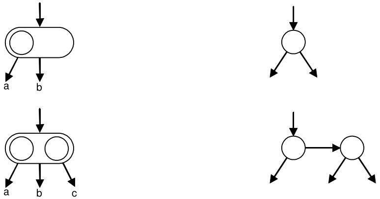
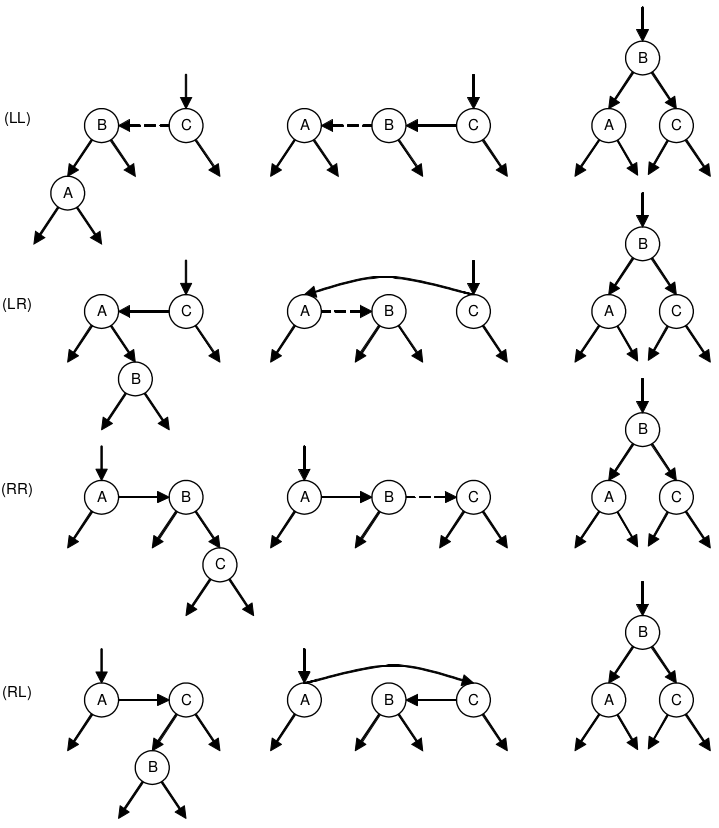

Fundamental Data Structures
-
Introduction
The modern digital computer was invented and intended as a device that should facilitate and speed up complicated and time-consuming computations. In the majority of applications its capability to store and access large amounts of information plays the dominant part and is considered to be its primary characteristic, and its ability to compute, i.e., to calculate, to perform arithmetic, has in many cases become almost irrelevant.
In all these cases, the large amount of information that is to be processed in some sense represents an abstraction of a part of reality. The information that is available to the computer consists of a selected set of data about the actual problem, namely that set that is considered relevant to the problem at hand, that set from which it is believed that the desired results can be derived. The data represent an abstraction of reality in the sense that certain properties and characteristics of the real objects are ignored because they are peripheral and irrelevant to the particular problem. An abstraction is thereby also a simplification of facts.
We may regard a personnel file of an employer as an example. Every employee is represented (abstracted) on this file by a set of data relevant either to the employer or to his accounting procedures. This set may include some identification of the employee, for example, his or her name and salary. But it will most probably not include irrelevant data such as the hair color, weight, and height.
In solving a problem with or without a computer it is necessary to choose an abstraction of reality, i.e., to define a set of data that is to represent the real situation. This choice must be guided by the problem to be solved. Then follows a choice of representation of this information. This choice is guided by the tool that is to solve the problem, i.e., by the facilities offered by the computer. In most cases these two steps are not entirely separable.
The choice of representation of data is often a fairly difficult one, and it is not uniquely determined by the facilities available. It must always be taken in the light of the operations that are to be performed on the data. A good example is the representation of numbers, which are themselves abstractions of properties of objects to be characterized. If addition is the only (or at least the dominant) operation to be performed, then a good way to represent the number
nis to writenstrokes. The addition rule on this representation is indeed very obvious and simple. The Roman numerals are based on the same principle of simplicity, and the adding rules are similarly straightforward for small numbers. On the other hand, the representation by Arabic numerals requires rules that are far from obvious (for small numbers) and they must be memorized. However, the situation is reversed when we consider either addition of large numbers or multiplication and division. The decomposition of these operations into simpler ones is much easier in the case of representation by Arabic numerals because of their systematic structuring principle that is based on positional weight of the digits.It is generally known that computers use an internal representation based on binary digits (bits). This representation is unsuitable for human beings because of the usually large number of digits involved, but it is most suitable for electronic circuits because the two values 0 and 1 can be represented conveniently and reliably by the presence or absence of electric currents, electric charge, or magnetic fields.
From this example we can also see that the question of representation often transcends several levels of detail. Given the problem of representing, say, the position of an object, the first decision may lead to the choice of a pair of real numbers in, say, either Cartesian or polar coordinates. The second decision may lead to a floating-point representation, where every real number x consists of a pair of integers denoting a fraction
fand an exponenteto a certain base (such thatx = f × 2e). The third decision, based on the knowledge that the data are to be stored in a computer, may lead to a binary, positional representation of integers, and the final decision could be to represent binary digits by the electric charge in a semiconductor storage device. Evidently, the first decision in this chain is mainly influenced by the problem situation, and the later ones are progressively dependent on the tool and its technology. Thus, it can hardly be required that a programmer decide on the number representation to be employed, or even on the storage device characteristics. These lower-level decisions can be left to the designers of computer equipment, who have the most information available on current technology with which to make a sensible choice that will be acceptable for all (or almost all) applications where numbers play a role.In this context, the significance of programming languages becomes apparent. A programming language represents an abstract computer capable of interpreting the terms used in this language, which may embody a certain level of abstraction from the objects used by the actual machine. Thus, the programmer who uses such a higher-level language will be freed (and barred) from questions of number representation, if the number is an elementary object in the realm of this language.
The importance of using a language that offers a convenient set of basic abstractions common to most problems of data processing lies mainly in the area of reliability of the resulting programs. It is easier to design a program based on reasoning with familiar notions of numbers, sets, sequences, and repetitions than on bits, storage units, and jumps. Of course, an actual computer represents all data, whether numbers, sets, or sequences, as a large mass of bits. But this is irrelevant to the programmer as long as he or she does not have to worry about the details of representation of the chosen abstractions, and as long as he or she can rest assured that the corresponding representation chosen by the computer (or compiler) is reasonable for the stated purposes.
The closer the abstractions are to a given computer, the easier it is to make a representation choice for the engineer or implementor of the language, and the higher is the probability that a single choice will be suitable for all (or almost all) conceivable applications. This fact sets definite limits on the degree of abstraction from a given real computer. For example, it would not make sense to include geometric objects as basic data items in a general-purpose language, since their proper repesentation will, because of its inherent complexity, be largely dependent on the operations to be applied to these objects. The nature and frequency of these operations will, however, not be known to the designer of a general-purpose language and its compiler, and any choice the designer makes may be inappropriate for some potential applications.
In this book these deliberations determine the choice of notation for the description of algorithms and their data. Clearly, we wish to use familiar notions of mathematics, such as numbers, sets, sequences, and so on, rather than computer-dependent entities such as bitstrings. But equally clearly we wish to use a notation for which efficient compilers are known to exist. It is equally unwise to use a closely machine-oriented and machine-dependent language, as it is unhelpful to describe computer programs in an abstract notation that leaves problems of representation widely open. The programming language Pascal had been designed in an attempt to find a compromise between these extremes, and the successor languages Modula-2 and Oberon are the result of decades of experience [1-3]. Oberon retains Pascal's basic concepts and incorporates some improvements and some extensions; it is used throughout this book [1-5]. It has been successfully implemented on several computers, and it has been shown that the notation is sufficiently close to real machines that the chosen features and their representations can be clearly explained. The language is also sufficiently close to other languages, and hence the lessons taught here may equally well be applied in their use.
-
The Concept of Data Type
In mathematics it is customary to classify variables according to certain important characteristics. Clear distinctions are made between real, complex, and logical variables or between variables representing individual values, or sets of values, or sets of sets, or between functions, functionals, sets of functions, and so on. This notion of classification is equally if not more important in data processing. We will adhere to the principle that every constant, variable, expression, or function is of a certain type. This type essentially characterizes the set of values to which a constant belongs, or which can be assumed by a variable or expression, or which can be generated by a function.
In mathematical texts the type of a variable is usually deducible from the typeface without consideration of context; this is not feasible in computer programs. Usually there is one typeface available on computer equipment (i.e., Latin letters). The rule is therefore widely accepted that the associated type is made explicit in a declaration of the constant, variable, or function, and that this declaration textually precedes the application of that constant, variable, or function. This rule is particularly sensible if one considers the fact that a compiler has to make a choice of representation of the object within the store of a computer. Evidently, the amount of storage allocated to a variable will have to be chosen according to the size of the range of values that the variable may assume. If this information is known to a compiler, so-called dynamic storage allocation can be avoided. This is very often the key to an efficient realization of an algorithm.
The primary characteristics of the concept of type that is used throughout this text, and that is embodied in the programming language Oberon, are the following [1-2]:
-
A data type determines the set of values to which a constant belongs, or which may be assumed by a variable or an expression, or which may be generated by an operator or a function.
-
The type of a value denoted by a constant, variable, or expression may be derived from its form or its declaration without the necessity of executing the computational process.
-
Each operator or function expects arguments of a fixed type and yields a result of a fixed type. If an operator admits arguments of several types (e.g., + is used for addition of both integers and real numbers), then the type of the result can be determined from specific language rules.
As a consequence, a compiler may use this information on types to check the legality of various constructs. For example, the mistaken assignment of a Boolean (logical) value to an arithmetic variable may be detected without executing the program. This kind of redundancy in the program text is extremely useful as an aid in the development of programs, and it must be considered as the primary advantage of good high-level languages over machine code (or symbolic assembly code). Evidently, the data will ultimately be represented by a large number of binary digits, irrespective of whether or not the program had initially been conceived in a high-level language using the concept of type or in a typeless assembly code. To the computer, the store is a homogeneous mass of bits without apparent structure. But it is exactly this abstract structure which alone is enabling human programmers to recognize meaning in the monotonous landscape of a computer store.
The theory presented in this book and the programming language Oberon specify certain methods of defining data types. In most cases new data types are defined in terms of previously defined data types. Values of such a type are usually conglomerates of component values of the previously defined constituent types, and they are said to be structured. If there is only one constituent type, that is, if all components are of the same constituent type, then it is known as the base type. The number of distinct values belonging to a type
Tis called its cardinality. The cardinality provides a measure for the amount of storage needed to represent a variablexof the typeT, denoted byx: T.Since constituent types may again be structured, entire hierarchies of structures may be built up, but, obviously, the ultimate components of a structure are atomic. Therefore, it is necessary that a notation is provided to introduce such primitive, unstructured types as well. A straightforward method is that of enumerating the values that are to constitute the type. For example in a program concerned with plane geometric figures, we may introduce a primitive type called shape, whose values may be denoted by the identifiers rectangle, square, ellipse, circle. But apart from such programmer-defined types, there will have to be some standard, predefined types. They usually include numbers and logical values. If an ordering exists among the individual values, then the type is said to be ordered or scalar. In Oberon, all unstructured types are ordered; in the case of explicit enumeration, the values are assumed to be ordered by their enumeration sequence.
With this tool in hand, it is possible to define primitive types and to build conglomerates, structured types up to an arbitrary degree of nesting. In practice, it is not sufficient to have only one general method of combining constituent types into a structure. With due regard to practical problems of representation and use, a general-purpose programming language must offer several methods of structuring. In a mathematical sense, they are equivalent; they differ in the operators available to select components of these structures. The basic structuring methods presented here are the array, the record, the set, and the sequence. More complicated structures are not usually defined as static types, but are instead dynamically generated during the execution of the program, when they may vary in size and shape. Such structures are the subject of Chap. 4 and include lists, rings, trees, and general, finite graphs.
Variables and data types are introduced in a program in order to be used for computation. To this end, a set of operators must be available. For each standard data type a programming languages offers a certain set of primitive, standard operators, and likewise with each structuring method a distinct operation and notation for selecting a component. The task of composition of operations is often considered the heart of the art of programming. However, it will become evident that the appropriate composition of data is equally fundamental and essential.
The most important basic operators are comparison and assignment, i.e., the test for equality (and for order in the case of ordered types), and the command to enforce equality. The fundamental difference between these two operations is emphasized by the clear distinction in their denotation throughout this text.
Test for equality:
x = y(an expression with valueTRUEorFALSE)Assignment to
x:x := y(a statement makingxequal toy)These fundamental operators are defined for most data types, but it should be noted that their execution may involve a substantial amount of computational effort, if the data are large and highly structured.
For the standard primitive data types, we postulate not only the availability of assignment and comparison, but also a set of operators to create (compute) new values. Thus we introduce the standard operations of arithmetic for numeric types and the elementary operators of propositional logic for logical values.
-
-
Standard Primitive Types
Standard primitive types are those types that are available on most computers as built-in features. They include the whole numbers, the logical truth values, and a set of printable characters. On many computers fractional numbers are also incorporated, together with the standard arithmetic operations. We denote these types by the identifiers
INTEGER, REAL, BOOLEAN, CHAR, SET-
The type
INTEGERThe type
INTEGERcomprises a subset of the whole numbers whose size may vary among individual computer systems. If a computer usesnbits to represent an integer in two's complement notation, then the admissible values x must satisfy-2n-1≤x < 2n-1. It is assumed that all operations on data of this type are exact and correspond to the ordinary laws of arithmetic, and that the computation will be interrupted in the case of a result lying outside the representable subset. This event is called overflow. The standard operators are the four basic arithmetic operations of addition (+), subtraction (-), multiplication (*) and division (/,DIV).Whereas the slash denotes ordinary division resulting in a value of type
REAL, the operatorDIVdenotes integer division resulting in a value of typeINTEGER. If we define the quotientq = m DIV nand the remainderr = m MOD n, the following relations hold, assumingn > 0:q*n + r = mand0 ≤ r < nExamples
31 DIV 10 = 3 31 MOD 10 = 1 -31 DIV 10 = -4 -31 MOD 10 = 9We know that dividing by
10ncan be achieved by merely shifting the decimal digitsnplaces to the right and thereby ignoring the lost digits. The same method applies, if numbers are represented in binary instead of decimal form. If two's complement representation is used (as in practically all modern computers), then the shifts implement a division as defined by the aboveDIVoperaton. Moderately sophisticated compilers will therefore represent an operation of the formm DIV 2norm MOD 2nby a fast shift (or mask) operation. -
The type
REALThe type
REALdenotes a subset of the real numbers. Whereas arithmetic with operands of the typesINTEGERis assumed to yield exact results, arithmetic on values of typeREALis permitted to be inaccurate within the limits of round-off errors caused by computation on a finite number of digits. This is the principal reason for the explicit distinction between the typesINTEGERandREAL, as it is made in most programming languages.The standard operators are the four basic arithmetic operations of addition (+), subtraction (-), multiplication (*), and division (/). It is an essence of data typing that different types are incompatible under assignment. An exception to this rule is made for assignment of integer values to real variables, because here the semanitcs are unambiguous. After all, integers form a subset of real numbers. However, the inverse direction is not permissible: Assignment of a real value to an integer variable requires an operation such as truncation or rounding. The standard transfer function
ENTIER(x)yields the integral part ofx. Rounding ofxis obtained byENTIER(x + 0.5).Many programming languages do not include an exponentiation operator. The following is an algorithm for the fast computation of
y = xn, wherenis a non-negative integer.y := 1.0; i := n; (* ADenS13 *) WHILE i > 0 DO (* x0n = xi * y *) IF ODD(i) THEN y := y*x END; x := x*x; i := i DIV 2 END -
The type
BOOLEANThe two values of the standard type
BOOLEANare denoted by the identifiersTRUEandFALSE. The Boolean operators are the logical conjunction, disjunction, and negation whose values are defined in Table 1.1. The logical conjunction is denoted by the symbol&, the logical disjunction byOR, and negation by "~". Note that comparisons are operations yielding a result of typeBOOLEAN. Thus, the result of a comparison may be assigned to a variable, or it may be used as an operand of a logical operator in a Boolean expression. For instance, given Boolean variablespandqand integer variablesx = 5,y = 8,z = 10, the two assignmentsp := x = y q := (x ≤ y) & (y < z)yield
p = FALSEandq = TRUE.Table 1.1. Boolean Operators. pqp OR qp & q~pTRUETRUETRUETRUEFALSETRUEFALSETRUEFALSEFALSEFALSETRUETRUEFALSETRUEFALSEFALSEFALSEFALSETRUEThe Boolean operators
&(AND) andORhave an additional property in most programming languages, which distinguishes them from other dyadic operators. Whereas, for example, the sumx+yis not defined, if eitherxoryis undefined, the conjunctionp&qis defined even ifqis undefined, provided thatpisFALSE. This conditionality is an important and useful property. The exact definition of&andORis therefore given by the following equations:p & q= if pthenqelseFALSEp OR q= if pthenTRUEelseq -
The type
CHARThe standard type
CHARcomprises a set of printable characters. Unfortunately, there is no generally accepted standard character set used on all computer systems. Therefore, the use of the predicate "standard" may in this case be almost misleading; it is to be understood in the sense of "standard on the computer system on which a certain program is to be executed."The character set defined by the International Standards Organization (ISO), and particularly its American version ASCII (American Standard Code for Information Interchange) is the most widely accepted set. The ASCII set is therefore tabulated in Appendix A. It consists of 95 printable (graphic) characters and 33 control characters, the latter mainly being used in data transmission and for the control of printing equipment.
In order to be able to design algorithms involving characters (i.e., values of type
CHAR), that are system independent, we should like to be able to assume certain minimal properties of character sets, namely:-
The type
CHARcontains the 26 capital Latin letters, the 26 lower-case letters, the 10 decimal digits, and a number of other graphic characters, such as punctuation marks. -
The subsets of letters and digits are ordered and contiguous, i.e.,
("A" ≤ x) & (x ≤ "Z")implies thatxis a capital letter("a" ≤ x) & (x ≤ "z")implies thatxis a lower-case letter("0" ≤ x) & (x ≤ "9")implies thatxis a decimal digit -
The type
CHARcontains a non-printing, blank character and a line-end character that may be used as separators.
Fig. 1.1. Representations of a text
The availability of two standard type transfer functions between the types
CHARandINTEGERis particularly important in the quest to write programs in a machine independent form. We will call themORD(ch), denoting the ordinal number ofchin the character set, andCHR(i), denoting the character with ordinal numberi. Thus,CHRis the inverse function ofORD,and vice versa, that is,ORD(CHR(i)) = i(ifCHR(i)is defined)CHR(ORD(c)) = cFurthermore, we postulate a standard function
CAP(ch). Its value is defined as the capital letter corresponding toch, providedchis a letter.chis a lower-case letter implies thatCAP(ch) =corresponding capital letterchis a capital letter implies thatCAP(ch) = ch -
-
The type
SETThe type
SETdenotes sets whose elements are integers in the range 0 to a small number, typically 31 or 63. Given, for example, variablesVAR r, s, t: SETpossible assignments are
r := {5}; s := {x, y .. z}; t := {}Here, the value assigned to
ris the singleton set consisting of the single element 5; totis assigned the empty set, and tosthe elementsx,y,y+1, … ,z-1,z.The following elementary operators are defined on variables of type
SET:*set intersection +set union -set difference /symmetric set difference INset membership Constructing the intersection or the union of two sets is often called set multiplication or set addition, respectively; the priorities of the set operators are defined accordingly, with the intersection operator having priority over the union and difference operators, which in turn have priority over the membership operator, which is classified as a relational operator. Following are examples of set expressions and their fully parenthesized equivalents:
r * s + t = (r*s) + t r - s * t = r - (s*t) r - s + t = (r-s) + t r + s / t = r + (s/t) x IN s + t = x IN (s+t)
-
-
The Array Structure
The array is probably the most widely used data structure; in some languages it is even the only one available. An array consists of components which are all of the same type, called its base type; it is therefore called a homogeneous structure. The array is a random-access structure, because all components can be selected at random and are equally quickly accessible. In order to denote an individual component, the name of the entire structure is augmented by the index selecting the component. This index is to be an integer between 0 and
n-1, wherenis the number of elements, the size, of the array.TYPE T = ARRAY n OF T0Examples
TYPE Row = ARRAY 4 OF REAL TYPE Card = ARRAY 80 OF CHAR TYPE Name = ARRAY 32 OF CHARA particular value of a variable
VAR x: Rowwith all components satisfying the equation
xi = 2-i, may be visualized as shown in Fig.1.2.Fig. 1.2. Array of type Rowwithxi = 2-i.x0 1.0 x1 0.5 x2 0.25 x3 0.125 An individual component of an array can be selected by an index. Given an array variable
x, we denote an array selector by the array name followed by the respective component's indexi, and we writexiorx[i]. Because of the first, conventional notation, a component of an array component is therefore also called a subscripted variable.The common way of operating with arrays, particularly with large arrays, is to selectively update single components rather than to construct entirely new structured values. This is expressed by considering an array variable as an array of component variables and by permitting assignments to selected components, such as for example
x[i] := 0.125. Although selective updating causes only a single component value to change, from a conceptual point of view we must regard the entire composite value as having changed too.The fact that array indices, i.e., names of array components, are integers, has a most important consequence: indices may be computed. A general index expression may be substituted in place of an index constant; this expression is to be evaluated, and the result identifies the selected component. This generality not only provides a most significant and powerful programming facility, but at the same time it also gives rise to one of the most frequently encountered programming mistakes: The resulting value may be outside the interval specified as the range of indices of the array. We will assume that decent computing systems provide a warning in the case of such a mistaken access to a non-existent array component.
The cardinality of a structured type, i. e. the number of values belonging to this type, is the product of the cardinality of its components. Since all components of an array type
Tare of the same base typeT0, we obtaincard(T) = card(T0)nConstituents of array types may themselves be structured. An array variable whose components are again arrays is called a matrix. For example,
M: ARRAY 10 OF Rowis an array consisting of ten components (rows), each constisting of four components of type
REAL. and is called a 10x4 matrix with real components. Selectors may be concatenated accordingly, such thatMijandM[i][j]denote thej-th component of rowMi, which is thei-th component ofM. This is usually abbreviated asM[i,j], and in the same spirit the declarationM: ARRAY 10 OF ARRAY 4 OF REALcan be written more concisely as
M: ARRAY 10, 4 OF REALIf a certain operation has to be performed on all components of an array or on adjacent components of a section of the array, then this fact may conveniently be emphasized by using the
FORsatement, as shown in the following examples for computing the sum and for finding the maximal element of an array declared asVAR a: ARRAY N OF INTEGER; (* ADenS14 *) sum := 0; FOR i := 0 TO N-1 DO sum := a[i] + sum END k := 0; max := a[0]; FOR i := 1 TO N-1 DO IF max < a[i] THEN k := i; max := a[k] END ENDIn a further example, assume that a fraction
fis represented in its decimal form withk-1digits, i.e., by an arraydsuch thatf = Si: 0 ≤ i < k: di * 10-i f = d0+ 10*d1 + 100*d2 + … + 10k-1*dk-1Now assume that we wish to divide
fby2. This is done by repeating the familiar division operation for allk-1digitsdi, starting withi=1. It consists of dividing each digit by 2 taking into account a possible carry from the previous position, and of retaining a possible remainderrfor the next position:r := 10*r +d[i]; d[i] := r DIV 2; r := r MOD 2This algorithm is used to compute a table of negative powers of 2. The repetition of halving to compute
2-1, 2-2, ... , 2-Nis again appropriately expressed by aFORstatement, thus leading to a nesting of twoFORstatements.PROCEDURE Power (VAR W: Texts.Writer; N: INTEGER); (* ADenS14 *) (*compute decimal representation of negative powers of 2*) VAR i, k, r: INTEGER; d: ARRAY N OF INTEGER; BEGIN FOR k := 0 TO N-1 DO Texts.Write(W, "."); r := 0; FOR i := 0 TO k-1 DO r := 10*r + d[i]; d[i] := r DIV 2; r := r MOD 2; Texts.Write(W, CHR(d[i] + ORD("0"))) END; d[k] := 5; Texts.Write(W, "5"); Texts.WriteLn(W) END END PowerThe resulting output text for
N = 10is.5 .25 .125 .0625 .03125 .015625 .0078125 .00390625 .001953125 .0009765625 -
The Record Structure
The most general method to obtain structured types is to join elements of arbitrary types, that are possibly themselves structured types, into a compound. Examples from mathematics are complex numbers, composed of two real numbers, and coordinates of points, composed of two or more numbers according to the dimensionality of the space spanned by the coordinate system. An example from data processing is describing people by a few relevant characteristics, such as their first and last names, their date of birth, sex, and marital status.
In mathematics such a compound type is the Cartesian product of its constituent types. This stems from the fact that the set of values defined by this compound type consists of all possible combinations of values, taken one from each set defined by each constituent type. Thus, the number of such combinations, also called
n-tuples, is the product of the number of elements in each constituent set, that is, the cardinality of the compound type is the product of the cardinalities of the constituent types.In data processing, composite types, such as descriptions of persons or objects, usually occur in files or data banks and record the relevant characteristics of a person or object. The word record has therefore become widely accepted to describe a compound of data of this nature, and we adopt this nomenclature in preference to the term Cartesian product. In general, a record type
Twith components of the typesT1,T2, ... ,Tnis defined as follows:TYPE T = RECORD s1: T1; s2: T2; ... sn: Tn END card(T) = card(T1) * card(T2) * ... * card(Tn)ExamplesTYPE Complex =RECORDre, im: REAL ENDTYPE Date =RECORDday, month, year: INTEGER ENDTYPE Person =RECORDname, firstname: Name; birthdate: Date; male: BOOLEANENDWe may visualize particular, record-structured values of, for example,the variables
z: Complex d: Date p: Personas shown in Fig. 1.3.
Fig. 1.3. Records of type Complex,DateandPerson.Complex z Date d Person p 1.0 -1.0 1 4 1973 SMITH JOHN 18 1 1986 TRUE The identifiers
s1,s2, ... ,snintroduced by a record type definition are the names given to the individual components of variables of that type. As components of records are called fields, the names are field identifiers. They are used in record selectors applied to record structured variables. Given a variablex: T, itsi-th field is denoted byx.si. Selective updating ofxis achieved by using the same selector denotation on the left side in an assignment statement:x.si := ewhere
eis a value (expression) of typeTi. Given, for example, the record variablesz,d, andpdeclared above, the following are selectors of components:z.im(of type REAL)d.month(of type INTEGER)p.name(of type Name)p.birthdate(of type Date)p.birthdate.day(of type INTEGER)p.mail(of type BOOLEAN)The example of the type
Personshows that a constituent of a record type may itself be structured. Thus, selectors may be concatenated. Naturally, different structuring types may also be used in a nested fashion. For example, thei-th component of an arrayabeing a component of a record variableris denoted byr.a[i], and the component with the selector namesof thei-th record structured component of the arrayais denoted bya[i].s.It is a characteristic of the Cartesian product that it contains all combinations of elements of the constituent types. But it must be noted that in practical applications not all of them may be meaningful. For instance, the type
Dateas defined above includes the 31st April as well as the 29th February 1985, which are both dates that never occurred. Thus, the definition of this type does not mirror the actual situation entirely correctly; but it is close enough for practical purposes, and it is the responsibility of the programmer to ensure that meaningless values never occur during the execution of a program.The following short excerpt from a program shows the use of record variables. Its purpose is to count the number of persons represented by the array variable family that are both female and born after the year 2000:
VAR count: INTEGER; family: ARRAY N OF Person; count := 0; FOR i := 0 TO N-1 DO IF ~family[i].male & (family[i].birthdate.year > 2000) THEN INC(count) END ENDThe record structure and the array structure have the common property that both are random-access structures. The record is more general in the sense that there is no requirement that all constituent types must be identical. In turn, the array offers greater flexibility by allowing its component selectors to be computable values (expressions), whereas the selectors of record components are field identifiers declared in the record type definition.
-
Representation Of Arrays, Records, And Sets
The essence of the use of abstractions in programming is that a program may be conceived, understood, and verified on the basis of the laws governing the abstractions, and that it is not necessary to have further insight and knowledge about the ways in which the abstractions are implemented and represented in a particular computer. Nevertheless, it is essential for a professional programmer to have an understanding of widely used techniques for representing the basic concepts of programming abstractions, such as the fundamental data structures. It is helpful insofar as it might enable the programmer to make sensible decisions about program and data design in the light not only of the abstract properties of structures, but also of their realizations on actual computers, taking into account a computer's particular capabilities and limitations.
The problem of data representation is that of mapping the abstract structure onto a computer store. Computer stores are — in a first approximation — arrays of individual storage cells called bytes. They are understood to be groups of 8 bits. The indices of the bytes are called addresses.
VAR store: ARRAY StoreSize OF BYTEThe basic types are represented by a small number of bytes, typically 2, 4, or 8. Computers are designed to transfer internally such small numbers (possibly 1) of contiguous bytes concurrently, "in parallel". The unit transferable concurrently is called a word.
-
Representation of Arrays
A representation of an array structure is a mapping of the (abstract) array with components of type
Tonto the store which is an array with components of typeBYTE. The array should be mapped in such a way that the computation of addresses of array components is as simple (and therefore as efficient) as possible. The addressiof thej-th array component is computed by the linear mapping functioni = i0 + j*s,where
i0is the address of the first component, andsis the number of words that a component occupies. Assuming that the word is the smallest individually transferable unit of store, it is evidently highly desirable thatsbe a whole number, the simplest case beings= 1. Ifsis not a whole number (and this is the normal case), thensis usually rounded up to the next larger integerS. Each array component then occupiesSwords, wherebyS-swords are left unused (see Figs. 1.4 and 1.5). Rounding up of the number of words needed to the next whole number is called padding. The storage utilization factoruis the quotient of the minimal amounts of storage needed to represent a structure and of the amount actually used:u = s /(srounded up to nearest integer)
Fig. 1.4. Mapping an array onto a store
Fig. 1.5. Padded representation of a record
Since an implementor has to aim for a storage utilization as close to 1 as possible, and since accessing parts of words is a cumbersome and relatively inefficient process, he or she must compromise. The following considerations are relevant:
- Padding decreases storage utilization.
- Omission of padding may necessitate inefficient partial word access.
- Partial word access may cause the code (compiled program) to expand and therefore to counteract the gain obtained by omission of padding.
In fact, considerations 2 and 3 are usually so dominant that compilers always use padding automatically. We notice that the utilization factor is always
u > 0.5, ifs > 0.5. However, ifs ≤ 0.5, the utilization factor may be significantly increased by putting more than one array component into each word. This technique is called packing. Ifncomponents are packed into a word, the utilization factor is (see Fig. 1.6)u = n*s /(n*srounded up to nearest integer)Fig.1.6. Packing 6 components into one word
Access to the
i-th component of a packed array involves the computation of the word addressjin which the desired component is located, and it involves the computation of the respective component positionkwithin the word.j = i DIV n k = i MOD nIn most programming languages the programmer is given no control over the representation of the abstract data structures. However, it should be possible to indicate the desirability of packing at least in those cases in which more than one component would fit into a single word, i.e., when a gain of storage economy by a factor of 2 and more could be achieved. We propose the convention to indicate the desirability of packing by prefixing the symbol
ARRAY(orRECORD) in the declaration by the symbolPACKED. -
Representation of Records
Records are mapped onto a computer store by simply juxtaposing their components. The address of a component (field)
rirelative to the origin address of the recordris called the field's offsetki. It is computed aski = s1 + s2 + ... + si-1 k0 = 0where
sjis the size (in words) of thej-th component. We now realize that the fact that all components of an array are of equal type has the welcome consequence thatki = i × s. The generality of the record structure does unfortunately not allow such a simple, linear function for offset address computation, and it is therefore the very reason for the requirement that record components be selectable only by fixed identifiers. This restriction has the desirable benefit that the respective offsets are known at compile time. The resulting greater efficiency of record field access is well-known.The technique of packing may be beneficial, if several record components can be fitted into a single storage word (see Fig. 1.7). Since offsets are computable by the compiler, the offset of a field packed within a word may also be determined by the compiler. This means that on many computers packing of records causes a deterioration in access efficiency considerably smaller than that caused by the packing of arrays.
Fig. 1.7. Representation of a packed record
-
Representation of Sets
A set
sis conveniently represented in a computer store by its characteristic functionC(s). This is an array of logical values whose ith component has the meaning "iis present ins". As an example, the set of small integerss = {2, 3, 5, 7, 11, 13}is represented by the sequence of bits, by a bitstring:C(s) = (… 0010100010101100)The representation of sets by their characteristic function has the advantage that the operations of computing the union, intersection, and difference of two sets may be implemented as elementary logical operations. The following equivalences, which hold for all elements
iof the base type of the setsxandy, relate logical operations with operations on sets:i IN (x+y) = (i IN x) OR (i IN y) i IN (x*y) = (i IN x) & (i IN y) i IN (x-y) = (i IN x) & ~(i IN y)These logical operations are available on all digital computers, and moreover they operate concurrently on all corresponding elements (bits) of a word. It therefore appears that in order to be able to implement the basic set operations in an efficient manner, sets must be represented in a small, fixed number of words upon which not only the basic logical operations, but also those of shifting are available. Testing for membership is then implemented by a single shift and a subsequent (sign) bit test operation. As a consequence, a test of the form
x IN {c1, c2, ... , cn}can be implemented considerably more efficiently than the equivalent Boolean expression(x = c1) OR (x = c2) OR ... OR (x = cn)A corollary is that the set structure should be used only for small integers as elements, the largest one being the wordlength of the underlying computer (minus 1).
-
-
The File (Sequence)
Another elementary structuring method is the sequence. A sequence is typically a homogeneous structure like the array. That is, all its elements are of the same type, the base type of the sequence. We shall denote a sequence
swithnelements bys = <s0, s1, s2, ... , sn-1>nis called the length of the sequence. This structure looks exactly like the array. The essential difference is that in the case of the array the number of elements is fixed by the array's declaration, whereas for the sequence it is left open. This implies that it may vary during execution of the program. Although every sequence has at any time a specific, finite length, we must consider the cardinality of a sequence type as infinite, because there is no fixed limit to the potential length of sequence variables.A direct consequence of the variable length of sequences is the impossibility to allocate a fixed amount of storage to sequence variables. Instead, storage has to be allocated during program execution, namely whenever the sequence grows. Perhaps storage can be reclaimed when the sequence shrinks. In any case, a dynamic storage allocation scheme must be employed. All structures with variable size share this property, which is so essential that we classify them as advanced structures in contrast to the fundamental structures discussed so far.
What, then, causes us to place the discussion of sequences in this chapter on fundamental structures? The primary reason is that the storage management strategy is sufficiently simple for sequences (in contrast to other advanced structures), if we enforce a certain discipline in the use of sequences. In fact, under this proviso the handling of storage can safely be delegated to a machanism that can be guaranteed to be reasonably effective. The secondary reason is that sequences are indeed ubiquitous in all computer applications. This structure is prevalent in all cases where different kinds of storage media are involved, i.e. where data are to be moved from one medium to another, such as from disk or tape to primary store or vice-versa.
The discipline mentioned is the restraint to use sequential access only. By this we mean that a sequence is inspected by strictly proceeding from one element to its immediate successor, and that it is generated by repeatedly appending an element at its end. The immediate consequence is that elements are not directly accessible, with the exception of the one element which currently is up for inspection. It is this accessing discipline which fundamentally distinguishes sequences from arrays. As we shall see in Chapter 2, the influence of an access discipline on programs is profound.
The advantage of adhering to sequential access which, after all, is a serious restriction, is the relative simplicity of needed storage management. But even more important is the possibility to use effective buffering techniques when moving data to or from secondary storage devices. Sequential access allows us to feed streams of data through pipes between the different media. Buffering implies the collection of sections of a stream in a buffer, and the subsequent shipment of the whole buffer content once the buffer is filled. This results in very significantly more effective use of secondary storage. Given sequential access only, the buffering mechanism is reasonably straightforward for all sequences and all media. It can therefore safely be built into a system for general use, and the programmer need not be burdened by incorporating it in the program. Such a system is usually called a file system, because the high-volume, sequential access devices are used for permanent storage of (persistent) data, and they retain them even when the computer is switched off. The unit of data on these media is commonly called (sequential) file. Here we will use the term file as synonym to sequence.
There exist certain storage media in which the sequential access is indeed the only possible one. Among them are evidently all kinds of tapes. But even on magnetic disks each recording track constitutes a storage facility allowing only sequential access. Strictly sequential access is the primary characteristic of every mechanically moving device and of some other ones as well.
It follows that it is appropriate to distinguish between the data structure, the sequence, on one hand, and the mechanism to access elements on the other hand. The former is declared as a data structure, the latter typically by the introduction of a record with associated operators, or, according to more modern terminology, by a rider object. The distinction between data and mechanism declarations is also useful in view of the fact that several access points may exist concurrently on one and the same sequence, each one representing a sequential access at a (possibly) different location.
We summarize the essence of the foregoing as follows:
-
Arrays and records are random access structures. They are used when located in primary, random-access store.
-
Sequences are used to access data on secondary, sequential-access stores, such as disks and tapes.
-
We distinguish between the declaration of a sequence variable, and that of an access mechanism located at a certain position within the seqence.
-
Elementary File Operators
The discipline of sequential access can be enforced by providing a set of seqencing operators through which files can be accessed exclusively. Hence, although we may here refer to the
i-th element of a sequencesby writingsi, this shall not be possible in a program.Sequences, files, are typically large, dynamic data structures stored on a secondary storage device. Such a device retains the data even if a program is terminated, or a computer is switched off. Therefore the introduction of a file variable is a complex operation connecting the data on the external device with the file variable in the program. We therefore define the type File in a separate module, whose definition specifies the type together with its operators. We call this module Files and postulate that a sequence or file variable must be explicitly initialized (opened) by calling an appropriate operator or function:
VAR f: File f := Open(name)where
nameidentifies the file as recorded on the persistent data carrier. Some systems distinguish between opening an existing file and opening a new file:f := Old(name) f := New(name)The disconnection between secondary storage and the file variable then must also be explicitly requested by, for example, a call of
Close(f).Evidently, the set of operators must contain an operator for generating (writing) and one for inspecting (reading) a sequence. We postulate that these operations apply not to a file directly, but to an object called a rider, which itself is connected with a file (sequence), and which implements a certain access mechanism. The sequential access discipline is guaranteed by a restrictive set of access operators (procedures).
A sequence is generated by appending elements at its end after having placed a rider on the file.
Assuming the declaration
VAR r: Riderwe position the rider
ron the filefby the statementSet(r, f, pos)where
pos = 0designates the beginning of the file (sequence). A typical pattern for generating the sequence is:WHILE more DO compute next element x; Write(r, x) ENDA sequence is inspected by first positioning a rider as shown above, and then proceeding from element to element. A typical pattern for reading a sequence is:
Read(r, x); WHILE ~r.eof DO process element x; Read(r, x) ENDEvidently, a certain position is always associated with every rider. It is denoted by
r.pos. Furthermore, we postulate that a rider contain a predicate (flag)r.eofindicating whether a preceding read operation had reached the sequence's end. We can now postulate and describe informally the following set of primitive operators:1a. New(f, name)defines fto be the empty sequence1b. Old(f, name)defines fto be the sequence persistently stored with given name.2. Set(r, f, pos)associate rider rwith sequencef, and place it at positionpos.3. Write(r, x)place element with value xin the sequence designated by riderr, and advance.4. Read(r, x)assign to xthe value of the element designated by riderr, and advance.5. Close(f)registers the written file fin the persistent store (flush buffers).Note. Writing an element in a sequence is often a complex operation. However, mostly, files are created by appending elements at the end.
Translator's note. The program examples in the book use two more commands:
6. WriteInt(r, n)place the integer nin the sequence designated by riderr, and advance.7. ReadInt(r, n)assign to nthe integer value designated by riderr, and advance.In order to convey a more precise understanding of the sequencing operators, the following example of an implementation is provided. It shows how they might be expressed if sequences were represented by arrays. This example of an implementation intentionally builds upon concepts introduced and discussed earlier, and it does not involve either buffering or sequential stores which, as mentioned above, make the sequence concept truly necessary and attractive. Nevertheless, this example exhibits all the essential characteristics of the primitive sequence operators, independently of how the sequences are represented in store.
The operators are presented in terms of conventional procedures. This collection of definitions of types, variables, and procedure headings (signatures) is called a definition. We assume that we are to deal with sequences of characters, i.e. text files whose elements are of type
CHAR. The declarations ofFileandRiderare good examples of an application of record structures because, in addition to the field denoting the array which represents the data, further fields are required to denote the current length and position, i.e. the state of the rider.DEFINITION Files; (* ADenS171_Files *) TYPE File; (*sequence of characters*) Rider = RECORD eof: BOOLEAN END; PROCEDURE New(VAR name: ARRAY OF CHAR): File; PROCEDURE Old(VAR name: ARRAY OF CHAR): File; PROCEDURE Close(VAR f: File); PROCEDURE Set(VAR r: Rider; VAR f: File; pos: INTEGER); PROCEDURE Write(VAR r: Rider; ch: CHAR); PROCEDURE Read(VAR r: Rider; VAR ch: CHAR); PROCEDURE WriteInt(VAR r: Rider; n: INTEGER); PROCEDURE ReadInt(VAR r: Rider; VAR n: INTEGER); END Files.A definition represents an abstraction. Here we are given the two data types,
FileandRider, together with their operations, but without further details revealing their actual representation in store. Of the operators, declared as procedures, we see their headings only. This hiding of the details of implementation is intentional. The concept is called information hiding. About riders we only learn that there is a property calledeof. This flag is set, if a read operation reaches the end of the file. The rider's position is invisible, and hence the rider's invariant cannot be falsified by direct access. The invariant expresses the fact that the position always lies within the limits given by the associated sequence. The invariant is established by procedureSet, and required and maintained by proceduresReadandWrite(alsoReadIntandWriteInt).The statements that implement the procedures and further, internal details of the data types, are sepecified in a construct called module. Many representations of data and implementations of procedures are possible. We chose the following as a simple example (with fixed maximal file length):
MODULE Files; (* ADenS171_Files *) CONST MaxLength = 4096; TYPE File = POINTER TO RECORD len: INTEGER; a: ARRAY MaxLength OF CHAR END; Rider = RECORD (* 0 <= pos <= f.len <= Max Length *) f: File; pos: INTEGER; eof: BOOLEAN END; PROCEDURE New (name: ARRAY OF CHAR): File; VAR f: File; BEGIN NEW(f); f.len := 0; f.eof := FALSE; (*directory operation omitted*) RETURN f END New; PROCEDURE Old (name: ARRAY OF CHAR): File; VAR f: File; BEGIN NEW(f); f.eof := FALSE; (*directory lookup omitted*) RETURN f END Old; PROCEDURE Close (VAR f: File); BEGIN END Close; PROCEDURE Set (VAR r: Rider; f: File; pos: INTEGER); BEGIN (*assume f # NIL*) r.f := f; r.eof := FALSE; IF pos >= 0 THEN IF pos <= f.len THEN r.pos := pos ELSE r.pos := f.len END ELSE r.pos := 0 END END Set; PROCEDURE Write (VAR r: Rider; ch: CHAR); BEGIN IF (r.pos <= r.s.len) & (r.pos < MaxLength) THEN r.f.a[r.pos] := ch; INC(r.pos); IF r.pos > r.f.len THEN INC(r.f.len) END ELSE r.eof := TRUE END END Write; PROCEDURE Read (VAR r: Rider; VAR ch: CHAR); BEGIN IF r.pos < r.f.len THEN ch := r.f.a[r.pos]; INC(r.pos) ELSE r.eof := TRUE END END Read; PROCEDURE WriteInt (VAR r: Rider; n: INTEGER); BEGIN (*implementation is platform dependent*) END WriteInt; PROCEDURE ReadInt (VAR r: Rider; VAR n: INTEGER); BEGIN (*implementation is platform dependent*) END ReadInt; END Files.Note that in this example the maximum length that sequences may reach is an arbitrary constant. Should a program cause a sequence to become longer, then this would not be a mistake of the program, but an inadequacy of this implementation. On the other hand, a read operation proceeding beyond the current end of the sequence would indeed be the program's mistake. Here, the flag
r.eofis also used by the write operation to indicate that it was not possible to perform it. Hence,~r.eofis a precondition for bothReadandWrite. -
Buffering Sequences
When data are transferred to or from a secondary storage device, the individual bits are transferred as a stream. Usually, a device imposes strict timing constraints upon the transmission. For example, if data are written on a tape, the tape moves at a fixed speed and requires the data to be fed at a fixed rate. When the source ceases, the tape movement is switched off and speed decreases quickly, but not instantaneously. Thus a gap is left between the data transmitted and the data to follow at a later time. In order to achieve a high density of data, the number of gaps ought to be kept small, and therefore data are transmitted in relatively large blocks once the tape is moving. Similar conditions hold for magnetic disks, where the data are allocated on tracks with a fixed number of blocks of fixed size, the so-called block size. In fact, a disk should be regarded as an array of blocks, each block being read or written as a whole, containing typically
2kbytes withk = 8, 9, … 12.Our programs, however, do not observe any such timing constraints. In order to allow them to ignore the constraints, the data to be transferred are buffered. They are collected in a buffer variable (in main store) and transferred when a sufficient amount of data is accumulated to form a block of the required size. The buffer's client has access only via the two procedures
depositandfetch:DEFINITION Buffer; PROCEDURE deposit (x: CHAR); PROCEDURE fetch (VAR x: CHAR); END Buffer.Buffering has an additional advantage in allowing the process which generates (receives) data to proceed concurrently with the device that writes (reads) the data from (to) the buffer. In fact, it is convenient to regard the device as a process itself which merely copies data streams. The buffer's purpose is to provide a certain degree of decoupling between the two processes, which we shall call the producer and the consumer. If, for example, the consumer is slow at a certain moment, it may catch up with the producer later on. This decoupling is often essential for a good utilization of peripheral devices, but it has only an effect, if the rates of producer and consumer are about the same on the average, but fluctuate at times. The degree of decoupling grows with increasing buffer size.
We now turn to the question of how to represent a buffer, and shall for the time being assume that data elements are deposited and fetched individually instead of in blocks. A buffer essentially constitutes a first-in-first-out queue (fifo). If it is declared as an array, two index variables, say
inandout, mark the positions of the next location to be written into and to be read from. Ideally, such an array should have no index bounds. A finite array is quite adequate, however, considering the fact that elements once fetched are no longer relevant. Their location may well be re-used. This leads to the idea of the circular buffer.Fig. 1.8. Circular buffer with indices
inandout.The operations of depositing and fetching an element are expressed in the following module, which exports these operations as procedures, but hides the buffer and its index variables — and thereby effectively the buffering mechanism — from the client processes. This mechanism also involves a variable
ncounting the number of elements currently in the buffer. IfNdenotes the size of the buffer, the condition0 ≤ n ≤ N. Therefore, the operationfetchmust be guarded by the conditionn < 0(buffer non-empty), and the operationdepositby the conditionn < N(buffer non-full). Not meeting the former condition must be regarded as a programming error, a violation of the latter as a failure of the suggested implementation (buffer too small).MODULE Buffer; (*implements circular buffers*) CONST N = 1024; (*buffer size*) VAR n, in, out: INTEGER; buf: ARRAY N OF CHAR; PROCEDURE deposit (x: CHAR); BEGIN IF n = N THEN HALT END; INC(n); buf[in] := x; in := (in + 1) MOD N END deposit; PROCEDURE fetch (VAR x: CHAR); BEGIN IF n = 0 THEN HALT END; DEC(n); x := buf[out]; out := (out + 1) MOD N END fetch; BEGIN n := 0; in := 0; out := 0 END Buffer.This simple implementation of a buffer is acceptable only, if the procedures
depositandfetchare activated by a single agent (once acting as a producer, once as a consumer). If, however, they are activated by individual, concurrent processes, this scheme is too simplistic. The reason is that the attempt to deposit into a full buffer, or the attempt to fetch from an empty buffer, are quite legitimate. The execution of these actions will merely have to be delayed until the guarding conditions are established. Such delays essentially constitute the necessary synchronization among concurrent processes. We may represent these delays respectively by the statementsREPEAT UNTIL n < N REPEAT UNTIL n > 0which must be substituted for the two conditioned
HALTstatements. -
Buffering between Concurrent Processes
The presented solution is, however, not recommended, even if it is known that the two processes are driven by two individual engines. The reason is that the two processors necessarily access the same variable n, and therefore the same store. The idling process, by constantly polling the value
n, and therefore the same store. The idling process, by constantly polling the valuen, hinders its partner, because at no time can the store be accessed by more than one process. This kind of busy waiting must indeed be avoided, and we therefore postulate a facility that makes the details of synchronization less explicit, in fact hides them. We shall call this facility a signal, and assume that it is available from a utility moduleSignalstogether with a set of primitive operators on signals.Every signal
sis associated with a guard (condition)Ps. If a process needs to be delayed untilPsis established (by some other process), it must, before proceeding, wait for the signals. This is to be expressed by the statementWait(s). If, on the other hand, a process establishesPs, it thereupon signals this fact by the statementSend(s). IfPsis the established precondition to every statementSend(s), thenPscan be regarded as a postcondition ofWait(s).DEFINITION Signals; TYPE Signal; PROCEDURE Wait (VAR s: Signal); PROCEDURE Send (VAR s: Signal); PROCEDURE Init (VAR s: Signal); END Signals.We are now able to express the buffer module in a form that functions properly when used by individual, concurrent processes:
MODULE Buffer; IMPORT Signals; CONST N = 1024; (*buffer size*) VAR n, in, out: INTEGER; nonfull: Signals.Signal; (*n < N*) nonempty: Signals.Signal; (*n > 0*) buf: ARRAY N OF CHAR; PROCEDURE deposit (x: CHAR); BEGIN IF n = N THEN Signals.Wait(nonfull) END; INC(n); buf[in] := x; in := (in + 1) MOD N; IF n = 1 THEN Signals.Send(nonempty) END END deposit; PROCEDURE fetch (VAR x: CHAR); BEGIN IF n = 0 THEN Signals.Wait(nonempty) END; DEC(n); x := buf[out]; out := (out + 1) MOD N; IF n = N-1 THEN Signals.Send(nonfull) END END fetch; BEGIN n := 0; in := 0; out := 0; Signals.Init(nonfull); Signals.Init(nonempty) END Buffer.An additional caveat must be made, however. The scheme fails miserably, if by coincidence both consumer and producer (or two producers or two consumers) fetch the counter value
nsimultaneously for updating. Unpredictably, its resulting value will be eithern+1, orn-1, but notn. It is indeed necessary to protect the processes from dangerous interference. In general, all operations that alter the values of shared variables constitute potential pitfalls.A sufficient (but not always necessary) condition is that all shared variables be declared local to a module whose procedures are guaranteed to be executed under mutual exclusion. Such a module is called a monitor [1-7]. The mutual exclusion provision guarantees that at any time at most one process is actively engaged in executing a procedure of the monitor. Should another process be calling a procedure of the (same) monitor, it will automatically be delayed until the first process has terminated its procedure.
Note. By actively engaged is meant that a process execute a statement other than a wait statement.
At last we return now to the problem where the producer or the consumer (or both) require the data to be available in a certain block size. The following module is a variant of the one previously shown, assuming a block size of
Npdata elements for the producer, and ofNcelements for the consumer. In these cases, the buffer sizeNis usually chosen as a common multiple ofNpandNc. In order to emphasise that symmetry between the operations of fetching and depositing data, the single counternis now represented by two counters, namelyneandnf. They specify the numbers of empty and filled buffer slots respectively. When the consumer is idle,nfindicates the number of elements needed for the consumer to proceed; and when the producer is waiting,nespecifies the number of elements needed for the producer to resume. (Thereforene + nf = Ndoes not always hold.)MODULE Buffer; IMPORT Signals; CONST Np = 16; (*size of producer block*) Nc = 128; (*size of consumer block*) N = 1024; (*buffer size, common multiple of Np and Nc*) VAR ne, nf: INTEGER; in, out: INTEGER; nonfull: Signals.Signal; (*ne >= 0*) nonempty: Signals.Signal; (*nf >= 0*) buf: ARRAY N OF CHAR; PROCEDURE deposit (VAR x: ARRAY OF CHAR); BEGIN ne := ne - Np; IF ne < 0 THEN Signals.Wait(nonfull) END; FOR i := 0 TO Np-1 DO buf[in] := x[i]; INC(in) END; IF in = N THEN in := 0 END; nf := nf + Np; IF nf >= 0 THEN Signals.Send(nonempty) END END deposit; PROCEDURE fetch (VAR x: ARRAY OF CHAR); BEGIN nf := nf - Nc; IF nf < 0 THEN Signals.Wait(nonempty) END; FOR i := 0 TO Nc-1 DO x[i] := buf[out]; INC(out) END; IF out = N THEN out := 0 END; ne := ne + Nc; IF ne >= 0 THEN Signals.Send(nonfull) END END fetch; BEGIN ne := N; nf := 0; in := 0; out := 0; Signals.Init(nonfull); Signals.Init(nonempty) END Buffer. -
Textual Input and Output
By standard input and output we understand the transfer of data to (from) a computer system from (to) genuinely external agents, in particular its human operator. Input may typically originate at a keyboard and output may sink into a display screen. In any case, its characteristic is that it is readable, and it typically consists of a sequence of characters. It is a text. This readability condition is responsible for yet another complication incurred in most genuine input and output operations. Apart from the actual data transfer, they also involve a transformation of representation. For example, numbers, usually considered as atomic units and represented in binary form, need be transformed into readable, decimal notation. Structures need to be represented in a suitable layout, whose generation is called formatting.
Whatever the transformation may be, the concept of the sequence is once again instrumental for a considerable simplification of the task. The key is the observation that, if the data set can be considered as a sequence of characters, the transformation of the sequence can be implemented as a sequence of (identical) transformations of elements.
T(<s0, s1, ..., sn-1>) = <T(s0), T(s1), ... , T(sn-1)>We shall briefly investigate the necessary operations for transforming representations of natural numbers for input and output. The basis is that a number
xrepresented by the sequence of decimal digitsd = <dn-1, ... , d1, d0>has the valuex = Si: i = 0 .. n-1: di * 10i x = dn-1 × 10n-1 + dn-2 × 10n-2 + … + d1 × 10 + d0 x = ( … (dn-1 × 10 + dn-2) × 10 + … + d1) × 10 + d0Assume now that the sequence
dis to be read and transformed, and the resulting numeric value to be assigned tox. The simple algorithm terminates with the reading of the first character that is not a digit. (Arithmetic overflow is not considered).x := 0; (* ADenS174.CharsToNumber *) Read(ch); WHILE ("0" <= ch) & (ch <= "9") DO x := 10*x + (ORD(ch) - ORD("0")); Read(ch) ENDIn the case of output the transformation is complexified by the fact that the decomposition of
xinto decimal digits yields them in the reverse order. The least digit is generated first by computingx MOD 10. This requires an intermediate buffer in the form of a first-in-last-out queue (stack). We represent it as an arraydwith indexiand obtain the following program:i := 0; (* ADenS174.NumberToChars *) REPEAT d[i] := x MOD 10; x := x DIV 10; INC(i) UNTIL x = 0; REPEAT DEC(i); Write(CHR(d[i] + ORD("0"))) UNTIL i = 0Note. A consistent substitution of the constant 10 in these algorithms by a positive integer
Bwill yield number conversion routines to and from representations with baseB. A frequently used case isB = 16(hexadecimal), because the involved multiplications and divisions can be implemented by simple shifts of the binary numbers.Obviously, it should not be necessary to specify these ubiquitous operations in every program in full detail. We therefore postulate a utility module that provides the most common, standard input and output operations on numbers and strings. This module is referenced in most programs throughout this book, and we call it
Texts. It defines a typeText,Readers andWriters forTexts, and procedures for reading and writing a character, an integer, a cardinal number, or a string.Before we present the definition of module
Texts, we point out an essential asymmetry between input and output of texts. Whereas a text is generated by a sequence of calls of writing procedures, writing integers, real numbers, strings etc., reading a text by a sequence of calls of reading procedures is questionable practice. This is because we rather wish to read the next element without having to know its type. We rather wish to determine its type after reading the item. This leads us to the concept of a scanner which, after each scan allows to inspect type and value of the item read. A scanner acts like a rider in the case of files. However, it imposes a certain syntax on the text to be read. We postulate a scanner for texts consisting of a sequence of integers, real numbers, strings, names, and special characters given by the following syntax specified in EBNF (Extended Backus Naur Form):item = integer | RealNumber | identifier | string | SpecialChar. integer = [“-”] digit {digit}. RealNumber = [“-”] digit {digit} “.” digit {digit} [(“E” | “D”)[“+” | “-” digit {digit}]. identifier = letter {letter | digit}. string = ‘”’ {any character except quote} ‘”’. SpecialChar = “!” | “?” | “@” | “#” | “$” | “%” | “^” | “&” | “+” | “-” | “*” | “/” | “\” | “|” | “(” | “)” | “[” | “]” | “{” | “}” | “<” | “>” | “.” | “,” | “:” | “;” | “~”.Items are separated by blanks and/or line breaks.
DEFINITION Texts; (* ADenS174_Texts *) CONST Int = 1; Real = 2; Name = 3; Char = 4; TYPE Text, Writer; Reader = RECORD eot: BOOLEAN END; Scanner = RECORD class: INTEGER; i: INTEGER; x: REAL; s: ARRAY 32 OF CHAR; ch: CHAR; nextCh: CHAR END; PROCEDURE OpenReader (VAR r: Reader; t: Text; pos: INTEGER); PROCEDURE OpenWriter (VAR w: Writer; t: Text; pos: INTEGER); PROCEDURE OpenScanner (VAR s: Scanner; t: Text; pos: INTEGER); PROCEDURE Read (VAR r: Reader; VAR ch: CHAR); PROCEDURE ReadInt (VAR r: Reader; VAR n: INTEGER); PROCEDURE Scan (VAR s: Scanner); PROCEDURE Write (VAR w: Writer; ch: CHAR); PROCEDURE WriteLn (VAR w: Writer); (*terminate line*) PROCEDURE WriteString (VAR w: Writer; s: ARRAY OF CHAR); PROCEDURE WriteInt (VAR w: Writer; x, n: INTEGER); (*write integer x with (at least) n characters. If n is greater than the number of digits needed, blanks are added preceding the number*) PROCEDURE WriteReal (VAR w: Writer; x: REAL); PROCEDURE Close (VAR w: Writer); END Texts.Hence we postulate that after a call of
Scan(S)S.class = Intimplies S.iis the integer readS.class = Realimplies S.xis the real number readS.class = Nameimplies S.sis the identifier of string readS.class = Charimplies S.chis the special character readS.nextChis the character immediately following the read item, possibly a blank.
-
-
Searching
The task of searching is one of most frequent operations in computer programming. It also provides an ideal ground for application of the data structures so far encountered. There exist several basic variations of the theme of searching, and many different algorithms have been developed on this subject. The basic assumption in the following presentations is that the collection of data, among which a given element is to be searched, is fixed. We shall assume that this set of
Nelements is represented as an array, say asa: ARRAY N OF ItemTypically, the type item has a record structure with a field that acts as a key. The task then consists of finding an element of a whose key field is equal to a given search argument
x. The resulting indexi, satisfyinga[i].key = x, then permits access to the other fields of the located element. Since we are here interested in the task of searching only, and do not care about the data for which the element was searched in the first place, we shall assume that the typeItemconsists of the key only, i.e is the key.-
Linear Search
When no further information is given about the searched data, the obvious approach is to proceed sequentially through the array in order to increase step by step the size of the section, where the desired element is known not to exist. This approach is called linear search. There are two conditions which terminate the search:
-
The element is found, i.e.
ai = x. -
The entire array has been scanned, and no match was found.
This results in the following algorithm:
i := 0; (* ADenS18_Search *) WHILE (i < N) & (a[i] # x) DO INC(i) ENDNote that the order of the terms in the Boolean expression is relevant.
The invariant, i.e the condition satisfied before and after each loop step, is
(0 ≤ i < N) & (Ak: 0 ≤ k < i : ak ≠ x)expressing that for all values of
kless thanino match exists. Note that the values ofibefore and after each loop step are different. The invariant is preserved nevertheless due to the while-clause.From this and the fact that the search terminates only if the condition in the while-clause is false, the resulting condition is derived as:
((i = N) OR (ai = x)) & (Ak: 0 ≤ k < i : ak ≠ x)This condition not only is our desired result, but also implies that when the algorithm did find a match, it found the one with the least index, i.e. the first one.
i = Nimplies that no match exists.Termination of the repetition is evidently guaranteed, because in each step
iis increased and therefore certainly will reach the limitNafter a finite number of steps; in fact, afterNsteps, if no match exists.Each step evidently requires the incrementing of the index and the evaluation of a Boolean expression. Could this task be simplifed, and could the search thereby be accelerated? The only possibility lies in finding a simplification of the Boolean expression which notably consists of two factors. Hence, the only chance for finding a simpler solution lies in establishing a condition consisting of a single factor that implies both factors. This is possible only by guaranteeing that a match will be found, and is achieved by posting an additional element with value
xat the end of the array. We call this auxiliary element a sentinel, because it prevents the search from passing beyond the index limit. The arrayais now declared asa: ARRAY N+1 OF INTEGER,and the linear search algorithm with sentinel is expressed by
a[N] := x; i := 0; (* ADenS18_Search *) WHILE a[i] # x DO INC(i) ENDThe resulting condition, derived from the same invariant as before, is
(ai = x) & (Ak: 0 ≤ k < i : ak ≠ x)Evidently,
i = Nimplies that no match (except that for the sentinel) was encountered. -
-
Binary Search
There is quite obviously no way to speed up a search, unless more information is available about the searched data. It is well known that a search can be made much more effective, if the data are ordered. Imagine, for example, a telephone directory in which the names were not alphabetically listed. It would be utterly useless. We shall therefore present an algorithm which makes use of the knowledge that
ais ordered, i.e., of the conditionAk: 1 ≤ k < N : ak-1 ≤ akThe key idea is to inspect an element picked at random, say
am, and to compare it with the search argumentx. If it is equal tox, the search terminates; if it is less thanx, we infer that all elements with indices less or equal tomcan be eliminated from further searches; and if it is greater thanx, all with index greater or equal tomcan be eliminated. This results in the following algorithm called binary search; it uses two index variablesLandRmarking the left and at the right end of the section ofain which an element may still be found.L := 0; R := N-1; (* ADenS18_Search *) m :=any value between L and R; WHILE (L <= R) & (a[m] # x) DO IF a[m] < x THEN L := m+1 ELSE R := m-1 END; m :=any value between L and RENDNote a fundamental structural similarity of this algorithm and the linear search in the preceding section: the role of
iis now played by the tripletL, m, R. To explicate the similarity and, thereby, to better ensure the loop correctness, we resisted the tempation of a minor optimization that would eliminate one of the two identical assignments tom.The loop invariant, i.e. the condition satisfied before and after each step, is
(Ak: 0 ≤ k < L : ak < x) & (Ak: R < k < N : ak > x)from which the result is derived as
((L > R) OR (am = x)) & (Ak: 0 ≤ k < L : ak < x ) & (Ak: R < k < N : ak > x)which implies
((L > R) & (Ak: 0 ≤ k < N : ak ≠ x)) OR (am = x)The choice of
mis apparently arbitrary in the sense that correctness does not depend on it. But it does influence the algorithm's effectiveness. Clearly our goal must be to eliminate in each step as many elements as possible from further searches, no matter what the outcome of the comparison is. The optimal solution is to choose the middle element, because this eliminates half of the array in any case. As a result, the maximum number of steps islog2N, rounded up to the nearest integer. Hence, this algorithm offers a drastic improvement over linear search, where the expected number of comparisons isN/2.The efficiency can be somewhat improved by interchanging the two if-clauses. Equality should be tested second, because it occurs only once and causes termination. But more relevant is the question, whether — as in the case of linear search — a solution could be found that allows a simpler condition for termination. We indeed find such a faster algorithm, if we abandon the naive wish to terminate the search as soon as a match is established. This seems unwise at first glance, but on closer inspection we realize that the gain in efficiency at every step is greater than the loss incurred in comparing a few extra elements. Remember that the number of steps is at most
log N.The faster solution is based on the following invariant:
(Ak: 0 ≤ k < L : ak < x) & (Ak: R ≤ k < N : ak ≥ x)and the search is continued until the two sections span the entire array.
L := 0; R := N; (* ADenS18_Search *) WHILE L < R DO m := (L+R) DIV 2; IF a[m] < x THEN L := m+1 ELSE R := m END ENDThe terminating condition is
L ≥ R. Is it guaranteed to be reached? In order to establish this guarantee, we must show that under all circumstances the differenceR-Lis diminished in each step.L < Rholds at the beginning of each step. The arithmetic meanmthen satisfiesL ≤ m < R. Hence, the difference is indeed diminished by either assigningm+1toL(increasingL) ormtoR(decreasingR), and the repetition terminates withL = R.However, the invariant and
L = Rdo not yet establish a match. Certainly, ifR = N, no match exists. Otherwise we must take into consideration that the elementa[R]had never been compared. Hence, an additional test for equalitya[R] = xis necessary. In contrast to the first solution, this algorithm — like linear search — finds the matching element with the least index. -
Table Search
A search through an array is sometimes also called a table search, particularly if the keys are themselves structured objects, such as arrays of numbers or characters. The latter is a frequently encountered case; the character arrays are called strings or words. Let us define a type
StringasString = ARRAY M OF CHARand let order on strings
xandybe defined as follows:(x = y) ≡ (Aj: 0 ≤ j < M : xj = yj) (x < y) ≡ Ei: 0 ≤ i < N : ((Aj: 0 ≤ j < i: xj = yj) & (xi < yi))In order to establish a match, we evidently must find all characters of the comparands to be equal. Such a comparison of structured operands therefore turns out to be a search for an unequal pair of comparands,
i.e. a search for inequality. If no unequal pair exists, equality is established. Assuming that the length of the words be quite small, say less than 30, we shall use a linear search in the following solution.
In most practical applications, one wishes to consider strings as having a variable length. This is accomplished by associating a length indication with each individual string value. Using the type declared above, this length must not exceed the maximum length
M. This scheme allows for sufficient flexibility for many cases, yet avoids the complexities of dynamic storage allocation. Two representations of string lengths are most commonly used:-
The length is implicitly specified by appending a terminating character which does not otherwise occur. Usually, the non-printing value
0X. (It is important for the subsequent applications that it be the least character in the character set.) -
The length is explicitly stored as the first element of the array, i.e. the string s has the form
s = s0, s1, s2, ... , sN-1wheres1 ... sN-1are the actual characters of the string ands0 = CHR(N). This solution has the advantage that the length is directly available, and the disadvantage that the maximum length is limited to the size of the character set, that is, to 256 in the case of the ASCII set.For the subsequent search algorithm, we shall adhere to the first scheme. A string comparison then takes the form
i := 0; WHILE (x[i] # 0X) & (x[i] = y[i]) DO i := i+1 ENDThe terminating character now functions as a sentinel, the loop invariant is
Aj: 0 ≤ j < i : xj = yj ≠ 0X, and the resulting condition is therefore((xi = 0X) OR (xi ≠ yi)) & (Aj: 0 ≤ j < i : xj = yj ≠ 0X).It establishes a match between
xandy, provided thatxi = yi; and it establishesx < y, ifxi < yi.We are now prepared to return to the task of table searching. It calls for a nested search, namely a search through the entries of the table, and for each entry a sequence of comparisons between components. For example, let the table
Tand the search argumentxbe defined asT: ARRAY N OF String; x: StringAssuming that
Nmay be fairly large and that the table is alphabetically ordered, we shall use a binary search. Using the algorithms for binary search and string comparison developed above, we obtain the following program segment.i := -1; (* ADenS183 *) L := 0; R := N; WHILE L < R DO m := (L+R) DIV 2; i := 0; WHILE (x[i] # 0X) & (T[m,i] = x[i]) DO i := i+1 END; IF T[m,i] < x[i] THEN L := m+1 ELSE R := m END END; IF R < N THEN i := 0; WHILE (x[i] # 0X) & (T[R,i] = x[i]) DO i := i+1 END END (* (R < N) & (T[R,i] = x[i]) establish a match*) -
-
-
String search
A frequently encountered kind of search is the so-called string search. It is characterized as follows.
Given an array
sofNelements and an arraypofMelements, where0 < M < N, declared ass: ARRAY N OF Item p: ARRAY M OF Itemstring search is the task of finding the first occurrence of
pins. Typically, the items are characters; thensmay be regarded as a text andpas a pattern or word, and we wish to find the first occurrence of the word in the text. This operation is basic to every text processing system, and there is obvious interest in finding an efficient algorithm for this task.A specific feature of this problem is the presence of two arrays and a necessity to scan them simultaneously in such a way that the coordination of the two indices used to scan the arrays is determined by the data. A correct implementation of such "braided" loops is simplified by expressing them using the so-called Dijkstra's loop, i.e. a multibranch version of the
WHILEloop. This fundamental and powerful control structure is described in Appendix C.We consider three string search algorithms: straight string search; an optimization of the straight search due to Knuth, Morris and Pratt,; and, finally, the algorithm of Boyer and Moor based on a revision of the basic idea of the straight search, which proves to be the most efficient of the three.
-
Straight String Search
Before paying particular attention to efficiency, however, let us first present a straightforward searching algorithm. We shall call it straight string search. It is convenient to have in view fig. 1.9 that schematically pictures the pattern
pof lengthMbeing matched against the textsof lengthNin positioni. The indexjnumbers the elements of the pattern, and the pattern elementp[j]is matched against the text elements[i+j].Fig. 1.9. A pattern of length
Mis being matched against a text of lengthNin positioni.The predicate
R(i)that describes a complete match of the pattern against text characters in positioniis formulated as follows:R(i) = Aj: 0 ≤ j < M : pj = si+jThe allowed values of
iwhere a match can occur range from0toN-Minclusive.Ris evaluated by repeatedly comparing the corresponding pairs of characters. This, evidently, amounts to a linear search of a non-matching pair:R(i) = (Aj: 0 ≤ j < M : pj = si+j) = ~(Ej: 0 ≤ j < M : pj ≠ si+j)Therefore
R(i)is easily formulated as follows:PROCEDURE R (i: INTEGER): BOOLEAN; VAR j: INTEGER; BEGIN (* 0 <= i < N *) j := 0; WHILE (j < M) & (p[j] = s[i+j]) DO INC(j) END; RETURN ~(j < M) END RLet the result be the index
i, which points to the first occurrence of a match of the pattern within the string. ThenR(i)should hold. In addition,R(k)must be false for allk < i. Denote the latter condition asQ(i):Q(i) = Ak: 0 ≤ k < i : ~R(k)With the problem thus formulated, a linear search suggests itself (see sec.1.8.1):
i := 0; (* ADenS191_Straight *) WHILE (i <= N-M) & ~R(i) DO INC(i) ENDThe invariant of this loop is
Q(i), which holds both before the instructionINC(i)and — thanks to the second operand of the guard — after it.An advantage of this algorithm is the transparency of its logic: the two loops are completely decoupled and one is hidden inside the function-procedure
R. However, this same property may also be a disadvantage: firstly, the additional procedure call at each step of a potentially long loop may be too costly in such a basic operation as the string search. Secondly, the more sophisticated algorithms considered in subsequent sections make use of the information obtained in the inner loop in order to increase i in the external loop by a value larger than 1, so that the two loops are no longer independent. One could eliminate the procedureRby introducing a logical variable to store its result and by embedding the loop fromRin the body of the main loop overi. However, the interaction of two loops via a logical variable destroys the original transparency, which may cause errors in the program evolution.Formulation of such loops is facilitated by the so-called Dijkstra loop, which is a multibranch version of the
WHILEloop with each branch having its own guard (see Appendix C). In the present case the two branches correspond to the steps iniandj, respectively. Recall Fig. 1.9 and introduce the predicateP(i, j)that expresses the match of the firstjcharacters of the pattern with the characters of the text starting from positioni:P(i, j) = Ak: 0 ≤ k < j : si+k = pkThen
R(i) = P(i, M).Fig. 1.9 shows that the current search state is characterized by
iandj. The invariant (i.e. the condition that holds after each increase ofiorj) can be chosen as follows: in the positions belowithere is no match, and in the positionithere is a match of the firstjcharacters of the pattern. This is formally expressed as follows:Q(i) & P(i, j)Evidently,
j = Mwould mean there is a required math of the entire pattern in the positioni, whereasi > N - Mwould mean that the text contains no match at all.It is then sufficient to try to increment
jby 1 in order to increase the matching segment, and if that is impossible, to move the pattern into a new position by incrementingiby 1 and settingjto 0, in order to restart verifying the match from the beginning of the pattern:i := 0; j := 0; WHILEthe matching segment can be increasedDO INC( j ) ELSIFthe pattern can be movedDO INC( i ); j := 0 ENDIt remains to consider each step separately and to accurately formulate the conditions for which each step makes sense, i.e. preserves the invariant. For the first branch it is the condition
(i ≤ N-M) & (j < M) & (si+j = pj)which guaranteesP(i, j)afterjis incremented. For the second branch, the last operand of this conjunction must have inequality instead of equality, which would imply~R(i)and guaranteeQ(i)afteriis incremented. Taking into account that the two guards are evaluated in their textual order, the last operand of the conjunction can be dropped in the second branch, and one arrives at the following program:i := 0; j := 0; (* ADenS191_Straight *) WHILE (i <= N-M) & (j < M) & (s[i+j] = p[j]) DO INC( j ) ELSIF (i <= N-M) & (j < M) DO INC( i ); j := 0 ENDAfter the loop terminates, the condition is guaranteed to hold, which is equal to conjunction of negations of all quards, i.e. (
i < N-M) OR (j >= M). Moreover, from the structure of the loop it follows that the two operands cannot hold simultanelously, andjcannot exceedM. Theni < N-Mmeans that there is no match anywhere in the text, whereasj = M, thatQ(i) & P(i, M)is true, i.e. a complete match is found in positioni.Analysis of straight string search. This algorithm operates quite effectively, if we can assume that a mismatch between character pairs occurs after at most a few comparisons in the inner loop. This is likely to be the case, if the cardinality of the item type is large. For text searches with a character set size of 128 we may well assume that a mismatch occurs after inspecting 1 or 2 characters only. Nevertheless, the worst case performance is rather alarming. Consider, for example, that the string consist of
N-1 A's followed by a singleB, and that the pattern consist ofM-1 A's followed by aB. Then in the order ofN*Mcomparisons are necessary to find the match at the end of the string. As we shall subsequently see, there fortunately exist methods that drastically improve this worst case behaviour. -
The Knuth-Morris-Pratt String Search
Around 1970, D.E. Knuth, J.H. Morris, and V.R. Pratt invented an algorithm that requires essentially in the order of N character comparisons only, even in the worst case [1-8]. The new algorithm is based on the observation that by starting the next pattern comparison at its beginning each time, we may be discarding valuable information gathered during previous comparisons. After a partial match of the beginning of the pattern with corresponding characters in the string, we indeed know the last part of the string, and perhaps could have precompiled some data (from the pattern) which could be used for a more rapid advance in the text string. The following example of a search for the word Hooligan illustrates the principle of the algorithm. Underlined characters are those which were compared. Note that each time two compared characters do not match, the pattern is shifted all the way, because a smaller shift could not possibly lead to a full match.
Hoola-Hoola girls like Hooligans. Hooligan Hooligan Hooligan Hooligan Hooligan Hooligan ...... HooliganIn contrast with the simple algorithm, here the comparison point (the position of the text element being compared with some element of the pattern) is never moved backwards. This suggests that we must abandon the notion that i always marks the current position of the first pattern character in the text. Rather,
iwill now store the comparison point; the variablejwill as before point to the corresponding element of the pattern. See fig. 1.10.Fig. 1.10. In the notations of the KMP algorithm, the alignment position of the pattern is now
i-j(and noti, as was the case with the simple algorithm).The central pont of the algorithm is the comparison of
s[i]andp[j], if they are equal theniandjare both increased by 1, otherwise the pattern must be shifted by assigning tojof some smaller valueD. The boundary casej = 0shows that one should provide for a shift of the pattern entirely beyond the current comparison point (so thatp[0]becomes aligned withs[i+1]). For this, it is convenient to chooseD = -1. The main loop of the algorithm takes the following form:i := 0; j := 0; WHILE (i < N) & (j < M) & ((j < 0) OR (s[i] = p[j])) DO INC( i ); INC( j ) ELSIF (i < N) & (j < M) DO (* (j >= 0) & (s[i] # p[j]) *) j := D ENDThis formulation is admittedly not quite complete, because it contains an unspecified shift value
D. We shall return to it shortly, but first point out that the invariant here is chosen the same as in the simple algorithm; in the new notation it isQ(i-j) & P(i-j, j).The post condition of the loop — evaluated as a conjuction of negations of all guards — is given by the expression
(j >= M) OR (i >= N), but in reality only equalities can occur. If the algorithm terminates due toj = M, the termP(i-j, j)of the invariant impliesP(i-M, M) = R(i), that is, a match at positioni-M. Otherwise it terminates withi = N, and sincej < M, the first term of the invariant,Q(i-j), implies that no match exists at all.We must now demonstrate that the algorithm never falsifies the invariant. It is easy to show that it is established at the beginning with the values
i = j = 0. Let us first investigate the effect of the two statements incrementingiandjby 1 in the first branch. They apparently do not falsifyQ(i-j), since the differencei-jremains unchanged. Nor do they falsifyP(i-j, j)thanks to the equality in the guard (see the definition ofP). As to the second branch, we shall simply postuate that the valueDalways be such that replacingjbyDwill maintain the invariant.Provided that
D < jthe assignmentj := Drepresents a shift of the pattern to the right byj-Dpositions. Naturally, we wish this shift to be as large as possible, i.e.,Dto be as small as possible. This is illustrated by Fig. 1.11.Fig. 1.11. Assignment
j := Dshifts pattern byj-DpositionsEvidently the condition
P(i-D, D) & Q(i-D)must hold before assigningj := D, if the invariantP(i-j, j) & Q(i-j)is to hold thereafter. This precondition is therefore our guideline for finding an appropriate expression forDalong with the conditionP(i-j, j) & Q(i-j), which is assumed to hold prior to the assignment (all subsequent reasoning concerns this point of the program).The key observation is that thanks to
P(i-j, j)we know thatp0 ... pj-1 = si-j ... si-1(we had just scanned the first
jcharacters of the pattern and found them to match). Therefore the conditionP(i-D, D)withD < j, i.e.,p0 ... pD-1 = si-D ... si-1translates into an equation for
D:p0 ... pD-1 = pj-D ... pj-1As to
Q(i-D), this condition follows fromQ(i-j)provided~R(i-k)fork = D+1 ... j. The validity of~R(i-k)forj = kis guaranteed by the inequalitys[i] # p[j]. Although the conditions~R(i-k) ≡ ~P(i-k, M)fork = D+1 ... j-1cannot be evaluated from the scanned text fragment only, one can evaluate the sufficient conditions~P(i-k,k). Expanding them and taking into account the already found matches between the elements ofsandp, we obtain the following condition:p0 ... pk-1 ≠ pj-k ... pj-1for allk = D+1 ... j-1that is,
Dmust be the maximal solution of the above equation. Fig. 1.12 illustrates the function ofD.Fig. 1.12. Partial pattern matches and computation of
D.If there is no solution for
D, then there is no match in positions belowi+1. Then we setD := -1. Such a situation is shown in the upper part in Fig. 1.13.The last example in Fig. 1.12 suggests that we can do even slightly better; had the character
pjbeen anAinstead of anF, we would know that the corresponding string character could not possibly be anA, and the shift of the pattern withD = -1had to be performed in the next loop iteration (see Fig. 1.13, the lower part). Therefore we may impose the conditionpD ≠ pjwhen solving forD. This allows us to fully utilize the information from the inequality in the guard of this loop branch.Fig.1.13. Shifting pattern past position of last character
The essential result is that the value
Dapparently is determined by the pattern alone and does not depend on the text string. We shall denoteDfor a givenjasdj. The auxiliary tabledmay be computed before starting the actual search; this computation amounts to a precompilation of the pattern. This effort is evidently only worthwhile if the text is considerably longer than the pattern (M << N). If multiple occurrences of the same pattern are to be found, the same values ofdcan be reused.So, the computation of
dj < jis the search for the longest matching sequencep0 ... pd[j]-1 = pj-d[j] ... pj-1with the additional constraint of
pd[j] ≠ pj. Evidently, the computation ofdjpresents us with the first application of string search, and we may as well use the fast KMP version itself.PROCEDURE Search (VAR p, s: ARRAY OF CHAR; M, N: INTEGER; VAR r: INTEGER); (* ADenS192_KMP *) (*search for pattern p of length M in text s of length N; M <= Mmax*) (*if p is found, then r indicates the position in s, otherwise r = -1*) VAR i, j, k: INTEGER; d: ARRAY Mmax OF INTEGER; BEGIN (*compute d from p*) d[0] := -1; IF p[0] # p[1] THEN d[1] := 0 ELSE d[1] := -1 END; j := 1; k := 0; WHILE (j < M-1) & (k >= 0) & (p[j] # p[k]) DO k := d[k] ELSIF j < M-1 DO (* (k < 0) OR (p[j] = p[k]) *) INC( j ); INC( k ); IF p[j] # p[k] THEN d[j] := k ELSE d[j] := d[k] END; ASSERT( d[j] = D(j) ); END; (*search proper*) i := 0; j := 0; WHILE (j < M) & (i < N) & (j >= 0) & (s[i] # p[j]) DO j := d[j]; ELSIF (j < M) & (i < N) DO INC(i); INC(j); END; IF j = M THEN r := i-M ELSE r := -1 END END SearchAnalysis of KMP search. The exact analysis of the performance of KMP-search is, like the algorithm itself, very intricate. In [1-8] its inventors prove that the number of character comparisons is in the order of
M+N, which suggests a substantial improvement overM*Nfor the straight search. They also point out the welcome property that the scanning pointerinever backs up, whereas in straight string search the scan always begins at the first pattern character after a mismatch, and therefore may involve characters that had actually been scanned already. This may cause awkward problems when the string is read from secondary storage where backing up is costly. Even when the input is buffered, the pattern may be such that the backing up extends beyond the buffer contents. -
The Boyer-Moore String Search
The clever scheme of the KMP-search yields genuine benefits only if a mismatch was preceded by a partial match of some length. Only in this case is the pattern shift increased to more than 1. Unfortunately, this is the exception rather than the rule; matches occur much more seldom than mismatches. Therefore the gain in using the KMP strategy is marginal in most cases of normal text searching. The method to be discussed here does indeed not only improve performance in the worst case, but also in the average case. It was invented by R.S. Boyer and J.S. Moore around 1975, and we shall call it BM search. We shall here present a simplified version of BM-search before proceeding to the one given by Boyer and Moore.
BM-search is based on the unconventional idea to start comparing characters at the end of the pattern rather than at the beginning. Like in the case of KMP-search, the pattern is precompiled into a table
dbefore the actual search starts. Let, for every characterxin the character set,dxbe the distance of the rightmost occurrence ofxin the pattern from its end. Now assume that a mismatch between string and pattern was discovered. Then the pattern can immediately be shifted to the right bydp[M-1]positions, an amount that is quite likely to be greater than 1. IfpM-1does not occur in the pattern at all, the shift is even greater, namely equal to the entire pattern's length. The following example illustrates this process.Hoola-Hoola girls like Hooligans. Hooligan Hooligan Hooligan Hooligan HooliganSince individual character comparisons now proceed from right to left, the following, slightly modified versions of of the predicates
P,RandQare more convenient.P(i, j) = Ak: j ≤ k < M : si-M+k = pk R(i) = P(i, 0) Q(i) = Ak: M ≤ k < i : ~R(k)The loop invariant has the form
Q(i) & P(i, j). It is convenient to definek = i-M+j. Then the BM-algorithm can be formulated as follows.i := M; j := M; k := i; WHILE (j > 0) & (i <= N) & (s[k-1] = p[j-1]) DO DEC(k); DEC(j) ELSIF (j > 0) & (i <= N) DO i := i + d[ORD(s[i-1])]; j := M; k := i; ENDThe indices satisfy
0 ≤ j ≤ M, M ≤ i, and 0 < k ≤ i. Therefore, termination withj = 0impliesP(i, 0) = R(i), i.e., a match at positionk = i-M. Termination withj > 0demands thati > N; henceQ(i)impliesQ(N), signalling that no match exists. Of course we still have to convince ourselves thatQ(i)andP(i, j)are indeed invariants of the two repetitions. They are trivially satisfied when repetition starts, sinceQ(M)andP(x, M)are always true.Consider the first branch. Simultaneously decrementing
kandjdoes not affectQ(i), and, sincesk-1 = pj-1had been established, andP(i, j)holds prior to decrementingj, thenP(i, j)holds after it as well.In the second branch, it is sufficient to show that the statement
i := i + ds[i-1]never falsifies the invariantQ(i)becauseP(i, j)is satisfied automatically after the remaining assignments.Q(i)is satisfied after incrementing i provided that before the assignmentQ(i+ds[i-1])is guaranteed. Since we know thatQ(i)holds, it suffices to establish~R(i+h)forh = 1 .. ds[i-1]-1. We now recall thatdxis defined as the distance of the rightmost occurrence ofxin the pattern from the end. This is formally expressed asAk: M-dx ≤ k < M-1 : pk ≠ xSubstituting
si-1forx, we obtainAk: M-ds[i-1] ≤ k < M-1 : si-1 ≠ pk = Ah: 1 ≤ h ≤ ds[i-1]-1 : si-1 ≠ pM-1-h ⇒ Ah: 1 ≤ h ≤ ds[i-1]-1 : ~R(i+h)The following program includes the presented, simplified Boyer-Moore strategy in a setting similar to that of the preceding KMP-search program.
PROCEDURE Search (VAR s, p: ARRAY OF CHAR; M, N: INTEGER; VAR r: INTEGER); (* ADenS193_BM *) (*search for pattern p of length M in text s of length N*) (*if p is found, then r indicates the position in s, otherwise r = -1*) VAR i, j, k: INTEGER; d: ARRAY 128 OF INTEGER; BEGIN FOR i := 0 TO 127 DO d[i] := M END; FOR j := 0 TO M-2 DO d[ORD(p[j])] := M-j-1 END; i := M; j := M; k := i; WHILE (j > 0) & (i <= N) & (s[k-1] = p[j-1]) DO DEC(k); DEC(j) ELSIF (j > 0) & (i <= N) DO i := i + d[ORD(s[i-1])]; j := M; k := i; END; IF j <= 0 THEN r := k ELSE r := -1 END END SearchAnalysis of Boyer-Moore Search. The original publication of this algorithm [1-9] contains a detailed analysis of its performance. The remarkable property is that in all except especially construed cases it requires substantially less than
Ncomparisons. In the luckiest case, where the last character of the pattern always hits an unequal character of the text, the number of comparisons isN/M.The authors provide several ideas on possible further improvements. One is to combine the strategy explained above, which provides greater shifting steps when a mismatch is present, with the Knuth-Morris-Pratt strategy, which allows larger shifts after detection of a (partial) match. This method requires two precomputed tables;
d1is the table used above, andd2is the table corresponding to the one of the KMP-algorithm. The step taken is then the larger of the two, both indicating that no smaller step could possibly lead to a match. We refrain from further elaborating the subject, because the additional complexity of the table generation and the search itself does not seem to yield any appreciable efficiency gain. In fact, the additional overhead is larger, and casts some uncertainty whether the sophisticated extension is an improvement or a deterioration.Exercises
-
Assume that the cardinalities of the standard types
INTEGER,REALandCHARare denoted bycint,crealandcchar. What are the cardinalities of the following data types defined as exemples in this chapter:Complex, Date, Person, Row, Card, Name? -
Which are the instruction sequences (on your computer) for the
following:
- Fetch and store operations for an element of packed records and arrays?
- Set operations, including the test for membership?
- What are the reasons for defining certain sets of data as sequences instead of arrays?
- Given is a railway timetable listing the daily services on several lines of a railway system. Find a representation of these data in terms of arrays, records, or sequences, which is suitable for lookup of arrival and departure times, given a certain station and desired direction of the train.
-
Given a text
Tin the form of a sequence and lists of a small number of words in the form of two arraysAandB. Assume that words are short arrays of characters of a small and fixed maximum length. Write a program that transforms the textTinto a textSby replacing each occurrence of a wordAiby its corresponding wordBi. -
Compare the following three versions of the binary search with the one presented in the text. Which of the three programs are correct? Determine the relevant invariants. Which versions are more efficient? We assume the following variables, and the constant
N > 0VAR i, j, k, x: INTEGER; a: ARRAY N OF INTEGER;Program A:
i := 0; j := N-1; REPEAT k := (i+j) DIV 2; IF a[k] < x THEN i := k ELSE j := k END UNTIL (a[k] = x) OR (i > j)Program B:
i := 0; j := N-1; REPEAT k := (i+j) DIV 2; IF x < a[k] THEN j := k-1 END; IF a[k] < x THEN i := k+1 END UNTIL i > jProgram C:
i := 0; j := N-1; REPEAT k := (i+j) DIV 2; IF x < a[k] THEN j := k ELSE i := k+1 END UNTIL i > jHint: All programs must terminate with
ak = x, if such an element exists, orak ≠ x, if there exists no element with valuex. -
A company organizes a poll to determine the success of its products. Its products are records and tapes of hits, and the most popular hits are to be broadcast in a hit parade. The polled population is to be divided into four categories according to sex and age (say, less or equal to 20, and older than 20). Every person is asked to name five hits. Hits are identified by the numbers 1 to
N(say,N = 30). The results of the poll are to be appropriately encoded as a sequence of characters.Hint: use procedures
ReadandReadIntto read the values of the poll.TYPE hit = INTEGER; reponse = RECORD name, firstname: Name; male: BOOLEAN; age: INTEGER; choice: ARRAY 5 OF hit END; VAR poll: Files.FileThis file is the input to a program which computes the following results:
-
A list of hits in the order of their popularity. Each entry consists of the hit number and the number of times it was mentioned in the poll. Hits that were never mentioned are omitted from the list.
-
Four separate lists with the names and first names of all respondents who had mentioned in first place one of the three hits most popular in their category.
The five lists are to be preceded by suitable titles.
-
References
[1.1] O-.J. Dahl, E.W. Dijkstra, C.A.R. Hoare. Structured Programming. F. Genuys, Ed., New York, Academic Press, 1972.
[1.2] C.A.R. Hoare, in Structured Programming [1.1], pp. 83-174.
[1.3] K. Jensen and N. Wirth. PASCAL — User Manual and Report. Springer-Verlag, 1974.
[1.4] N. Wirth. Program development by stepwise refinement. Comm. ACM, 14, No. 4 (1971), 221-27.
[1.5] N. Wirth. Programming in Modula-2. Springer-Verlag, 1982.
[1.6] N. Wirth. On the composition of well-structured programs. Computing Surveys, 6, No. 4, (1974) 247-59.
[1.7] C.A.R. Hoare. The Monitor: An operating systems structuring concept. Comm. ACM 17, 10 (Oct. 1974), 549-557.
[1.8] D.E.Knuth, J.H. Morris, and V.R. Pratt. Fast pattern matching in strings. SIAM J. Comput., 6, 2, (June 1977), 323-349.
[1.9] R.S. Boyer and J.S. Moore. A fast string searching algorithm. Comm. ACM, 20, 10 (Oct. 1977), 762-772.
-
Assume that the cardinalities of the standard types
-
SORTING
-
Introduction
The primary purpose of this chapter is to provide an extensive set of examples illustrating the use of the data structures introduced in the preceding chapter and to show how the choice of structure for the underlying data profoundly influences the algorithms that perform a given task. Sorting is also a good example to show that such a task may be performed according to many different algorithms, each one having certain advantages and disadvantages that have to be weighed against each other in the light of the particular application.
Sorting is generally understood to be the process of rearranging a given set of objects in a specific order. The purpose of sorting is to facilitate the later search for members of the sorted set. As such it is an almost universally performed, fundamental activity. Objects are sorted in telephone books, in income tax files, in tables of contents, in libraries, in dictionaries, in warehouses, and almost everywhere that stored objects have to be searched and retrieved. Even small children are taught to put their things "in order", and they are confronted with some sort of sorting long before they learn anything about arithmetic.
Hence, sorting is a relevant and essential activity, particularly in data processing. What else would be easier to sort than data! Nevertheless, our primary interest in sorting is devoted to the even more fundamental techniques used in the construction of algorithms. There are not many techniques that do not occur somewhere in connection with sorting algorithms. In particular, sorting is an ideal subject to demonstrate a great diversity of algorithms, all having the same purpose, many of them being optimal in some sense, and most of them having advantages over others. It is therefore an ideal subject to demonstrate the necessity of performance analysis of algorithms. The example of sorting is moreover well suited for showing how a very significant gain in performance may be obtained by the development of sophisticated algorithms when obvious methods are readily available.
![]()
Fig. 2.1. The sorting of an array
The dependence of the choice of an algorithm on the structure of the data to be processed - an ubiquitous phenomenon - is so profound in the case of sorting that sorting methods are generally classified into two categories, namely, sorting of arrays and sorting of (sequential) files. The two classes are often called internal and external sorting because arrays are stored in the fast, high-speed, random-access "internal" store of computers and files are appropriate on the slower, but more spacious "external" stores based on mechanically moving devices (disks and tapes). The importance of this distinction is obvious from the example of sorting numbered cards. Structuring the cards as an array corresponds to laying them out in front of the sorter so that each card is visible and individually accessible (see Fig. 2.1).
Structuring the cards as a file, however, implies that from each pile only the card on the top is visible (see Fig. 2.2).
![]()
![]()
![]()
Fig. 2.2. The sorting of a file
Such a restriction will evidently have serious consequences on the sorting method to be used, but it is unavoidable if the number of cards to be laid out is larger than the available table.
Before proceeding, we introduce some terminology and notation to be used throughout this chapter. If we are given
nitemsa0, a1, ... , an-1sorting consists of permuting these items into an array
ak0, ak1, ... , ak[n-1]such that, given an ordering function
ff(ak0) ≤ f(ak1) ≤ ... ≤ f(ak[n-1])Ordinarily, the ordering function is not evaluated according to a specified rule of computation but is stored as an explicit component (field) of each item. Its value is called the key of the item. As a consequence, the record structure is particularly well suited to represent items and might for example be declared as follows:
TYPE Item = RECORD key: INTEGER; (*other components declared here*) ENDThe other components represent relevant data about the items in the collection; the key merely assumes the purpose of identifying the items. As far as our sorting algorithms are concerned, however, the key is the only relevant component, and there is no need to define any particular remaining components. In the following discussions, we shall therefore discard any associated information and assume that the type
Itembe defined asINTEGER. This choice of the key type is somewhat arbitrary. Evidently, any type on which a total ordering relation is defined could be used just as well.A sorting method is called stable if the relative order if items with equal keys remains unchanged by the sorting process. Stability of sorting is often desirable, if items are already ordered (sorted) according to some secondary keys, i.e., properties not reflected by the (primary) key itself.
This chapter is not to be regarded as a comprehensive survey in sorting techniques. Rather, some selected, specific methods are exemplified in greater detail. For a thorough treatment of sorting, the interested reader is referred to the excellent and comprehensive compendium by D. E. Knuth [2-7] (see also Lorin [2-10]).
-
Sorting Arrays
The predominant requirement that has to be made for sorting methods on arrays is an economical use of the available store. This implies that the permutation of items which brings the items into order has to be performed in situ, and that methods which transport items from an array a to a result array b are intrinsically of minor interest. Having thus restricted our choice of methods among the many possible solutions by the criterion of economy of storage, we proceed to a first classification according to their efficiency, i.e., their economy of time. A good measure of efficiency is obtained by counting the numbers
Cof needed key comparisons andMof moves (transpositions) of items. These numbers are functions of the numbernof items to be sorted. Whereas good sorting algorithms require in the order ofn*log(n)comparisons, we first discuss several simple and obvious sorting techniques, called straight methods, all of which require in the ordern2comparisons of keys. There are three good reasons for presenting straight methods before proceeding to the faster algorithms.-
Straight methods are particularly well suited for elucidating the characteristics of the major sorting principles.
-
Their programs are easy to understand and are short. Remember that programs occupy storage as well!
-
Although sophisticated methods require fewer operations, these operations are usually more complex in their details; consequently, straight methods are faster for sufficiently small
n, although they must not be used for largen.
Sorting methods that sort items in situ can be classified into three principal categories according to their underlying method:
Sorting by insertion
Sorting by selection
Sorting by exchangeThese three pinciples will now be examined and compared. The procedures operate on a global variable
awhose components are to be sorted in situ, i.e. without requiring additional, temporary storage. The components are the keys themselves. We discard other data represented by the record typeItem, thereby simplifying matters. In all algorithms to be developed in this chapter, we will assume the presence of an arrayaand a constantn, the number of elements ofa:TYPE Item = INTEGER; VAR a: ARRAY n OF Item-
Sorting by Straight Insertion
This method is widely used by card players. The items (cards) are conceptually divided into a destination sequence
a0 ... ai-1and a source sequenceai ... an-1. In each step, starting withi = 1and incrementingiby unity, theith element of the source sequence is picked and transferred into the destination sequence by inserting it at the appropriate place. The process of sorting by insertion is shown in an example of eight numbers chosen at random (see Table 2.1).Initial keys 44 55 12 42 94 18 06 67 i=1 44 55 12 42 94 18 06 67 i=2 12 44 55 42 94 18 06 67 i=3 12 42 44 55 94 18 06 67 i=4 12 42 44 55 94 18 06 67 i=5 12 18 42 44 55 94 06 67 i=6 06 12 18 42 44 55 94 67 i=7 06 12 18 42 44 55 67 94 Table 2.1. A Sample Process of Straight Insertion Sorting. The algorithm of straight insertion is
FOR i := 1 TO n-1 DO x := a[i];insert x at the appropriate place in a0 ... ai-1ENDIn the process of actually finding the appropriate place, it is convenient to alternate between comparisons and moves, i.e., to let
xsift down by comparingxwith the next itemaj, and either insertingxor movingajto the right and proceeding to the left. We note that there are two distinct conditions that may cause the termination of the sifting down process:-
An item
ajis found with a key less than the key ofx. -
The left end of the destination sequence is reached.
PROCEDURE StraightInsertion; (*ADenS2_Sorts *) VAR i, j: INTEGER; x: Item; BEGIN FOR i := 1 TO n-1 DO x := a[i]; j := i; WHILE (j > 0) & (x < a[j-1]) DO a[j] := a[j-1]; DEC(j) END; a[j] := x END END StraightInsertionAnalysis of straight insertion. The number
Ciof key comparisons in thei-th sift is at mosti-1, at least 1, and — assuming that all permutations of thenkeys are equally probable —i/2in the average. The numberMiof moves (assignments of items) isCi + 1. ). Therefore, the total numbers of comparisons and moves areCmin = n - 1 Mmin = 2*(n - 1) Cave = (n2 - n)/4 Mave = (n2 + 3n - 4)/4 Cmax = (n2 - 3n + 2)/2 Mmax = (n2 - n)/2 The minimal numbers occur if the items are initially in order; the worst case occurs if the items are initially in reverse order. In this sense, sorting by insertion exhibits a truly natural behavior. It is plain that the given algorithm also describes a stable sorting process: it leaves the order of items with equal keys unchanged.
The algorithm of straight insertion is easily improved by noting that the destination sequence
a0... ai-1, in which the new item has to be inserted, is already ordered. Therefore, a faster method of determining the insertion point can be used. The obvious choice is a binary search that samples the destination sequence in the middle and continues bisecting until the insertion point is found. The modified sorting algorithm is called binary insertion.PROCEDURE BinaryInsertion; (* ADenS2_Sorts *) VAR i, j, m, L, R: INTEGER; x: Item; BEGIN FOR i := 1 TO n-1 DO x := a[i]; L := 0; R := i; WHILE L < R DO m := (L+R) DIV 2; IF a[m] <= x THEN L := m+1 ELSE R := m END END; FOR j := i TO R+1 BY -1 DO a[j] := a[j-1] END; a[R] := x END END BinaryInsertionAnalysis of binary insertion. The insertion position is found if
L = R. Thus, the search interval must in the end be of length 1; and this involves halving the interval of lengthi log(i)times. Thus,C = Si: 0 ≤ i ≤ n-1: ⌈log(i)⌉We approximate this sum by the integral
Integral (0:n-1) log(x) dx = n*(log(n) - c) + cwhere
c = log(e) = 1/ln(2) = 1.44269....The number of comparisons is essentially independent of the initial order of the items. However, because of the truncating character of the division involved in bisecting the search interval, the true number of comparisons needed with
iitems may be up to 1 higher than expected. The nature of this bias is such that insertion positions at the low end are on the average located slightly faster than those at the high end, thereby favoring those cases in which the items are originally highly out of order. In fact, the minimum number of comparisons is needed if the items are initially in reverse order and the maximum if they are already in order. Hence, this is a case of unnatural behavior of a sorting algorithm. The number of comparisons is then approximatelyC ≈ n*(log(n) - log(e) ± 0.5)Unfortunately, the improvement obtained by using a binary search method applies only to the number of comparisons but not to the number of necessary moves. In fact, since moving items, i.e., keys and associated information, is in general considerably more time-consuming than comparing two keys, the improvement is by no means drastic: the important term
Mis still of the ordern2. And, in fact, sorting the already sorted array takes more time than does straight insertion with sequential search.This example demonstrates that an "obvious improvement" often has much less drastic consequences than one is first inclined to estimate and that in some cases (that do occur) the "improvement" may actually turn out to be a deterioration. After all, sorting by insertion does not appear to be a very suitable method for digital computers: insertion of an item with the subsequent shifting of an entire row of items by a single position is uneconomical. One should expect better results from a method in which moves of items are only performed upon single items and over longer distances. This idea leads to sorting by selection.
-
-
Sorting by Straight Selection
This method is based on the following principle:
- Select the item with the least key.
-
Exchange it with the first item
a0. -
Then repeat these operations with the remaining
n-1items, then withn-2items, until only one item — the largest — is left.
This method is shown on the same eight keys as in Table 2.1.
Table 2.2. A Sample Process of Straight Selection Sorting. Initial keys 44 55 12 42 94 18 06 67 i=1 06 55 12 42 94 18 44 67 i=2 06 12 55 42 94 18 44 67 i=3 06 12 18 42 94 55 44 67 i=4 06 12 18 42 94 55 44 67 i=5 06 12 18 42 44 55 94 67 i=6 06 12 18 42 44 55 94 67 i=7 06 12 18 42 44 55 67 94 The algorithm is formulated as follows:
FOR i := 0 TO n-1 DOassign the index of the least item of ai ... an-1 to k; exchange ai with akENDThis method, called straight selection, is in some sense the opposite of straight insertion: Straight insertion considers in each step only the one next item of the source sequence and all items of the destination array to find the insertion point; straight selection considers all items of the source array to find the one with the least key and to be deposited as the one next item of the destination sequence.
PROCEDURE StraightSelection; (* ADenS2_Sorts *) VAR i, j, k: INTEGER; x: Item; BEGIN FOR i := 0 TO n-2 DO k := i; x := a[i]; FOR j := i+1 TO n-1 DO IF a[j] < x THEN k := j; x := a[k] END END; a[k] := a[i]; a[i] := x END END StraightSelectionAnalysis of straight selection. Evidently, the number
Cof key comparisons is independent of the initial order of keys. In this sense, this method may be said to behave less naturally than straight insertion. We obtainC = (n2 - n)/2The number
Mof moves is at leastMmin = 3*(n - 1)in the case of initially ordered keys and at most
Mmax = n2/4 + 3*(n - 1),if initially the keys are in reverse order. In order to determine
Mavgwe make the following deliberations: The algorithm scans the array, comparing each element with the minimal value so far detected and, if smaller than that minimum, performs an assignment. The probability that the second element is less than the first, is 1/2; this is also the probability for a new assignment to the minimum. The chance for the third element to be less than the first two is 1/3, and the chance of the fourth to be the smallest is 1/4, and so on. Therefore the total expected number of moves isHn-1, whereHnis then-th harmonic numberHn = 1 + 1/2 + 1/3 + ... + 1/nHncan be expressed asHn = ln(n) + g + 1/2n - 1/12n2 + ...where
g = 0.577216...is Euler's constant. For sufficiently largen, we may ignore the fractional terms and therefore approximate the average number of assignments in thei-th pass asFi = ln(i) + g + 1The average number of moves
Mavgin a selection sort is then the sum ofFiwithiranging from 1 ton:Mavg = n*(g+1) + (Si: 1 ≤ i ≤ n: ln(i))By further approximating the sum of discrete terms by the integral
Integral (1:n) ln(x) dx = n * ln(n) - n + 1we obtain an approximate value
Mavg = n * (ln(n) + g)We may conclude that in general the algorithm of straight selection is to be preferred over straight insertion, although in the cases in which keys are initially sorted or almost sorted, straight insertion is still somewhat faster.
-
Sorting by Straight Exchange
The classification of a sorting method is seldom entirely clear-cut. Both previously discussed methods can also be viewed as exchange sorts. In this section, however, we present a method in which the exchange of two items is the dominant characteristic of the process. The subsequent algorithm of straight exchanging is based on the principle of comparing and exchanging pairs of adjacent items until all items are sorted.
As in the previous methods of straight selection, we make repeated passes over the array, each time sifting the least item of the remaining set to the left end of the array. If, for a change, we view the array to be in a vertical instead of a horizontal position, and - with the help of some imagination - the items as bubbles in a water tank with weights according to their keys, then each pass over the array results in the ascension of a bubble to its appropriate level of weight (see Table 2.3). This method is widely known as the Bubblesort.
i = 0 1 2 3 4 5 6 7 44 06 06 06 06 06 06 06 55 44 12 12 12 12 12 12 12 55 44 18 18 18 18 18 42 12 55 44 42 42 42 42 94 42 18 55 44 44 44 44 18 94 42 42 55 55 55 55 06 18 94 67 67 67 67 67 67 67 67 94 94 94 94 94 Table 2.3. A Sample of Bubblesorting.
PROCEDURE BubbleSort; (* ADenS2_Sorts *) VAR i, j: INTEGER; x: Item; BEGIN FOR i := 1 TO n-1 DO FOR j := n-1 TO i BY -1 DO IF a[j-1] > a[j] THEN x := a[j-1]; a[j-1] := a[j]; a[j] := x END END END END BubbleSortThis algorithm easily lends itself to some improvements. The example in Table 2.3 shows that the last three passes have no effect on the order of the items because the items are already sorted. An obvious technique for improving this algorithm is to remember whether or not any exchange had taken place during a pass. A last pass without further exchange operations is therefore necessary to determine that the algorithm may be terminated. However, this improvement may itself be improved by remembering not merely the fact that an exchange took place, but rather the position (index) of the last exchange. For example, it is plain that all pairs of adjacent items below this index
kare in the desired order. Subsequent scans may therefore be terminated at this index instead of having to proceed to the predetermined lower limiti. The careful programmer notices, however, a peculiar asymmetry: A single misplaced bubble in the heavy end of an otherwise sorted array will sift into order in a single pass, but a misplaced item in the light end will sink towards its correct position only one step in each pass. For example, the array12 18 42 44 55 67 94 06is sorted by the improved Bubblesort in a single pass, but the array
94 06 12 18 42 44 55 67requires seven passes for sorting. This unnatural asymmetry suggests a third improvement: alternating the direction of consecutive passes. We appropriately call the resulting algorithm Shakersort. Its behavior is illustrated in Table 2.4 by applying it to the same eight keys that were used in Table 2.3.
PROCEDURE ShakerSort; (* ADenS2_Sorts *) VAR j, k, L, R: INTEGER; x: Item; BEGIN L := 1; R := n-1; k := R; REPEAT FOR j := R TO L BY -1 DO IF a[j-1] > a[j] THEN x := a[j-1]; a[j-1] := a[j]; a[j] := x; k := j END END; L := k+1; FOR j := L TO R BY +1 DO IF a[j-1] > a[j] THEN x := a[j-1]; a[j-1] := a[j]; a[j] := x; k := j END END; R := k-1 UNTIL L > R END ShakerSortL = 2 3 3 4 4 R = 8 8 7 7 4 dir = ↑ ↓ ↑ ↓ ↑ 44 06 06 06 06 55 44 44 12 12 12 55 12 44 18 42 12 42 18 42 94 42 55 42 44 18 94 18 55 55 06 18 67 67 67 67 67 94 94 94 Table 2.4. An Example of Shakersort.
Analysis of Bubblesort and Shakersort. The number of comparisons in the straight exchange algorithm is
C = (n2 - n)/2,and the minimum, average, and maximum numbers of moves (assignments of items) are
Mmin = 0, Mavg = 3*(n2 - n)/2, Mmax = 3*(n2 - n)/4.The analysis of the improved methods, particularly that of Shakersort, is intricate. The least number of comparisons is
Cmin = n-1. For the improved Bubblesort, Knuth arrives at an average number of passes proportional ton - k1*n1/2, and an average number of comparisons proportional(n2 – n*(k2 + ln(n)))/2. But we note that all improvements mentioned above do in no way affect the number of exchanges; they only reduce the number of redundant double checks. Unfortunately, an exchange of two items is generally a more costly operation than a comparison of keys; our clever improvements therefore have a much less profound effect than one would intuitively expect.This analysis shows that the exchange sort and its minor improvements are inferior to both the insertion and the selection sorts; and in fact, the Bubblesort has hardly anything to recommend it except its catchy name. The Shakersort algorithm is used with advantage in those cases in which it is known that the items are already almost in order - a rare case in practice.
It can be shown that the average distance that each of the
nitems has to travel during a sort isn/3places. This figure provides a clue in the search for improved, i.e. more effective sorting methods. All straight sorting methods essentially move each item by one position in each elementary step. Therefore, they are bound to require in the ordern2such steps. Any improvement must be based on the principle of moving items over greater distances in single leaps.Subsequently, three improved methods will be discussed, namely, one for each basic sorting method: insertion, selection, and exchange.
-
-
Advanced Sorting Methods
-
Insertion Sort by Diminishing Increment
A refinement of the straight insertion sort was proposed by D. L. Shell in l959. The method is explained and demonstrated on our standard example of eight items (see Table 2.5). First, all items that are four positions apart are grouped and sorted separately. This process is called a 4-sort. In this example of eight items, each group contains exactly two items. After this first pass, the items are regrouped into groups with items two positions apart and then sorted anew. This process is called a 2-sort. Finally, in a third pass, all items are sorted in an ordinary sort or 1-sort.
44 55 12 42 94 18 06 67 4-sort yields 44 18 06 42 94 55 12 67 2-sort yields 06 18 12 42 44 55 94 67 1-sort yields 06 12 18 42 44 55 67 94 Table 2.5. An Insertion Sort with Diminishing Increments.
One may at first wonder if the necessity of several sorting passes, each of which involves all items, does not introduce more work than it saves. However, each sorting step over a chain either involves relatively few items or the items are already quite well ordered and comparatively few rearrangements are required.
It is obvious that the method results in an ordered array, and it is fairly obvious that each pass profits from previous passes (since each i-sort combines two groups sorted in the preceding
2i-sort). It is also obvious that any sequence of increments is acceptable, as long as the last one is unity, because in the worst case the last pass does all the work. It is, however, much less obvious that the method of diminishing increments yields even better results with increments other than powers of 2.The procedure is therefore developed without relying on a specific sequence of increments. The
Tincrements are denoted by
h0, h1, ... , hT-1with the conditionshT-1 = 1, hi+1 < hiThe algorithm is described by the procedure Shellsort [2.11] for
T = 4:PROCEDURE ShellSort; (* ADenS2_Sorts*) CONST T = 4; VAR i, j, k, m, s: INTEGER; x: Item; h: ARRAY T OF INTEGER; BEGIN h[0] := 9; h[1] := 5; h[2] := 3; h[3] := 1; FOR m := 0 TO T-1 DO k := h[m]; FOR i := k TO n-1 DO x := a[i]; j := i-k; WHILE (j >= k) & (x < a[j]) DO a[j+k] := a[j]; j := j-k END; IF (j >= k) OR (x >= a[j]) THEN a[j+k] := x ELSE a[j+k] := a[j]; a[j] := x END END END END ShellSortAnalysis of Shellsort. The analysis of this algorithm poses some very difficult mathematical problems, many of which have not yet been solved. In particular, it is not known which choice of increments yields the best results. One surprising fact, however, is that they should not be multiples of each other. This will avoid the phenomenon evident from the example given above in which each sorting pass combines two chains that before had no interaction whatsoever. It is indeed desirable that interaction between various chains takes place as often as possible, and the following theorem holds: If a
k-sorted sequence isi-sorted, then it remainsk-sorted. Knuth [2.8] indicates evidence that a reasonable choice of increments is the sequence (written in reverse order)1, 4, 13, 40, 121, ...where
hk-1 = 3hk+1, hT = 1, andT = k×⌊log3(n)⌋ - 1. He also recommends the sequence1, 3, 7, 15, 31, ...where
hk-1 = 2hk+1, hT = 1, andT = k × ⌊log2(n)⌋ - 1. For the latter choice, mathematical analysis yields an effort proportional ton1.2required for sortingnitems with the Shellsort algorithm. Although this is a significant improvement overn2, we will not expound further on this method, since even better algorithms are known. -
Tree Sort
The method of sorting by straight selection is based on the repeated selection of the least key among
nitems, then among the remainingn-1items, etc. Clearly, finding the least key amongnitems requiresn-1comparisons, finding it amongn-1items needsn-2comparisons, etc., and the sum of the firstn-1integers is(n2-n)/2. So how can this selection sort possibly be improved? It can be improved only by retaining from each scan more information than just the identification of the single least item. For instance, withn/2comparisons it is possible to determine the smaller key of each pair of items, with anothern/4comparisons the smaller of each pair of such smaller keys can be selected, and so on. With onlyn-1comparisons, we can construct a selection tree as shown in Fig. 2.3. and identify the root as the desired least key [2.2].Fig. 2.3. Repeated selection among two keys
The second step now consists of descending down along the path marked by the least key and eliminating it by successively replacing it by either an empty hole at the bottom, or by the item at the alternative branch at intermediate nodes (see Figs. 2.4 and 2.5). Again, the item emerging at the root of the tree has the (now second) smallest key and can be eliminated. After
nsuch selection steps, the tree is empty (i.e., full of holes), and the sorting process is terminated. It should be noted that each of thenselection steps requires onlylog(n)comparisons. Therefore, the total selection process requires only on the order ofn*log(n)elementary operations in addition to thensteps required by the construction of the tree. This is a very significant improvement over the straight methods requiringn2steps, and even over Shellsort that requiresn1.2steps. Naturally, the task of bookkeeping has become more elaborate, and therefore the complexity of individual steps is greater in the tree sort method; after all, in order to retain the increased amount of information gained from the initial pass, some sort of tree structure has to be created. Our next task is to find methods of organizing this information efficiently.Fig. 2.4. Selecting the least key
Fig. 2.5. Refilling the holes
Of course, it would seem particularly desirable to eliminate the need for the holes that in the end populate the entire tree and are the source of many unnecessary comparisons. Moreover, a way should be found to represent the tree of n items in n units of storage, instead of in 2n - 1 units as shown above. These goals are indeed achieved by a method called Heapsort by its inventor J. Williams [2-14]; it is plain that this method represents a drastic improvement over more conventional tree sorting approaches. A heap is defined as a sequence of keys
hL, hL+1, ... , hR (L ≥ 0)such thathi < h2i+1andhi < h2i+2fori = L ... R/2-1.If a binary tree is represented as an array as shown in Fig. 2.6, then it follows that the sort trees in Figs. 2.7 and 2.8 are heaps, and in particular that the element
h0of a heap is its least element:h0 = min(h0, h1, ... , hn-1)Fig. 2.6. Array viewed as a binary tree

Fig. 2.7. Heap with 7 elements
Fig. 2.8. Key 44 sifting through the heap
Let us now assume that a heap with elements
hL+1 ... hRis given for some valuesLandR, and that a new elementxhas to be added to form the extended heaphL ... hR. Take, for example, the initial heaph1 ... h7shown in Fig. 2.7 and extend the heap to the left by an elementh0 = 44. A new heap is obtained by first puttingxon top of the tree structure and then by letting it sift down along the path of the smaller comparands, which at the same time move up. In the given example the value 44 is first exchanged with 06, then with 12, and thus forming the tree shown in Fig. 2.8. We now formulate this sifting algorithm as follows:i, jare the pair of indices denoting the items to be exchanged during each sift step. The reader is urged to convince himself that the proposed method of sifting actually preserves the heap invariants that define a heap.A neat way to construct a heap in situ was suggested by R. W. Floyd. It uses the sifting procedure shown below. Given is an array
h0 ... hn-1; clearly, the elementshm ... hn-1(withm = n DIV 2) form a heap already, since no two indicesi,jare such thatj = 2i+1orj = 2i+2. These elements form what may be considered as the bottom row of the associated binary tree (see Fig. 2.6) among which no ordering relationship is required. The heap is now extended to the left, whereby in each step a new element is included and properly positioned by a sift. This process is illustrated in Table 2.6 and yields the heap shown in Fig.2.6.PROCEDURE sift (L, R: INTEGER); VAR i, j: INTEGER; x: Item; BEGIN i := L; j := 2*i+1; x := a[i]; IF (j < R) & (a[j+1] < a[j]) THEN j := j+1 END; WHILE (j <= R) & (a[j] < x) DO a[i] := a[j]; i := j; j := 2*j + 1; IF (j < R) & (a[j+1] < a[j]) THEN j := j+1 END END; a[i] := x END sift
44 55 12 42 | 94 18 06 67 44 55 12 | 42 94 18 06 67 44 55 | 06 42 94 18 12 67 44 | 42 06 55 94 18 12 67 06 42 12 55 94 18 44 67 Table 2.6. Constructing a Heap.
Consequently, the process of generating a heap of
nelementsh0 ... hn-1in situ is described as follows:L := n DIV 2; WHILE L > 0 DO DEC(L); sift(L, n-1) ENDIn order to obtain not only a partial, but a full ordering among the elements, n sift steps have to follow, whereby after each step the next (least) item may be picked off the top of the heap. Once more, the question arises about where to store the emerging top elements and whether or not an in situ sort would be possible. Of course there is such a solution: In each step take the last component (say
x) off the heap, store the top element of the heap in the now free location ofx, and letxsift down into its proper position. The necessaryn-1steps are illustrated on the heap of Table 2.7. The process is described with the aid of the proceduresiftas follows:R := n-1; WHILE R > 0 DO x := a[0]; a[0] := a[R]; a[R] := x; DEC(R); sift(1, R) END
06 42 12 55 94 18 44 67 12 42 18 55 94 67 44 | 06 18 42 44 55 94 67 | 12 06 42 55 44 67 94 | 18 12 06 44 55 94 67 | 42 18 12 06 55 67 94 | 44 42 18 12 06 67 94 | 55 44 42 18 12 06 94 | 67 55 44 42 18 12 06 Table 2.7. Example of a
HeapSortProcess.The example of Table 2.7 shows that the resulting order is actually inverted. This, however, can easily be remedied by changing the direction of the ordering relations in the
siftprocedure. This results in the following procedureHeapSort. (Note that sift should actually be declared local toHeapSort.)PROCEDURE sift (L, R: INTEGER); (*ADenS2_Sorts *) VAR i, j: INTEGER; x: Item; BEGIN i := L; j := 2*i+1; x := a[i]; IF (j < R) & (a[j] < a[j+1]) THEN j := j+1 END; WHILE (j <= R) & (x < a[j]) DO a[i] := a[j]; i := j; j := 2*j+1; IF (j < R) & (a[j] < a[j+1]) THEN j := j+1 END END; a[i] := x END sift; PROCEDURE HeapSort; VAR L, R: INTEGER; x: Item; BEGIN L := n DIV 2; R := n-1; WHILE L > 0 DO DEC(L); sift(L, R) END; WHILE R > 0 DO x := a[0]; a[0] := a[R]; a[R] := x; DEC(R); sift(L, R) END END HeapSortAnalysis of Heapsort. At first sight it is not evident that this method of sorting provides good results. After all, the large items are first sifted to the left before finally being deposited at the far right. Indeed, the procedure is not recommended for small numbers of items, such as shown in the example. However, for large
n, Heapsort is very efficient, and the largernis, the better it becomes — even compared to Shellsort.In the worst case, there are
n/2sift steps necessary, sifting items throughlog(n/2), log(n/2+1), ... , log(n-1)positions, where the logarithm (to the base 2) is truncated to the next lower integer. Subsequently, the sorting phase takesn-1sifts, with at mostlog(n-1), log(n-2), ..., 1moves. In addition, there aren-1moves for stashing the item from the top away at the right. This argument shows that Heapsort takes of the order ofn × log(n)moves even in the worst possible case. This excellent worst-case performance is one of the strongest qualities of Heapsort.It is not at all clear in which case the worst (or the best) performance can be expected. But generally Heapsort seems to like initial sequences in which the items are more or less sorted in the inverse order, and therefore it displays an unnatural behavior. The heap creation phase requires zero moves if the inverse order is present. The average number of moves is approximately
n/2 × log(n), and the deviations from this value are relatively small. -
Partition Sort
After having discussed two advanced sorting methods based on the principles of insertion and selection, we introduce a third improved method based on the principle of exchange. In view of the fact that Bubblesort was on the average the least effective of the three straight sorting algorithms, a relatively significant improvement factor should be expected. Still, it comes as a surprise that the improvement based on exchanges to be discussed subsequently yields the best sorting method on arrays known so far. Its performance is so spectacular that its inventor, C.A.R. Hoare, called it Quicksort [2.5 and 2.6].
Quicksort is based on the recognition that exchanges should preferably be performed over large distances in order to be most effective. Assume that
nitems are given in reverse order of their keys. It is possible to sort them by performing onlyn/2exchanges, first taking the leftmost and the rightmost and gradually progressing inward from both sides. Naturally, this is possible only if we know that their order is exactly inverse. But something might still be learned from this example.Let us try the following algorithm: Pick any item at random (and call it
x); scan the array from the left until an itemai > xis found and then scan from the right until an itemaj < xis found. Now exchange the two items and continue this scan and swap process until the two scans meet somewhere in the middle of the array. The result is that the array is now partitioned into a left part with keys less than (or equal to)x, and a right part with keys greater than (or equal to)x. This partitioning process is now formulated in the form of a procedure. Note that the relations > and < have been replaced by ≥ and ≤, whose negations in the while clause are < and >. With this changexacts as a sentinel for both scans.PROCEDURE partition; VAR i, j: INTEGER; w, x: Item; BEGIN i := 0; j := n-1;select an item; REPEAT WHILE a[i] < x DO i := i+1 END; WHILE x < a[j] DO j := j-1 END; IF i <= j THEN w := a[i]; a[i] := a[j]; a[j] := w; i := i+1; j := j-1 END UNTIL i > j END partitionxat randomAs an example, if the middle key 42 is selected as comparand
x, then the array of keys44 55 12 42 94 06 18 67requires the two exchanges
18 ↔ 44and6 ↔ 55to yield the partitioned array18 06 12 42 94 55 44 67,and the final index values
i = 4andj = 2. Keysa0 ... ai-1are less or equal to keyx = 42, and keysaj+1 ... an-1are greater or equal to key
x. Consequently, there are three parts, namelyAk: 1 ≤ k < i : ak ≤ x Ak: i ≤ k ≤ j : ak ? x Ak: j < k ≤ n-1 : x ≤ akThe goal is to increase
iand decreasej, so that the middle part vanishes. This algorithm is very straightforward and efficient because the essential comparandsi,jandxcan be kept in fast registers throughout the scan. However, it can also be cumbersome, as witnessed by the case withnidentical keys, which result inn/2exchanges. These unnecessary exchanges might easily be eliminated by changing the scanning statements toWHILE a[i] <= x DO i := i+1 END; WHILE x <= a[j] DO j := j-1 ENDIn this case, however, the choice element
x, which is present as a member of the array, no longer acts as a sentinel for the two scans. The array with all identical keys would cause the scans to go beyond the bounds of the array unless more complicated termination conditions were used. The simplicity of the conditions is well worth the extra exchanges that occur relatively rarely in the average random case. A slight saving, however, may be achieved by changing the clause controlling the exchange step toi < jinstead ofi ≤ j. But this change must not be extended over the two statementsi := i+1; j := j-1which therefore require a separate conditional clause. Confidence in the correctness of the partition algorithm can be gained by verifying that the ordering relations are invariants of the repeat statement. Initially, with
i = 0andj = n-1, they are trivially true, and upon exit withi > j, they imply the desired result.We now recall that our goal is not only to find partitions of the original array of items, but also to sort it. However, it is only a small step from partitioning to sorting: after partitioning the array, apply the same process to both partitions, then to the partitions of the partitions, and so on, until every partition consists of a single item only. This recipe is described as follows. (Note that
sortshould actually be declared local toQuickSort).PROCEDURE sort (L, R: INTEGER); (*ADenS2_Sorts *) VAR i, j: INTEGER; w, x: Item; BEGIN i := L; j := R; x := a[(L+R) DIV 2]; REPEAT WHILE a[i] < x DO i := i+1 END; WHILE x < a[j] DO j := j-1 END; IF i <= j THEN w := a[i]; a[i] := a[j]; a[j] := w; i := i+1; j := j-1 END UNTIL i > j; IF L < j THEN sort(L, j) END; IF i < R THEN sort(i, R) END END sort; PROCEDURE QuickSort; BEGIN sort(0, n-1) END QuickSortProcedure
sortactivates itself recursively. Such use of recursion in algorithms is a very powerful tool and will be discussed further in Chap. 3. In some programming languages of older provenience, recursion is disallowed for certain technical reasons. We will now show how this same algorithm can be expressed as a non-recursive procedure. Obviously, the solution is to express recursion as an iteration, whereby a certain amount of additional bookkeeping operations become necessary.The key to an iterative solution lies in maintaining a list of partitioning requests that have yet to be performed. After each step, two partitioning tasks arise. Only one of them can be attacked directly by the subsequent iteration; the other one is stacked away on that list. It is, of course, essential that the list of requests is obeyed in a specific sequence, namely, in reverse sequence. This implies that the first request listed is the last one to be obeyed, and vice versa; the list is treated as a pulsating stack. In the following nonrecursive version of Quicksort, each request is represented simply by a left and a right index specifying the bounds of the partition to be further partitioned. Thus, we introduce two array variables
low,high, used as stacks with indexs. The appropriate choice of the stack sizeMwill be discussed during the analysis of Quicksort.PROCEDURE NonRecursiveQuickSort; (* ADenS2_Sorts *) CONST M = 12; VAR i, j, L, R, s: INTEGER; x, w: Item; low, high: ARRAY M OF INTEGER; (*index stack*) BEGIN s := 0; low[0] := 0; high[0] := n-1; REPEAT (*take top request from stack*) L := low[s]; R := high[s]; DEC(s); REPEAT (*partition a[L] ... a[R]*) i := L; j := R; x := a[(L+R) DIV 2]; REPEAT WHILE a[i] < x DO i := i+1 END; WHILE x < a[j] DO j := j-1 END; IF i <= j THEN w := a[i]; a[i] := a[j]; a[j] := w; i := i+1; j := j-1 END UNTIL i > j; IF i < R THEN (*stack request to sort right partition*) INC(s); low[s] := i; high[s] := R END; R := j (*now L and R delimit the left partition*) UNTIL L >= R UNTIL s < 0 END NonRecursiveQuickSortAnalysis of Quicksort. In order to analyze the performance of Quicksort, we need to investigate the behavior of the partitioning process first. After having selected a bound
x, it sweeps the entire array. Hence, exactlyncomparisons are performed. The number of exchanges can be determind by the following probabilistic argument.With a fixed bound
u, the expected number of exchange operations is equal to the number of elements in the left part of the partition, namelyu, multiplied by the probability that such an element reached its place by an exchange. An exchange had taken place if the element had previously been part of the right partition; the probablity for this is(n-u)/n. The expected number of exchanges is therefore the average of these expected values over all possible boundsu:M = [Su: 0 ≤ u ≤ n-1 : u*(n-u)]/n2 = n*(n-1)/2n - (2n2 - 3n + 1)/6n = (n - 1/n)/6Assuming that we are very lucky and always happen to select the median as the bound, then each partitioning process splits the array in two halves, and the number of necessary passes to sort is
log(n). The resulting total number of comparisons is thenn*log(n), and the total number of exchanges isn*log(n)/6.Of course, one cannot expect to hit the median all the time. In fact, the chance of doing so is only
1/n. Surprisingly, however, the average performance of Quicksort is inferior to the optimal case by a factor of only2*ln(2), if the bound is chosen at random.But Quicksort does have its pitfalls. First of all, it performs moderately well for small values of
n, as do all advanced methods. Its advantage over the other advanced methods lies in the ease with which a straight sorting method can be incorporated to handle small partitions. This is particularly advantageous when considering the recursive version of the program.Still, there remains the question of the worst case. How does Quicksort perform then? The answer is unfortunately disappointing and it unveils the one weakness of Quicksort. Consider, for instance, the unlucky case in which each time the largest value of a partition happens to be picked as comparand
x. Then each step splits a segment ofnitems into a left partition withn-1items and a right partition with a single element. The result is thatn(instead oflog(n)) splits become necessary, and that the worst-case performance is of the ordern2.Apparently, the crucial step is the selection of the comparand
x. In our example program it is chosen as the middle element. Note that one might almost as well select either the first or the last element. In these cases, the worst case is the initially sorted array; Quicksort then shows a definite dislike for the trivial job and a preference for disordered arrays. In choosing the middle element, the strange characteristic of Quicksort is less obvious because the initially sorted array becomes the optimal case. In fact, also the average performance is slightly better, if the middle element is selected. Hoare suggests that the choice ofxbe made at random, or by selecting it as the median of a small sample of, say, three keys [2.12 and 2.13]. Such a judicious choice hardly influences the average performance of Quicksort, but it improves the worst-case performance considerably. It becomes evident that sorting on the basis of Quicksort is somewhat like a gamble in which one should be aware of how much one may afford to lose if bad luck were to strike.There is one important lesson to be learned from this experience; it concerns the programmer directly. What are the consequences of the worst case behavior mentioned above to the performance Quicksort? We have realized that each split results in a right partition of only a single element; the request to sort this partition is stacked for later execution. Consequently, the maximum number of requests, and therefore the total required stack size, is
n. This is, of course, totally unacceptable. (Note that we fare no better — in fact even worse — with the recursive version because a system allowing recursive activation of procedures will have to store the values of local variables and parameters of all procedure activations automatically, and it will use an implicit stack for this purpose.) The remedy lies in stacking the sort request for the longer partition and in continuing directly with the further partitioning of the smaller section. In this case, the size of the stackMcan be limited tolog(n).The change necessary is localized in the section setting up new requests. It now reads
IF j - L < R - i THEN IF i < R THEN (*stack request for sorting right partition*) INC(s); low[s] := i; high[s] := R END; R := j (*continue sorting left partition*) ELSE IF L < j THEN (*stack request for sorting left parition*) INC(s); low[s] := L; high[s] := j END; L := i (*continue sorting right partition*) END -
Finding the Median
The median of
nitems is defined as that item which is less than (or equal to) half of thenitems and which is larger than (or equal to) the other half of thenitems. For example, the median of16 12 99 95 18 87 10is
18. The problem of finding the median is customarily connected with that of sorting, because the obvious method of determining the median is to sort thenitems and then to pick the item in the middle. But partitioning yields a potentially much faster way of finding the median. The method to be displayed easily generalizes to the problem of finding thek-th smallest ofnitems. Finding the median represents the special casek = n/2.The algorithm invented by C.A.R. Hoare [2-4] functions as follows. First, the partitioning operation of Quicksort is applied with
L = 0andR = n-1and withakselected as splitting valuex. The resulting index valuesiandjare such that-
ah < xfor allh < i -
ah > xfor allh > j -
i > jThere are three possible cases that may arise:
-
The splitting value
xwas too small; as a result, the limit between the two partitions is below the desired valuek. The partitioning process has to be repeated upon the elementsai ... aR(see Fig. 2.9).Fig. 2.9. Bound
xtoo small -
The chosen bound
xwas too large. The splitting operation has to be repeated on the partitionaL ... aj(see Fig. 2.10).Fig. 2.10. Bound
xtoo large -
j < k < i:the elementaksplits the array into two partitions in the specified proportions and therefore is the desired quantile (see Fig. 2.11).
Fig. 2.11. Correct bound
The splitting process has to be repeated until case 3 arises. This iteration is expressed by the following piece of program:
L := 0; R := n; WHILE L < R-1 DO x := a[k]; partition (a[L] ... a[R-1]); IF j < k THEN L := i END; IF k < i THEN R := j END ENDFor a formal proof of the correctness of this algorithm, the reader is referred to the original article by Hoare. The entire procedure
Findis readily derived from this.PROCEDURE Find (k: INTEGER); (* ADenS2_Sorts *) (*reorder a such that a[k] is k-th largest*) VAR L, R, i, j: INTEGER; w, x: Item; BEGIN L := 0; R := n-1; WHILE L < R-1 DO x := a[k]; i := L; j := R; REPEAT WHILE a[i] < x DO i := i+1 END; WHILE x < a[j] DO j := j-1 END; IF i <= j THEN w := a[i]; a[i] := a[j]; a[j] := w; i := i+1; j := j-1 END UNTIL i > j; IF j < k THEN L := i END; IF k < i THEN R := j END END END FindIf we assume that on the average each split halves the size of the partition in which the desired quantile lies, then the number of necessary comparisons is
n + n/2 + n/4 + ... + 1 ≈ 2ni.e., it is of order
n. This explains the power of the programFindfor finding medians and similar quantiles, and it explains its superiority over the straightforward method of sorting the entire set of candidates before selecting thek-th (where the best is of ordern*log(n)). In the worst case, however, each partitioning step reduces the size of the set of candidates only by 1, resulting in a required number of comparisons of ordern2. Again, there is hardly any advantage in using this algorithm, if the number of elements is small, say, fewer than 10. -
-
-
A Comparison of Array Sorting Methods
To conclude this parade of sorting methods, we shall try to compare their effectiveness. If
ndenotes the number of items to be sorted,CandMshall again stand for the number of required key comparisons and item moves, respectively. Closed analytical formulas can be given for all three straight sorting methods. They are tabulated in Table 2.8. The column headingsmin,max,avgspecify the respective minima, maxima, and values averaged over alln!permutations ofnitems.min avg max Straight C = n-1 (n2 + n - 2)/4 (n2 - n)/2 - 1 insertion M = 2(n-1) (n2 - 9n -10)/4 (n2 - 3n - 4)/2 Straight C = (n2 - n)/2 (n2 - n)/2 (n2 - n)/2 selection M = 3(n-1) n*(ln(n) + 0.57) n2/4 + 3(n-1) Straight C = (n2-n)/2 (n2-n)/2 (n2-n)/2 exchange M = 0 (n2-n)*0.75 (n2-n)*1.5 Table 2.8. Comparison of straight sorting methods.
No reasonably simple accurate formulas are available on the advanced methods. The essential facts are that the computational effort needed is
c*n1.2in the case of Shellsort and isc*n*log(n)in the cases of Heapsort and Quicksort, where thecare appropriate coefficients.These formulas merely provide a rough measure of performance as functions of
n, and they allow the classification of sorting algorithms into primitive, straight methods (n2) and advanced or "logarithmic" methods (n*log(n)). For practical purposes, however, it is helpful to have some experimental data available that shed light on the coefficientscwhich further distinguish the various methods. Moreover, the formulas do not take into account the computational effort expended on operations other than key comparisons and item moves, such as loop control, etc. Clearly, these factors depend to some degree on individual systems, but an example of experimentally obtained data is nevertheless informative. Table 2.9 shows the times (in seconds) consumed by the sorting methods previously discussed, as executed by the Modula-2 system on a Lilith personal computer. The three columns contain the times used to sort the already ordered array, a random permutation, and the inversely ordered array. Table 2.9 is for 256 items, Table 2.10 for 2048 items. The data clearly separate then2methods from then*log(n)methods. The following points are noteworthy:- The improvement of binary insertion over straight insertion is marginal indeed, and even negative in the case of an already existing order.
- Bubblesort is definitely the worst sorting method among all compared. Its improved version Shakersort is still worse than straight insertion and straight selection (except in the pathological case of sorting a sorted array).
- Quicksort beats Heapsort by a factor of 2 to 3. It sorts the inversely ordered array with speed practically identical to the one that is already sorted.
Table 2.9. Execution times of sort programs with 256 elements Ordered Random Inverse StraightInsertion 0.02 0.82 1.64 BinaryInsertion 0.12 0.70 1.30 StraightSelection 0.94 0.96 1.18 BubbleSort 1.26 2.04 2.80 ShakerSort 0.02 1.66 2.92 ShellSort 0.10 0.24 0.28 HeapSort 0.20 0.20 0.20 QuickSort 0.08 0.12 0.08 NonRecQuickSort 0.08 0.12 0.08 StraightMerge 0.18 0.18 0.18 Table 2.10. Execution times of sort programs with 2048 elements Ordered Random Inverse StraightInsertion 0.22 50.74 103.80 BinaryInsertion 1.16 37.66 76.06 StraightSelection 58.18 58.34 73.46 BubbleSort 80.18 128.84 178.66 ShakerSort 0.16 104.44 187.36 ShellSort 0.80 7.08 12.34 HeapSort 2.32 2.22 2.12 QuickSort 0.72 1.22 0.76 NonRecQuickSort 0.72 1.32 0.80 StraightMerge 1.98 2.06 1.98
-
-
Sorting Sequences
-
Straight Merging
Unfortunately, the sorting algorithms presented in the preceding chapter are inapplicable, if the amount of data to be sorted does not fit into a computer's main store, but if it is, for instance, represented on a peripheral and sequential storage device such as a tape or a disk. In this case we describe the data as a (sequential) file whose characteristic is that at each moment one and only one component is directly accessible. This is a severe restriction compared to the possibilities offered by the array structure, and therefore different sorting techniques have to be used. The most important one is sorting by merging. Merging (or collating) means combining two (or more) ordered sequences into a single, ordered sequence by repeated selection among the currently accessible components. Merging is a much simpler operation than sorting, and it is used as an auxiliary operation in the more complex process of sequential sorting. One way of sorting on the basis of merging, called straight merging, is the following:
-
Split the sequence a into two halves, called
bandc. -
Merge
bandcby combining single items into ordered pairs. -
Call the merged sequence
a, and repeat steps 1 and 2, this time merging ordered pairs into ordered quadruples. - Repeat the previous steps, merging quadruples into octets, and continue doing this, each time doubling the lengths of the merged subsequences, until the entire sequence is ordered.
As an example, consider the sequence
44 55 12 42 94 18 06 67In step 1, the split results in the sequences
44 55 12 42 94 18 06 67The merging of single components (which are ordered sequences of length 1), into ordered pairs yields
44 94' 18 55' 06 12' 42 67Splitting again in the middle and merging ordered pairs yields
06 12 44 94' 18 42 55 67A third split and merge operation finally produces the desired result
06 12 18 42 44 55 67 94Each operation that treats the entire set of data once is called a phase, and the smallest subprocess that by repetition constitutes the sort process is called a pass or a stage. In the above example the sort took three passes, each pass consisting of a splitting phase and a merging phase. In order to perform the sort, three tapes are needed; the process is therefore called a three-tape merge.
Actually, the splitting phases do not contribute to the sort since they do in no way permute the items; in a sense they are unproductive, although they constitute half of all copying operations. They can be eliminated altogether by combining the split and the merge phase. Instead of merging into a single sequence, the output of the merge process is immediately redistributed onto two tapes, which constitute the sources of the subsequent pass. In contrast to the previous two-phase merge sort, this method is called a single-phase merge or a balanced merge. It is evidently superior because only half as many copying operations are necessary; the price for this advantage is a fourth tape.
We shall develop a merge program in detail and initially let the data be represented as an array which, however, is scanned in strictly sequential fashion. A later version of merge sort will then be based on the sequence structure, allowing a comparison of the two programs and demonstrating the strong dependence of the form of a program on the underlying representation of its data.
A single array may easily be used in place of two sequences, if it is regarded as double-ended. Instead of merging from two source files, we may pick items off the two ends of the array. Thus, the general form of the combined merge-split phase can be illustrated as shown in Fig. 2.12. The destination of the merged items is switched after each ordered pair in the first pass, after each ordered quadruple in the second pass, etc., thus evenly filling the two destination sequences, represented by the two ends of a single array. After each pass, the two arrays interchange their roles, the source becomes the new destination, and vice versa.
Fig. 2.12. Straight merge sort with two arrays
A further simplification of the program can be achieved by joining the two conceptually distinct arrays into a single array of doubled size. Thus, the data will be represented by
a: ARRAY 2*n OF itemand we let the indices
iandjdenote the two source items, whereaskandLdesignate the two destinations (see Fig. 2.12). The initial data are, of course, the itemsa0 ... an-1. Clearly, a Boolean variableupis needed to denote the direction of the data flow;upshall mean that in the current pass componentsa0 ... an-1will be moved up to the variablesan ... a2n-1, whereas~upwill indicate thatan ... a2n-1will be transferred down intoa0 ... an-1. The value ofupstrictly alternates between consecutive passes. And, finally, a variablepis introduced to denote the length of the subsequences to be merged. Its value is initially 1, and it is doubled before each successive pass. To simplify matters somewhat, we shall assume thatnis always a power of 2. Thus, the first version of the straight merge program assumes the following form:PROCEDURE StraightMerge; VAR i, j, k, L, p: INTEGER; up: BOOLEAN; BEGIN up := TRUE; p := 1; REPEATinitialize index variables;IF up THEN i := 0; j := n-1; k := n; L := 2*n-1 ELSE k := 0; L := n-1; i := n; j := 2*n-1 END;merge p-tuples from i- and j-sources to k- and L-destinations;up := ~up; p := 2*p UNTIL p = n END StraightMergeIn the next development step we further refine the statements expressed in italics. Evidently, the merge pass involving
nitems is itself a sequence of merges of sequences, i.e. ofp-tuples. Between every such partial merge the destination is switched from the lower to the upper end of the destination array, or vice versa, to guarantee equal distribution onto both destinations. If the destination of the merged items is the lower end of the destination array, then the destination index isk, andkis incremented after each move of an item. If they are to be moved to the upper end of the destination array, the destination index isL, and it is decremented after each move. In order to simplify the actual merge statement, we choose the destination to be designated bykat all times, switching the values of the variableskandLafter eachp-tuple merge, and denote the increment to be used at all times byh, wherehis either 1 or -1. These design discussions lead to the following refinement:h := 1; m := n; (*m = no. of items to be merged*) REPEAT q := p; r := p; m := m - 2*p;merge q items from i-source with r items from j-source. destination index is k. increment k by h;h := -h;exchange k and LUNTIL m = 0In the further refinement step the actual merge statement is to be formulated. Here we have to keep in mind that the tail of the one subsequence which is left non-empty after the merge has to be appended to the output sequence by simple copying operations.
WHILE (q > 0) & (r > 0) DO IF a[i] < a[j] THENmove an item from i-source to k-destination; advance i and k;q := q-1 ELSEmove an item from j-source to k-destination; advance j and k;r := r-1 END END;copy tail of i-sequence; copy tail of j-sequenceAfter this further refinement of the tail copying operations, the program is laid out in complete detail. Before writing it out in full, we wish to eliminate the restriction that
nbe a power of 2. Which parts of the algorithm are affected by this relaxation of constraints? We easily convince ourselves that the best way to cope with the more general situation is to adhere to the old method as long as possible. In this example this means that we continue mergingp-tuples until the remainders of the source sequences are of length less thanp. The one and only part that is influenced are the statements that determine the values ofqandr. The following four statements replace the three statementsq := p; r := p; m := m -2*pand, as the reader should convince himself, they represent an effective implementation of the strategy specified above; note that
mdenotes the total number of items in the two source sequences that remain to be merged:IF m >= p THEN q := p ELSE q := m END; m := m-q; IF m >= p THEN r := p ELSE r := m END; m := m-rIn addition, in order to guarantee termination of the program, the condition
p = n, which controls the outer repetition, must be changed top ≥ n. After these modifications, we may now proceed to describe the entire algorithm in terms of a procedure operating on the global array a with2nelements.PROCEDURE StraightMerge; (* ADenS24_MergeSorts *) VAR i, j, k, L, t: INTEGER; (* index range of a is 0 .. 2*n-1 *) h, m, p, q, r: INTEGER; up: BOOLEAN; BEGIN up := TRUE; p := 1; REPEAT h := 1; m := n; IF up THEN i := 0; j := n-1; k := n; L := 2*n-1 ELSE k := 0; L := n-1; i := n; j := 2*n-1 END; REPEAT (*merge a run from i- and j-sources to k-destination*) IF m >= p THEN q := p ELSE q := m END; m := m-q; IF m >= p THEN r := p ELSE r := m END; m := m-r; WHILE (q > 0) & (r > 0) DO IF a[i] < a[j] THEN a[k] := a[i]; k := k+h; i := i+1; q := q-1 ELSE a[k] := a[j]; k := k+h; j := j-1; r := r-1 END END; WHILE r > 0 DO a[k] := a[j]; k := k+h; j := j-1; r := r-1 END; WHILE q > 0 DO a[k] := a[i]; k := k+h; i := i+1; q := q-1 END; h := -h; t := k; k := L; L := t UNTIL m = 0; up := ~up; p := 2*p UNTIL p >= n; IF ~up THEN FOR i := 0 TO n-1 DO a[i] := a[i+n] END END END StraightMergeAnalysis of Mergesort. Since each pass doubles
p, and since the sort is terminated as soon asp > n, it involves⌈log(n)⌉passes. Each pass, by definition, copies the entire set ofnitems exactly once. As a consequence, the total number of moves is exactlyM = n × ⌈log(n)⌉The number
Cof key comparisons is even less thanMsince no comparisons are involved in the tail copying operations. However, since the mergesort technique is usually applied in connection with the use of peripheral storage devices, the computational effort involved in the move operations dominates the effort of comparisons often by several orders of magnitude. The detailed analysis of the number of comparisons is therefore of little practical interest.The merge sort algorithm apparently compares well with even the advanced sorting techniques discussed in the previous chapter. However, the administrative overhead for the manipulation of indices is relatively high, and the decisive disadvantage is the need for storage of
2nitems. This is the reason sorting by merging is rarely used on arrays, i.e., on data located in main store. Figures comparing the real time behavior of thisMergesortalgorithm appear in the last line of Table 2.9. They compare favorably withHeapsortbut unfavorably withQuicksort. -
Split the sequence a into two halves, called
-
Natural Merging
In straight merging no advantage is gained when the data are initially already partially sorted. The length of all merged subsequences in the
k-th pass is less than or equal to2k, independent of whether longer subsequences are already ordered and could as well be merged. In fact, any two ordered subsequences of lengthsmandnmight be merged directly into a single sequence ofm+nitems. A mergesort that at any time merges the two longest possible subsequences is called a natural merge sort.An ordered subsequence is often called a string. However, since the word string is even more frequently used to describe sequences of characters, we will follow Knuth in our terminology and use the word run instead of string when referring to ordered subsequences. We call a subsequence
ai ... ajsuch that(ai-1 > ai) & (Ak: i ≤ k < j : ak ≤ ak+1) & (aj > aj+1)a maximal run or, for short, a run. A natural merge sort, therefore, merges (maximal) runs instead of sequences of fixed, predetermined length. Runs have the property that if two sequences of
nruns are merged, a single sequence of exactlynruns emerges. Therefore, the total number of runs is halved in each pass, and the number of required moves of items is in the worst casen*log(n), but in the average case it is even less. The expected number of comparisons, however, is much larger because in addition to the comparisons necessary for the selection of items, further comparisons are needed between consecutive items of each file in order to determine the end of each run.Our next programming exercise develops a natural merge algorithm in the same stepwise fashion that was used to explain the straight merging algorithm. It employs the sequence structure (represented by files, see Sect. 1.7) instead of the array, and it represents an unbalanced, two-phase, three-tape merge sort. We assume that the file variable
c. represents the initial sequence of items. (Naturally, in actual data processing application, the initial data are first copied from the original source tocfor reasons of safety.)aandbare two auxiliary file variables. Each pass consists of a distribution phase that distributes runs equally fromctoaandb, and a merge phase that merges runs fromaandbtoc. This process is illustrated in Fig. 2.13.Fig. 2.13. Sort phases and passes
17 31' 05 59' 13 41 43 67' 11 23 29 47' 03 07 71' 02 19 57' 37 61 05 17 31 59' 11 13 23 29 41 43 47 67' 02 03 07 19 57 71' 37 61 05 11 13 17 23 29 31 41 43 47 59 67' 02 03 07 19 37 57 61 71 02 03 05 07 11 13 17 19 23 29 31 37 41 43 47 57 59 61 67 71 Table 2.11. Example of a Natural Mergesort.
As an example, Table 2.11 shows the file
cin its original state (line1) and after each pass (lines 2-4) in a natural merge sort involving 20 numbers. Note that only three passes are needed. The sort terminates as soon as the number of runs oncis 1. (We assume that there exists at least one non-empty run on the initial sequence). We therefore let a variableLbe used for counting the number of runs merged ontoc. By making use of the typeRiderdefined in Sect. 1.7.1, the program can be formulated as follows:VAR L: INTEGER; r0, r1, r2: Files.Rider; (*see 1.7.1*) REPEAT Files.Set(r0, a, 0); Files.Set(r1, b, 0); Files.Set(r2, c, 0); distribute(r2, r0, r1); (*c to a and b*) Files.Set(r0, a, 0); Files.Set(r1, b, 0); Files.Set(r2, c, 0); L := 0; merge(r0, r1, r2) (*a and b into c*) UNTIL L = 1The two phases clearly emerge as two distinct statements. They are now to be refined, i.e., expressed in more detail. The refined descriptions of
distribute(from riderr2to ridersr0andr1) andmerge(from ridersr0andr1to riderr2) follow:REPEAT copyrun(r2, r0); IF ~r2.eof THEN copyrun(r2, r1) END UNTIL r2.eof REPEAT mergerun(r0, r1, r2); INC(L) UNTIL r1.eof; IF ~r0.eof THEN copyrun(r0, r2); INC(L) ENDThis method of distribution supposedly results in either equal numbers of runs in both
aandb, or in sequenceacontaining one run more thanb. Since corresponding pairs of runs are merged, a leftover run may still be on filea, which simply has to be copied. The statementsmergeanddistributeare formulated in terms of a refined statementmergerunand a subordinate procedurecopyrunwith obvious tasks. When attempting to do so, one runs into a serious difficulty: In order to determine the end of a run, two consecutive keys must be compared. However, files are such that only a single element is immediately accessible. We evidently cannot avoid to look ahead, i.e to associate a buffer with every sequence. The buffer is to contain the first element of the file still to be read and constitutes something like a window sliding over the file.Instead of programming this mechanism explicitly into our program, we prefer to define yet another level of abstraction. It is represented by a new module
Runs. It can be regarded as an extension of moduleFilesof Sect. 1.7, introducing a new typeRider, which we may consider as an extension of typeFiles.Rider. This new type will not only accept all operations available onRidersand indicate the end of a file, but also indicate the end of a run and the first element of the remaining part of the file. The new type as well as its operators are presented by the following definition.DEFINITION Runs; (* ADenS242_Runs *) IMPORT Files, Texts; TYPE Rider = RECORD (Files.Rider) first: INTEGER; eor: BOOLEAN END; PROCEDURE OpenRandomSeq (f: Files.File; length, seed: INTEGER); PROCEDURE Set (VAR r: Rider; VAR f: Files.File); PROCEDURE copy (VAR source, destination: Rider); PROCEDURE ListSeq(VAR W: Texts.Writer; f: Files.File); END Runs.A few additional explanations for the choice of the procedures are necessary. As we shall see, the sorting algorithms discussed here and later are based on copying elements from one file to another. A procedure
copytherefore takes the place of separatereadandwriteoperations.For convenience of testing the following examples, we also introduce a procedure
ListSeq, converting a file of integers into a text. Also for convenience an additional procedure is included:OpenRandomSeqinitializes a file with numbers in random order. These two procedures will serve to test the algorithms to be discussed below. The values of the fieldseofandeorare defined as results ofcopyin analogy toeofhaving been defined as result of areadoperation.MODULE Runs; (* ADenS242_Runs *) IMPORT Files, Texts; TYPE Rider* = RECORD (Files.Rider) first: INTEGER; eor: BOOLEAN END; PROCEDURE OpenRandomSeq* ( f: Files.File; length, seed: INTEGER); VAR i: INTEGER; w: Files.Rider; BEGIN Files.Set(w, f, 0); FOR i := 0 TO length-1 DO Files.WriteInt(w, seed); seed := (31*seed) MOD 997 + 5 END; Files.Close(f) END OpenRandomSeq; PROCEDURE Set* (VAR r: Rider; f: Files.File); BEGIN Files.Set(r, f, 0); Files.ReadInt (r, r.first); r.eor := r.eof END Set; PROCEDURE copy* (VAR src, dest: Rider); BEGIN dest.first := src.first; Files.WriteInt(dest, dest.first); Files.ReadInt(src, src.first); src.eor := src.eof OR (src.first < dest.first) END copy; PROCEDURE ListSeq* (VAR W: Texts.Writer; f: Files.File;); VAR x, y, k, n: INTEGER; r: Files.Rider; BEGIN k := 0; n := 0; Files.Set(r, f, 0); Files.ReadInt(r, x); WHILE ~r.eof DO Texts.WriteInt(W, x, 6); INC(k); Files.ReadInt(r, y); IF y < x THEN (*end of run*) Texts.Write(W, "|"); INC(n) END; x := y END; Texts.Write(W, "$"); Texts.WriteInt(W, k, 5); Texts.WriteInt(W, n, 5); Texts.WriteLn(W) END ListSeq; END Runs.We now return to the process of successive refinement of the process of natural merging. Procedure
copyrunand the statementmergeare now conveniently expressible as shown below. Note that we refer to the sequences (files) indirectly via the riders attached to them. In passing, we also note that the rider's fieldfirstrepresents the next key on a sequence being read, and the last key of a sequence being written.PROCEDURE copyrun (VAR x, y: Runs.Rider); BEGIN (*copy from x to y*) REPEAT Runs.copy(x, y) UNTIL x.eor END copyrun(*merge from r0 and r1 to r2*) REPEAT IF r0.first < r1.first THEN Runs.copy(r0, r2); IF r0.eor THEN copyrun(r1, r2) END ELSE Runs.copy(r1, r2); IF r1.eor THEN copyrun(r0, r2) END END UNTIL r0.eor OR r1.eorThe comparison and selection process of keys in merging a run terminates as soon as one of the two runs is exhausted. After this, the other run (which is not exhausted yet) has to be transferred to the resulting run by merely copying its tail. This is done by a call of procedure
copyrun.This should supposedly terminate the development of the natural merging sort procedure. Regrettably, the program is incorrect, as the very careful reader may have noticed. The program is incorrect in the sense that it does not sort properly in some cases. Consider, for example, the following sequence of input data:
03 02 05 11 07 13 19 17 23 31 29 37 43 41 47 59 57 61 71 67By distributing consecutive runs alternately to
aandb, we obtaina = 03 ' 07 13 19 ' 29 37 43 ' 57 61 71' b = 02 05 11 ' 17 23 31 ' 41 47 59 ' 67These sequences are readily merged into a single run, whereafter the sort terminates successfully. The example, although it does not lead to an erroneous behaviour of the program, makes us aware that mere distribution of runs to serveral files may result in a number of output runs that is less than the number of input runs. This is because the first item of the
i+2nd run may be larger than the last item of thei-th run, thereby causing the two runs to merge automatically into a single run.Although procedure
distributesupposedly outputs runs in equal numbers to the two files, the important consequence is that the actual number of resulting runs onaandbmay differ significantly. Our merge procedure, however, only merges pairs of runs and terminates as soon asbis read, thereby losing the tail of one of the sequences. Consider the following input data that are sorted (and truncated) in two subsequent passes:17 19 13 57 23 29 11 59 31 37 07 61 41 43 05 67 47 71 02 03 13 17 19 23 29 31 37 41 43 47 57 71 11 59 11 13 17 19 23 29 31 37 41 43 47 57 59 71Table 2.12. Incorrect Result of
MergeSortProgram.The example of this programming mistake is typical for many programming situations. The mistake is caused by an oversight of one of the possible consequences of a presumably simple operation. It is also typical in the sense that serval ways of correcting the mistake are open and that one of them has to be chosen. Often there exist two possibilities that differ in a very important, fundamental way:
-
We recognize that the operation of distribution is incorrectly programmed and does not satisfy the requirement that the number of runs differ by at most 1. We stick to the original scheme of operation and correct the faulty procedure accordingly.
-
We recognize that the correction of the faulty part involves far-reaching modifications, and we try to find ways in which other parts of the algorithm may be changed to accommodate the currently incorrect part.
In general, the first path seems to be the safer, cleaner one, the more honest way, providing a fair degree of immunity from later consequences of overlooked, intricate side effects. It is, therefore, the way toward a solution that is generally recommended.
It is to be pointed out, however, that the second possibility should sometimes not be entirely ignored. It is for this reason that we further elaborate on this example and illustrate a fix by modification of the merge procedure rather than the distribution procedure, which is primarily at fault.
This implies that we leave the distribution scheme untouched and renounce the condition that runs be equally distributed. This may result in a less than optimal performance. However, the worst-case performance remains unchanged, and moreover, the case of highly unequal distribution is statistically very unlikely. Efficiency considerations are therefore no serious argument against this solution.
If the condition of equal distribution of runs no longer exists, then the merge procedure has to be changed so that, after reaching the end of one file, the entire tail of the remaining file is copied instead of at most one run. This change is straightforward and is very simple in comparison with any change in the distribution scheme. (The reader is urged to convince himself of the truth of this claim). The revised version of the merge algorithm is shown below in the form of a function procedure:
PROCEDURE copyrun (VAR x, y: Runs.Rider); (* ADenS24_MergeSorts *) BEGIN (*from x to y*) REPEAT Runs.copy(x, y) UNTIL x.eor END copyrun; PROCEDURE NaturalMerge (src: Files.File): Files.File; VAR L:INTEGER; (*no. of runs merged*) f0, f1, f2: Files.File; r0, r1, r2: Runs.Rider; BEGIN Runs.Set(r2, src); REPEAT f0 := Files.New("test0"); Files.Set(r0, f0, 0); f1 := Files.New("test1"); Files.Set (r1, f1, 0); (*distribute from r2 to r0 and r1*) REPEAT copyrun(r2, r0); IF ~r2.eof THEN copyrun(r2, r1) END UNTIL r2.eof; Runs.Set(r0, f0); Runs.Set(r1, f1); f2 := Files.New(""); Files.Set(r2, f2, 0); (*merge from r0 and r1 to r2*) L := 0; REPEAT REPEAT IF r0.first < r1.first THEN Runs.copy(r0, r2); IF r0.eor THEN copyrun(r1, r2) END ELSE Runs.copy(r1, r2); IF r1.eor THEN copyrun(r0, r2) END END UNTIL r0.eor & r1.eor; INC(L) UNTIL r0.eof OR r1.eof; WHILE ~r0.eof DO copyrun(r0, r2); INC(L) END; WHILE ~r1.eof DO copyrun(r1, r2); INC(L) END; Runs.Set(r2, f2) UNTIL L = 1; RETURN f2 END NaturalMerge; -
-
Balanced Multiway Merging
The effort involved in a sequential sort is proportional to the number of required passes since, by definition, every pass involves the copying of the entire set of data. One way to reduce this number is to distribute runs onto more than two files. Merging
rruns that are equally distributed onNfiles results in a sequence ofr/Nruns. A second pass reduces their number tor/N2, a third pass tor/N3, and afterkpasses there arer/Nkruns left. The total number of passes required to sortnitems byN-way merging is thereforek = logN(n). Since each pass requiresncopy operations, the total number of copy operations is in the worst caseM = n×logN(n).As the next programming exercise, we will develop a sort program based on multiway merging. In order to further contrast the program from the previous natural two-phase merging procedure, we shall formulate the multiway merge as a single phase, balanced mergesort. This implies that in each pass there are an equal number of input and output files onto which consecutive runs are alternately distributed. Using
2Nfiles, the algorithm will therefore be based onN-way merging. Following the previously adopted strategy, we will not bother to detect the automatic merging of two consecutive runs distributed onto the same file. Consequently, we are forced to design the merge program whithout assuming strictly equal numbers of runs on the input files.In this program we encounter for the first time a natural application of a data structure consisting of arrays of files. As a matter of fact, it is surprising how strongly the following program differs from the previous one because of the change from two-way to multiway merging. The change is primarily a result of the circumstance that the merge process can no longer simply be terminated after one of the input runs is exhausted. Instead, a list of inputs that are still active, i.e., not yet exhausted, must be kept. Another complication stems from the need to switch the groups of input and output files after each pass. Here the indirection of access to files via riders comes in handy. In each pass, data may be copied from the same riders
rto the same ridersw. At the end of each pass we merely need to reset the input and output files to different riders.Obviously, file numbers are used to index the array of files. Let us then assume that the initial file is the parameter
src, and that for the sorting process2Nfiles are available:f, g: ARRAY N OF Files.File; r, w: ARRAY N OF Runs.RiderThe algorithm can now be sketched as follows:
PROCEDURE BalancedMerge (src: Files.File): Files.File; VAR i, j: INTEGER; L: INTEGER; (*no. of runs distributed*) R: Runs.Rider; BEGIN Runs.Set(R, src); (*distribute initial runs from R to w[0] ... w[N-1]*) j := 0; L := 0;position riders w on files g;REPEATcopy one run from R to w[j];INC(j); INC(L); IF j = N THEN j := 0 END UNTIL R.eof; REPEAT (*merge from riders r to riders w*)switch files g to riders r;L := 0; j := 0; (*j = index of output file*) REPEAT INC(L);merge one run from inputs to w[j];IF j < N THEN INC(j) ELSE j := 0 END UNTILall inputs exhausted; UNTIL L = 1 (*sorted file is with w[0]*) END BalancedMerge.Having associated a rider
Rwith the source file, we now refine the statement for the initial distribution of runs. Using the definition ofcopy, we replacecopy one run from R to w[j]by:REPEAT Runs.copy(R, w[j]) UNTIL R.eorCopying a run terminates when either the first item of the next run is encountered or when the end of the entire input file is reached.
In the actual sort algorithm, the following statements remain to be specified in more detail:
-
position riders w on files g -
merge one run from inputs to w[j] -
switch files g to riders r -
all inputs exhausted
First, we must accurately identify the current input sequences. Notably, the number of active inputs may be less than
N. Obviously, there can be at most as many sources as there are runs; the sort terminates as soon as there is one single sequence left. This leaves open the possibility that at the initiation of the last sort pass there are fewer thanNruns. We therefore introduce a variable, sayk1, to denote the actual number of inputs used. We incorporate the initialization ofk1in the statementswitch filesas followsIF L < N THEN k1 := L ELSE k1 := N END; FOR i := 0 TO k1-1 DO Runs.Set(r[i], g[i]) ENDNaturally, statement (2) is to decrement
k1whenever an input source ceases. Hence, predicate (4) may easily be expressed by the relationk1 = 0. Statement (2), however, is more difficult to refine; it consists of the repeated selection of the least key among the available sources and its subsequent transport to the destination, i.e., the current output sequence. The process is further complicated by the necessity of determining the end of each run. The end of a run may be reached because (a) the subsequent key is less than the current key or (b) the end of the source is reached. In the latter case the source is eliminated by decrementingk1; in the former case the run is closed by excluding the sequence from further selection of items, but only until the creation of the current output run is completed. This makes it obvious that a second variable, sayk2, is needed to denote the number of sources actually available for the selection of the next item. This value is initially set equal tok1and is decremented whenever a run teminates because of condition (a).Unfortunately, the introduction of
k2is not sufficient. We need to know not only the number of files, but also which files are still in actual use. An obvious solution is to use an array with Boolean components indicating the availability of the files. We choose, however, a different method that leads to a more efficient selection procedure which, after all, is the most frequently repeated part of the entire algorithm. Instead of using a Boolean array, a file index map, sayt, is introduced. This map is used so thatt0 ... tk2-1are the indices of the available sequences. Thus statement (2) can be formulated as follows:k2 := k1; REPEATselect the minimal key, let t[m] be the sequence number on which it occurs;Runs.copy(r[t[m]], w[j]); IF r[t[m]].eof THENeliminate sequenceELSIF r[t[m]].eor THENclose runEND UNTIL k2 = 0Since the number of sequences will be fairly small for any practical purpose, the selection algorithm to be specified in further detail in the next refinement step may as well be a straightforward linear search. The statement
eliminate sequenceimplies a decrease ofk1as well ask2and also a reassignment of indices in the mapt. The statementclose runmerely decrementsk2and rearranges components oftaccordingly. The details are shown in the following procedure, being the last refinement. The statementswitch filesis elaborated according to explanations given earlier.PROCEDURE BalancedMerge (src: Files.File): Files.File; (* ADenS24_MergeSorts *) VAR i, j, m, tx: INTEGER; L, k1, k2, K1: INTEGER; min, x: INTEGER; t: ARRAY N OF INTEGER; (*index map*) R: Runs.Rider; (*source*) f, g: ARRAY N OF Files.File; r, w: ARRAY N OF Runs.Rider; BEGIN Runs.Set(R, src); FOR i := 0 TO N-1 DO g[i] := Files.New(""); Files.Set(w[i], g[i], 0) END; (*distribute initial runs from src to g[0] ... g[N-1]*) j := 0; L := 0; REPEAT REPEAT Runs.copy(R, w[j]) UNTIL R.eor; INC(L); INC(j); IF j = N THEN j := 0 END UNTIL R.eof; REPEAT IF L < N THEN k1 := L ELSE k1 := N END; K1 := k1; FOR i := 0 TO k1-1 DO (*set input riders*) Runs.Set(r[i], g[i]) END; FOR i := 0 TO k1-1 DO (*set output riders*) g[i] := Files.New(""); Files.Set(w[i], g[i], 0) END; (*merge from r[0] ... r[k1-1] to w[0] ... w[K1-1]*) FOR i := 0 TO k1-1 DO t[i] := i END; L := 0; (*nof runs merged*) j := 0; REPEAT (*merge on run from inputs to w[j]*) INC(L); k2 := k1; REPEAT (*select the minimal key*) m := 0; min := r[t[0]].first; i := 1; WHILE i < k2 DO x := r[t[i]].first; IF x < min THEN min := x; m := i END; INC(i) END; Runs.copy(r[t[m]], w[j]); IF r[t[m]].eof THEN (*eliminate this sequence*) DEC(k1); DEC(k2); t[m] := t[k2]; t[k2] := t[k1] ELSIF r[t[m]].eor THEN (*close run*) DEC(k2); tx := t[m]; t[m] := t[k2]; t[k2] := tx END UNTIL k2 = 0; INC(j); IF j = K1 THEN j := 0 END UNTIL k1 = 0 UNTIL L = 1; RETURN g[0] END BalancedMerge -
-
Polyphase Sort
We have now discussed the necessary techniques and have acquired the proper background to investigate and program yet another sorting algorithm whose performance is superior to the balanced sort. We have seen that balanced merging eliminates the pure copying operations necessary when the distribution and the merging operations are united into a single phase. The question arises whether or not the given sequences could be processed even more efficiently. This is indeed the case; the key to this next improvement lies in abandoning the rigid notion of strict passes, i.e., to use the sequences in a more sophisticated way than by always having
Nsources and as many destinations and exchanging sources and destinations at the end of each distinct pass. Instead, the notion of a pass becomes diffuse. The method was invented by R.L. Gilstad [2-3] and called Polyphase Sort.It is first illustrated by an example using three sequences. At any time, items are merged from two sources into a third sequence variable. Whenever one of the source sequences is exhausted, it immediately becomes the destination of the merge operations of data from the non-exhausted source and the previous destination sequence.
As we know that
nruns on each input are transformed intonruns on the output, we need to list only the number of runs present on each sequence (instead of specifying actual keys). In Fig. 2.14 we assume that initially the two input sequencesf0andf1contain 13 and 8 runs, respectively. Thus, in the first pass 8 runs are merged fromf0andf1tof2, in the second pass the remaining 5 runs are merged fromf2andf0tof1, etc. In the end,f0is the sorted sequence.Fig. 2.14. Polyphase mergesort of 21 runs with 3 sequences
A second example shows the Polyphase method with 6 sequences. Let there initially be 16 runs on
f0, 15 onf1, 14 onf2, 12 onf3, and 8 onf4. In the first partial pass, 8 runs are merged ontof5. In the end,f1contains the sorted set of items (see Fig. 2.15).Fig. 2.15. Polyphase mergesort of 65 runs with 6 sequences
Polyphase is more efficient than balanced merge because, given
Nsequences, it always operates with anN-1-way merge instead of anN/2-way merge. As the number of required passes is approximatelylogNn,nbeing the number of items to be sorted and being the degree of the merge operations, Polyphase promises a significant improvement over balanced merging.Of course, the distribution of initial runs was carefully chosen in the above examples. In order to find out which initial distributions of runs lead to a proper functioning, we work backward, starting with the final distribution (last line in Fig. 2.15). Rewriting the tables of the two examples and rotating each row by one position with respect to the prior row yields Tables 2.13 and 2.14 for six passes and for three and six sequences, respectively.
L a0(L) a1(L) Sum ai(L) 0 1 0 1 1 1 1 2 2 2 1 3 3 3 2 5 4 5 3 8 5 8 5 13 6 13 8 21 Table 2.13. Perfect distribution of runs on two sequences.
L a0(L) a1(L) a2(L) a3(L) a4(L) Sum ai(L) 0 1 0 0 0 0 1 1 1 1 1 1 1 5 2 2 2 2 2 1 9 3 4 4 4 3 2 17 4 8 8 7 6 4 33 5 16 15 14 12 8 65 Table 2.14. Perfect distribution of runs on five sequences.
From Table 2.13 we can deduce for
L > 0the relationsa1(L+1) = a0(L) a0(L+1) = a0(L) + a1(L)and
a0(0) = 1,a1(0) = 0. Definingfi+1 = a0(i), we obtain fori > 0:fi+1 = fi + fi-1, f1 = 1, f0 = 0These are the recursive rules (or recurrence relations) defining the Fibonacci numbers:
f = 0, 1, 1, 2, 3, 5, 8, 13, 21, 34, 55, ...Each Fibonacci number is the sum of its two predecessors. As a consequence, the numbers of initial runs on the two input sequences must be two consecutive Fibonacci numbers in order to make Polyphase work properly with three sequences.
How about the second example (Table 2.14) with six sequences? The formation rules are easily derived as
a4(L+1) = a0(L) a3(L+1) = a0(L) + a4(L) = a0(L) + a0(L-1) a2(L+1) = a0(L) + a3(L) = a0(L) + a0(L-1) + a0(L-2) a1(L+1) = a0(L) + a2(L) = a0(L) + a0(L-1) + a0(L-2) + a0(L-3) a0(L+1) = a0(L) + a1(L) = a0(L) + a0(L-1) + a0(L-2) + a0(L-3) + a0(L-4)Substituting
fifora0(i)yieldsfi+1 = fi + fi-1 + fi-2 + fi-3 + fi-4fori > 4f4 = 1fi = 0fori < 4These numbers are the Fibonacci numbers of order 4. In general, the Fibonacci numbers of order
pare defined as follows:fi+1(p) = fi(p) + fi-1(p) + ... + fi-p(p)fori > pfp(p) = 1fi(p) = 0for0 ≤ i < pNote that the ordinary Fibonacci numbers are those of order 1.
We have now seen that the initial numbers of runs for a perfect Polyphase Sort with
Nsequences are the sums of anyN-1, N-2, ... , 1(see Table 2.15) consecutive Fibonacci numbers of orderN-2.L \ N: 3 4 5 6 7 8 1 2 3 4 5 6 7 2 3 5 7 9 11 13 3 5 9 13 17 21 25 4 8 17 25 33 41 49 5 13 31 49 65 81 97 6 21 57 94 129 161 193 7 34 105 181 253 321 385 8 55 193 349 497 636 769 9 89 355 673 977 1261 1531 10 144 653 1297 1921 2501 3049 11 233 1201 2500 3777 4961 6073 12 377 2209 4819 7425 9841 12097 13 610 4063 9289 14597 19521 24097 14 987 7473 17905 28697 38721 48001 Table 2.15. Numbers of runs allowing for perfect distribution.
This apparently implies that this method is only applicable to inputs whose number of runs is the sum of
N-1such Fibonacci sums. The important question thus arises: What is to be done when the number of initial runs is not such an ideal sum? The answer is simple (and typical for such situations): we simulate the existence of hypothetical empty runs, such that the sum of real and hypothetical runs is a perfect sum. The empty runs are called dummy runs.But this is not really a satisfactory answer because it immediately raises the further and more difficult question: How do we recognize dummy runs during merging? Before answering this question we must first investigate the prior problem of initial run distribution and decide upon a rule for the distribution of actual and dummy runs onto the
N-1tapes.In order to find an appropriate rule for distribution, however, we must know how actual and dummy runs are merged. Clearly, the selection of a dummy run from sequence
imeans precisely that sequenceiis ignored during this merge. resulting in a merge from fewer thanN-1sources. Merging of a dummy run from allN-1sources implies no actual merge operation, but instead the recording of the resulting dummy run on the output sequence. From this we conclude that dummy runs should be distributed to then-1sequences as uniformly as possible, since we are interested in active merges from as many sources as possible.Let us forget dummy runs for a moment and consider the problem of distributing an unknown number of runs onto
N-1sequences. It is plain that the Fibonacci numbers of orderN-2specifying the desired numbers of runs on each source can be generated while the distribution progresses. Assuming, for example,N = 6and referring to Table 2.14, we start by distributing runs as indicated by the row with indexL = 1 (1, 1, 1, 1, 1); if there are more runs available, we proceed to the second row(2, 2, 2, 2, 1); if the source is still not exhausted, the distribution proceeds according to the third row(4, 4, 4, 3, 2), and so on. We shall call the row index level. Evidently, the larger the number of runs, the higher is the level of Fibonacci numbers which, incidentally, is equal to the number of merge passes or switchings necessary for the subsequent sort. The distribution algorithm can now be formulated in a first version as follows:-
Let the distribution goal be the Fibonacci numbers of order
N-2, level 1. -
Distribute according to the set goal.
-
If the goal is reached, compute the next level of Fibonacci numbers; the difference between them and those on the former level constitutes the new distribution goal. Return to step 2. If the goal cannot be reached because the source is exhausted, terminate the distribution process.
The rules for calculating the next level of Fibonacci numbers are contained in their definition. We can thus concentrate our attention on step 2, where, with a given goal, the subsequent runs are to be distributed one after the other onto the
N-1output sequences. It is here where the dummy runs have to reappear in our considerations.Let us assume that when raising the level, we record the next goal by the differences
difori = 0 ... N-2, wheredidenotes the number of runs to be put onto sequenceiin this step. We can now assume that we immediately putdidummy runs onto sequenceiand then regard the subsequent distribution as the replacement of dummy runs by actual runs, each time recording a replacement by subtracting 1 from the countdi. Thus, thediindicates the number of dummy runs on sequenceiwhen the source becomes empty.It is not known which algorithm yields the optimal distribution, but the following has proved to be a very good method. It is called horizontal distribution (cf. Knuth, Vol 3. p. 270), a term that can be understood by imagining the runs as being piled up in the form of silos, as shown in Fig. 2.16 for
N = 6, level5(cf. Table 2.14). In order to reach an equal distribution of remaining dummy runs as quickly as possible, their replacement by actual runs reduces the size of the piles by picking off dummy runs on horizontal levels proceeding from left to right. In this way, the runs are distributed onto the sequences as indicated by their numbers as shown in Fig. 2.16.Fig. 2.16. Horizontal distribution of runs
We are now in a position to describe the algorithm in the form of a procedure called
select, which is activated each time a run has been copied and a new source is selected for the next run. We assume the existence of a variablejdenoting the index of the current destination sequence.aianddidenote the ideal and dummy distribution numbers for sequencei.j, level: INTEGER; a, d: ARRAY N OF INTEGER;These variables are initialized with the following values:
ai = 1, aN-1 = 0,
di = 1 dN-1 = 0
for i = 0 ... N-2 dummy
j = 0, level = 0 Note that
selectis to compute the next row of Table 2.14, i.e., the valuesa0(L) ... aN-2(L)each time that the level is increased. The next goal, i.e., the differencesdi = ai(L) - ai(L-1)are also computed at that time. The indicated algorithm relies on the fact that the resultingdidecrease with increasing index (descending stair in Fig. 2.16). Note that the exception is the transition from level 0 to level 1; this algorithm must therefore be used starting at level 1.Selectends by decrementingdjby 1; this operation stands for the replacement of a dummy run on sequencejby an actual run.PROCEDURE select; VAR i, z: INTEGER; BEGIN IF d[j] < d[j+1] THEN INC(j) ELSE IF d[j] = 0 THEN INC(level); z := a[0]; FOR i := 0 TO N-2 DO d[i] := z + a[i+1] - a[i]; a[i] := z + a[i+1] END END; j := 0 END; DEC(d[j]) END selectAssuming the availability of a routine to copy a run from the source
srcwith riderRontofjwith riderrj, we can formulate the initial distribution phase as follows (assuming that the source contains at least one run):REPEAT select; copyrun UNTIL R.eofHere, however, we must pause for a moment to recall the effect encountered in distributing runs in the previously discussed natural merge algorithm: The fact that two runs consecutively arriving at the same destination may merge into a single run, causes the assumed numbers of runs to be incorrect. By devising the sort algorithm such that its correctness does not depend on the number of runs, this side effect can safely be ignored. In the Polyphase Sort, however, we are particularly concerned about keeping track of the exact number of runs on each file. Consequently, we cannot afford to overlook the effect of such a coincidental merge. An additional complication of the distribution algorithm therefore cannot be avoided. It becomes necessary to retain the keys of the last item of the last run on each sequence. Fortunately, our implementation of
Runsdoes exactly this. In the case of output sequences,r.firstrepresents the item last written. A next attempt to describe the distribution algorithm could therefore beREPEAT select; IF r[j].first <= R.first THENcontinue old runEND; copyrun UNTIL R.eofThe obvious mistake lies in forgetting that
r[j].firsthas only obtained a (defined) value after copying the first run! A correct solution first distributes one run onto each of theN-1destination sequences without inspection offirst. The remaining runs are distributed as follows:WHILE ~R.eof DO select; IF r[j].first <= R.first THEN copyrun; IF R.eof THEN INC(d[j]) ELSE copyrun END ELSE copyrun END ENDNow we are finally in a position to tackle the main polyphase merge sort algorithm. Its principal structure is similar to the main part of the
N-way merge program: An outer loop whose body merges runs until the sources are exhausted, an inner loop whose body merges a single run from each source, and an innermost loop whose body selects the initial key and transmits the involved item to the target file. The principal differences to balanced merging are the following:-
Instead of
N, there is only one output sequence in each pass. -
Instead of switching
Ninput andNoutput sequences after each pass, the sequences are rotated. This is achieved by using a sequence index mapt. -
The number of input sequences varies from run to run; at the start of each run, it is determined from the counts
diof dummy runs. Ifdi > 0for alli, thenN-1dummy runs are pseudo-merged into a single dummy run by merely incrementing the countdN-1of the output sequence. Otherwise, one run is merged from all sources withdi = 0, anddiis decremented for all other sequences, indicating that one dummy run was taken off. We denote the number of input sequences involved in a merge byk. -
It is impossible to derive termination of a phase by the end-of status of the
N-1'st sequence, because more merges might be necessary involving dummy runs from that source. Instead, the theoretically necessary number of runs is determined from the coefficientsai. The coefficientsaiwere computed during the distribution phase; they can now be recomputed backward.
The main part of the Polyphase Sort can now be formulated according to these rules, assuming that all
N-1sequences with initial runs are set to be read, and that the tape map is initially set toti = i.REPEAT (*merge from t[0] ... t[N-2] to t[N-1]*) z := a[N-2]; d[N-1] := 0; REPEAT (*merge one run*) k := 0; (*determine no. of active sequences*) FOR i := 0 TO N-2 DO IF d[i] > 0 THEN DEC(d[i]) ELSE ta[k] := t[i]; INC(k) END END; IF k = 0 THEN INC(d[N-1]) ELSEmerge one real run from t[0] ... t[k-1] to t[N-1]END; DEC(z) UNTIL z = 0; Runs.Set(r[t[N-1]], f[t[N-1]]);rotate sequences in map t; compute a[i] for next level;DEC(level) UNTIL level = 0 (*sorted output is f[t[0]]*)The actual merge operation is almost identical with that of the
N-way merge sort, the only difference being that the sequence elimination algorithm is somewhat simpler. The rotation of the sequence index map and the corresponding countsdi(and the down-level recomputation of the coefficientsai) is straightforward and can be inspected in the following program that represents the Polyphase algorithm in its entirety.PROCEDURE Polyphase (src: Files.File): Files.File; (* ADenS24_MergeSorts *) VAR i, j, mx, tn: INTEGER; k, dn, z, level: INTEGER; x, min: INTEGER; a, d: ARRAY N OF INTEGER; t, ta: ARRAY N OF INTEGER; (*index maps*) R: Runs.Rider; (*source*) f: ARRAY N OF Files.File; r: ARRAY N OF Runs.Rider; PROCEDURE select; VAR i, z: INTEGER; BEGIN IF d[j] < d[j+1] THEN INC(j) ELSE IF d[j] = 0 THEN INC(level); z := a[0]; FOR i := 0 TO N-2 DO d[i] := z + a[i+1] - a[i]; a[i] := z + a[i+1] END END; j := 0 END; DEC(d[j]) END select; PROCEDURE copyrun; (*from src to f[j]*) BEGIN REPEAT Runs.copy(R, r[j]) UNTIL R.eor END copyrun; BEGIN Runs.Set(R, src); FOR i := 0 TO N-2 DO a[i] := 1; d[i] := 1; f[i] := Files.New(""); Files.Set(r[i], f[i], 0) END; (*distribute initial runs*) level := 1; j := 0; a[N-1] := 0; d[N-1] := 0; REPEAT select; copyrun UNTIL R.eof OR (j = N-2); WHILE ~R.eof DO select; (*r[j].first = last item written on f[j]*) IF r[j].first <= R.first THEN copyrun; IF R.eof THEN INC(d[j]) ELSE copyrun END ELSE copyrun END END; FOR i := 0 TO N-2 DO t[i] := i; Runs.Set(r[i], f[i]) END; t[N-1] := N-1; REPEAT (*merge from t[0] ... t[N-2] to t[N-1]*) z := a[N-2]; d[N-1] := 0; f[t[N-1]] := Files.New(""); Files.Set(r[t[N-1]], f[t[N-1]], 0); REPEAT (*merge one run*) k := 0; FOR i := 0 TO N-2 DO IF d[i] > 0 THEN DEC(d[i]) ELSE ta[k] := t[i]; INC(k) END END; IF k = 0 THEN INC(d[N-1]) ELSE (*merge one real run from t[0] ... t[k-1] to t[N-1]*) REPEAT mx := 0; min := r[ta[0]].first; i := 1; WHILE i < k DO x := r[ta[i]].first; IF x < min THEN min := x; mx := i END; INC(i) END; Runs.copy(r[ta[mx]], r[t[N-1]]); IF r[ta[mx]].eor THEN ta[mx] := ta[k-1]; DEC(k) END UNTIL k = 0 END; DEC(z) UNTIL z = 0; Runs.Set(r[t[N-1]], f[t[N-1]]); (*rotate sequences*) tn := t[N-1]; dn := d[N-1]; z := a[N-2]; FOR i := N-1 TO 1 BY -1 DO t[i] := t[i-1]; d[i] := d[i-1]; a[i] := a[i-1] - z END; t[0] := tn; d[0] := dn; a[0] := z; DEC(level) UNTIL level = 0 ; RETURN f[t[0]] END Polyphase -
-
Distribution of Initial Runs
We were led to the sophisticated sequential sorting programs, because the simpler methods operating on arrays rely on the availability of a random access store sufficiently large to hold the entire set of data to be sorted. Often such a store is unavailable; instead, sufficiently large sequential storage devices such as tapes or disks must be used. We know that the sequential sorting methods developed so far need practically no primary store whatsoever, except for the file buffers and, of course, the program itself. However, it is a fact that even small computers include a random access, primary store that is almost always larger than what is needed by the programs developed here. Failing to make optimal use of it cannot be justified.
The solution lies in combining array and sequence sorting techniques. In particular, an adapted array sort may be used in the distribution phase of initial runs with the effect that these runs do already have a length
Lof approximately the size of the available primary data store. It is plain that in the subsequent merge passes no additional array sorts could improve the performance because the runs involved are steadily growing in length, and thus they always remain larger than the available main store. As a result, we may fortunately concentrate our attention on improving the algorithm that generates initial runs.Naturally, we immediately concentrate our search on the logarithmic array sorting methods. The most suitable of them is the tree sort or
HeapSortmethod (see Sect. 2.3.2). The heap may be regarded as a funnel through which all items must pass, some quicker and some more slowly. The least key is readily picked off the top of the heap, and its replacement is a very efficient process. The action of funnelling a component from the input sequencesrc(riderr0) through a full heapHonto an output sequencedest(riderr1) may be described simply as follows:Write(r1, H[0]); Read(r0, H[0]); sift(0, n-1)Siftis the process described in Sect. 2.3.2 for sifting the newly inserted componentH0down into its proper place. Note thatH0is the least item on the heap. An example is shown in Fig. 2.17. The program eventually becomes considerably more complex for the following reasons:-
The heap
His initially empty and must first be filled. -
Toward the end, the heap is only partially filled, and it ultimately becomes empty.
-
We must keep track of the beginning of new runs in order to change the output index
jat the right time.
Fig. 2.17. Sifting a key through a heap
Before proceeding, let us formally declare the variables that are evidently involved in the process:
VAR L, R, x: INTEGER; src, dest: Files.File; r, w: Files.Rider; H: ARRAY M OF INTEGER; (*heap*)Mis the size of the heapH. We use the constantmhto denoteM/2;LandRare indices delimiting the heap. The funnelling process can then be divided into five distinct parts.-
Read the first
mhkeys from src (r) and put them into the upper half of the heap where no ordering among the keys is prescribed. -
Read another
mhkeys and put them into the lower half of the heap, sifting each item into its appropriate position (build heap). -
Set
LtoMand repeat the following step for all remaining items onsrc: FeedH0to the appropriate output sequence. If its key is less or equal to the key of the next item on the input sequence, then this next item belongs to the same run and can be sifted into its proper position. Otherwise, reduce the size of the heap and place the new item into a second, upper heap that is built up to contain the next run. We indicate the borderline between the two heaps with the indexL. Thus, the lower (current) heap consists of the itemsH0 ... HL-1, the upper (next) heap ofHL ... HM-1. IfL = 0, then switch the output and resetLtoM. -
Now the source is exhausted. First, set
RtoM; then flush the lower part terminating the current run, and at the same time build up the upper part and gradually relocate it into positionsHL ... HR-1. -
The last run is generated from the remaining items in the heap.
We are now in a position to describe the five stages in detail as a complete program, calling a procedure
switchwhenever the end of a run is detected and some action to alter the index of the output sequence has to be invoked. In the program presented below, a dummy routine is used instead, and all runs are written onto sequencedest.If we now try to integrate this program with, for instance, the
Polyphasesort, we encounter a serious difficulty. It arises from the following circumstances: The sort program consists in its initial part of a fairly complicated routine for switching between sequence variables, and relies on the availability of a procedurecopyrunthat delivers exactly one run to the selected destination. TheHeapSortprogram, on the other hand, is a complex routine relying on the availability of a closed procedureselectwhich simply selects a new destination. There would be no problem, if in one (or both) of the programs the required procedure would be called at a single place only; but instead, they are called at several places in both programs.This situation is best reflected by the use of a coroutine (thread); it is suitable in those cases in which several processes coexist. The most typical representative is the combination of a process that produces a stream of information in distinct entities and a process that consumes this stream. This producer-consumer relationship can be expressed in terms of two coroutines; one of them may well be the main program itself. The coroutine may be considered as a process that contains one or more breakpoints. If such a breakpoint is encountered, then control returns to the program that had activated the coroutine. Whenever the coroutine is called again, execution is resumed at that breakpoint. In our example, we might consider the
Polyphasesort as the main program, calling uponcopyrun, which is formulated as a coroutine. It consists of the main body of the program presented below, in which each call ofswitchnow represents a breakpoint. The test for end of file would then have to be replaced systematically by a test of whether or not the coroutine had reached its endpoint.PROCEDURE Distribute (src: Files.File): Files.File; (* ADenS24_MergeSorts *) CONST M = 16; mh = M DIV 2; (*heap size*) VAR L, R: INTEGER; x: INTEGER; dest: Files.File; r, w: Files.Rider; H: ARRAY M OF INTEGER; (*heap*) PROCEDURE sift (L, R: INTEGER); VAR i, j, x: INTEGER; BEGIN i := L; j := 2*L+1; x := H[i]; IF (j < R) & (H[j] > H[j+1]) THEN INC(j) END; WHILE (j <= R) & (x > H[j]) DO H[i] := H[j]; i := j; j := 2*j+1; IF (j < R) & (H[j] > H[j+1]) THEN INC(j) END END; H[i] := x END sift; BEGIN Files.Set(r, src, 0); dest := Files.New(""); Files.Set(w, dest, 0); (*step 1: fill upper half of heap*) L := M; REPEAT DEC(L); Files.ReadInt(r, H[L]) UNTIL L = mh; (*step 2: fill lower half of heap*) REPEAT DEC(L); Files.ReadInt(r, H[L]); sift(L, M-1) UNTIL L = 0; (*step 3: pass elements through heap*) L := M; Files.ReadInt(r, x); WHILE ~r.eof DO Files.WriteInt(w, H[0]); IF H[0] <= x THEN (*x belongs to same run*) H[0] := x; sift(0, L-1) ELSE (*start next run*) DEC(L); H[0] := H[L]; sift(0, L-1); H[L] := x; IF L < mh THEN sift(L, M-1) END; IF L = 0 THEN (*heap full; start new run*) L := M END END; Files.ReadInt(r, x) END; (*step 4: flush lower half of heap*) R := M; REPEAT DEC(L); Files.WriteInt(w, H[0]); H[0] := H[L]; sift(0, L-1); DEC(R); H[L] := H[R]; IF L < mh THEN sift(L, R-1) END; UNTIL L = 0; (*step 5: flush upper half of heap, start new run*) WHILE R > 0 DO Files.WriteInt(w, H[0]); H[0] := H[R]; DEC(R); sift(0, R) END; RETURN dest END DistributeAnalysis and conclusions. What performance can be expected from a
Polyphasesort with initial distribution of runs by aHeapSort? We first discuss the improvement to be expected by introducing the heap.In a sequence with randomly distributed keys the expected average length of runs is 2. What is this length after the sequence has been funnelled through a heap of size
m? One is inclined to saym, but, fortunately, the actual result of probabilistic analysis is much better, namely2m(see Knuth, vol. 3, p. 254). Therefore, the expected improvement factor ism.An estimate of the performance of
Polyphasecan be gathered from Table 2.15, indicating the maximal number of initial runs that can be sorted in a given number of partial passes (levels) with a given numberNof sequences. As an example, with six sequences and a heap of sizem = 100, a file with up to 165’680’100 initial runs can be sorted within 10 partial passes. This is a remarkable performance.Reviewing again the combination of
PolyphaseandHeapSortone cannot help but be amazed at the complexity of this program. After all, it performs the same easily defined task of permuting a set of items as is done by any of the short programs based on the straight array sorting principles. The moral of the entire chapter may be taken as an exhibition of the following:-
The intimate connection between algorithm and underlying data structure, and in particular the influence of the latter on the former.
-
The sophistication by which the performance of a program can be improved, even when the available structure for its data (sequence instead of array) is rather ill-suited for the task.
Exercises
- Which of the algorithms given for straight insertion, binary insertion, straight selection, bubble sort, shakersort, shellsort, heapsort, quicksort, and straight mergesort are stable sorting methods?
-
Would the algorithm for binary insertion still work correctly if
L < Rwere replaced byL ≤ Rin the while clause? Would it still be correct if the statementL := m+1were simplified toL := m? If not, find sets of valuesa0 ... an-1upon which the altered program would fail. -
Program and measure the execution time of the three straight
sorting methods on your computer, and find coefficients by which
the factors
CandMhave to be multiplied to yield real time estimates. - Specifty invariants for the repetitions in the three straight sorting algorithms.
-
Consider the following "obvious" version of the procedure
Partitionand find sets of valuesa0 ... an-1for which this version fails:i := 0; j := n-1; x := a[n DIV 2]; REPEAT WHILE a[i] < x DO i := i+1 END; WHILE x < a[j] DO j := j-1 END; w := a[i]; a[i] := a[j]; a[j] := w UNTIL i > j -
Write a procedure that combines the
QuickSortandBubbleSortalgorithms as follows: UseQuickSortto obtain (unsorted) partitions of lengthm(1 < m < n); then useBubbleSortto complete the task. Note that the latter may sweep over the entire array ofnelements, hence, minimizing the bookkeeping effort. Find that value ofmwhich minimizes the total sort time. Note: Clearly, the optimum value ofmwill be quite small. It may therefore pay to let theBubbleSortsweep exactlym-1times over the array instead of including a last pass establishing the fact that no further exchange is necessary. -
Perform the same experiment as in Exercise 2.6 with a straight
selection sort instead of a
BubbleSort. Naturally, the selection sort cannot sweep over the whole array; therefore, the expected amount of index handling is somewhat greater. - Write a recursive QuickSort algorithm according to the recipe that the sorting of the shorter partition should be tackled before the sorting of the longer partition. Perform the former task by an iterative statement, the latter by a recursive call. (Hence, your sort procedure will contain only one recursive call instead of two.
-
Find a permutation of the keys
1, 2, ... , nfor whichQuickSortdisplays its worst (best) behavior (n = 5, 6, 8). -
Construct a natural merge program similar to the straight merge, operating on a double length array
from both ends inward; compare its performance with that of the procedure given in this text.
-
Note that in a (two-way) natural merge we do not blindly select the least value among the available keys. Instead, upon encountering the end of a run, the tail of the other run is simply copied onto the output sequence. For example, merging of
2, 4, 5, 1, 2, ... 3, 6, 8, 9, 7, ...results in the sequence
2, 3, 4, 5, 6, 8, 9, 1, 2, ...instead of
2, 3, 4, 5, 1, 2, 6, 8, 9, ...which seems to be better ordered. What is the reason for this strategy?
-
A sorting method similar to the Polyphase is the so-called Cascade merge sort [2.1 and 2.9]. It uses a different merge pattern. Given, for instance, six sequences
T0...T5, the cascade merge, also starting with a "perfect distribution" of runs onT0 ... T4, performs a five-way merge fromT0 ... T4ontoT5untilT4is empty, then (without involvingT5) a four-way merge ontoT4, then a three-way merge ontoT3, a two-way merge ontoT2, and finally a copy operation fromT0ontoT1. The next pass operates in the same way starting with a five-way merge toT0,and so on. Although this scheme seems to be inferior to Polyphase because at times it chooses to leave some sequences idle, and because it involves simple copy operations, it surprisingly is superior to Polyphase for (very) large files and for six or more sequences. Write a well structured program for the Cascade merge principle.
-
References
[2.1] B. K. Betz and Carter. Proc. ACM National Conf. 14, (1959), Paper 14.
[2.2] R.W. Floyd. Treesort (Algorithms 113 and 243). Comm. ACM, 5, No. 8, (1962), 434, and Comm. ACM, 7, No. 12 (1964), 701.
[2.3] R.L. Gilstad. Polyphase Merge Sorting - An Advanced Technique. Proc. AFIPS Eastern Jt. Comp. Conf., 18, (1960), 143-48.
[2.4] C.A.R. Hoare. Proof of a Program: FIND. Comm. ACM, 13, No. 1, (1970), 39-45.
[2.5] C.A.R. Hoare. Proof of a Recursive Program: Quicksort. Comp. J., 14, No. 4 (1971), 391-95.
[2.6] C.A.R. Hoare. Quicksort. Comp.J., 5. No.1 (1962), 10-15.
[2.7] D.E. Knuth. The Art of Computer Programming. Vol. 3. Reading, Mass.: Addison- Wesley, 1973.
[2.8] H. Lorin. A Guided Bibliography to Sorting. IBM Syst. J., 10, No. 3 (1971), 244-254.
[2.9] D.L. Shell. A Highspeed Sorting Procedure. Comm. ACM, 2, No. 7 (1959), 30-32.
[2.10] R.C. Singleton. An Efficient Algorithm for Sorting with Minimal Storage (Algorithm 347). Comm.ACM, 12, No. 3 (1969), 185.
[2.11] M.H. Van Emden. Increasing the Efficiency of Quicksort (Algorithm 402). Comm. ACM, 13, No. 9 (1970), 563-66, 693.
[2.12] J.W.J. Williams. Heapsort (Algorithm 232) Comm. ACM, 7, No. 6 (1964), 347-48.
-
Recursive Algorithms
-
Introduction
An object is said to be recursive, if it partially consists or is defined in terms of itself. Recursion is encountered not only in mathematics, but also in daily life. Who has never seen an advertising picture which contains itself?
![]()
Fig. 3.1. A picture with a recursion
Recursion is a particularly powerful technique in mathematical definitions. A few familiar examples are those of natural numbers, tree structures, and of certain functions:
-
Natural numbers:
-
0 is a natural number.
-
the successor of a natural number is a natural number.
-
-
Tree structures:
- ∅ is a tree (called the empty tree).
-
If
t1andt2are trees, then the structure consisting of a node with two descendantst1andt2is also a (binary) tree.
-
The factorial function
f(n):f(0) = 1f(n) = n × f(n - 1)forn > 0
The power of recursion evidently lies in the possibility of defining an infinite set of objects by a finite statement. In the same manner, an infinite number of computations can be described by a finite recursive program, even if this program contains no explicit repetitions. Recursive algorithms, however, are primarily appropriate when the problem to be solved, or the function to be computed, or the data structure to be processed are already defined in recursive terms. In general, a recursive program
Pcan be expressed as a compositionPof a sequence of statementsS(not containingP) andPitself.P ≡ P[S, P]The necessary and sufficient tool for expressing programs recursively is the procedure or subroutine, for it allows a statement to be given a name by which this statement may be invoked. If a procedure
Pcontains an explicit reference to itself, then it is said to be directly recursive; ifPcontains a reference to another procedureQ, which contains a (direct or indirect) reference toP, thenPis said to be indirectly recursive. The use of recursion may therefore not be immediately apparent from the program text.It is common to associate a set of local objects with a procedure, i.e., a set of variables, constants, types, and procedures which are defined locally to this procedure and have no existence or meaning outside this procedure. Each time such a procedure is activated recursively, a new set of local, bound variables is created. Although they have the same names as their corresponding elements in the set local to the previous instance of the procedure, their values are distinct, and any conflict in naming is avoided by the rules of scope of identifiers: the identifiers always refer to the most recently created set of variables. The same rule holds for procedure parameters, which by definition are bound to the procedure.
Like repetitive statements, recursive procedures introduce the possibility of non- terminating computations, and thereby also the necessity of considering the problem of termination. A fundamental requirement is evidently that the recursive calls of
Pare subjected to a conditionB, which at some time becomes false. The scheme for recursive algorithms may therefore be expressed more precisely by either one of the following forms:P ≡ IF B THEN P[S, P] END P ≡ P[S, IF B THEN P END]For repetitions, the basic technique of demonstrating termination consists of
-
defining a function
f(x)(xshall be the set of variables), such thatf(x) < 0implies the terminating condition (of the while or repeat clause), and -
proving that
f(x)decreases during each repetition step.fis called the variant of the repetition.
In the same manner, termination of a recursion can be proved by showing that each execution of
Pdecreases somef(x), and thatf(x) < 0implies~B. A particularly evident way to ensure termination is to associate a (value) parameter, sayn, withP, and to recursively callPwithn-1as parameter value. Substitutingn > 0forBthen guarantees termination. This may be expressed by the following program schemata:P(n) ≡ IF n > 0 THEN P[S, P(n-1)] END P(n) ≡ P[S, IF n > 0 THEN P(n-1) END]In practical applications it is mandatory to show that the ultimate depth of recursion is not only finite, but that it is actually quite small. The reason is that upon each recursive activation of a procedure
Psome amount of storage is required to accommodate its variables. In addition to these local variables, the current state of the computation must be recorded in order to be retrievable when the new activation ofPis terminated and the old one has to be resumed. We have already encountered this situation in the development of the procedureQuickSortin Chap. 2. It was discovered that by naively composing the program out of a statement that splits thenitems into two partitions and of two recursive calls sorting the two partitions, the depth of recursion may in the worst case approachn. By a clever reassessment of the situation, it was possible to limit the depth to log(n). The difference betweennandlog(n)is sufficient to convert a case highly inappropriate for recursion into one in which recursion is perfectly practical. -
-
When Not To Use Recursion
Recursive algorithms are particularly appropriate when the underlying problem or the data to be treated are defined in recursive terms. This does not mean, however, that such recursive definitions guarantee that a recursive algorithm is the best way to solve the problem. In fact, the explanation of the concept of recursive algorithm by such inappropriate examples has been a chief cause of creating widespread apprehension and antipathy toward the use of recursion in programming, and of equating recursion with inefficiency.
Programs in which the use of algorithmic recursion is to be avoided can be characterized by a schema which exhibits the pattern of their composition. The equivalent schemata are shown below. Their characteristic is that there is only a single call of
Peither at the end (or the beginning) of the composition.P ≡ IF B THEN S; P END P ≡ S; IF B THEN P ENDThese schemata are natural in those cases in which values are to be computed that are defined in terms of simple recurrence relations. Let us look at the well-known example of the factorial numbers
fi = i!:i = 0, 1, 2, 3, 4, 5, ... fi = 1, 1, 2, 6, 24, 120, ... The first number is explicitly defined as
f0 = 1, whereas the subsequent numbers are defined recursively in terms of their predecessor:fi+1 = (i+1) * fiThis recurrence relation suggests a recursive algorithm to compute the
n-th factorial number. If we introduce the two variablesIandFto denote the valuesiandfiat thei-th level of recursion, we find the computation necessary to proceed to the next numbers in the sequences to beI := I + 1; F := I * Fand, substituting these two statements for
S, we obtain the recursive programP ≡ IF I < n THEN I := I + 1; F := I * F; P END I := 0; F := 1; PThe first line is expressed in terms of our conventional programming notation as
PROCEDURE P; BEGIN IF I < n THEN I := I + 1; F := I*F; P END END PA more frequently used, but essentially equivalent, form is the one given below.
Pis replaced by a function procedureF, i.e., a procedure with which a resulting value is explicitly associated, and which therefore may be used directly as a constituent of expressions. The variableFtherefore becomes superfluous; and the role ofIis taken over by the explicit procedure parameter.PROCEDURE F(I: INTEGER): INTEGER; BEGIN IF I > 0 THEN RETURN I * F(I - 1) ELSE RETURN 1 END END FIt now is plain that in this example recursion can be replaced quite simply by iteration. This is expressed by the program
I := 0; F := 1; WHILE I < n DO I := I + 1; F := I*F ENDIn general, programs corresponding to the original schemata should be transcribed into one according to the following schema:
P ≡ [x := x0; WHILE B DO S END]There also exist more complicated recursive composition schemes that can and should be translated into an iterative form. An example is the computation of the Fibonacci numbers which are defined by the recurrence relation
fibn+1 = fibn + fibn-1forn > 0and
fib1 = 1,fib0 = 0. A direct, naive transcription leads to the recursive programPROCEDURE Fib (n: INTEGER): INTEGER; VAR res: INTEGER; BEGIN IF n = 0 THEN res := 0 ELSIF n = 1 THEN res := 1 ELSE res := Fib(n-1) + Fib(n-2) END; RETURN res END FibComputation of
fibnby a callFib(n)causes this function procedure to be activated recursively. How often? We notice that each call withn > 1leads to 2 further calls, i.e., the total number of calls grows exponentially (see Fig. 3.2). Such a program is clearly impractical.Fig. 3.2. The 15 activations of
Fib(5)But fortunately the Fibonacci numbers can be computed by an iterative scheme that avoids the recomputation of the same values by use of auxiliary variables such that
x = fibiandy = fibi-1.i := 1; x := 1; y := 0; WHILE i < n DO z := x; x := x + y; y := z; i := i + 1 ENDNote: The assignments to
x,y,zmay be expressed by two assignments only without a need for the auxiliary variablez:x := x + y; y := x - y.Thus, the lesson to be drawn is to avoid the use of recursion when there is an obvious solution by iteration. This, however, should not lead to shying away from recursion at any price. There are many good applications of recursion, as the following paragraphs and chapters will demonstrate. The fact that implementations of recursive procedures on essentially non-recursive machines exist proves that for practical purposes every recursive program can be transformed into a purely iterative one. This, however, involves the explicit handling of a recursion stack, and these operations will often obscure the essence of a program to such an extent that it becomes most difficult to comprehend. The lesson is that algorithms which by their nature are recursive rather than iterative should be formulated as recursive procedures. In order to appreciate this point, the reader is referred to the algorithms for
QuickSortandNonRecursiveQuickSortin Sect. 2.3.3 for a comparison.The remaining part of this chapter is devoted to the development of some recursive programs in situations in which recursion is justifiably appropriate. Also Chap. 4 makes extensive use of recursion in cases in which the underlying data structures let the choice of recursive solutions appear obvious and natural.
-
Two Examples of Recursive Programs
The attractive graphic pattern shown in Fig. 3.4 consists of a superposition of five curves. These curves follow a regular pattern and suggest that they might be drawn by a display or a plotter under control of a computer. Our goal is to discover the recursion schema, according to which the drawing program might be constructed. Inspection reveals that three of the superimposed curves have the shapes shown in Fig. 3.3; we denote them by
H1,H2andH3. The figures show thatHi+1is obtained by the composition of four instances ofHiof half size and appropriate rotation, and by tying together the fourHiby three connecting lines. Notice thatH1may be considered as consisting of four instances of an emptyH0connected by three straight lines.Hiis called the Hilbert curve of orderiafter its inventor, the mathematician D. Hilbert (1891).H1 H2 H3 Fig. 3.3. Hilbert curves of order 1, 2, and 3
Since each curve
Hiconsists of four half-sized copies ofHi-1, we express the procedure for drawingHias a composition of four calls for drawingHi-1in half size and appropriate rotation. For the purpose of illustration we denote the four parts byA,B,CandD, and the routines drawing the interconnecting lines by arrows pointing in the corresponding direction. Then the following recursion scheme emerges (see Fig. 3.3).A: D ← A ↓ A → B B: C ↑ B → B ↓ A C: B → C ↑ C ← D D: A ↓ D ← D ↑ C Let us assume that for drawing line segments we have at our disposal a procedure line which moves a drawing pen in a given direction by a given distance. For our convenience, we assume that the direction be indicated by an integer parameter
ias45 × idegrees. If the length of the unit line is denoted byu, the procedure corresponding to the schemeAis readily expressed by using recursive activations of analogously designed proceduresBandDand of itself.PROCEDURE A (i: INTEGER); BEGIN IF i > 0 THEN D(i-1); line(4, u); A(i-1); line(6, u); A(i-1); line(0, u); B(i-1) END END AThis procedure is initiated by the main program once for every Hilbert curve to be superimposed. The main procedure determines the initial point of the curve, i.e., the initial coordinates of the pen denoted by
x0andy0, and the unit incrementu. The square in which the curves are drawn is placed into the middle of the page with given width and height. These parameters as well as the drawing procedurelineare taken from a moduleDraw. Note that this module retains the current position of the pen.DEFINITION Draw; (* ADenS33_Draw *) CONST width = 1024; height = 800; PROCEDURE Clear; (*clear drawing plane*) PROCEDURE SetPen(x, y: INTEGER); PROCEDURE line(dir, len: INTEGER); (*draw line of length len in direction dir*45 degrees; move pen accordingly*) END Draw.Procedure
Hilbertdraws thenHilbert curvesH1 ... Hn. It uses the four auxiliary proceduresA,B,CandDrecursively:VAR u: INTEGER; (* ADenS33_Hilbert *) PROCEDURE A (i: INTEGER); BEGIN IF i > 0 THEN D(i-1); Draw.line(4, u); A(i-1); Draw.line(6, u); A(i-1); Draw.line(0, u); B(i-1) END END A; PROCEDURE B (i: INTEGER); BEGIN IF i > 0 THEN C(i-1); Draw.line(2, u); B(i-1); Draw.line(0, u); B(i-1); Draw.line(6, u); A(i-1) END END B; PROCEDURE C (i: INTEGER); BEGIN IF i > 0 THEN B(i-1); Draw.line(0, u); C(i-1); Draw.line(2, u); C(i-1); Draw.line(4, u); D(i-1) END END C; PROCEDURE D (i: INTEGER); BEGIN IF i > 0 THEN A(i-1); Draw.line(6, u); D(i-1); Draw.line(4, u); D(i-1); Draw.line(2, u); C(i-1) END END D; PROCEDURE Hilbert (n: INTEGER); CONST SquareSize = 512; VAR i, x0, y0: INTEGER; BEGIN Draw.Clear; x0 := Draw.width DIV 2; y0 := Draw.height DIV 2; u := SquareSize; i := 0; REPEAT INC(i); u := u DIV 2; x0 := x0 + (u DIV 2); y0 := y0 + (u DIV 2); Draw.Set(x0, y0); A(i) UNTIL i = n END Hilbert.
Fig. 3.4. Hilbert curves
H1 … H5.A similar but slightly more complex and aesthetically more sophisticated example is shown in Fig. 3.6. This pattern is again obtained by superimposing several curves, two of which are shown in Fig. 3.5.
Siis called the Sierpinski curve of orderi. What is its recursion scheme? One is tempted to single out the leafS1as a basic building block, possibly with one edge left off. But this does not lead to a solution. The principal difference between Sierpinski curves and Hilbert curves is that Sierpinski curves are closed (without crossovers). This implies that the basic recursion scheme must be an open curve and that the four parts are connected by links not belonging to the recusion pattern itself. Indeed, these links consist of the four straight lines in the outermost four corners, drawn with thicker lines in Fig. 3.5. They may be regarded as belonging to a non-empty initial curveS0, which is a square standing on one corner. Now the recursion schema is readily established. The four constituent patterns are again denoted byA,B,CandD, and the connecting lines are drawn explicitly. Notice that the four recursion patterns are indeed identical except for 90 degree rotations.Fig. 3.5. Sierpinski curves
S1andS2.The base pattern of the Sierpinski curves is
S: A ↘ B ↙ C ↖ D ↗and the recursion patterns are (horizontal and vertical arrows denote lines of double length.)
A: A ↘ B → D ↗ A B: B ↙ C ↓ A ↘ B C: C ↖ D ← B ↙ C D: D ↗ A ↑ C ↖ DIf we use the same primitives for drawing as in the Hilbert curve example, the above recursion scheme is transformed without difficulties into a (directly and indirectly) recursive algorithm.
PROCEDURE A (k: INTEGER); BEGIN IF k > 0 THEN A(k-1); Draw.line(7, h); B(k-1); Draw.line(0, 2*h); D(k-1); Draw.line(1, h); A(k-1) END END A;This procedure is derived from the first line of the recursion scheme. Procedures corresponding to the patterns
B,CandDare derived analogously. The main program is composed according to the base pattern. Its task is to set the initial values for the drawing coordinates and to determine the unit line lengthhaccording to the size of the plane. The result of executing this program withn = 4is shown in Fig. 3.6.VAR h: INTEGER; (* ADenS33_Sierpinski *) PROCEDURE A (k: INTEGER); BEGIN IF k > 0 THEN A(k-1); Draw.line(7, h); B(k-1); Draw.line(0, 2*h); D(k-1); Draw.line(1, h); A(k-1) END END A; PROCEDURE B (k: INTEGER); BEGIN IF k > 0 THEN B(k-1); Draw.line(5, h); C(k-1); Draw.line(6, 2*h); A(k-1); Draw.line(7, h); B(k-1) END END B; PROCEDURE C (k: INTEGER); BEGIN IF k > 0 THEN C(k-1); Draw.line(3, h); D(k-1); Draw.line(4, 2*h); B(k-1); Draw.line(5, h); C(k-1) END END C; PROCEDURE D (k: INTEGER); BEGIN IF k > 0 THEN D(k-1); Draw.line(1, h); A(k-1); Draw.line(2, 2*h); C(k-1); Draw.line(3, h); D(k-1) END END D; PROCEDURE Sierpinski* (n: INTEGER); CONST SquareSize = 512; VAR i, x0, y0: INTEGER; BEGIN Draw.Clear; h := SquareSize DIV 4; x0 := Draw.width DIV 2; y0 := Draw.height DIV 2 + h; i := 0; REPEAT INC(i); x0 := x0-h; h := h DIV 2; y0 := y0+h; Draw.Set(x0, y0); A(i); Draw.line(7,h); B(i); Draw.line(5,h); C(i); Draw.line(3,h); D(i); Draw.line(1,h) UNTIL i = n END Sierpinski.The elegance of the use of recursion in these exampes is obvious and convincing. The correctness of the programs can readily be deduced from their structure and composition patterns. Moreover, the use of an explicit (decreasing) level parameter guarantees termination since the depth of recursion cannot become greater than
n. In contrast to this recursive formulation, equivalent programs that avoid the explicit use of recursion are extremely cumbersome and obscure. Trying to understand the programs shown in [3-3] should easily convince the reader of this.Fig. 3.6. Sierpinski curves
S1 … S4. -
Backtracking Algorithms
A particularly intriguing programming endeavor is the subject of so-called general problem solving. The task is to determine algorithms for finding solutions to specific problems not by following a fixed rule of computation, but by trial and error. The common pattern is to decompose the trial-and-error process onto partial tasks. Often these tasks are most naturally expressed in recursive terms and consist of the exploration of a finite number of subtasks. We may generally view the entire process as a trial or search process that gradually builds up and scans (prunes) a tree of subtasks. In many problems this search tree grows very rapidly, often exponentially, depending on a given parameter. The search effort increases accordingly. Frequently, the search tree can be pruned by the use of heuristics only, thereby reducing computation to tolerable bounds.
It is not our aim to discuss general heuristic rules in this text. Rather, the general principle of breaking up such problem-solving tasks into subtasks and the application of recursion is to be the subject of this chapter. We start out by demonstrating the underlying technique by using an example, namely, the well known knight's tour.
Given is a
n × nboard withn2fields. A knight — being allowed to move according to the rules of chess — is placed on the field with initial coordinatesx0,y0. The problem is to find a covering of the entire board, if there exists one, i.e. to compute a tour ofn2-1moves such that every field of the board is visited exactly once.The obvious way to reduce the problem of covering
n2fields is to consider the problem of either performing a next move or finding out that none is possible. Let us define the corresponding algorithm. A first approach is to employ a linear search in order to find the next move from which the tour can be completed:PROCEDURE TryNextMove; BEGIN IFboard is not fullTHENinitialize selection of candidates for the next move and select first one;WHILE ~(no more candidates) & ~(tour can be completed from this candidate) DOselect next candidateEND;handle search resultsELSEhandle the case of full boardEND END TryNextMove;Notice the
IFencompassing the procedure body: it ensures that the degenerate case of a full board is handled correctly. This is a general device that is similar to how arithmetic operations are defined to handle the zero case: the purpose is convenience and robustness. If such checks are performed outside of the procedure (as is often done for optimization) then each call must be accompanied by such a check — or its absense must be properly justified in each case. Introducing such complications is best postponed until a correct algorithm is constructed and their necessity is seen.The predicate tour can be completed from this candidate is conveniently expressed as a function-procedure that returns a logical value. Since it is necessary to record the sequence of moves being generated, the function-procedure is a proper place both for recording the next move and for its rejection because it is in this procedure that the success of completion of the tour is determined.
PROCEDURE CanBeDone ( move ): BOOLEAN; BEGINrecord move;TryNextMove; IF failed to complete the tour THENerase moveEND; RETURN tour has been completed END CanBeDoneThe recursion scheme is already evident here.
If we wish to be more precise in describing this algorithm, we are forced to make some decisions on data representation. We wish to keep track of the history of successive board occupations. Then each move in the tour sequence can be characterized by an integer
iin addition to its two coordinates on the boardx, y.At this point we can make decisions about the appropriate parameters for the two procedures
TryNextMoveandCanBeDone.The parameters of
TryNextMoveare to determine the starting conditions for the next move and also to report on its success. The former task is adequately solved by specifying the coordinatesx,yfrom which the move is to be made, and by specifying the numberiof the move (for recording purposes). The latter task requires a Boolean result parameter with the meaningthe move was successful. The resulting signature isPROCEDURE TryNextMove (x, y, i: INTEGER; VAR done: BOOLEAN)The function-procedure
CanBeDoneexpresses the predicate tour can be completed from this move and is used withinTryNextMovein the linear search over possible move destinations determined according to the jump pattern of knights. Introduce two local variablesuandvto stand for the coordinates of the move destinations examined by the linear search loop. The functionCanBeDonemust knowu, v. It is also efficient to pass toCanBeDonethe number of this new move, which is known to bei+1. Then the signature ofCanBeDonecan be chosen as follows:PROCEDURE CanBeDone (u, v, i1: INTEGER): BOOLEANCertainly
board not fullinTryNextMovecan be expressed asi < n2. Also introduce a logical variableeosto signal the conditionno more candidates. Then the algorithm is refined as follows:PROCEDURE TryNextMove (x, y, i: INTEGER; VAR done: BOOLEAN); VAR eos: BOOLEAN; u, v: INTEGER; BEGIN IF i < n2 THENinitialize selection of candidates for the next move and select first one u, v;WHILE ~eos & ~CanBeDone(u, v, i+1) DOselect next candidate u, vEND; done := ~eos ELSE done := TRUE END END TryNextMove; PROCEDURE CanBeDone (u, v, i1: INTEGER): BOOLEAN; VAR done: BOOLEAN; BEGINrecord move;TryNextMove(u, v, i1, done); IF ~done THENerase moveEND; RETURN done END CanBeDoneAn obvious next step is to represent the board by a matrix, say
h.Let us also introduce a type to denote index values:VAR h: ARRAY n, n OF INTEGERThe decision to represent each field of the board by an integer instead of a Boolean value denoting occupation allows to record the history of successive board occupations in the simplest fashion. The following convention is an obvious choice:
h[x, y] = 0:fieldx, yhas not been visitedh[x, y] = i:fieldx, yhas been visited in thei-th move(0 < i ≤ n2)Which statements can now be refined on the basis of these decisions? We can actually complete the refinement of the function-procedure
CanBeDone: the operation of recording the legal move is expressed by the assignmenthxy := i, and the cancellation of this recording ashxy := 0.Also, we can now express the enumeration of the allowed moves
u, vfrom the positionx, yin the procedureTryNextMove. On a board that is infinite in all directions, each positionx, yhas a number candidate movesu, v, which at this point there is no need to specify (see fig. 3.7). The predicate to choose an acceptable move can be expressed as the logical conjunction of the conditions that the new field lies on the board, i.e.0 ≤ u <nand0 ≤ v <n, and that it had not been visited previously, i.e.,huv = 0. One further detail must not be overlooked: A variablehuvdoes exist only if bothuandvlie within the index range0 ... n-1. Consequently, the Boolean expression, substituted for acceptable in the general schema, is valid only if its first four constituent terms are true. It is therefore relevant that the termhuv = 0appears last. As a result, the selection of the next acceptable candidate move is expressed by the familiar scheme of linear search (only formulated now in terms of the repeat loop instead of while, which in this case is possible and convenient). To signal that there are now further candidate moves, the variableeoscan be used. Let us formulate the operation as a procedureNext, explicitly specifying the relevant variables as parameters:PROCEDURE Next (VAR eos: BOOLEAN; VAR u, v: INTEGER); BEGIN (*~eos*) REPEATselect the next candidate move u, vUNTIL (no more candidates) OR ((0 <=u) & (u <n) & (0 <=v) & (v <n) & (h[u, v] =0)); eos :=no more candidatesEND NextThe enumeration of candidate moves is accomplished in a similar procedure
Firstthat generates the first candidate move; see the details in the final program presented below.Just one more refinement step will lead us to a program expressed fully in terms of our basic programming notation. We should note that so far the program was developed completely independently of the laws governing the jumps of the knight. This delaying of considerations of particularities of the problem was quite deliberate. But now is the time to take them into account.
Given a starting coordinate pair
x,ythere are eight potential candidatesu,vof the destination. They are numbered 1 to 8 in Fig. 3.7.
Fig. 3.7. The 8 possible moves of a knight
A simple method of obtaining
u,vfromx,yis by addition of the coordinate differences stored in either an array of difference pairs or in two arrays of single differences. Let these arrays be denoted bydxanddy, appropriately initialized.dx = (2, 1, -1, -2, -2, -1, 1, 2) dy = (1, 2, 2, 1, -1, -2, -2, -1)Then an index
kmay be used to number thenext candidate. The details are shown in the program presented below.We assume a global
n × nmatrixhrepresenting the result, the constantn(andnsqr = n2), and arraysdxanddyrepresentig the possible moves of a knight (see Fig. 3.7). The recursive procedure is initiated by a call with the coordinatesx0, y0of that field as parameters from which the tour is to start. This field must be given the value 1; all others are to be marked free.VAR h: ARRAY n, n OF INTEGER; (* ADenS34_KnightsTour *) dx, dy: ARRAY 8 OF INTEGER; PROCEDURE CanBeDone (u, v, i: INTEGER): BOOLEAN; VAR done: BOOLEAN; BEGIN h[u, v] := i; TryNextMove(u, v, i, done); IF ~done THEN h[u, v] := 0 END; RETURN done END CanBeDone; PROCEDURE TryNextMove (x, y, i: INTEGER; VAR done: BOOLEAN); VAR eos: BOOLEAN; u, v: INTEGER; k: INTEGER; PROCEDURE Next (VAR eos: BOOLEAN; VAR u, v: INTEGER); BEGIN REPEAT INC(k); IF k < 8 THEN u := x + dx[k]; v := y + dy[k] END; UNTIL (k = 8) OR ((0 <= u) & (u < n) & (0 <= v) & (v < n) & (h[u, v] = 0)); eos := (k = 8) END Next; PROCEDURE First (VAR eos: BOOLEAN; VAR u, v: INTEGER); BEGIN eos := FALSE; k := -1; Next(eos, u, v) END First; BEGIN IF i < nsqr THEN First(eos, u, v); WHILE ~eos & ~CanBeDone(u, v, i+1) DO Next(neos, u, v) END; done := ~eos ELSE done := TRUE END; END TryNextMove; PROCEDURE Clear; VAR i, j: INTEGER; BEGIN FOR i := 0 TO n-1 DO FOR j := 0 TO n-1 DO h[i,j] := 0 END END END Clear; PROCEDURE KnightsTour (x0, y0: INTEGER; VAR done: BOOLEAN); BEGIN Clear; h[x0,y0] := 1; TryNextMove(x0, y0, 1, done); END KnightsTour;Table 3.1 indicates solutions obtained with initial positions
<2,2>, <1,3>forn = 5and<0,0>forn = 6:23 10 15 4 25 23 4 9 14 25 16 5 24 9 14 10 15 24 1 8 11 22 1 18 3 5 22 3 18 13 6 17 20 13 8 16 11 20 7 2 21 12 7 2 19 21 6 17 12 19 1 16 7 26 11 14 34 25 12 15 6 27 17 2 33 8 13 10 32 35 24 21 28 5 23 18 3 30 9 20 36 31 22 19 4 29 Table 3.1. Three Knights' Tours.
What abstractions can now be made from this example? Which pattern does it exhibit that is typical for this kind of problem-solving algorithms? What does it teach us? The characteristic feature is that steps toward the total solution are attempted and recorded that may later be taken back and erased in the recordings when it is discovered that the step does not possibly lead to the total solution, that the step leads into a dead-end street. This action is called backtracking. The general pattern below is derived from
TryNextMove, assuming that the number of potential candidates in each step is finite.PROCEDURE Try; BEGIN IFsolution incompleteTHENinitialize selection of candidates and choose the first one;WHILE ~(no more candidates) & ~CanBeDone(candidate)DOselect nextEND END END Try; PROCEDURE CanBeDone (move): BOOLEAN; BEGINrecord move;Try; IFnot successfulTHENcancel recordingEND; RETURNsuccessfulEND CanBeDoneActual programs may, of course, assume various derivative forms of this schema. In particular, the way input is passed to
TryNextMovemay vary depending on the problem specifics. Indeed, this procedure accesses global variables in order to record the solution, and those variables contain, in principle, a complete information about the current state of the construction process. For instance, in the knight's tour problemTryNextMoveneeds to know the knight's last position on the board, which can be found by a search in the matrixh. However, this information is explicitly available when the procedure is called, and it is simpler to pass it via parameters. In subsequent examples we will see variations on this theme.Note that the search condition in the while loop is modeled as a procedure-function
CanBeDonefor a maximal clarification of the logic of the algorithm while keeping the program easily comprehensible.Certainly the program can be optimized in other respects via appropriate equivalent transformations. One can, for instance, eliminate the two procedures
FirstandNextby merging the two easily verifiable loops into one. Such a single loop would, in general, be more complex, but the final result can turn out to be quite transparent in the case when all solutions are to be found (see the last program in the next section).The remainder of this chapter is devoted to the treatment of three more examples. They display various incarnations of the abstract schema and are included as further illustrations of the appropriate use of recursion.
-
The Eight Queens Problem
The problem of the eight queens is a well-known example of the use of trial-and-error methods and of backtracking algorithms. It was investigated by C .F. Gauss in 1850, but he did not completely solve it. This should not surprise anyone. After all, the characteristic property of these problems is that they defy analytic solution. Instead, they require large amounts of exacting labor, patience, and accuracy. Such algorithms have therefore gained relevance almost exclusively through the automatic computer, which possesses these properties to a much higher degree than people, and even geniuses, do.
The eight queens poblem is stated as follows (see also [3-4]): Eight queens are to be placed on a chess board in such a way that no queen checks against any other queen. We will use the last schema of Sect. 3.4 as a template.
Since we know from the rules of chess that a queen checks all other figures lying in either the same column, row, or diagonal on the board, we infer that each column may contain one and only one queen, and that the choice of a position for the
i-th queen may be restricted to thei-th column. The next move in the general recursive scheme will be to position the next queen in the order of their numbers, soTrywill attempt to position thei-th queen, receivingias a parameter which therefore becomes the column index, and the selection process for positions ranges over the eight possible values for a row index j.PROCEDURE Try (i: INTEGER); BEGIN IF i < 8 THENinitialize selection of safe j and select the first one;WHILE ~(no more safe j) & ~CanBeDone(i, j) DOselect next safe jEND END END Try; PROCEDURE CanBeDone (i, j: INTEGER): BOOLEAN; (*solution can be completed with i-th queen in j-th row*) BEGINSetQueen;Try(i+1);IFnot successfulTHENRemoveQueenEND; RETURNsuccessfulEND CanBeDoneIn order to proceed, it is necessary to make some commitments concerning the data representation. An obvious choice would again be a square matrix to represent the board, but a little inspection reveals that such a representation would lead to fairly cumbersome operations for checking the availability of positions. This is highly undesirable since it is the most frequently executed operation. We should therefore choose a data representation which makes checking as simple as possible. The best recipe is to represent as directly as possible that information which is truly relevant and most often used. In our case this is not the position of the queens, but whether or not a queen has already been placed along each row and diagonals. (We already know that exactly one is placed in each column
kfor0 ≤ k < i.) This leads to the following choice of variables:VAR x: ARRAY 8 OF INTEGER; a: ARRAY 8 OF BOOLEAN; b, c: ARRAY 15 OF BOOLEANwhere
xidenotes the position of the queen in thei-th column;ajmeans "no queen lies in thej-th row";bkmeans "no queen occupies thek-th /-diagonal;ckmeans "no queen sits onthek-th \-diagonal.We note that in a /-diagonal all fields have the same sums of their coordinates
iandj, and that in a \-diagonal the coordinate differencesi-jare constant. The appropriate solution is shown in the following programQueens. Given these data, the statementSetQueenis elaborated to[i] := j; a[j] := FALSE; b[i+j] := FALSE; c[i-j+7] := FALSEthe statement
RemoveQueenis refined intoa[j] := TRUE; b[i+j] := TRUE; c[i-j+7] := TRUEThe field <
i, j> is safe if it lies in a row and in diagonals which are still free. Hence, it can be expressed by the logical expressiona[j] & b[i+j] & c[i-j+7]This allows one to formulate the procedures for enumeration of safe rows
jfor thei-thqueen by analogy with the preceding example.This completes the development of this algorithm, that is shown in full below. The computed solution is
x = (1, 5, 8, 6, 3, 7, 2, 4)and is shown in Fig. 3.8.Fig. 3.8. A solution to the Eight Queens problem
PROCEDURE Try (i: INTEGER; VAR done: BOOLEAN); (* ADenS35_Queens *) VAR eos: BOOLEAN; j: INTEGER; PROCEDURE Next; BEGIN REPEAT INC(j); UNTIL (j = 8) OR (a[j] & b[i+j] & c[i-j+7]); eos := (j = 8) END Next; PROCEDURE First; BEGIN eos := FALSE; j := -1; Next END First; BEGIN IF i < 8 THEN First; WHILE ~eos & ~CanBeDone(i, j) DO Next END; done := ~eos ELSE done := TRUE END END Try; PROCEDURE CanBeDone (i, j: INTEGER): BOOLEAN; (*solution can be completed with i-th queen in j-th row*) VAR done: BOOLEAN; BEGIN x[i] := j; a[j] := FALSE; b[i+j] := FALSE; c[i-j+7] := FALSE; Try(i+1, done); IF ~done THEN x[i] := -1; a[j] := TRUE; b[i+j] := TRUE; c[i-j+7] := TRUE END; RETURN done END CanBeDone; PROCEDURE Queens*; VAR done: BOOLEAN; i, j: INTEGER; (*uses global writer W*) BEGIN FOR i := 0 TO 7 DO a[i] := TRUE; x[i] := -1 END; FOR i := 0 TO 14 DO b[i] := TRUE; c[i] := TRUE END; Try(0, done); IF done THEN FOR i := 0 TO 7 DO Texts.WriteInt(W, x[i], 4) END; Texts.WriteLn(W) END END Queens.Before we abandon the context of the chess board, the eight queens example is to serve as an illustration of an important extension of the trial-and-error algorithm. The extension is — in general terms — to find not only one, but all solutions to a posed problem.
The extension is easily accommodated. We are to recall the fact that the generation of candidates must progress in a systematic manner that guarantees no candidate is generated more than once. This property of the algorithm corresponds to a search of the candidate tree in a systematic fashion in which every node is visited exactly once. It allows — once a solution is found and duly recorded — merely to proceed to the next candidate delivered by the systematic selection process. The modification is formally accomplished by carrying the procedure function
CanBeDonefrom the loop's guard into its body and substituting the procedure body in place of its call. To return a logical value is no longer necessary. The general schema is as follows:PROCEDURE Try; BEGIN IFsolution incompleteTHENinitialize selection of candidate moves and select the first one;WHILE ~(no more moves) DOrecord move;Try;erase move; select next moveEND ELSEprint solutionEND END TryIt comes as a surprise that the search for all possible solutions is realized by a simpler program than the search for a single solution.
In the eight queenn problem another simplification is posssible. Indeed, the somewhat cumbersome mechanism of enumeration of safe positions which consists of the two procedures
FirstandNext, was used to disentangle the linear search of the next safe position (the loop overjwithinNext) and the linear search of the firstjwhich yields a complete solution. Now, thanks to the simplification of the latter loop, such a disentanglement is no longer necessary as the simplest loop overjwill suffice, with the safejfiltered by anIFembedded within the loop, without invoking the additional procedures.The extended algorithm to determine all 92 solutions of the eight queens problem is shown in the following program. Actually, there are only 12 significantly differing solutions; our program does not recognize symmetries. The 12 solutions generated first are listed in Table 3.2. The numbers
nto the right indicate the frequency of execution of the test for safe fields. Its average over all 92 solutions is 161.PROCEDURE write; (* ADenS35_Queens *) VAR k: INTEGER; BEGIN FOR k := 0 TO 7 DO Texts.WriteInt(W, x[k], 4) END; Texts.WriteLn(W) END write; PROCEDURE Try (i: INTEGER); VAR j: INTEGER; BEGIN IF i < 8 THEN FOR j := 0 TO 7 DO IF a[j] & b[i+j] & c[i-j+7] THEN x[i] := j; a[j] := FALSE; b[i+j] := FALSE; c[i-j+7] := FALSE; Try(i + 1); x[i] := -1; a[j] := TRUE; b[i+j] := TRUE; c[i-j+7] := TRUE END END ELSE write; m := m+1 (*solutions count*) END END Try; PROCEDURE AllQueens*; VAR i, j: INTEGER; BEGIN FOR i := 0 TO 7 DO a[i] := TRUE; x[i] := -1 END; FOR i := 0 TO 14 DO b[i] := TRUE; c[i] := TRUE END; m := 0; Try(0); Log.String('no. of solutions: '); Log.Int(m); Log.Ln END AllQueens.
x0 x1 x2 x3 x4 x5 x6 x7 n 0 4 7 5 2 6 1 3 876 0 5 7 2 6 3 1 4 264 0 6 3 5 7 1 4 2 200 0 6 4 7 1 3 5 2 136 1 3 5 7 2 0 6 4 504 1 4 6 0 2 7 5 3 400 1 4 6 3 0 7 5 2 072 1 5 0 6 3 7 2 4 280 1 5 7 2 0 3 6 4 240 1 6 2 5 7 4 0 3 264 1 6 4 7 0 3 5 2 160 1 7 5 0 2 4 6 3 336 Table 3.2. Twelve Solutions to the Eight Queens Problem.
-
The Stable Marriage Problem
Assume that two disjoint sets
AandBof equal sizenare given. Find a set ofnpairs<a, b>such thatainAandbinBsatisfy some constrains. Many different criteria for such pairs exist; one of them is the rule called the stable marriage rule.Assume that
Ais a set of men andBis a set of women. Each man and each women has stated distinct preferences for their possible partners. If thencouples are chosen such that there exists a man and a woman who are not married, but who would both prefer each other to their actual marriage partners, then the assignment is unstable. If no such pair exists, it is called stable. This situation characterizes many related problems in which assignments have to be made according to preferences such as, for example, the choice of a school by students, the choice of recruits by different branches of the armed services, etc. The example of marriages is particularly intuitive; note, however, that the stated list of preferences is invariant and does not change after a particular assignment has been made. This assumption simplifies the problem, but it also represents a grave distortion of reality (called abstraction).One way to search for a solution is to try pairing off members of the two sets one after the other until the two sets are exhausted. Setting out to find all stable assignments, we can readily sketch a solution by using the program schema of
AllQueensas a template. LetTry(m)denote the algorithm to find a partner for manm, and let this search proceed in the order of the man's list of stated preferences. The first version based on these assumptions is:PROCEDURE Try (m: man); VAR r: rank; BEGIN IF m < n THEN FOR r := 0 TO n-1 DOpick the r-th preference of man m;IF acceptable THEN record the marriage; Try(successor(m)); cancel the marriage END END ELSErecord the stable setEND END TryThe initial data are represented by two matrices that indicate the men's and women's preferences.
VAR wmr: ARRAY n, n OF woman; mwr: ARRAY n, n OF manAccordingly,
wmrmdenotes the preference list of manm, i.e.,wmrm,ris the woman who occupies ther-th rank in the list of manm. Similarly,mwrwis the preference list of womanw, andmwrw,ris herr-th choice.A sample data set is shown in Table 3.3.
The result is represented by an array of women
x, such thatxmdenotes the partner of manm. In order to maintain symmetry between men and women, an additional arrayy, such thatywdenotes the partner of womanw:VAR x, y: ARRAY n OF INTEGERr = 0 1 2 3 4 5 6 7 r = 0 1 2 3 4 5 6 7 m = 0 6 1 5 4 0 2 7 3 w = 0 3 5 1 4 7 0 2 6 1 3 2 1 5 7 0 6 4 1 7 4 2 0 5 6 3 1 2 2 1 3 0 7 4 6 5 2 5 7 0 1 2 3 6 4 3 2 7 3 1 4 5 6 0 3 2 1 3 6 5 7 4 0 4 7 2 3 4 5 0 6 1 4 5 2 0 3 4 6 1 7 5 7 6 4 1 3 2 0 5 5 1 0 2 7 6 3 5 4 6 1 3 5 2 0 6 4 7 6 2 4 6 1 3 0 7 5 7 5 0 3 1 6 4 2 7 7 6 1 7 3 4 5 2 0 Table 3.3. Sample Input Data for
wmrandmwr.Actually,
yis redundant, since it represents information that is already present through the existence ofx. In fact, the relationsx[y[w]] = w, y[x[m]] = mhold for all
mandwwho are married. Thus, the valueywcould be determined by a simple search ofx; the arrayy, however, clearly improves the efficiency of the algorithm. The information represented byxandyis needed to determine stability of a proposed set of marriages. Since this set is constructed stepwise by marrying individuals and testing stability after each proposed marriage,xandyare needed even before all their components are defined. In order to keep track of defined components, we may introduce Boolean arrayssinglem, singlew: ARRAY n OF BOOLEANwith the meaning that
singlemmimplies thatxmis undefined, andsinglewwimplies thatywis undefined. An inspection of the proposed algorithm, however, quickly reveals that the marital status of a mankis determined by the valuemthrough the relation~singlem[k] = k < mThis suggests that the array
singlembe omitted; accordingly, we will simplify the namesinglewtosingle. These conventions lead to the refinement shown by the following procedureTry. The predicateacceptablecan be refined into the conjunction ofsingleandstable, wherestableis a function to be still further elaborated.PROCEDURE Try (m: man); VAR r: rank; w: woman; BEGIN IF m < n THEN FOR r := 0 TO n-1 DO w := wmr[m,r]; IF single[w] & stable THEN x[m] := w; y[w] := m; single[w] := FALSE; Try(m+1); single[w] := TRUE END END ELSErecord the solutionEND END TryAt this point, the strong similarity of this solution with procedure
AllQueensis still noticeable. The crucial task is now the refinement of the algorithm to determine stability. Unfortunately, it is not possible to represent stability by such a simple expression as the safety of a queen's position. The first detail that should be kept in mind is that stability follows by definition from comparisons of ranks. The ranks of men or women, however, are nowhere explicitly available in our collection of data established so far. Surely, the rank of womanwin the mind of manmcan be computed, but only by a costly search ofwinwmrm. Since the computation of stability is a very frequent operation, it is advisable to make this information more directly accessible. To this end, we introduce the two matricesrmw: ARRAY man, woman OF rank; rwm: ARRAY woman, man OF ranksuch that
rmwm,wdenotes womanw's rank in the preference list of manm, andrwmw,mdenotes the rank of manmin the list ofw. It is plain that the values of these auxiliary arrays are constant and can initially be determined from the values ofwmrandmwr.The process of determining the predicate
stablenow proceeds strictly according to its original definition. Recall that we are trying the feasibility of marryingmandw, wherew = wmrm,r, i.e.,wis manm'sr-th choice. Being optimistic, we first presume that stability still prevails, and then we set out to find possible sources of trouble. Where could they be hidden? There are two symmetrical possibilities:-
There might be a women
pw, preferred towbym, who herself prefersmover her husband. -
There might be a man
pm, preferred tombyw, who himself preferswover his wife.
Pursuing trouble source 1, we compare ranks
rwmpw,mandrwmpw,y[pw]for all women preferred tombyw, i.e. for allpw = wmrm,isuch thati < r. We happen to know that all these candidate women are already married because, were anyone of them still single,mwould have picked her beforehand. The described process can be formulated by a simple linear search;Sdenotes stability.i := -1; S := TRUE; REPEAT INC(i); IF i < r THEN pw := wmr[m,i]; IF ~single[pw] THEN S := rwm[pw,m] > rwm[pw, y[pw]] END END UNTIL (i = r) OR ~SHunting for trouble source 2, we must investigate all candidates
pmwho are preferred bywto their current assignationm, i.e., all preferred menpm = mwrw,isuch thati < rwmw,m. In analogy to tracing trouble source 1, comparison between ranksrmwpm,wandrmwpm,x[pm]is necessary. We must be careful, however, to omit comparisons involvingxpmwherepmis still single. The necessary safeguard is a testpm < m, since we know that all men precedingmare already married.The complete algorithm is shown below. Table 3.4 specifies the nine computed stable solutions from input data
wmrandmwrgiven in Table 3.3.PROCEDURE write; (* ADenS36_Marriages *) (*global writer W*) VAR m: man; rm, rw: INTEGER; BEGIN rm := 0; rw := 0; FOR m := 0 TO n-1 DO Texts.WriteInt(W, x[m], 4); rm := rmw[m, x[m]] + rm; rw := rwm[x[m], m] + rw END; Texts.WriteInt(W, rm, 8); Texts.WriteInt(W, rw, 4); Texts.WriteLn(W) END write; PROCEDURE stable (m, w, r: INTEGER): BOOLEAN; VAR pm, pw, rank, i, lim: INTEGER; S: BOOLEAN; BEGIN i := -1; S := TRUE; REPEAT INC(i); IF i < r THEN pw := wmr[m,i]; IF ~single[pw] THEN S := rwm[pw,m] > rwm[pw, y[pw]] END END UNTIL (i = r) OR ~S; i := -1; lim := rwm[w,m]; REPEAT INC(i); IF i < lim THEN pm := mwr[w,i]; IF pm < m THEN S := rmw[pm,w] > rmw[pm, x[pm]] END END UNTIL (i = lim) OR ~S; RETURN S END stable; PROCEDURE Try (m: INTEGER); VAR w, r: INTEGER; BEGIN IF m < n THEN FOR r := 0 TO n-1 DO w := wmr[m,r]; IF single[w] & stable(m,w,r) THEN x[m] := w; y[w] := m; single[w] := FALSE; Try(m+1); single[w] := TRUE END END ELSE write END END Try; PROCEDURE FindStableMarriages (VAR S: Texts.Scanner); VAR m, w, r: INTEGER; BEGIN FOR m := 0 TO n-1 DO FOR r := 0 TO n-1 DO Texts.Scan(S); wmr[m,r] := S.i; rmw[m, wmr[m,r]] := r END END; FOR w := 0 TO n-1 DO single[w] := TRUE; FOR r := 0 TO n-1 DO Texts.Scan(S); mwr[w,r] := S.i; rwm[w, mwr[w,r]] := r END END; Try(0) END FindStableMarriagesThis algorithm is based on a straightforward backtracking scheme. Its efficiency primarily depends on the sophistication of the solution tree pruning scheme. A somewhat faster, but more complex and less transparent algorithm has been presented by McVitie and Wilson [3-1 and 3-2], who also have extended it to the case of sets (of men and women) of unequal size.
Algorithms of the kind of the last two examples, which generate all possible solutions to a problem (given certain constraints), are often used to select one or several of the solutions that are optimal in some sense. In the present example, one might, for instance, be interested in the solution that on the average best satisfies the men, or the women, or everyone.
Notice that Table 3.4 indicates the sums of the ranks of all women in the preference lists of their husbands, and the sums of the ranks of all men in the preference lists of their wives. These are the values
rm = Sm: 0 ≤ m < n: rmwm,x[m] rw = Sm: 0 ≤ m < n: rwmx[m],m
x0 x1 x2 x3 x4 x5 x6 x7 rm rw c 0 6 3 2 7 0 4 1 5 8 24 21 1 1 3 2 7 0 4 6 5 14 19 449 2 1 3 2 0 6 4 7 5 23 12 59 3 5 3 2 7 0 4 6 1 18 14 62 4 5 3 2 0 6 4 7 1 27 7 47 5 5 2 3 7 0 4 6 1 21 12 143 6 5 2 3 0 6 4 7 1 30 5 47 7 2 5 3 7 0 4 6 1 26 10 758 8 2 5 3 0 6 4 7 1 35 3 34 c= number of evaluations of stability.Solution 0 = male optimal solution; solution 8 = female optimal solution.
Table 3.4. Result of the Stable Marriage Problem.
The solution with the least value
rmis called the male-optimal stable solution; the one with the smallestrwis the female-optimal stable solution. It lies in the nature of the chosen search strategy that good solutions from the men's point of view are generated first and the good solutions from the women's perspective appear toward the end. In this sense, the algorithm is based toward the male population. This can quickly be changed by systematically interchanging the role of men and women, i.e., by merely interchangingmwrwithwmrand interchangingrmwwithrwm.We refrain from extending this program further and leave the incorporation of a search for an optimal solution to the next and last example of a backtracking algorithm.
-
-
The Optimal Selection Problem
The last example of a backtracking algorithm is a logical extension of the previous two examples represented by the general schema. First we were using the principle of backtracking to find a single solution to a given problem. This was exemplified by the knight's tour and the eight queens. Then we tackled the goal of finding all solutions to a given problem; the examples were those of the eight queens and the stable marriages. Now we wish to find an optimal solution.
To this end, it is necessary to generate all possible solutions, and in the course of generating them to retain the one that is optimal in some specific sense. Assuming that optimality is defined in terms of some positive valued function
f(s), the algorithm is derived from the general schema ofTryby replacing the statementprint solutionby the statementIF f(solution) > f(optimum) THEN optimum := solution ENDThe variable
optimumrecords the best solution so far encountered. Naturally, it has to be properly initialized; morever, it is customary to record to valuef(optimum)by another variable in order to avoid its frequent recomputation.An example of the general problem of finding an optimal solution to a given problem follows: We choose the important and frequently encountered problem of finding an optimal selection out of a given set of objects subject to constraints. Selections that constitute acceptable solutions are gradually built up by investigating individual objects from the base set. A procedure
Trydescribes the process of investigating the suitability of one individual object, and it is called recursively (to investigate the next object) until all objects have been considered.We note that the consideration of each object (called candidates in previous examples) has two possible outcomes, namely, either the inclusion of the investigated object in the current selection or its exclusion. This makes the use of a repeat or for statement inappropriate; instead, the two cases may as well be explicitly written out. This is shown, assuming that the objects are numbered
0, 1, ... , n-1.PROCEDURE Try (i: INTEGER); BEGIN IF i < n THEN IF inclusion is acceptable THENinclude i-th object;Try(i+1);eliminate i-th objectEND; IF exclusion is acceptable THEN Try(i+1) END ELSEcheck optimalityEND END TryFrom this pattern it is evident that there are
2npossible sets; clearly, appropriate acceptability criteria must be employed to reduce the number of investigated candidates very drastically. In order to elucidate this process, let us choose a concrete example for a selection problem: Let each of thenobjectsa0, ... , an-1be characterized by its weight and its value. Let the optimal set be the one with the largest sum of the values of its components, and let the constraint be a limit on the sum of their weight. This is a problem well known to all travellers who pack suitcases by selecting fromnitems in such a way that their total value is optimal and that their total weight does not exceed a specific allowance.We are now in a position to decide upon the representation of the given facts in terms of global variables. The choices are easily derived from the foregoing developments:
TYPE Object = RECORD weight, value: INTEGER END; VAR a: ARRAY n OF Object; limw, totv, maxv: INTEGER; s, opts: SETThe variables
limwandtotvdenote the weight limit and the total value of allnobjects. These two values are actually constant during the entire selection process.srepresents the current selection of objects in which each object is represented by its name (index).optsis the optimal selection so far encountered, andmaxvis its value.Which are now the criteria for acceptability of an object for the current selection? If we consider inclusion, then an object is selectable, if it fits into the weight allowance. If it does not fit, we may stop trying to add further objects to the current selection. If, however, we consider exclusion, then the criterion for acceptability, i.e., for the continuation of building up the current selection, is that the total value which is still achievable after this exclusion is not less than the value of the optimum so far encountered. For, if it is less, continuation of the search, although it may produce some solution, will not yield the optimal solution. Hence any further search on the current path is fruitless. From these two conditions we determine the relevant quantities to be computed for each step in the selection process:
-
The total weight
twof the selectionsso far made. -
The still achievable value
avof the current selections.
These two entities are appropriately represented as parameters of the procedure
Try. The conditioninclusion is acceptablecan now be formulated astw + a[i].weight < limwand the subsequent check for optimality as
IF av > maxv THEN (*new optimum, record it*) opts := s; maxv := av ENDThe last assignment is based on the reasoning that the achievable value is the achieved value, once all
nobjects have been dealt with. The conditionexclusion is acceptableis expressed byav - a[i].value > maxvSince it is used again thereafter, the value
av - a[i].valueis given the nameav1in order to circumvent its reevaluation.The entire procedure is now composed of the discussed parts with the addition of appropriate initialization statements for the global variables. The ease of expressing inclusion and exclusion from the set
sby use of set operators is noteworthy. The resultsoptsandmaxvof the programSelectionwith weight allowances ranging from 10 to 120 are listed in Table 3.5.TYPE Object = RECORD value, weight: INTEGER END; (* ADenS37_OptSelection *) VAR a: ARRAY n OF Object; limw, totv, maxv: INTEGER; s, opts: SET; PROCEDURE Try (i, tw, av: INTEGER); VAR tw1, av1: INTEGER; BEGIN IF i < n THEN (*try inclusion*) tw1 := tw + a[i].weight; IF tw1 <= limw THEN s := s + {i}; Try(i+1, tw1, av); s := s - {i} END; (*try exclusion*) av1 := av - a[i].value; IF av1 > maxv THEN Try(i+1, tw, av1) END ELSIF av > maxv THEN maxv := av; opts := s END END Try; PROCEDURE Selection (WeightInc, WeightLimit: INTEGER); BEGIN limw := 0; REPEAT limw := limw + WeightInc; maxv := 0; s := {}; opts := {}; Try(0, 0, totv); UNTIL limw >= WeightLimit END Selection.Weight: 10 11 12 13 14 15 16 17 18 19 Value: 18 20 17 19 25 21 27 23 25 24 limw ↓ maxv 10 * 18 20 * 27 30 * * 52 40 * * * 70 50 * * * * 84 60 * * * * * 99 70 * * * * * 115 80 * * * * * * 130 90 * * * * * * 139 100 * * * * * * * 157 110 * * * * * * * * 172 120 * * * * * * * * 183 Table 3.5. Sample Output from Optimal Selection Program.
The asterisks mark the objects that form the optimal sets
optsfor the total weight limits ranging from 10 to 120.This backtracking scheme with a limitation factor curtailing the growth of the potential search tree is also known as branch and bound algorithm.
Exercises
-
(Towers of Hanoi). Given are three rods and
ndisks of different sizes. The disks can be stacked up on the rods, thereby forming towers. Let thendisks initially be placed on rodAin the order of decreasing size, as shown in Fig. 3.9 forn = 3. The task is to move thendisks from rodAto rodCsuch that they are ordered in the original way. This has to be achieved under the constraints that-
In each step exactly one disk is moved from one rod to another rod.
-
A disk may never be placed on top of a smaller disk.
-
Rod
Bmay be used as an auxiliary store.Find an algorithm that performs this task. Note that a tower may conveniently be considered as consisting of the single disk at the top, and the tower consisting of the remaining disks. Describe the algorithm as a recursive program.

Fig. 3.9. The towers of Hanoi
-
-
Write a procedure that generates all
n!permutations ofnelementsa0, ..., an-1in situ, i.e., without the aid of another array. Upon generating the next permutation, a parametric procedureQis to be called which may, for instance, output the generated permutation.Hint: Consider the task of generating all permutations of the elements
a0, ..., am-1as consisting of the m subtasks of generating all permutations ofa0, ..., am-2followed byam-1, where in thei-th subtask the two elementsaiandam-1had initially been interchanged. -
Deduce the recursion scheme of Fig. 3.10 which is a superposition of the four curves
W1,W2,W3,W4. The structure is similar to that of the Sierpinski curves in Fig. 3.6. From the recursion pattern, derive a recursive program that draws these curves.Fig. 3.10. Curves
W1–W4. -
Only 12 of the 92 solutions computed by the Eight Queens algorithm are essentially different. The other ones can be derived by reflections about axes or the center point. Devise a program that determines the 12 principal solutions. Note that, for example, the search in column 1 may be restricted to positions 1-4.
-
Change the Stable Marriage program so that it determines the optimal solution (male or female). It therefore becomes a branch and bound program of the type represented by the program
Selection. -
A certain railway company serves
nstationsS0, ... , Sn-1. It intends to improve its customer information service by computerized information terminals. A customer types in his departure stationSAand his destinationSD, and he is supposed to be (immediately) given the schedule of the train connections with minimum total time of the journey. Devise a program to compute the desired information. Assume that the timetable (which is your data bank) is provided in a suitable data structure containing departure (= arrival) times of all available trains. Naturally, not all stations are connected by direct lines (see also Exercise 1.6). -
The Ackermann Function
Ais defined for all non-negative integer argumentsmandnas follows:A(0, n) = n + 1 A(m, 0) = A(m-1, 1) (m > 0) A(m, n) = A(m-1, A(m, n-1)) (m, n > 0)Design a program that computes
A(m,n)without the use of recursion. As a guideline, use the procedureNonRecursiveQuickSortfrom sec. 2.3.3. Devise a set of rules for the transformation of recursive into iterative programs in general.
References
- D.G. McVitie and L.B. Wilson. The Stable Marriage Problem. Comm. ACM, 14, No. 7 (1971), 486-92.
- D.G. McVitie and L.B. Wilson. Stable Marriage Assignment for Unequal Sets. Bit, 10, (1970), 295-309.
- Space Filling Curves, or How to Waste Time on a Plotter. Software — Practice and Experience, 1, No. 4 (1971), 403-40.
- N. Wirth. Program Development by Stepwise Refinement. Comm. ACM, 14, No. 4 (1971), 221-27.
-
Dynamic Information Structures
-
Recursive Data Types
In Chap. 1 the array, record, and set structures were introduced as fundamental data structures. They are called fundamental because they constitute the building blocks out of which more complex structures are formed, and because in practice they do occur most frequently. The purpose of defining a data type, and of thereafter specifying that certain variables be of that type, is that the range of values assumed by these variables, and therefore their storage pattern, is fixed once and for all. Hence, variables declared in this way are said to be static. However, there are many problems which involve far more complicated information structures. The characteristic of these problems is that not only the values but also the structures of variables change during the computation. They are therefore called dynamic structures. Naturally, the components of such structures are — at some level of resolution — static, i.e., of one of the fundamental data types. This chapter is devoted to the construction, analysis, and management of dynamic information structures.
It is noteworthy that there exist some close analogies between the methods used for structuring algorithms and those for structuring data. As with all analogies, there remain some differences, but a comparison of structuring methods for programs and data is nevertheless illuminating.
The elementary, unstructured statement is the assignment of an expression's value to a variable. Its corresponding member in the family of data structures is the scalar, unstructured type. These two are the atomic building blocks for composite statements and data types. The simplest structures, obtained through enumeration or sequencing, are the compound statement and the record structure. They both consist of a finite (usually small) number of explicitly enumerated components, which may themselves all be different from each other. If all components are identical, they need not be written out individually: we use the
forstatement and thearraystructure to indicate replication by a known, finite factor. A choice among two or more elements is expressed by the conditional or the case statement and by extensions of record types, respectively. And finally, a repetiton by an initially unknown (and potentially infinite) factor is expressed by thewhileandrepeatstatements. The corresponding data structure is the sequence (file), the simplest kind which allows the construction of types of infinite cardinality.The question arises whether or not there exists a data structure that corresponds in a similar way to the procedure statement. Naturally, the most interesting and novel property of procedures in this respect is recursion. Values of such a recursive data type would contain one or more components belonging to the same type as itself, in analogy to a procedure containing one or more calls to itself. Like procedures, data type definitions might be directly or indirectly recursive.
A simple example of an object that would most appropriately be represented as a recursively defined type is the arithmetic expression found in programming languages. Recursion is used to reflect the possibility of nesting, i.e., of using parenthesized subexpressions as operands in expressions. Hence, let an expression here be defined informally as follows:
An expression consists of a term, followed by an operator, followed by a term. (The two terms constitute the operands of the operator.) A term is either a variable — represented by an identifier — or an expression enclosed in parentheses.
A data type whose values represent such expressions can easily be described by using the tools already available with the addition of recursion:
TYPE expression = RECORD op: INTEGER; opd1, opd2: term END TYPE term = RECORD IF t: BOOLEAN THEN id: Name ELSE subex: expression END ENDHence, every variable of type
termconsists of two components, namely, the tagfieldtand, iftis true, the fieldid, or of the fieldsubexotherwise. Consider now, for example, the following four expressions:-
x + y -
x - (y * z) -
(x + y) * (z - w) -
(x/(y + z)) * w
These expressions may be visualized by the patterns in Fig. 4.1, which exhibit their nested, recursive structure, and they determine the layout or mapping of these expressions onto a store.
A second example of a recursive information structure is the family pedigree: Let a pedigree be defined by (the name of) a person and the two pedigrees of the parents. This definition leads inevitably to an infinite structure. Real pedigrees are bounded because at some level of ancestry information is missing. Assume that this can be taken into account by again using a conditional structure:
TYPE ped = RECORD IF known: BOOLEAN THEN name: Name; father, mother: ped END ENDNote that every variable of type
pedhas at least one component, namely, the tagfield calledknown. If its value isTRUE, then there are three more fields; otherwise there is none. A particular value is shown here in the forms of a nested expression and of a diagram that may suggest a possible storage pattern (see Fig. 4.2).(T, Ted, (T, Fred, (T, Adam, (F), (F)), (F)), (T, Mary, (F), (T, Eva, (F), (F)))1. +
T x T y 2. -
T x
F
*
T y T z 3. *
F
+
T x T y F
-
T z T w 4. *
F
/
T x
F
+
T y T z T w
Fig. 4.1. Storage patterns for recursive record structures
Fig. 4.2. An example of a recursive data structure
The important role of the variant facility becomes clear; it is the only means by which a recursive data structure can be bounded, and it is therefore an inevitable companion of every recursive definition. The analogy between program and data structuring concepts is particularly pronounced in this case. A conditional (or selective) statement must necessarily be part of every recursive procedure in order that execution of the procedure can terminate. In practice, dynamic structures involve references or pointers to its elements, and the concept of an alternative (to terminate the recursion) is implied in the pointer, as shown in the next paragraph.
-
-
Pointers
The characteristic property of recursive structures which clearly distinguishes them from the fundamental structures (arrays, records, sets) is their ability to vary in size. Hence, it is impossible to assign a fixed amount of storage to a recursively defined structure, and as a consequence a compiler cannot associate specific addresses to the components of such variables. The technique most commonly used to master this problem involves dynamic allocation of storage, i.e., allocation of store to individual components at the time when they come into existence during program execution, instead of at translation time. The compiler then allocates a fixed amount of storage to hold the address of the dynamically allocated component instead of the component itself. For instance, the pedigree illustrated in Fig. 4.2 would be represented by individual — quite possibly noncontiguous — records, one for each person. These persons are then linked by their addresses assigned to the respective
fatherandmotherfields. Graphically, this situation is best expressed by the use of arrows or pointers (Fig. 4.3).Fig. 4.3. Data structure linked by pointers
It must be emphasized that the use of pointers to implement recursive structures is merely a technique. The programmer need not be aware of their existence. Storage may be allocated automatically the first time a new component is referenced. However, if the technique of using references or pointers is made explicit, more general data structures can be constructed than those definable by purely recursive data definiton. In particular, it is then possible to define potentially infinite or circular (graph) structures and to dictate that certain structures are shared. It has therefore become common in advanced programming languages to make possible the explicit manipulation of references to data in addition to the data themeselves. This implies that a clear notational distinction must exist between data and references to data and that consequently data types must be introduced whose values are pointers (references) to other data. The notation we use for this purpose is the following:
TYPE T = POINTER TO T0This type declaration expresses that values of type
Tare pointers to data of typeT0. It is fundamentally important that the type of elements pointed to is evident from the declaration ofT. We say thatTis bound toT0. This binding distinguishes pointers in higher-level languages from addresses in assembly codes, and it is a most important facility to increase security in programming through redundancy of the underlying notation.Fig. 4.4. Dynamic allocation of variable
p^.Values of pointer types are generated whenever a data item is dynamically allocated. We will adhere to the convention that such an occasion be explicitly mentioned at all times. This is in contrast to the situation in which the first time that an item is mentioned it is automatically allocated. For this purpose, we introduce a procedure
NEW. Given a pointer variablepof typeT, the statementNEW(p)effectively allocates a variable of typeT0and assigns the pointer referencing this new variable top(see Fig. 4.4). The pointer value itself can now be referred to asp(i.e., as the value of the pointer variablep). In contrast, the variable which is referenced bypis denoted byp^. The referenced structures are typically records. If the referenced record has, for example, a fieldx, then it is denoted byp^.x. Because it is clear that not the pointerphas any fields, but only the referenced recordp^, we allow the abbreviated notationp.xin place ofp^.x.It was mentioned above that a variant component is essential in every recursive type to ensure finite instances. The example of the family predigree is of a pattern that exhibits a most frequently occurring constellation, namely, the case in which one of the two cases features no further components. This is expressed by the following declaration schema:
TYPE T = RECORD IF nonterminal: BOOLEAN THEN S(T) END ENDS(T)denotes a sequence of field definitions which includes one or more fields of typeT, thereby ensuring recursivity. All structures of a type patterned after this schema exhibit a tree (or list) structure similar to that shown in Fig. 4.3. Its peculiar property is that it contains pointers to data components with a tag field only, i.e., without further relevant information. The implementation technique using pointers suggests an easy way of saving storage space by letting the tag information be included in the pointer value itself. The common solution is to extend the range of values of all pointer types by a single value that is pointing to no element at all. We denote this value by the special symbolNIL, and we postulate that the valueNILcan be assumed by all pointer typed variables. This extension of the range of pointer values explains why finite structures may be generated without the explicit presence of variants (conditions) in their (recursive) declaration.The new formulations of the explicitly recursive data types declared above are reformulated using pointers as shown below. Note that the field
knownhas vanished, since~p.knownis now expressed asp = NIL. The renaming of the typepedtoPersonreflects the difference in the viewpoint brought about by the introduction of explicit pointer values. Instead of first considering the given structure in its entirety and then investigating its substructure and its components, attention is focused on the components in the first place, and their interrelationship (represented by pointers) is not evident from any fixed declaration.TYPE term = POINTER TO TermDescriptor; TYPE exp = POINTER TO ExpDescriptor; TYPE ExpDescriptor = RECORD op: INTEGER; opd1, opd2: term END; TYPE TermDescriptor = RECORD id: ARRAY 32 OF CHAR END TYPE Person = POINTER TO RECORD name: ARRAY 32 OF CHAR; father, mother: Person ENDNote. The type
Personpoints to records of an anonymous type (PersonDescriptor).The data structure representing the pedigree shown in Figs. 4.2 and 4.3 is again shown in Fig. 4.5 in which pointers to unknown persons are denoted by
NIL. The resulting improvement in storage economy is obvious.Again referring to Fig. 4.5, assume that
FredandMaryare siblings, i.e., have the same father and mother. This situation is easily expressed by replacing the twoNILvalues in the respective fields of the two records. An implementation that hides the concept of pointers or uses a different technique of storage handling would force the programmer to represent the ancestor records ofAdamandEvatwice. Although in accessing their data for inspection it does not matter whether the two fathers (and the two mothers) are duplicated or represented by a single record, the difference is essential when selective updating is permitted. Treating pointers as explicit data items instead of as hidden implementation aids allows the programmer to express clearly where storage sharing is intended and where it is not.Fig. 4.5. Data structure with
NILpointersA further consequence of the explicitness of pointers is that it is possible to define and manipulate cyclic data structures. This additional flexibility yields, of course, not only increased power but also requires increased care by the programmer, because the manipulation of cyclic data structures may easily lead to nonterminating processes.
This phenomenon of power and flexibility being intimately coupled with the danger of misuse is well known in programming, and it particularly recalls the
GOTOstatement. Indeed, if the analogy between program structures and data structures is to be extended, the purely recursive data structure could well be placed at the level corresponding with the procedure, whereas the introduction of pointers is comparable to the use ofGOTOstatements. For, as theGOTOstatement allows the construction of any kind of program pattern (including loops), so do pointers allow for the composition of any kind of data structure (including rings). The parallel development of corresponding program and data structures is shown in condensed form in Table 4.1.Construction Pattern Program Statement Data Type Atomic element Assignment Scalar type Enumeration Compound statement Record type Repetition (known factor) For statement Array type Choice Conditional statement Type union (Variant record) Repetition While or repeat statement Sequence type Recursion Procedure statement Recursive data type General graph GO TO statement Structure linked by pointers Table 4.1. Correspondences of Program and Data Structures.
In Chap. 3, we have seen that iteration is a special case of recursion, and that a call of a recursive procedure
Pdefined according to the following schema:PROCEDURE P; BEGIN IF B THEN P0; P END ENDwhere
P0is a statement not involvingP, is equivalent to and replaceable by the iterative statementWHILE B DO P0 ENDThe analogies outlined in Table 4.1 reveal that a similar relationship holds between recursive data types and the sequence. In fact, a recursive type defined according to the schema
TYPE T = RECORD IF b: BOOLEAN THEN t0: T0; t: T END ENDwhere
T0is a type not involvingT, is equivalent and replaceable by a sequence ofT0s.The remainder of this chapter is devoted to the generation and manipulation of data structures whose components are linked by explicit pointers. Structures with specific simple patterns are emphasized in particular; recipes for handling more complex structures may be derived from those for manipulating basic formations. These are the linear list or chained sequence — the simplest case — and trees. Our preoccupation with these building blocks of data structuring does not imply that more involved structures do not occur in practice. In fact, the following story appeared in a Zürich newspaper in July 1922 and is a proof that irregularity may even occur in cases which usually serve as examples for regular structures, such as (family) trees. The story tells of a man who laments the misery of his life in the following words:
I married a widow who had a grown-up daughter. My father, who visited us quite often, fell in love with my step-daughter and married her. Hence, my father became my son-in-law, and my stepdaughter became my mother. Some months later, my wife gave birth to a son, who became the brother-in-law of my father as well as my uncle. The wife of my father, that is my stepdaughter, also had a son. Thereby, I got a brother and at the same time a grandson. My wife is my grandmother, since she is my mother's mother. Hence, I am my wife's husband and at the same time her step-grandson; in other words, I am my own grandfather. -
Linear Lists
-
Basic Operations
The simplest way to interrelate or link a set of elements is to line them up in a single list or queue. For, in this case, only a single link is needed for each element to refer to its successor.
Assume that types
NodeandNodeDescare defined as shown below. Every variable of typeNodeDescconsists of three components, namely, an identifying key, the pointer to its successor, and possibly further associated information. For our further discussion, onlykeyandnextwill be relevant.TYPE Node = POINTER TO NodeDesc; TYPE NodeDesc = RECORD key: INTEGER; next: Node; data: ... END; VAR p, q: Node (*pointer variables*)A list of nodes, with a pointer to its first component being assigned to a variable
p, is illustrated in Fig. 4.6. Probably the simplest operation to be performed with a list as shown in Fig. 4.6 is the insertion of an element at its head. First, an element of typeNodeDescis allocated, its reference (pointer) being assigned to an auxiliary pointer variable, sayq. Thereafter, a simple reassignment of pointers completes the operation. Note that the order of these three statements is essential.NEW(q); q.next := p; p := q
Fig. 4.6. Example of a linked list
The operation of inserting an element at the head of a list immediately suggests how such a list can be generated: starting with the empty list, a heading element is added repeatedly. The process of list generation is expressed in by the following piece of program; here the number of elements to be linked is
n.p := NIL; (*start with empty list*) WHILE n > 0 DO NEW(q); q.next := p; p := q; q.key := n; DEC(n) ENDThis is the simplest way of forming a list. However, the resulting order of elements is the inverse of the order of their insertion. In some applications this is undesirable, and consequently, new elements must be appended at the end instead of the head of the list. Although the end can easily be determined by a scan of the list, this naive approach involves an effort that may as well be saved by using a second pointer, say
q, always designating the last element. This method is, for example, applied in the programCrossRef(sec. 4.4.3), which generates cross-references to a given text. Its disadvantage is that the first element inserted has to be treated differently from all later ones.The explicit availability of pointers makes certain operations very simple which are otherwise cumbersome; among the elementary list operations are those of inserting and deleting elements (selective updating of a list), and, of course, the traversal of a list. We first investigate list insertion.
Assume that an element designated by a pointer (variable)
qis to be inserted in a list after the element designated by the pointerp. The necessary pointer assignments are expressed as follows, and their effect is visualized by Fig. 4.7.q.next := p.next; p.next := q
Fig. 4.7. Insertion after
p^If insertion before instead of after the designated element
p^is desired, the unidirectional link chain seems to cause a problem, because it does not provide any kind of path to an element's predecessors. However, a simple trick solves our dilemma. It is illustrated in Fig. 4.8. Assume that the key of the new element is 8.NEW(q); q^ := p^; p.key := k; p.next := q
Fig. 4.8. Insertion before
p^.The trick evidently consists of actually inserting a new component after
p^and thereafter interchanging the values of the new element andp^.Next, we consider the process of list deletion. Deleting the successor of a
p^is straightforward. This is shown here in combination with the reinsertion of the deleted element at the head of another list (designated byq). Figure 4.9 illustrates the situation and shows that it constitutes a cyclic exchange of three pointers.r := p.next; p.next := r.next; r.next := q; q := r
Fig. 4.9. Deletion and re-insertion
The removal of a designated element itself (instead of its successor) is more difficult, because we encounter the same problem as with insertion: tracing backward to the denoted element's predecessor is impossible. But deleting the successor after moving its value forward is a relatively obvious and simple solution. It can be applied whenever
p^has a successor, i.e., is not the last element on the list. However, it must be assured that there exist no other variables pointing to the now deleted element.We now turn to the fundamental operation of list traversal. Let us assume that an operation
P(x)has to be performed for every element of the list whose first element isp^. This task is expressible as follows:WHILE list designated by p is not empty DOperform operation P; proceed to the successorENDIn detail, this operation is described by the following statement:
WHILE p # NIL DO P(p); p := p.next ENDIt follows from the definitions of the while statement and of the linking structure that
Pis applied to all elements of the list and to no other ones.A very frequent operation performed is list searching for an element with a given key
x. Unlike for arrays, the search must here be purely sequential. The search terminates either if an element is found or if the end of the list is reached. This is reflected by a logical conjunction consisting of two terms. Again, we assume that the head of the list is designated by a pointerp.WHILE (p # NIL) & (p.key # x) DO p := p.next ENDp = NILimplies thatp^does not exist, and hence that the expressionp.key # xis undefined. The order of the two terms is therefore essential. -
Ordered Lists and Reorganizing Lists
The given linear list search strongly resembles the search routines for scanning an array or a sequence. In fact, a sequence is precisely a linear list for which the technique of linkage to the successor is left unspecified or implicit. Since the primitive sequence operators do not allow insertion of new elements (except at the end) or deletion (except removal of all elements), the choice of representation is left wide open to the implementor, and he may well use sequential allocation, leaving successive components in contiguous storage areas. Linear lists with explicit pointers provide more flexibility, and therefore they should be used whenever this additional flexibility is needed.
To exemplify, we will now consider a problem that will occur throughout this chapter in order to illustate alternative solutions and techniques. It is the problem of reading a text, collecting all its words, and counting the frequency of their occurrence. It is called the construction of a concordance or the generation of a cross-reference list.
An obvious solution is to construct a list of words found in the text. The list is scanned for each word. If the word is found, its frequency count is incremented; otherwise the word is added to the list. We shall simply call this process search, although it may actually also include an insertion. In order to be able to concentrate our attention on the essential part of list handling, we assume that the words have already been extracted from the text under investigation, have been encoded as integers, and are available in the from of an input sequence.
The formulation of the procedure called
searchfollows in a straightforward manner. The variablerootrefers to the head of the list in which new words are inserted accordingly. The complete algorithm is listed below; it includes a routine for tabulating the constructed cross-reference list. The tabulation process is an example in which an action is executed once for each element of the list.TYPE Word = POINTER TO (* ADenS432_List *) RECORD key, count: INTEGER; next: Word END; PROCEDURE search (x: INTEGER; VAR root: Word); VAR w: Word; BEGIN w := root; WHILE (w # NIL) & (w.key # x) DO w := w.next END; (* (w = NIL) OR (w.key = x) *) IF w = NIL THEN (*new entry*) w := root; NEW(root); root.key := x; root.count := 1; root.next := w ELSE INC(w.count) END END search; PROCEDURE PrintList (w: Word); BEGIN (*uses global writer W*) WHILE w # NIL DO Texts.WriteInt(W, w.key, 8); Texts.WriteInt(W, w.count, 8); Texts.WriteLn(W); w := w.next END END PrintList;The linear scan algorithm resembles the search procedure for arrays, and reminds us of a simple technique used to simplify the loop termination condition: the use of a sentinel. A sentinel may as well be used in list search; it is represented by a dummy element at the end of the list. The new procedure is listed below. We must assume that a global variable
sentinelis added and that the initialization ofroot := NILis replaced by the statementsNEW(sentinel); root := sentinelwhich generate the element to be used as sentinel.
PROCEDURE search (x: INTEGER; VAR root: Word); (* ADenS432_List2 *) VAR w: Word; BEGIN w := root; sentinel.key := x; WHILE w.key # x DO w := w.next END; IF w = sentinel THEN (*new entry*) w := root; NEW(root); root.key := x; root.count := 1; root.next := w ELSE INC(w.count) END END searchObviously, the power and flexibility of the linked list are ill used in this example, and the linear scan of the entire list can only be accepted in cases in which the number of elements is limited. An easy improvement, however, is readily at hand: the ordered list search. If the list is ordered (say by increasing keys), then the search may be terminated at the latest upon encountering the first key that is larger than the new one. Ordering of the list is achieved by inserting new elements at the appropriate place instead of at the head. In effect, ordering is practically obtained free of charge. This is because of the ease by which insertion in a linked list is achieved, i.e., by making full use of its flexibility. It is a possibility not provided by the array and sequence structures. (Note, however, that even in ordered lists no equivalent to the binary search of arrays is available).
Ordered list search is a typical example of the situation, where an element must be inserted ahead of a given item, here in front of the first one whose key is too large. The technique shown here, however, differs from the one used shown earlier. Instead of copying values, two pointers are carried along in the list traversal;
w2lags one step behindw1and thus identifies the proper insertion place whenw1has found too large a key. The general insertion step is shown in Fig. 4.10. The pointer to the new element (w3) is to be assigned tow2.next, except when the list is still empty. For reasons of simplicity and effectiveness, we prefer to avoid this distinction by using a conditional statement. The only way to avoid this is to introduce a dummy element at the list head. The initializing statementroot := NILis accordingly replaced byNEW(root); root.next := NIL
Fig. 4.10. Insertion in ordered list
Referring to Fig. 4.10, we determine the condition under which the scan continues to proceed to the next element; it consists of two factors, namely,
(w1 # NIL) & (w1.key < x)The resulting search procedure is:
PROCEDURE search (x: INTEGER; VAR root: Word); (* ADenS432_List3 *) VAR w1, w2, w3: Word; BEGIN (*w2 # NIL*) w2 := root; w1 := w2.next; WHILE (w1 # NIL) & (w1.key < x) DO w2 := w1; w1 := w2.next END; (* (w1 = NIL) OR (w1.key >= x) *) IF (w1 = NIL) OR (w1.key > x) THEN (*new entry*) NEW(w3); w2.next := w3; w3.key := x; w3.count := 1; w3.next := w1 ELSE INC(w1.count) END END searchIn order to speed up the search, the continuation condition of the while statement can once again be simplified by using a sentinel. This requires the initial presence of a dummy header as well as a sentinel at the tail.
It is now high time to ask what gain can be expected from ordered list search. Remembering that the additional complexity incurred is small, one should not expect an overwhelming improvement.
Assume that all words in the text occur with equal frequency. In this case the gain through lexicographical ordering is indeed also nil, once all words are listed, because the position of a word does not matter if only the total of all access steps is significant and if all words have the same frequency of occurrence. However, a gain is obtained whenever a new word is to be inserted. Instead of first scanning the entire list, on the average only half the list is scanned. Hence, ordered list insertion pays off only if a concordance is to be generated with many distinct words compared to their frequency of occurrence. The preceding examples are therefore suitable primarily as programming exercises rather than for practical applications.
The arrangement of data in a linked list is recommended when the number of elements is relatively small (< 50), varies, and, moreover, when no information is given about their frequencies of access. A typical example is the symbol table in compilers of programming languages. Each declaration causes the addition of a new symbol, and upon exit from its scope of validity, it is deleted from the list. The use of simple linked lists is appropriate for applications with relatively short programs. Even in this case a considerable improvement in access method can be achieved by a very simple technique which is mentioned here again primarily because it constitutes a pretty example for demonstrating the flexibilities of the linked list structure.
A characteristic property of programs is that occurrences of the same identifier are very often clustered, that is, one occurrence is often followed by one or more reoccurrences of the same word. This information is an invitation to reorganize the list after each access by moving the word that was found to the top of the list, thereby minimizing the length of the search path the next time it is sought. This method of access is called list search with reordering, or — somewhat pompously — self-organizing list search. In presenting the corresponding algorithm in the form of a procedure, we take advantage of our experience made so far and introduce a sentinel right from the start. In fact, a sentinel not only speeds up the search, but in this case it also simplifies the program. The list must initially not be empty, but contains the sentinel element already. The initialization statements are
NEW(sentinel); root := sentinelNote that the main difference between the new algorithm and the straight list search is the action of reordering when an element has been found. It is then detached or deleted from its old position and inserted at the top. This deletion again requires the use of two chasing pointers, such that the predecessor
w2of an identified elementw1is still locatable. This, in turn, calls for the special treatment of the first element (i.e., the empty list). To conceive the linking process, we refer to Fig. 4.11. It shows the two pointers whenw1was identified as the desired element. The configuration after correct reordering is represented in Fig. 4.12, and the complete new search procedure is listed below.Fig. 4.11. List before re-ordering
Fig. 4.12. List after re-ordering
PROCEDURE search (x: INTEGER; VAR root: Word); (* ADenS432_List4 *) VAR w1, w2: Word; BEGIN w1 := root; sentinel.key := x; IF w1 = sentinel THEN (*first element*) NEW(root); root.key := x; root.count := 1; root.next := sentinel ELSIF w1.key = x THEN INC(w1.count) ELSE (*search*) REPEAT w2 := w1; w1 := w2.next UNTIL w1.key = x; IF w1 = sentinel THEN (*new entry*) w2 := root; NEW(root); root.key := x; root.count := 1; root.next := w2 ELSE (*found, now reorder*) INC(w1.count); w2.next := w1.next; w1.next := root; root := w1 END END END searchThe improvement in this search method strongly depends on the degree of clustering in the input data. For a given factor of clustering, the improvement will be more pronounced for large lists. To provide an idea of how much gain can be expected, an empirical measurement was made by applying the above cross-reference program to a short and a relatively long text and then comparing the methods of linear list ordering and of list reorganization. The measured data are condensed into Table 4.2. Unfortunately, the improvement is greatest when a different data organization is needed anyway. We will return to this example in Sect. 4.4.
Test 1 Test 2 Number of distinct keys 53 582 Number of occurrences of keys 315 14341 Time for search with ordering 6207 3200622 Time for search with reordering 4529 681584 Improvement factor 1.37 4.70 Table 4.2. Comparsion of List Search Methods. -
An Application: Partial Ordering (Topological Sorting)
An appropriate example of the use of a flexible, dynamic data structure is the process of topological sorting. This is a sorting process of items over which a partial ordering is defined, i.e., where an ordering is given over some pairs of items but not between all of them. The following are examples of partial orderings:
-
In a dictionary or glossary, words are defined in terms of other words. If a word
vis defined in terms of a wordw, we denote this byv 〈 w. Topological sorting of the words in a dictionary means arranging them in an order such that there will be no forward references. -
A task (e.g., an engineering project) is broken up into subtasks. Completion of certain subtasks must usually precede the execution of other subtasks. If a subtask
vmust precede a subtaskw, we writev 〈 w. Topological sorting means their arrangement in an order such that upon initiation of each subtask all its prerequisite subtasks have been completed. -
In a university curriculum, certain courses must be taken before others since they rely on the material presented in their prerequisites. If a course
vis a prerequisite for coursew, we writev 〈 w. Topological sorting means arranging the courses in such an order that no course lists a later course as prerequisite. -
In a program, some procedures may contain calls of other procedures. If a procedure
vis called by a procedurew, we writev 〈 w. Topological sorting implies the arrangement of procedure declarations in such a way that there are no forward references.
In general, a partial ordering of a set
Sis a relation between the elements ofS. It is denoted by the symbol "〈", verbalized by precedes, and satisfies the following three properties (axioms) for any distinct elementsx,y,zofS:-
if
x 〈 yandy 〈 z, thenx 〈 z(transitivity) -
if
x 〈 y, then noty 〈 x(asymmetry) -
not
z 〈 z(irreflexivity)
For evident reasons, we will assume that the sets
Sto be topologically sorted by an algorithm are finite. Hence, a partial ordering can be illustrated by drawing a diagram or graph in which the vertices denote the elements ofSand the directed edges represent ordering relationships. An example is shown in Fig. 4.13.Fig. 4.13. Partially ordered set
The problem of topological sorting is to embed the partial order in a linear order. Graphically, this implies the arrangement of the vertices of the graph in a row, such that all arrows point to the right, as shown in Fig. 4.14. Properties (1) and (2) of partial orderings ensure that the graph contains no loops. This is exactly the prerequisite condition under which such an embedding in a linear order is possible.
Fig. 4.14. Linear arrangement of the partially ordered set of Fig. 4.13.
How do we proceed to find one of the possible linear orderings? The recipe is quite simple. We start by choosing any item that is not preceded by another item (there must be at least one; otherwise a loop would exist). This object is placed at the head of the resulting list and removed from the set
S. The remaining set is still partially ordered, and so the same algorithm can be applied again until the set is empty.In order to describe this algorithm more rigorously, we must settle on a data structure and representation of
Sand its ordering. The choice of this representation is determined by the operations to be performed, particularly the operation of selecting elements with zero predecessors. Every item should therefore be represented by three characteristics: its identification key, its set of successors, and a count of its predecessors. Since the numbernof elements inSis not given a priori, the set is conveniently organized as a linked list. Consequently, an additional entry in the description of each item contains the link to the next item in the list. We will assume that the keys are integers (but not necessarily the consecutive integers from 1 ton). Analogously, the set of each item's successors is conveniently represented as a linked list. Each element of the successor list is described by an identification and a link to the next item on this list. If we call the descriptors of the main list, in which each item ofSoccurs exactly once, leaders, and the descriptors of elements on the successor chains trailers, we obtain the following declarations of data types:TYPE Leader = POINTER TO LeaderDesc; Trailer = POINTER TO TrailerDesc; LeaderDesc = RECORD key, count: INTEGER; trail: Trailer; next: Leader END; TrailerDesc = RECORD id: Leader; next: Trailer ENDAssume that the set
Sand its ordering relations are initially represented as a sequence of pairs of keys in the input file. The input data for the example in Fig. 4.13 are shown below, in which the symbols 〈 are added for the sake of clarity, symbolizing partial order:1 〈 2 2 〈 4 4 〈 6 2 〈 10 4 〈 8 6 〈 3 1 〈 3 3 〈 5 5 〈 8 7 〈 5 7 〈 9 9 〈 4 9 〈 10The first part of the topological sort program must read the input and transform the data into a list structure. This is performed by successively reading a pair of keys
xandy(x〈y). Let us denote the pointers to their representations on the linked list of leaders bypandq. These records must be located by a list search and, if not yet present, be inserted in the list. This task is perfomed by a function procedure calledfind. Subsequently, a new entry is added in the list of trailers ofx, along with an identification ofq; the count of predecessors ofyis incremented by 1. This algorithm is called input phase. Figure 4.15 illustrates the data structure generated during processing the given input data. The functionfind(w)yields the pointer to the list element with keyw.In the following piece of program we make use of text scanning, a feature of the Oberon system's text concept. Instead of considering a text (file) as a sequence of characters, a text is considered as a sequence of tokens, which are identifiers, numbers, strings, and special characters (such as +, *, <, etc. The procedure
Texts.Scan(S)scans the text, reading the next token. The scannerSplays the role of a text rider.(*input phase*) NEW(head); tail := head; Texts.Scan(S); WHILE S.class = Texts.Int DO x := S.i; Texts.Scan(S); y := S.i; p := find(x); q := find(y); NEW(t); t.id := q; t.next := p.trail; p.trail := t; INC(q.count); Texts.Scan(S) END
Fig. 4.15. List structure generated by
TopSortprogramAfter the data structure of Fig. 4.15 has been constructed in this input phase, the actual process of topological sorting can be taken up as described above. But since it consists of repeatedly selecting an element with a zero count of predecessors, it seems sensible to first gather all such elements in a linked chain. Since we note that the original chain of leaders will afterwards no longer be needed, the same field called
nextmay be used again to link the zero predecessor leaders. This operation of replacing one chain by another chain occurs frequently in list processing. It is expressed in detail here, and for reasons of convenience it constructs the new chain in reverse order.(*search for leaders without predecessors*) p := head; head := NIL; WHILE p # tail DO q := p; p := q.next; IF q.count = 0 THEN (*insert q^ in new chain*) q.next := head; head := q END ENDReferring to Fig. 4.15, we see that the
nextchain of leaders is replaced by the one of Fig. 4.16 in which the pointers not depicted are left unchanged.Fig. 4.16. List of Leaders with zero count
After all this preparatory establishing of a convenient representation of the partially ordered set
S, we can finally proceed to the actual task of topological sorting, i.e., of generating the output sequence. In a first rough version it can be described as follows:q := head; WHILE q # NIL DO (*output this element, then delete it*) Texts.WriteInt(W, q.key, 8); DEC(n); t := q.trail; q := q.next;decrement the predecessor count of all its successors on trailer list t; if any count becomes 0, insert this element in the leader list qENDThe statement that is to be still further refined constitutes one more scan of a list. In each step, the auxiliary variable
pdesignates the leader element whose count has to be decremented and tested.WHILE t # NIL DO p := t.id; DEC(p.count); IF p.count = 0 THEN (*insert p^ in leader list*) p.next := q; q := p END; t := t.next ENDThis completes the program for topological sorting. Note that a counter
nwas introduced to count the leaders generated in the input phase. This count is decremented each time a leader element is output in the output phase. It should therefore return to zero at the end of the program. Its failure to return to zero is an indication that there are elements left in the structure when none is without predecessor. In this case the setSis evidently not partially ordered. The output phase programmed above is an example of a process that maintains a list that pulsates, i.e., in which elements are inserted and removed in an unpredictable order. It is therefore an example of a process which utilizes the full flexibility offered by the explicitly linked list.VAR head, tail: Leader; n: INTEGER; (* ADenS433_TopSort *) PROCEDURE find (w: INTEGER): Leader; VAR h: Leader; BEGIN h := head; tail.key := w; (*sentinel*) WHILE h.key # w DO h := h.next END; IF h = tail THEN NEW(tail); INC(n); h.count := 0; h.trail := NIL; h.next := tail END; RETURN h END find; PROCEDURE TopSort (VAR R: Texts.Reader); VAR p, q: Leader; t: Trailer; (*uses global writer W*) x, y: INTEGER; BEGIN (*initialize list of leaders with a dummy acting as sentinel*) NEW(head); tail := head; n := 0; (*input phase*) Texts.Scan(S); WHILE S.class = Texts.Int DO x := S.i; Texts.Scan(S); y := S.i; p := find(x); q := find(y); NEW(t); t.id := q; t.next := p.trail; p.trail := t; INC(q.count); Texts.Scan(S) END; (*search for leaders without predecessors*) p := head; head := NIL; WHILE p # tail DO q := p; p := q.next; IF q.count = 0 THEN (*insert q in new chain*) q.next := head; head := q END END; (*output phase*) q := head; WHILE q # NIL DO Texts.WriteLn(W); Texts.WriteInt(W, q.key, 8); DEC(n); t := q.trail; q := q.next; WHILE t # NIL DO p := t.id; DEC(p.count); IF p.count = 0 THEN (*insert p in leader list*) p.next := q; q := p END; t := t.next END END; IF n # 0 THEN Texts.WriteString(W, "This set is not partially ordered") END; Texts.WriteLn(W) END TopSort. -
-
-
Tree Structures
-
Basic Concepts and Definitions
We have seen that sequences and lists may conveniently be defined in the following way: A sequence (list) with base type
Tis either-
The empty sequence (list).
-
The concatenation (chain) of a
Tand a sequence with base typeT.
Hereby recursion is used as an aid in defining a structuring principle, namely, sequencing or iteration. Sequences and iterations are so common that they are usually considered as fundamental patterns of structure and behaviour. But it should be kept in mind that they can be defined in terms of recursion, whereas the reverse is not true, for recursion may be effectively and elegantly used to define much more sophisticated structures. Trees are a well-known example. Let a tree structure be defined as follows: A tree structure with base type
Tis either-
The empty structure.
-
A node of type
Twith a finite number of associated disjoint tree structures of base typeT, called subtrees.
From the similarity of the recursive definitions of sequences and tree structures it is evident that the sequence (list) is a tree structure in which each node has at most one subtree. The list is therefore also called a degenerate tree.
a)b) (A(B(D(I),E(J,K,L)),C(F(O),G(M,N),H(P))))
c)

d)
Fig. 4.17. Representation of tree structure by (a) nested sets, (b) nested parentheses, (c) indented text, and (d) graph
There are several ways to represent a tree structure. For example, a tree structure with its base type
Tranging over the letters is shown in various ways in Fig. 4.17. These representations all show the same structure and are therefore equivalent. It is the graph structure that explicitly illustrates the branching relationships which, for obvious reasons, led to the generally used name tree. Strangely enough, it is customary to depict trees upside down, or — if one prefers to express this fact differently — to show the roots of trees. The latter formulation, however, is misleading, since the top node (A) is commonly called the root.An ordered tree is a tree in which the branches of each node are ordered. Hence the two ordered trees in Fig. 4.18 are distinct, different objects. A node
ythat is directly below nodexis called a (direct) descendant ofx; ifxis at leveli, thenyis said to be at leveli+1. Conversely, nodexis said to be the (direct) ancestor of y. The root of a tree is defined to be at level 0. The maximum level of any element of a tree is said to be its depth or height.Fig. 4.18. Two distinct trees
If an element has no descendants, it is called a terminal node or a leaf; and an element that is not terminal is an interior node. The number of (direct) descendants of an interior node is called its degree. The maximum degree over all nodes is the degree of the tree. The number of branches or edges that have to be traversed in order to proceed from the root to a node
xis called the path length ofx. The root has path length 0, its direct descendants have path length 1, etc. In general, a node at levelihas path lengthi. The path length of a tree is defined as the sum of the path lengths of all its components. It is also called its internal path length. The internal path length of the tree shown in Fig. 4.17, for instance, is 36. Evidently, the average path length isPint = (Si: 1 ≤ i ≤ n: n i × i) / nwhere
ni is the number of nodes at leveli. In order to define what is called the external path length, we extend the tree by a special node wherever a subtree was missing in the original tree. In doing so, we assume that all nodes are to have the same degree, namely the degree of the tree. Extending the tree in this way therefore amounts to filling up empty branches, whereby the special nodes, of course, have no further descendants. The tree of Fig. 4.17 extended with special nodes is shown in Fig. 4.19 in which the special nodes are represented by squares. The external path length is now defined as the sum of the path lengths over all special nodes. If the number of special nodes at leveliismi, then the average external path length isPext = (Si: 1 ≤ i ≤ mi × i) / mIn the tree shown in Fig. 4.19 the external path length is 120.
The number of special nodes
mto be added in a tree of degreeddirectly depends on the numbernof original nodes. Note that every node has exactly one edge pointing to it. Thus, there arem+nedges in the extended tree. On the other hand,dedges are emanating from each original node, none from the special nodes. Therefore, there existd*n +1edges, the 1 resulting from the edge pointing to the root. The two results yield the following equation between the numbermof special nodes andnof original nodes:d × n +1 = m +n, orm = (d-1) × n + 1The maximum number of nodes in a tree of a given height
his reached if all nodes havedsubtrees, except those at levelh, all of which have none. For a tree of degreed, level 0 then contains 1 node (namely, the root), level 1 contains itsddescendants, level 2 contains thed2descendants of thednodes at level 2, etc. This yieldsNd(h) = Si: 0 ≤ i < h: d ias the maximum number of nodes for a tree with height
hand degreed. Ford = 2, we obtainN2(h) = 2h - 1Fig. 4.19. Ternary tree extended with special nodes
Of particular importance are the ordered trees of degree 2. They are called binary trees. We define an ordered binary tree as a finite set of elements (nodes) which either is empty or consists of a root (node) with two disjoint binary trees called the left and the right subtree of the root. In the following sections we shall exclusively deal with binary trees, and we therefore shall use the word tree to mean ordered binary tree. Trees with degree greater than 2 are called multiway trees and are discussed in sect. 4.7.1.
Familiar examples of binary trees are the family tree (pedigree) with a person's father and mother as descendants (!), the history of a tennis tournament with each game being a node denoted by its winner and the two previous games of the combatants as its descendants, or an arithmetic expression with dyadic operators, with each operator denoting a branch node with its operands as subtrees (see Fig. 4.20).
Fig. 4.20. Tree representation of expression
(a + b/c) * (d – e*f)We now turn to the problem of representation of trees. It is plain that the illustration of such recursive structures in terms of branching structures immediately suggests the use of our pointer facility. There is evidently no use in declaring variables with a fixed tree structure; instead, we define the nodes as variables with a fixed structure, i.e., of a fixed type, in which the degree of the tree determines the number of pointer components referring to the node's subtrees. Evidently, the reference to the empty tree is denoted by
NIL. Hence, the tree of Fig. 4.20 consists of components of a type defined as follows and may then be constructed as shown in Fig. 4.21.TYPE Node = POINTER TO NodeDesc; TYPE NodeDesc = RECORD op: CHAR; left, right: Node END
Fig. 4.21. Tree of Fig. 4.21 represented as linked data structure
Before investigating how trees might be used advantageously and how to perform operations on trees, we give an example of how a tree may be constructed by a program. Assume that a tree is to be generated containing nodes with the values of the nodes being
nnumbers read from an input file. In order to make the problem more challenging, let the task be the construction of a tree withnnodes and minimal height. In order to obtain a minimal height for a given number of nodes, one has to allocate the maximum possible number of nodes of all levels except the lowest one. This can clearly be achieved by distributing incoming nodes equally to the left and right at each node. This implies that we structure the tree for givennas shown in Fig. 4.22, forn = 1, ... , 7.Fig. 4.22. Perfectly balanced trees
The rule of equal distribution under a known number
nof nodes is best formulated recursively:-
Use one node for the root.
-
Generate the left subtree with
nl = n DIV 2nodes in this way. -
Generate the right subtree with
nr = n - nl - 1nodes in this way.
The rule is expressed as a recursive procedure which reads the input file and constructs the perfectly balanced tree. We note the following definition: A tree is perfectly balanced, if for each node the numbers of nodes in its left and right subtrees differ by at most 1.
TYPE Node = POINTER TO RECORD (* ADenS441_BalancedTree *) key: INTEGER; left, right: Node END; VAR R: Texts.Reader; W: Texts.Writer; root: Node; PROCEDURE tree (n: INTEGER): Node; VAR new: Node; x, nl, nr: INTEGER; BEGIN (*construct perfectly balanced tree with n nodes*) IF n = 0 THEN new := NIL ELSE nl := n DIV 2; nr := n-nl-1; NEW(new); Texts.ReadInt(R, new.key); new.key := x; new.left := tree(nl); new.right := tree(nr) END; RETURN new END tree; PROCEDURE PrintTree (t: Node; h: INTEGER); VAR i: INTEGER; BEGIN (*print tree t with indentation h*) IF t # NIL THEN PrintTree(t.left, h+1); FOR i := 1 TO h DO Texts.Write(W, TAB) END; Texts.WriteInt(W, t.key, 6); Texts.WriteLn(W); PrintTree(t.right, h+1) END END PrintTree;Assume, for example, the following input data for a tree with 21 nodes:
8 9 11 15 19 20 21 7 3 2 1 5 6 4 13 14 10 12 17 16 18The call
root := tree(21)reads the input dara while constructing the perfectly balanced tree shown in Fig. 4.23.Fig. 4.23. Tree generated by preceding program
Note the simplicity and transparency of this program that is obtained through the use of recursive procedures. It is obvious that recursive algorithms are particularly suitable when a program is to manipulate information whose structure is itself defined recursively. This is again manifested in the procedure which prints the resulting tree: The empty tree results in no printing, the subtree at level
Lin first printing its own left subtree, then the node, properly indented by preceding it withLtabs, and finally in printing its right subtree. -
-
Basic Operations on Binary Trees
There are many tasks that may have to be perfomed on a tree structure; a common one is that of executing a given operation
Pon each element of the tree.Pis then understood to be a parameter of the more general task of visting all nodes or, as it is usually called, of tree traversal. If we consider the task as a single sequential process, then the individual nodes are visited in some specific order and may be considered as being laid out in a linear arrangement. In fact, the description of many algorithms is considerably facilitated if we can talk about processing the next element in the tree based in an underlying order. There are three principal orderings that emerge naturally from the structure of trees. Like the tree structure itself, they are conveniently expressed in recursive terms. Referring to the binary tree in Fig. 4.24 in whichRdenotes the root andAandBdenote the left and right subtrees, the three orderings are-
Preorder:
R, A, B(visit root before the subtrees) -
Inorder:
A, R, B -
Postorder:
A, B, R(visit root after the subtrees)
Fig. 4.24. Binary tree
Traversing the tree of Fig. 4.20 and recording the characters seen at the nodes in the sequence of encounter, we obtain the following orderings:
1. Preorder: * + a / b c - d * e f2. Inorder: a + b / c * d - e * f3. Postorder: a b c / + d e f * - *We recognize the three forms of expressions: preorder traversal of the expression tree yields prefix notation; postorder traversal generates postfix notation; and inorder traversal yields conventional infix notation, although without the parentheses necessary to clarify operator precedences.
Let us now formulate the three methods of traversal by three concrete programs with the explicit parameter
tdenoting the tree to be operated upon and with the implicit parameterPdenoting the operation to be performed on each node. Assume the following definitions:TYPE Node = POINTER TO RECORD ... left, right: Node ENDThe three methods are now readily formulated as recursive procedures; they demonstrate again the fact that operations on recursively defined data structures are most conveniently defined as recursive algorithms.
PROCEDURE preorder (t: Node); BEGIN IF t # NIL THEN P(t); preorder(t.left); preorder(t.right) END END preorder PROCEDURE inorder (t: Node); BEGIN IF t # NIL THEN inorder(t.left); P(t); inorder(t.right) END END inorder PROCEDURE postorder (t: Node); BEGIN IF t # NIL THEN postorder(t.left); postorder(t.right); P(t) END END postorderNote that the pointer
tis passed as a value parameter. This expresses the fact that the relevant entity is the reference to the considered subtree and not the variable whose value is the pointer, and which could be changed in casetwere passed as a variable parameter.An example of a tree traversal routine is that of printing a tree, with appropriate indentation indicating each node's level.
Binary trees are frequently used to represent a set of data whose elements are to be retrievable through a unique key. If a tree is organized in such a way that for each node
ti, all keys in the left subtree oftiare less than the key ofti, and those in the right subtree are greater than the key ofti, then this tree is called a search tree. In a search tree it is possible to locate an arbitrary key by starting at the root and proceeding along a search path switching to a node's left or right subtree by a decision based on inspection of that node's key only. As we have seen,nelements may be organized in a binary tree of a height as little aslog(n). Therefore, a search amongnitems may be performed with as few aslog(n)comparsions if the tree is perfectly balanced. Obviously, the tree is a much more suitable form for organizing such a set of data than the linear list used in the previous section. As this search follows a single path from the root to the desired node, it can readily be programmed by iteration:PROCEDURE locate (x: INTEGER; t: Node): Node; BEGIN WHILE (t # NIL) & (t.key # x) DO IF t.key < x THEN t := t.right ELSE t := t.left END END; RETURN t END locateThe function
locate(x, t)yields the valueNIL, if no key with valuexis found in the tree with roott. As in the case of searching a list, the complexity of the termination condition suggests that a better solution may exist, namely the use of a sentinel. This technique is equally applicable in the case of a tree. The use of pointers makes it possible for all branches of the tree to terminate with the same sentinel. The resulting structure is no longer a tree, but rather a tree with all leaves tied down by strings to a single anchor point (Fig. 4.25). The sentinel may be considered as a common, shared representative of all external nodes by which the original tree was extended (see Fig. 4.19):PROCEDURE locate (x: INTEGER; t: Node): Node; BEGIN s.key := x; (*sentinel*) WHILE t.key # x DO IF t.key < x THEN t := t.right ELSE t := t.left END END; RETURN t END locateNote that in this case
locate(x, t)yields the valuesinstead ofNIL, i.e., the pointer to the sentinel, if no key with valuexis found in the tree with roott.Fig. 4.25. Search tree with sentinel
-
-
Tree Search and Insertion
The full power of the dynamic allocation technique with access through pointers is hardly displayed by those examples in which a given set of data is built, and thereafter kept unchanged. More suitable examples are those applications in which the structure of the tree itself varies, i.e., grows and/or shrinks during the execution of the program. This is also the case in which other data representations, such as the array, fail and in which the tree with elements linked by pointers emerges as the most appropriate solution.
We shall first consider only the case of a steadily growing but never shrinking tree. A typical example is the concordance problem which was already investigated in connection with linked lists. It is now to be revisited. In this problem a sequence of words is given, and the number of occurrences of each word has to be determined. This means that, starting with an empty tree, each word is searched in the tree. If it is found, its occurrence count is incremented; otherwise it is inserted as a new word (with a count initialized to 1). We call the underlying task tree search with insertion. The following data type definitions are assumed:
TYPE Node = POINTER TO RECORD key, count: INTEGER; left, right: Node ENDFinding the search path is again straightforward. However, if it leads to a dead end (i.e., to an empty subtree designated by a pointer value
NIL), then the given word must be inserted in the tree at the place of the empty subtree. Consider, for example, the binary tree shown in Fig. 4.26 and the insertion of the nameFig. 4.26. Insertion in ordered binary tree
The search process is formulated as a recursive procedure. Note that its parameter
pis a variable parameter and not a value parameter. This is essential because in the case of insertion a new pointer value must be assigned to the variable which previously held the valueNIL. Using the input sequence of 21 numbers that had been used above to construct the tree of Fig. 4.23, the search and insertion procedure yields the binary tree shown in Fig. 4.27, with a callsearch(k, root)for each keyk, whererootis a variable of typeNode.Fig. 4.27. Search tree generated by preceding program
PROCEDURE PrintTree (t: Node; h: INTEGER); (* ADenS443_Tree *) VAR i: INTEGER; BEGIN (*print tree t with indentation h*) IF t # NIL THEN PrintTree(t.left, h+1); FOR i := 1 TO h DO Texts.Write(W, TAB) END; Texts.WriteInt(W, t.key, 6); Texts.WriteLn(W); PrintTree(t.right, h+1) END END PrintTree; PROCEDURE search (x: INTEGER; VAR p: Node); BEGIN IF p = NIL THEN (*x not in tree; insert*) NEW(p); p.key := x; p.count := 1; p.left := NIL; p.right := NIL ELSIF x < p.key THEN search(x, p.left) ELSIF x > p.key THEN search(x, p.right) ELSE INC(p.count) END END searchThe use of a sentinel again simplifies the task somewhat. Clearly, at the start of the program the variable
rootmust be initialized by the pointer to the sentinel instead of the valueNIL, and before each search the specified valuexmust be assigned to thekeyfield of the sentinel.PROCEDURE search (x: INTEGER; VAR p: Node); BEGIN IF x < p.key THEN search(x, p.left) ELSIF x > p.key THEN search(x, p.right) ELSIF p # s THEN INC(p.count) ELSE (*insert*) NEW(p); p.key := x; p.left := s; p.right := s; p.count := 1 END END searchAlthough the purpose of this algorithm is searching, it can be used for sorting as well. In fact, it resembles the sorting by insertion method quite strongly, and because of the use of a tree structure instead of an array, the need for relocation of the components above the insertion point vanishes. Tree sorting can be programmed to be almost as efficient as the best array sorting methods known. But a few precautions must be taken. After encountering a match, the new element must also be inserted. If the case
x = p.keyis handled identically to the casex > p.key, then the algorithm represents a stable sorting method, i.e., items with identical keys turn up in the same sequence when scanning the tree in normal order as when they were inserted.In general, there are better ways to sort, but in applications in which searching and sorting are both needed, the tree search and insertion algorithm is strongly recommended. It is, in fact, very often applied in compilers and in data banks to organize the objects to be stored and retrieved. An appropriate example is the construction of a cross-reference index for a given text, an example that we had already used to illustrate list generation.
Our task is to construct a program that (while reading a text and printing it after supplying consecutive line numbers) collects all words of this text, thereby retaining the numbers of the lines in which each word occurred. When this scan is terminated, a table is to be generated containing all collected words in alphabetical order with lists of their occurrences.
Obviously, the search tree (also called a lexicographic tree) is a most suitable candidate for representing the words encountered in the text. Each node now not only contains a word as key value, but it is also the head of a list of line numbers. We shall call each recording of an occurrence an item. Hence, we encounter both trees and linear lists in this example. The program consists of two main parts, namely, the scanning phase and the table printing phase. The latter is a straightforward application of a tree traversal routine in which visiting each node implies the printing of the key value (word) and the scanning of its associated list of line numbers (items). The following are further clarifications regarding the program listed below. Table 4.3 shows the results of processing the text of the preceding procedure
search.-
A word is considered as any sequence of letters and digits starting with a letter.
-
Since words may be of widely different lengths, the actual characters are stored in an array buffer, and the tree nodes contain the index of the key's first character.
-
It is desirable that the line numbers be printed in ascending order in the cross-reference index.
Therefore, the item lists must be generated in the same order as they are scanned upon printing. This requirement suggests the use of two pointers in each word node, one referring to the first, and one referring to the last item on the list. We assume the existence of global writer
W, and a variable representing the current line number in the text.CONST WordLen = 32; (* ADenS443_CrossRef *) TYPE Word = ARRAY WordLen OF CHAR; Item = POINTER TO RECORD lno: INTEGER; next: Item END; Node = POINTER TO RECORD key: Word; first, last: Item; (*list*) left, right: Node (*tree*) END; VAR line: INTEGER; PROCEDURE search (VAR w: Node; VAR a: Word); VAR q: Item; BEGIN IF w = NIL THEN (*word not in tree; new entry, insert*) NEW(w); NEW(q); q.lno := line; COPY(a, w.key); w.first := q; w.last := q; w.left := NIL; w.right := NIL ELSIF w.key < a THEN search(w.right, a) ELSIF w.key > a THEN search(w.left, a) ELSE (*old entry*) NEW(q); q.lno := line; w.last.next := q; w.last := q END END search; PROCEDURE Tabulate (w: Node); VAR m: INTEGER; item: Item; BEGIN IF w # NIL THEN Tabulate(w.left); Texts.WriteString(W, w.key); Texts.Write(W, TAB); item := w.first; m := 0; REPEAT IF m = 10 THEN Texts.WriteLn(W); Texts.Write(W, TAB); m := 0 END; INC(m); Texts.WriteInt(W, item.lno, 6); item := item.next UNTIL item = NIL; Texts.WriteLn(W); Tabulate(w.right) END END Tabulate; PROCEDURE CrossRef (VAR R: Texts.Reader); VAR root: Node; (*uses global writer W*) i: INTEGER; ch: CHAR; w: Word; BEGIN root := NIL; line := 0; Texts.WriteInt(W, 0, 6); Texts.Write(W, TAB); Texts.Read(R, ch); WHILE ~R.eot DO IF ch = 0DX THEN (*line end*) Texts.WriteLn(W); INC(line); Texts.WriteInt(W, line, 6); Texts.Write(W, 9X); Texts.Read(R, ch) ELSIF ("A" <= ch) & (ch <= "Z") OR ("a" <= ch) & (ch <= "z") THEN i := 0; REPEAT IF i < WordLen-1 THEN w[i] := ch; INC(i) END; Texts.Write(W, ch); Texts.Read(R, ch) UNTIL (i = WordLen-1) OR ~(("A" <= ch) & (ch <= "Z")) & ~(("a" <= ch) & (ch <= "z")) & ~(("0" <= ch) & (ch <= "9")); w[i] := 0X; (*string terminator*) search(root, w) ELSE Texts.Write(W, ch); Texts.Read(R, ch) END; END; Texts.WriteLn(W); Texts.WriteLn(W); Tabulate(root) END CrossRef;
PROCEDURE search (x: INTEGER; VAR p: Node);BEGINIF x < p.key THEN search(x, p.left)ELSIF x > p^key THEN search(x, p.right)ELSIF p # s THEN INC(p.count)ELSE (*insert*) NEW(p);p.key := x; p.left := s; p.right := s; p.count := 1ENDEND
Table 4.3. Sample output of cross reference generator BEGIN 1 ELSE 5 ELSIF 3 4 END 7 8 IF 2 INC 4 INTEGER 0 NEW 5 Node 0 PROCEDURE 0 THEN 2 3 4 VAR 0 count 4 6 insert 5 key 2 3 6 left 2 6 p 0 2 2 3 3 4 4 5 6 6 6 6 right 3 6 s 4 6 6 search 0 2 3 x 0 2 2 3 3 6 -
-
Tree Deletion
We now turn to the inverse problem of insertion: deletion. Our task is to define an algorithm for deleting, i.e., removing the node with key
xin a tree with ordered keys. Unfortunately, removal of an element is not generally as simple as insertion. It is straightforward if the element to be deleted is a terminal node or one with a single descendant. The difficulty lies in removing an element with two descendants, for we cannot point in two directions with a single pointer. In this situation, the deleted element is to be replaced by either the rightmost element of its left subtree or by the leftmost node of its right subtree, both of which have at most one descendant. The details are shown in the recursive proceduredelete. This procedure distinguishes among three cases:-
There is no component with a key equal to
x. -
The component with key
xhas at most one descendant. -
The component with key
xhas two descendants.
PROCEDURE delete (x: INTEGER; VAR p: Node); (* ADenS444_Deletion *) PROCEDURE del (VAR r: Node); BEGIN IF r.right # NIL THEN del(r.right) ELSE p.key := r.key; p.count := r.count; r := r.left END END del; BEGIN (*delete*) IF p = NIL THEN (*word is not in tree*) ELSIF x < p.key THEN delete(x, p.left) ELSIF x > p.key THEN delete(x, p.right) ELSE (*delete p^:*) IF p.right = NIL THEN p := p.left ELSIF p.left = NIL THEN p := p.right ELSE del(p.left) END END END deleteThe auxiliary, recursive procedure
delis activated in case 3 only. It descends along the rightmost branch of the left subtree of the elementp^to be deleted, and then it replaces the relevant information (key and count) inp^by the corresponding values of the rightmost componentr^of that left subtree, whereafterr^may be disposed.We note that we do not mention a procedure that would be the inverse of
NEW, indicating that storage is no longer needed and therefore disposable and reusable. It is generally assumed that a computer system recognizes a disposable variable through the circumstance that no other variables are pointing to it, and that it therefore can no longer be referenced. Such a system is called a garbage collector. It is not a feature of a programming language, but rather of its implementations.In order to illustrate the functioning of procedure
delete, we refer to Fig. 4.28. Consider the tree (a); then delete successively the nodes with keys 13, 15, 5, 10. The resulting trees are shown in Fig. 4.28 (be).Fig. 4.28. Tree deletion
-
-
Analysis of Tree Search and Insertion
It is a natural reaction to be suspicious of the algorithm of tree search and insertion. At least one should retain some skepticism until having been given a few more details about its behaviour. What worries many programmers at first is the peculiar fact that generally we do not know how the tree will grow; we have no idea about the shape that it will assume. We can only guess that it will most probably not be the perfectly balanced tree. Since the average number of comparisons needed to locate a key in a perfectly balanced tree with
nnodes is approximatelylog(n), the number of comparisons in a tree generated by this algorithm will be greater. But how much greater?First of all, it is easy to find the worst case. Assume that all keys arrive in already strictly ascending (or descending) order. Then each key is appended immediately to the right (left) of its predecessor, and the resulting tree becomes completely degenerate, i.e., it turns out to be a linear list. The average search effort is then
n/2comparisons. This worst case evidently leads to a very poor performance of the search algorithm, and it seems to fully justify our skepticism. The remaining question is, of course, how likely this case will be. More precisely, we should like to know the lengthanof the search path averaged over allnkeys and averaged over alln!trees that are generated from then!permutations of the originalndistinct keys. This problem of algorithmic analysis turns out to be fairly straightforward, and it is presented here as a typical example of analyzing an algorithm as well as for the practical importance of its result.Given are
ndistinct keys with values1, 2, ... , n. Assume that they arrive in a random order. The probability of the first key — which notably becomes the root node — having the valueiis1/n. Its left subtree will eventually containi-1nodes, and its right subtreen-inodes (see Fig. 4.29). Let the average path length in the left subtree be denoted byai-1, and the one in the right subtree isan-i, again assuming that all possible permutations of the remainingn-1keys are equally likely. The average path length in a tree withnnodes is the sum of the products of each node's level and its probability of access. If all nodes are assumed to be searched with equal likelihood, thenan = (Si: 1 ≤ i ≤ n: pi) / nwhere
piis the path length of nodei.Fig. 4.29. Weight distribution of branches
In the tree in Fig. 4.29 we divide the nodes into three classes:
-
The
i-1nodes in the left subtree have an average path lengthai-1. -
The root has a path length of 0.
-
The
n-inodes in the right subtree have an average path lengthan-i.
Hence, the equation above can be expressed as a sum of two terms 1) and 3)
an(i) = ((i-1) * ai-1 + (n-i) * an-i) / nThe desired quantity
anis the average ofan(i)over alli = 1 ... n, i.e., over all trees with the key1, 2, ..., nat the root.an = (Si: 1 ≤ i ≤ n: (i-1) ai-1 + (n-i) an-i) / n2 = 2 * (Si: 1 ≤ i ≤ n: (i-1) ai-1) / n2 = 2 * (Si: 1 ≤ i < n: i * ai) / n2This equation is a recurrence relation of the form
an =f1(a1, a2, ... , an-1). From this we derive a simpler recurrence relation of the forman = f2(an-1). We derive directly (1) by splitting off the last term, and (2) by substitutingn-1forn:-
an = 2*(n-1) * an-1 /n2 + 2 * (Si: 1 ≤ i < n-1: i * ai) / n2 -
an-1 = 2 * (Si: 1 ≤ i < n-1: i * ai) / (n-1)2Multiplying (2) by
n-1)2/n2yields -
2 * (Si: 1 ≤ i < n-1: i * ai) / n2 = an-1 * (n-1)2/n2
and substituting the right part of (3) in (1), we find
an = 2 * (n-1) * an-1 / n2 + an-1 * (n-1)2 / n2 = an-1 * (n-1)2 / n2It turns out that
ancan be expressed in non-recursive, closed form in terms of the harmonic sumHn = 1 + 1/2 + 1/3 + … + 1/n an = 2 * (Hn * (n+1)/n – 1)From Euler's formula (using Euler's constant
g = 0.577...),Hn = g + ln n + 1/12n2 + ...we derive, for large
n, the approximate valuean = 2 * (ln n + g - 1)Since the average path length in the perfectly balanced tree is approximately
an' = log n - 1we obtain, neglecting the constant terms which become insignificant for large
n,lim(an/an’) = 2 * ln(n) / log(n) = 2 ln(2) = 1.386...What does this result teach us? It tells us that by taking the pains of always constructing a perfectly balanced tree instead of the random tree, we could - always provided that all keys are looked up with equal probability - expect an average improvement in the search path length of at most 39%. Emphasis is to be put on the word average, for the improvement may of course be very much greater in the unhappy case in which the generated tree had completely degenerated into a list, which, however, is very unlikely to occur. In this connection it is noteworthy that the expected average path length of the random tree grows also strictly logarithmically with the number of its nodes, even though the worst case path length grows linearly.
The figure of 39% imposes a limit on the amount of additional effort that may be spent profitably on any kind of reorganization of the tree's structure upon insertion of keys. Naturally, the ratio between the frequencies of access (retrieval) of nodes (information) and of insertion (update) significantly influences the payoff limits of any such undertaking. The higher this ratio, the higher is the payoff of a reorganization procedure. The 39% figure is low enough that in most applications improvements of the straight tree insertion algorithm do not pay off unless the number of nodes and the access vs. insertion ratio are large.
-
-
-
Balanced Trees
From the preceding discussion it is clear that an insertion procedure that always restores the trees' structure to perfect balance has hardly any chance of being profitable, because the restoration of perfect balance after a random insertion is a fairly intricate operation. Possible improvements lie in the formulation of less strict definitions of balance. Such imperfect balance criteria should lead to simpler tree reorganization procedures at the cost of only a slight deterioration of average search performance. One such definition of balance has been postulated by Adelson-Velskii and Landis [4-1]. The balance criterion is the following:
A tree is balanced if and only if for every node the heights of its two subtrees differ by at most 1.
Trees satisfying this condition are often called AVL-trees (after their inventors). We shall simply call them balanced trees because this balance criterion appears a most suitable one. (Note that all perfectly balanced trees are also AVL-balanced.)
The definition is not only simple, but it also leads to a manageable rebalancing procedure and an average search path length practically identical to that of the perfectly balanced tree. The following operations can be performed on balanced trees in
O(log n)units of time, even in the worst case:-
Locate a node with a given key.
-
Insert a node with a given key.
-
Delete the node with a given key.
These statements are direct consequences of a theorem proved by Adelson-Velskii and Landis, which guarantees that a balanced tree will never be more than 45% higher than its perfectly balanced counterpart, no matter how many nodes there are. If we denote the height of a balanced tree with
nnodes byhb(n), thenlog(n+1) < hb(n) < 1.4404*log(n+2) - 0.328The optimum is of course reached if the tree is perfectly balanced for
n = 2k-1. But which is the structure of the worst AVL-balanced tree? In order to find the maximum heighthof all balanced trees withnnodes, let us consider a fixed heighthand try to construct the balanced tree with the minimum number of nodes. This strategy is recommended because, as in the case of the minimal height, the value can be attained only for certain specific values ofn. Let this tree of heighthbe denoted byTh. Clearly,T0is the empty tree, andT1is the tree with a single node. In order to construct the treeThforh > 1, we will provide the root with two subtrees which again have a minimal number of nodes. Hence, the subtrees are alsoT. Evidently, one subtree must have heighth-1, and the other is then allowed to have a height of one less, i.e. h-2. Figure 4.30 shows the trees with height 2, 3, and 4. Since their composition principle very strongly resembles that of Fibonacci numbers, they are called Fibonacci-trees (see Fig. 4.30). They are defined as follows:-
The empty tree is the Fibonacci-tree of height 0.
-
A single node is the Fibonacci-tree of height 1.
-
If
Th-1andTh-2are Fibonacci-trees of heightsh-1andh-2, thenTh = <Th-1, x, Th-2> is a Fibonacci-tree. -
No other trees are Fibonacci-trees.
Fig. 4.30. Fibonacci-trees of height 2, 3, and 4
The number of nodes of
This defined by the following simple recurrence relation:N0 = 0, N1 = 1 Nh = Nh-1 + 1 + Nh-2The
Nhare those numbers of nodes for which the worst case (upper limit ofh) can be attained, and they are called Leonardo numbers.-
Balanced Tree Insertion
Let us now consider what may happen when a new node is inserted in a balanced tree. Given a root
rwith the left and right subtreesLandR, three cases must be distinguished. Assume that the new node is inserted inLcausing its height to increase by 1:-
= hR: LandRbecome of unequal height, but the balance criterion is not violated. -
< hR:LandRobtain equal height, i.e., the balance has even been improved. -
> hR: the balance criterion is violated, and the tree must be restructured.
Consider the tree in Fig. 4.31. Nodes with keys 9 and 11 may be inserted without rebalancing; the tree with root 10 will become one-sided (case 1); the one with root 8 will improve its balance (case 2). Insertion of nodes 1, 3, 5, or 7, however, requires subsequent rebalancing.
Fig. 4.31. Balanced tree
Some careful scrutiny of the situation reveals that there are only two essentially different constellations needing individual treatment. The remaining ones can be derived by symmetry considerations from those two. Case 1 is characterized by inserting keys 1 or 3 in the tree of Fig. 4.31, case 2 by inserting nodes 5 or 7.
The two cases are generalized in Fig. 4.32 in which rectangular boxes denote subtrees, and the height added by the insertion is indicated by crosses. Simple transformations of the two structures restore the desired balance. Their result is shown in Fig. 4.33; note that the only movements allowed are those occurring in the vertical direction, whereas the relative horizontal positions of the shown nodes and subtrees must remain unchanged.
Fig. 4.32. Imbalance resulting from insertion
Fig. 4.33. Restoring the balance
An algorithm for insertion and rebalancing critically depends on the way information about the tree's balance is stored. An extreme solution lies in keeping balance information entirely implicit in the tree structure itself. In this case, however, a node's balance factor must be rediscovered each time it is affected by an insertion, resulting in an excessively high overhead. The other extreme is to attribute an explicitly stored balance factor to every node. The definition of the type
Nodeis then extended intoTYPE Node = POINTER TO RECORD key, count, bal: INTEGER; (*bal = -1, 0, +1*) left, right: Node ENDWe shall subsequently interpret a node's balance factor as the height of its right subtree minus the height of its left subtree, and we shall base the resulting algorithm on this node type. The process of node insertion consists essentially of the following three consecutive parts:
-
Follow the search path until it is verified that the key is not already in the tree.
-
Insert the new node and determine the resulting balance factor.
-
Retreat along the search path and check the balance factor at each node. Rebalance if necessary.
Although this method involves some redundant checking (once balance is established, it need not be checked on that node's ancestors), we shall first adhere to this evidently correct schema because it can be implemented through a pure extension of the already established search and insertion procedures. This procedure describes the search operation needed at each single node, and because of its recursive formulation it can easily accommodate an additional operation on the way back along the search path. At each step, information must be passed as to whether or not the height of the subtree (in which the insertion had been performed) had increased. We therefore extend the procedure's parameter list by the Boolean
hwith the meaning the subtree height has increased. Clearly,hmust denote a variable parameter since it is used to transmit a result.Assume now that the process is returning to a node
p^from the left branch (see Fig. 4.32), with the indication that it has increased its height. We now must distinguish between the three conditions involving the subtree heights prior to insertion:-
hL < hR,p.bal = +1; the previous imbalance atphas been equilibrated. -
hL = hR,p.bal = 0; the weight is now slanted to the left. -
hL > hR,p.bal = -1; rebalancing is necessary.
In the third case, inspection of the balance factor of the root of the left subtree (say,
p1.bal) determines whether case 1 or case 2 of Fig. 4.32 is present. If that node has also a higher left than right subtree, then we have to deal with case 1, otherwise with case 2. (Convince yourself that a left subtree with a balance factor equal to 0 at its root cannot occur in this case.) The rebalancing operations necessary are entirely expressed as sequences of pointer reassignments. In fact, pointers are cyclically exchanged, resulting in either a single or a double rotation of the two or three nodes involved. In addition to pointer rotation, the respective node balance factors have to be updated. The details are shown in the search, insertion, and rebalancing procedures.Fig. 4.34. Insertions in balanced tree
The working principle is shown by Fig. 4.34. Consider the binary tree (a) which consists of two nodes only. Insertion of key 7 first results in an unbalanced tree (i.e., a linear list). Its balancing involves a RR single rotation, resulting in the perfectly balanced tree (b). Further insertion of nodes 2 and 1 result in an imbalance of the subtree with root 4. This subtree is balanced by an LL single rotation (d). The subsequent insertion of key 3 immediately offsets the balance criterion at the root node 5. Balance is thereafter reestablished by the more complicated LR double rotation; the outcome is tree (e). The only candidate for losing balance after a next insertion is node 5. Indeed, insertion of node 6 must invoke the fourth case of rebalancing outlined below, the RL double rotation. The final tree is shown in Fig.4.34 (f).
PROCEDURE search (x: INTEGER; VAR p: Node; VAR h: BOOLEAN); VAR p1, p2: Node; (* ADenS45_AVLtrees *) BEGIN (*~h*) IF p = NIL THEN (*insert*) NEW(p); p.key := x; p.count := 1; p.left := NIL; p.right := NIL; p.bal := 0 h := TRUE; ELSIF p.key > x THEN search(x, p.left, h); IF h THEN (*left branch has grown*) IF p.bal = 1 THEN p.bal := 0; h := FALSE ELSIF p.bal = 0 THEN p.bal := -1 ELSE (*bal = -1, rebalance*) p1 := p.left; IF p1.bal = -1 THEN (*single LL rotation*) p.left := p1.right; p1.right := p; p.bal := 0; p := p1 ELSE (*double LR rotation*) p2 := p1.right; p1.right := p2.left; p2.left := p1; p.left := p2.right; p2.right := p; IF p2.bal = -1 THEN p.bal := 1 ELSE p.bal := 0 END; IF p2.bal = +1 THEN p1.bal := -1 ELSE p1.bal := 0 END; p := p2 END; p.bal := 0; h := FALSE END END ELSIF p.key < x THEN search(x, p.right, h); IF h THEN (*right branch has grown*) IF p.bal = -1 THEN p.bal := 0; h := FALSE ELSIF p.bal = 0 THEN p.bal := 1 ELSE (*bal = +1, rebalance*) p1 := p.right; IF p1.bal = 1 THEN (*single RR rotation*) p.right := p1.left; p1.left := p; p.bal := 0; p := p1 ELSE (*double RL rotation*) p2 := p1.left; p1.left := p2.right; p2.right := p1; p.right := p2.left; p2.left := p; IF p2.bal = +1 THEN p.bal := -1 ELSE p.bal := 0 END; IF p2.bal = -1 THEN p1.bal := 1 ELSE p1.bal := 0 END; p := p2 END; p.bal := 0; h := FALSE END END ELSE INC(p.count) END END searchTwo particularly interesting questions concerning the performance of the balanced tree insertion algorithm are the following:
-
If all
n!permutations ofnkeys occur with equal probability, what is the expected height of the constructed balanced tree? -
What is the probability that an insertion requires rebalancing?
Mathematical analysis of this complicated algorithm is still an open problem. Empirical tests support the conjecture that the expected height of the balanced tree thus generated is
h = log(n)+c, wherecis a small constant (c ≈ 0.25). This means that in practice the AVL-balanced tree behaves as well as the perfectly balanced tree, although it is much simpler to maintain. Empirical evidence also suggests that, on the average, rebalancing is necessary once for approximately every two insertions. Here single and double rotations are equally probable. The example of Fig. 4.34 has evidently been carefully chosen to demonstrate as many rotations as possible in a minimum number of insertions.The complexity of the balancing operations suggests that balanced trees should be used only if information retrievals are considerably more frequent than insertions. This is particularly true because the nodes of such search trees are usually implemented as densely packed records in order to economize storage. The speed of access and of updating the balance factors — each requiring two bits only — is therefore often a decisive factor to the efficiency of the rebalancing operation. Empirical evaluations show that balanced trees lose much of their appeal if tight record packing is mandatory. It is indeed difficult to beat the straightforward, simple tree insertion algorithm.
-
-
Balanced Tree Deletion
Our experience with tree deletion suggests that in the case of balanced trees deletion will also be more complicated than insertion. This is indeed true, although the rebalancing operation remains essentially the same as for insertion. In particular, rebalancing consists again of either single or a double rotations of nodes.
The basis for balanced tree deletion is the ordinary tree deletion algorithm. The easy cases are terminal nodes and nodes with only a single descendant. If the node to be deleted has two subtrees, we will again replace it by the rightmost node of its left subtree. As in the case of insertion, a Boolean variable parameter
his added with the meaning "the height of the subtree has been reduced". Rebalancing has to be considered only whenhis true.his made true upon finding and deleting a node, or if rebalancing itself reduces the height of a subtree. We now introduce the two (symmetric) balancing operations in the form of procedures, because they have to be invoked from more than one point in the deletion algorithm. Note thatbalanceLis applied when the left,balanceRafter the right branch had been reduced in height.The operation of the procedure is illustrated in Fig. 4.35. Given the balanced tree (a), successive deletion of the nodes with keys 4, 8, 6, 5, 2, 1, and 7 results in the trees (b) ... (h). Deletion of key 4 is simple in itself, because it represents a terminal node. However, it results in an unbalanced node 3. Its rebalancing operation invoves an LL single rotation. Rebalancing becomes again necessary after the deletion of node 6. This time the right subtree of the root (7) is rebalanced by an RR single rotation. Deletion of node 2, although in itself straightforward since it has only a single descendant, calls for a complicated RL double rotation. The fourth case, an LR double rotation, is finally invoked after the removal of node 7, which at first was replaced by the rightmost element of its left subtree, i.e., by the node with key 3.
Fig. 4.35. Deletions in balanced tree
PROCEDURE balanceL (VAR p: Node; VAR h: BOOLEAN); (* ADenS45_AVLtrees *) VAR p1, p2: Node; BEGIN (*h; left branch has shrunk*) IF p.bal = -1 THEN p.bal := 0 ELSIF p.bal = 0 THEN p.bal := 1; h := FALSE ELSE (*bal = 1, rebalance*) p1 := p.right; IF p1.bal >= 0 THEN (*single RR rotation*) p.right := p1.left; p1.left := p; IF p1.bal = 0 THEN p.bal := 1; p1.bal := -1; h := FALSE ELSE p.bal := 0; p1.bal := 0 END; p := p1 ELSE (*double RL rotation*) p2 := p1.left; p1.left := p2.right; p2.right := p1;> p.right := p2.left; p2.left := p; IF p2.bal = +1 THEN p.bal := -1 ELSE p.bal := 0 END; IF p2.bal = -1 THEN p1.bal := 1 ELSE p1.bal := 0 END; p := p2; p2.bal := 0 END END END balanceL; PROCEDURE balanceR (VAR p: Node; VAR h: BOOLEAN); VAR p1, p2: Node; BEGIN (*h; right branch has shrunk*) IF p.bal = 1 THEN p.bal := 0 ELSIF p.bal = 0 THEN p.bal := -1; h := FALSE ELSE (*bal = -1, rebalance*) p1 := p.left; IF p1.bal <= 0 THEN (*single LL rotation*) p.left := p1.right; p1.right := p; IF p1.bal = 0 THEN p.bal := -1; p1.bal := 1; h := FALSE ELSE p.bal := 0; p1.bal := 0 END; p := p1 ELSE (*double LR rotation*) p2 := p1.right; p1.right := p2.left; p2.left := p1; p.left := p2.right; p2.right := p; IF p2.bal = -1 THEN p.bal := 1 ELSE p.bal := 0 END; IF p2.bal = +1 THEN p1.bal := -1 ELSE p1.bal := 0 END; p := p2; p2.bal := 0 END END END balanceR; PROCEDURE delete (x: INTEGER; VAR p: Node; VAR h: BOOLEAN); VAR q: Node; PROCEDURE del (VAR r: Node; VAR h: BOOLEAN); BEGIN (*~h*) IF r.right # NIL THEN del(r.right, h); IF h THEN balanceR(r, h) END ELSE q.key := r.key; q.count := r.count; q := r; r := r.left; h := TRUE END END del; BEGIN (*~h*) IF p = NIL THEN (*key not in tree*) ELSIF p.key > x THEN delete(x, p.left, h); IF h THEN balanceL(p, h) END ELSIF p.key < x THEN delete(x, p.right, h); IF h THEN balanceR(p, h) END ELSE (*delete p^*) q := p; IF q.right = NIL THEN p := q.left; h := TRUE ELSIF q.left = NIL THEN p := q.right; h := TRUE ELSE del(q.left, h); IF h THEN balanceL(p, h) END END END END deleteFortunately, deletion of an element in a balanced tree can also be performed with — in the worst case —
O(log n)operations. An essential difference between the behaviour of the insertion and deletion procedures must not be overlooked, however. Whereas insertion of a single key may result in at most one rotation (of two or three nodes), deletion may require a rotation at every node along the search path. Consider, for instance, deletion of the rightmost node of a Fibonacci-tree. In this case the deletion of any single node leads to a reduction of the height of the tree; in addition, deletion of its rightmost node requires the maximum number of rotations. This therefore represents the worst choice of node in the worst case of a balanced tree, a rather unlucky combination of chances. How probable are rotations, then, in general?The surprising result of empirical tests is that whereas one rotation is invoked for approximately every two insertions, one is required for every five deletions only. Deletion in balanced trees is therefore about as easy — or as complicated — as insertion.
-
-
Optimal Search Trees
So far our consideration of organizing search trees has been based on the assumption that the frequency of access is equal for all nodes, that is, that all keys are equally probable to occur as a search argument. This is probably the best assumption if one has no idea of access distribution. However, there are cases (they are the exception rather than the rule) in which information about the probabilities of access to individual keys is available. These cases usually have the characteristic that the keys always remain the same, i.e., the search tree is subjected neither to insertion nor deletion, but retains a constant structure. A typical example is the scanner of a compiler which determines for each word (identifier) whether or not it is a keyword (reserved word). Statistical measurements over hundreds of compiled programs may in this case yield accurate information on the relative frequencies of occurrence, and thereby of access, of individual keys.
Assume that in a search tree the probability with which node
iis accessed isPr {x = ki} = pi,(Si: 1 ≤ i ≤ n : pi) = 1We now wish to organize the search tree in a way that the total number of search steps - counted over sufficiently many trials - becomes minimal. For this purpose the definition of path length is modified by (1) attributing a certain weight to each node and by (2) assuming the root to be at level 1 (instead of 0), because it accounts for the first comparison along the search path. Nodes that are frequently accessed become heavy nodes; those that are rarely visited become light nodes. The (internal) weighted path length is then the sum of all paths from the root to each node weighted by that node's probability of access.
P = Si: 1 ≤ i ≤ n : pi * hihiis the level of nodei. The goal is now to minimize the weighted path length for a given probability distribution. As an example, consider the set of keys 1, 2, 3, with probabilities of accessp1 = 1/7,p2 = 2/7andp3 = 4/7. These three keys can be arranged in five different ways as search trees (see Fig. 4.36).Fig. 4.36. The search trees with 3 nodes
The weighted path lengths of trees (a) to (e) are computed according to their definition as
P(a) = 11/7, P(b) = 12/7, P(c) = 12/7, P(d) = 15/7, P(e) = 17/7Hence, in this example, not the perfectly balanced tree (c), but the degenerate tree (a) turns out to be optimal.
The example of the compiler scanner immediately suggests that this problem should be viewed under a slightly more general condition: words occurring in the source text are not always keywords; as a matter of fact, their being keywords is rather the exception. Finding that a given word
kis not a key in the search tree can be considered as an access to a hypothetical "special node" inserted between the next lower and next higher key (see Fig. 4.19) with an associated external path length. If the probabilityqiof a search argumentxlying between the two keyskiandki+1is also known, this information may considerably change the structure of the optimal search tree. Hence, we generalize the problem by also considering unsuccessful searches. The overall average weighted path length is nowP = (Si: 1 ≤ i ≤ n : pi*hi) + (Si: 1 ≤ i ≤ m : qi*h'i)where
(Si: 1 ≤ i ≤ n : pi) + (Si: 1 ≤ i ≤ m : qi) = 1and where,
hiis the level of the (internal) nodeiandh'jis the level of the external nodej. The average weighted path length may be called the cost of the search tree, since it represents a measure for the expected amount of effort to be spent for searching. The search tree that requires the minimal cost among all trees with a given set of keyskiand probabilitiespiandqiis called the optimal tree.Fig. 4.37. Search tree with associated access frequencies
For finding the optimal tree, there is no need to require that the
p's andq's sum up to 1. In fact, these probabilities are commonly determined by experiments in which the accesses to nodes are counted. Instead of using the probabilitiespiandqj, we will subsequently use such frequency counts and denote them byai= number of times the search argumentxequalskibj= number of times the search argumentxlies betweenkjandkj+1By convention,
b0is the number of times thatxis less thank1, andbnis the frequency ofxbeing greater thankn(see Fig. 4.37). We will subsequently usePto denote the accumulated weighted path length instead of the average path length:P = (Si: 1 ≤ i ≤ n : ai*hi) + (Si: 1 ≤ i ≤ m : bi*h'i)Thus, apart from avoiding the computation of the probabilities from measured frequency counts, we gain the further advantage of being able to use integers instead of fractions in our search for the optimal tree.
Considering the fact that the number of possible configurations of
nnodes grows exponentially withn, the task of finding the optimum seems rather hopeless for largen. Optimal trees, however, have one significant property that helps to find them: all their subtrees are optimal too. For instance, if the tree in Fig.4.37 is optimal, then the subtree with keysk3andk4is also optimal as shown. This property suggests an algorithm that systematically finds larger and larger trees, starting with individual nodes as smallest possible subtrees. The tree thus grows from the leaves to the root, which is, since we are used to drawing trees upside-down, the bottom-up direction [4-6].The equation that is the key to this algorithm is derived as follows: Let
Pbe the weighted path length of a tree, and letPLandPRbe those of the left and right subtrees of its root. Clearly,Pis the sum ofPLandPR, and the number of times a search travels on the leg to the root, which is simply the total numberWof search trials. We callWthe weight of the tree. Its average path length is thenP/W:P= PL + W + PRW= (Si: 1 ≤ i ≤ n : ai) + (Si: 1 ≤ i ≤ m : bi)These considerations show the need for a denotation of the weights and the path lengths of any subtree consisting of a number of adjacent keys. Let
Tijbe the optimal subtree consisting of nodes with keyski+1,ki+2, ... , kj. T hen letwijdenote the weight and letpijdenote the path length ofTij. ClearlyP = p0,nandW = w0,n. These quantities are defined by the following recurrence relations:wii = bi(0 ≤ i ≤ n)wij = wi,j-1 + aj + bj(0 ≤ i < j ≤ n)pii = wii(0 ≤ i ≤ n)pij = wij + MIN k: i < k ≤ j : (pi,k-1 + pkj)(0 ≤ i < j ≤ n)The last equation follows immediately from the definitions of
Pand of optimality. Since there are approximatelyn2/2valuespij, and because its definition calls for a choice among all cases such that0 < j-i ≤ n, the minimization operation will involve approximatelyn3/6operations. Knuth pointed out that a factorncan be saved by the following consideration, which alone makes this algorithm usable for practical purposes.Let
rijbe a value ofkwhich achieves the minimum for It is possible to limit the search forrijto a much smaller interval, i.e., to reduce the number of thej-ievaluation steps. The key is the observation that if we have found the rootrijof the optimal subtreeTij, then neither extending the tree by adding a node at the right, nor shrinking the tree by removing its leftmost node ever can cause the optimal root to move to the left. This is expressed by the relationri,j-1 ≤ rij ≤ ri+1,jwhich limits the search for possible solutions for
rijto the rangeri,j-1 ... ri+1,j. This results in a total number of elementary steps in the order ofn2.We are now ready to construct the optimization algorithm in detail. We recall the following definitions, which are based on optimal trees
Tijconsisting of nodes with keyski+1 ... kj:-
ai: the frequency of a search forki. -
bj: the frequency of a search argumentxbetweenkjandkj+1. -
wij: the weight ofTij. -
pij: the weighted path length ofTij. -
rij: the index of the root ofTij. We declare the following arrays:
a: ARRAY n+1 OF INTEGER; (*a[0] not used*) b: ARRAY n+1 OF INTEGER; p,w,r: ARRAY n+1, n+1 OF INTEGER;Assume that the weights
wijhave been computed fromaandbin a straightforward way. Now considerwas the argument of the procedureOptTreeto be developed and considerras its result, becauserdescribes the tree structure completely.pmay be considered an intermediate result. Starting out by considering the smallest possible subtrees, namely those consisting of no nodes at all, we proceed to larger and larger trees. Let us denote the widthj-iof the subtreeTijbyh. Then we can trivially determine the valuespiifor all trees withh = 0according to the definition ofpij:FOR i := 0 TO n DO p[i,i] := b[i] ENDIn the case
h = 1we deal with trees consisting of a single node, which plainly is also the root (see Fig. 4.38).FOR i := 0 TO n-1 DO j := i+1; p[i,j] := w[i,j] + p[i,i] + p[j,j]; r[i,j] := j END
Fig. 4.38. Optimal search tree with single node
Note that
idenotes the left index limit andjthe right index limit in the considered treeTij. For the casesh > 1we use a repetitive statement withhranging from 2 ton, the caseh = nspanning the entire treeT0,n. In each case the minimal path lengthpijand the associated root indexrijare determined by a simple repetitive statement with an indexkranging over the interval given forrij:FOR h := 2 TO n DO FOR i := 0 TO n-h DO j := i+h;find k and min = MIN k: i < k < j : (pi,k-1 + pkj) such that ri,j-1 < k < ri+1,j;p[i,j] := min + w[i,j]; r[i,j] := k END ENDThe details of the refinement of the statement in italics can be found in the program presented below. The average path length of
T0,nis now given by the quotientp0,n/w0,n, and its root is the node with indexr0,n.Let us now describe the structure of the program to be designed. Its two main components are the procedures to find the optimal search tree, given a weight distribution
w, and to display the tree given the indicesr. First, the countsaandband the keys are read from an input source. The keys are actually not involved in the computation of the tree structure; they are merely used in the subsequent display of the tree. After printing the frequency statistics, the program proceeds to compute the path length of the perfectly balanced tree, in passing also determining the roots of its subtrees. Thereafter, the average weighted path length is printed and the tree is displayed.In the third part, procedure
OptTreeis activated in order to compute the optimal search tree; thereafter, the tree is displayed. And finally, the same procedures are used to compute and display the optimal tree considering the key frequencies only, ignoring the frequencies of non-keys. To summarize, the following are the global constants and variables:CONST N = 100; (*max no. of keywords*) (* ADenS46_OptTree *) WordLen = 16; (*max keyword length*) VAR key: ARRAY N+1, WordLen OF CHAR; a, b: ARRAY N+1 OF INTEGER; p, w, r: ARRAY N+1, N+1 OF INTEGER; PROCEDURE BalTree (i, j: INTEGER): INTEGER; VAR k, res:INTEGER; BEGIN k := (i+j+1) DIV 2; r[i, j] := k; IF i >= j THEN res := 0 ELSE res := BalTree(i, k-1) + BalTree(k, j) + w[i, j] END; RETURN res END BalTree; PROCEDURE ComputeOptTree (n: INTEGER); VAR x, min, tmp: INTEGER; i, j, k, h, m: INTEGER; BEGIN (*argument: w, results: p, r*) FOR i := 0 TO n DO p[i, i] := 0 END; FOR i := 0 TO n-1 DO j := i+1; p[i, j] := w[i, j]; r[i, j] := j END; FOR h := 2 TO n DO FOR i := 0 TO n-h DO j := i+h; m := r[i, j-1]; min := p[i, m-1] + p[m, j]; FOR k := m+1 TO r[i+1, j] DO tmp := p[i, k-1]; x := p[k, j] + tmp; IF x < min THEN m := k; min := x END END; p[i, j] := min + w[i, j]; r[i, j] := m END END END ComputeOptTree; PROCEDURE WriteTree (i, j, level: INTEGER); VAR k: INTEGER; (*uses global writer W*) BEGIN IF i < j THEN WriteTree(i, r[i, j]-1, level+1); FOR k := 1 TO level DO Texts.Write(W, TAB) END; Texts.WriteString(W, key[r[i, j]]); Texts.WriteLn(W); WriteTree(r[i, j], j, level+1) END END WriteTree; PROCEDURE Find (VAR S: Texts.Scanner); VAR i, j, n: INTEGER; (*uses global writer W*) BEGIN Texts.Scan(S); b[0] := SHORT(S.i); n := 0; Texts.Scan(S); (*input: a, key, b*) WHILE S.class = Texts.Int DO INC(n); a[n] := SHORT(S.i); Texts.Scan(S); COPY(S.s, key[n]); Texts.Scan(S); b[n] := SHORT(S.i); Texts.Scan(S) END; (*compute w from a and b*) FOR i := 0 TO n DO w[i, i] := b[i]; FOR j := i+1 TO n DO w[i, j] := w[i, j-1] + a[j] + b[j] END END; Texts.WriteString(W, "Total weight = "); Texts.WriteInt(W, w[0, n], 6); Texts.WriteLn(W); Texts.WriteString(W, "Path length of balanced tree = "); Texts.WriteInt(W, BalTree(0, n), 6); Texts.WriteLn(W); WriteTree(0, n, 0); Texts.WriteLn(W); ComputeOptTree(n); Texts.WriteString(W, "Path length of optimal tree = "); Texts.WriteInt(W, p[0, n], 6); Texts.WriteLn(W); WriteTree(0, n, 0); Texts.WriteLn(W); FOR i := 0 TO n DO w[i, i] := 0; FOR j := i+1 TO n DO w[i, j] := w[i, j-1] + a[j] END END; ComputeOptTree(n); Texts.WriteString(W, "optimal tree not considering b"); Texts.WriteLn(W); WriteTree(0, n, 0); Texts.WriteLn(W) END Find;As an example, let us consider the following input data of a tree with 3 keys:
20 1 Albert 10 2 Ernst 1 5 Peter 1 b0 = 20 a1 = 1 key1 = Albert b1 = 10 a2 = 2 key2 = Ernst b2 = 1 a3 = 4 key3 = Peter b3 = 1The results of procedure
Findare shown in Fig. 4.39 and demonstrate that the structures obtained for the three cases may differ significantly. The total weight is 40, the path length of the balanced tree is 78, and that of the optimal tree is 66.Fig. 4.39. The 3 trees generated by the Optimal Tree procedure
It is evident from this algorithm that the effort to determine the optimal structure is of the order of
n2; also, the amount of required storage is of the ordern2. This is unacceptable ifnis very large. Algorithms with greater efficiency are therefore highly desirable. One of them is the algorithm developed by Hu and Tucker [4-5] which requires onlyO(n)storage andO(n*log(n))computations. However, it considers only the case in which the key frequencies are zero, i.e., where only the unsuccessful search trials are registered. Another algorithm, also requiringO(n)storage elements andO(n*log(n))computations was described by Walker and Gotlieb [4-7]. Instead of trying to find the optimum, this algorithm merely promises to yield a nearly optimal tree. It can therefore be based on heuristic principles. The basic idea is the following.Consider the nodes (genuine and special nodes) being distributed on a linear scale, weighted by their frequencies (or probabilities) of access. Then find the node which is closest to the center of gravity. This node is called the centroid, and its index is
(Si: 1 ≤ i ≤ n : i*ai) + (Si: 1 ≤ i ≤ m : i*bi) / Wrounded to the nearest integer. If all nodes have equal weight, then the root of the desired optimal tree evidently coincides with the centroid Otherwise - so the reasoning goes - it will in most cases be in the close neighborhood of the centroid. A limited search is then used to find the local optimum, whereafter this procedure is applied to the resulting two subtrees. The likelihood of the root lying very close to the centroid grows with the size
nof the tree. As soon as the subtrees have reached a manageable size, their optimum can be determined by the above exact algorithm. -
-
B-Trees
So far, we have restricted our discussion to trees in which every node has at most two descendants, i.e., to binary trees. This is entirely satisfactory if, for instance, we wish to represent family relationships with a preference to the pedigree view, in which every person is associated with his parents. After all, no one has more than two parents. But what about someone who prefers the posterity view? He has to cope with the fact that some people have more than two children, and his trees will contain nodes with many branches. For lack of a better term, we shall call them multiway trees.
Of course, there is nothing special about such structures, and we have already encountered all the programming and data definition facilities to cope with such situations. If, for instance, an absolute upper limit on the number of children is given (which is admittedly a somewhat futuristic assumption), then one may represent the children as an array component of the record representing a person. If the number of children varies strongly among different persons, however, this may result in a poor utilization of available storage. In this case it will be much more appropriate to arrange the offspring as a linear list, with a pointer to the youngest (or eldest) offspring assigned to the parent. A possible type definition for this case is the following, and a possible data structure is shown in Fig. 4.40.
TYPE Person =POINTER TO RECORD name: alfa; sibling, offspring: Person END
Fig. 4.40. Multiway tree represented as binary tree
We now realize that by tilting this picture by 45 degrees it will look like a perfect binary tree. But this view is misleading because functionally the two references have entirely different meanings. One usually dosen't treat a sibling as an offspring and get away unpunished, and hence one should not do so even in constructing data definitions. This example could also be easily extended into an even more complicated data structure by introducing more components in each person's record, thus being able to represent further family relationships. A likely candidate that cannot generally be derived from the sibling and offspring references is that of husband and wife, or even the inverse relationship of father and mother. Such a structure quickly grows into a complex relational data bank, and it may be possible to map serveral trees into it. The algorithms operating on such structures are intimately tied to their data definitions, and it does not make sense to specify any general rules or widely applicable techniques.
However, there is a very practical area of application of multiway trees which is of general interest. This is the construction and maintenance of large-scale search trees in which insertions and deletions are necessary, but in which the primary store of a computer is not large enough or is too costly to be used for long-time storage.
Assume, then, that the nodes of a tree are to be stored on a secondary storage medium such as a disk store. Dynamic data structures introduced in this chapter are particularly suitable for incorporation of secondary storage media. The principal innovation is merely that pointers are represented by disk store addresses instead of main store addresses. Using a binary tree for a data set of, say, a million items, requires on the average approximately
log 106 (i.e. about 20) search steps. Since each step now involves a disk access (with inherent latency time), a storage organization using fewer accesses will be highly desirable. The multiway tree is a perfect solution to this problem. If an item located on a secondary store is accessed, an entire group of items may also be accessed without much additional cost. This suggests that a tree be subdivided into subtrees, and that the subtrees are represented as units that are accessed all together. We shall call these subtrees pages. Figure 4.41 shows a binary tree subdivided into pages, each page consisting of 7 nodes.Fig. 4.41. Binary tree subdivided into pages
The saving in the number of disk accesses — each page access now involves a disk access — can be considerable. Assume that we choose to place 100 nodes on a page (this is a reasonable figure); then the million item search tree will on the average require only
log100(106)(i.e. about 3) page accesses instead of 20. But, of course, if the tree is left to grow at random, then the worst case may still be as large as104. It is plain that a scheme for controlled growth is almost mandatory in the case of multiway trees.-
Multiway B-Trees
If one is looking for a controlled growth criterion, the one requiring a perfect balance is quickly eliminated because it involves too much balancing overhead. The rules must clearly be somewhat relaxed. A very sensible criterion was postulated by R. Bayer and E.M. McCreight [4.2] in 1970: every page (except one) contains between
nand2nnodes for a given constantn. Hence, in a tree withNitems and a maximum page size of2nnodes per page, the worst case requireslognNpage accesses; and page accesses clearly dominate the entire search effort. Moreover, the important factor of store utilization is at least 50% since pages are always at least half full. With all these advantages, the scheme involves comparatively simple algorithms for search, insertion, and deletion. We will subsequently study them in detail.The underlying data structures are called B-trees, and have the following characteristics;
nis said to be the order of the B-tree.- Every page contains at most
2nitems (keys). - Every page, except the root page, contains at least
nitems. - 3. Every page is either a leaf page, i.e. has no descendants, or it
has
m+1descendants, wheremis its number of keys on this page. - 4. All leaf pages appear at the same level.
Fig. 4.42. B-tree of order 2
Figure 4.42 shows a B-tree of order 2 with 3 levels. All pages contain 2, 3, or 4 items; the exception is the root which is allowed to contain a single item only. All leaf pages appear at level 3. The keys appear in increasing order from left to right if the B-tree is squeezed into a single level by inserting the descendants in between the keys of their ancestor page. This arrangement represents a natural extension of binary search trees, and it determines the method of searching an item with given key. Consider a page of the form shown in Fig. 4.43 and a given search argument
x. Assuming that the page has been moved into the primary store, we may use conventional search methods among the keysk0 ... km-1. If m is sufficiently large, one may use binary search; if it is rather small, an ordinary sequential search will do. (Note that the time required for a search in main store is probably negligible compared to the time it takes to move the page from secondary into primary store.) If the search is unsuccessful, we are in one of the following situations:-
ki < x < ki+1for0 < i < m-1The search continues on pagepi^ -
km-1 < xThe search continues on pagepm-1^. -
x < k0The search continues on pagep-1^.
Fig. 4.43. B-tree page with
mkeysIf in some case the designated pointer is
NIL, i.e., if there is no descendant page, then there is no item with keyxin the whole tree, and the search is terminated.Surprisingly, insertion in a B-tree is comparatively simple too. If an item is to be inserted in a page with
m < 2nitems, the insertion process remains constrained to that page. It is only insertion into an already full page that has consequences upon the tree structure and may cause the allocation of new pages. To understand what happens in this case, refer to Fig. 4.44, which illustrates the insertion of key 22 in a B-tree of order 2. It proceeds in the following steps:-
Key 22 is found to be missing; insertion in page
Cis impossible becauseCis already full. -
Page
Cis split into two pages (i.e., a new pageDis allocated). -
The
2n+1keys are equally distributed ontoCandD, and the middle key is moved up one level into the ancestor pageA.
Fig. 4.44. Insertion of key 22 in B-tree
This very elegant scheme preserves all the characteristic properties of B-trees. In particular, the split pages contain exactly
nitems. Of course, the insertion of an item in the ancestor page may again cause that page to overflow, thereby causing the splitting to propagate. In the extreme case it may propagate up to the root. This is, in fact, the only way that the B-tree may increase its height. The B-tree has thus a strange manner of growing: it grows from its leaves upward to the root.We shall now develop a detailed program from these sketchy descriptions. It is already apparent that a recursive formulation will be most convenient because of the property of the splitting process to propagate back along the search path. The general structure of the program will therefore be similar to balanced tree insertion, although the details are different. First of all, a definition of the page structure has to be formulated. We choose to represent the items in the form of an array.
TYPE Page = POINTER TO PageDescriptor; Item = RECORD key: INTEGER; p: Page; count: INTEGER (*data*) END; PageDescriptor = RECORD m: INTEGER; (* 0 .. 2n *) p0: Page; e: ARRAY 2*n OF Item ENDAgain, the item component
countstands for all kinds of other information that may be associated with each item, but it plays no role in the actual search process. Note that each page offers space for2nitems. The field m indicates the actual number of items on the page. Asm ≥ n(except for the root page), a storage utilization of a least 50% is guaranteed.The algorithm of B-tree search and insertion is formulated below as a procedure called
search. Its main structure is straightforward and similar to that for the balanced binary tree search, with the exception that the branching decision is not a binary choice. Instead, the "within-page search" is represented as a binary search on the arrayeof elements.The insertion algorithm is formulated as a separate procedure merely for clarity. It is activated after search has indicated that an item is to be passed up on the tree (in the direction toward the root). This fact is indicated by the Boolean result parameter
h; it assumes a similar role as in the algorithm for balanced tree insertion, wherehindicates that the subtree had grown. Ifhis true, the second result parameter,u, represents the item being passed up. Note that insertions start in hypothetical pages, namely, the "special nodes" of Fig. 4.19; the new item is immediately handed up via the parameteruto the leaf page for actual insertion. The scheme is sketched here:PROCEDURE search (x: INTEGER; a: Page; VAR h: BOOLEAN; VAR u: Item); BEGIN IF a = NIL THEN (*x not in tree, insert*)assign x to item u, set h to TRUE, indicating that an item u is passed up in the treeELSEbinary search for x in array a.e;IFfoundTHENprocess dataELSE search(x, descendant, h, u); IF h THEN (*an item was passed up*) IFno. of items on page a^ < 2nTHENinsert u on page a^ and set h to FALSEELSEsplit page and pass middle item upEND END END END END searchIf the parameter
his true after the call ofsearchin the main program, a split of the root page is requested. Since the root page plays an exceptional role, this process has to be programmed separately. It consists merely of the allocation of a new root page and the insertion of the single item given by the paramerteru.As a consequence, the new root page contains a single item only. The details can be gathered from the program presented below, and Fig. 4.45 shows the result of using the program to construct a B-tree with the following insertion sequence of keys:
20; 40 10 30 15; 35 7 26 18 22; 5; 42 13 46 27 8 32; 38 24 45 25;The semicolons designate the positions of the snapshots taken upon each page allocation. Insertion of the last key causes two splits and the allocation of three new pages.
Fig.4.45. Growth of B-tree of order 2
Since each activation of search implies one page transfer to main store,
k = logn(N)recursive calls are necessary at most, if the tree containsNitems. Hence, we must be capable of accommodatingkpages in main store. This is one limiting factor on the page size2n. In fact, we need to accommodate even more thankpages, because insertion may cause page splitting to occur. A corollary is that the root page is best allocated permanently in the primary store, because each query proceeds necessarily through the root page.Another positive quality of the B-tree organization is its suitability and economy in the case of purely sequential updating of the entire data base. Every page is fetched into primary store exactly once.
Deletion of items from a B-tree is fairly straight-forward in principle, but it is complicated in the details.
We may distinguish two different circumstances:
-
The item to be deleted is on a leaf page; here its removal algorithm is plain and simple.
-
The item is not on a leaf page; it must be replaced by one of the two lexicographically adjacent items, which happen to be on leaf pages and can easily be deleted.
In case 2 finding the adjacent key is analogous to finding the one used in binary tree deletion. We descend along the rightmost pointers down to the leaf page
P, replace the item to be deleted by the rightmost item onP, and then reduce the size ofPby1. In any case, reduction of size must be followed by a check of the number of itemsmon the reduced page, because, ifm<n, the primary characteristic of B-trees would be violated. Some additional action has to be taken; this underflow condition is indicated by the Boolean variable parameterh.The only recourse is to borrow or annect an item from one of the neighboring pages, say from
Q. Since this involves fetching pageQinto main store — a relatively costly operation — one is tempted to make the best of this undesirable situation and to annect more than a single item at once. The usual strategy is to distribute the items on pagesPandQevenly on both pages. This is called page balancing.Of course, it may happen that there is no item left to be annected since
Qhas already reached its minimal sizen. In this case the total number of items on pagesPandQis2n-1; we may merge the two pages into one, adding the middle item from the ancestor page ofPandQ, and then entirely dispose of pageQ. This is exactly the inverse process of page splitting. The process may be visualized by considering the deletion of key 22 in Fig. 4.45. Once again, the removal of the middle key in the ancestor page may cause its size to drop below the permissible limitn, thereby requiring that further special action (either balancing or merging) be undertaken at the next level. In the extreme case page merging may propagate all the way up to the root. If the root is reduced to size 0, it is itself deleted, thereby causing a reduction in the height of the B-tree. This is, in fact, the only way that a B-tree may shrink in height. Figure 4.46 shows the gradual decay of the B-tree of Fig. 4.45 upon the sequential deletion of the keys25 45 24; 38 32; 8 27 46 13 42; 5 22 18 26; 7 35 15;The semicolons again mark the places where the snapshots are taken, namely where pages are being eliminated. The similarity of its structure to that of balanced tree deletion is particularly noteworthy.
Fig. 4.46. Decay of B-tree of order 2
TYPE Page = POINTER TO PageRec; (* ADenS471_Btrees *) Entry = RECORD key: INTEGER; p: Page END; PageRec = RECORD m: INTEGER; (*no. of entries on page*) p0: Page; e: ARRAY 2*N OF Entry END; VAR root: Page; W: Texts.Writer; PROCEDURE search (x: INTEGER; VAR p: Page; VAR k: INTEGER); VAR i, L, R: INTEGER; found: BOOLEAN; a: Page; BEGIN a := root; found := FALSE; WHILE (a # NIL) & ~found DO L := 0; R := a.m; (*binary search*) WHILE L < R DO i := (L+R) DIV 2; IF x <= a.e[i].key THEN R := i ELSE L := i+1 END END; IF (R < a.m) & (a.e[R].key = x) THEN found := TRUE ELSIF R = 0 THEN a := a.p0 ELSE a := a.e[R-1].p END END; p := a; k := R END search; PROCEDURE insert (x: INTEGER; a: Page; VAR h: BOOLEAN; VAR v: Entry); (*a # NIL. Search key x in B-tree with root a; insert new item with key x. If an entry is to be passed up, assign it to v. h := "tree has become higher"*) VAR i, L, R: INTEGER; b: Page; u: Entry; BEGIN (* ~h *) IF a = NIL THEN v.key := x; v.p := NIL; h := TRUE ELSE L := 0; R := a.m; (*binary search*) WHILE L < R DO i := (L+R) DIV 2; IF x <= a.e[i].key THEN R := i ELSE L := i+1 END END; IF (R < a.m) & (a.e[R].key = x) THEN (*found, do nothing*) ELSE (*item not on this page*) IF R = 0 THEN b := a.p0 ELSE b := a.e[R-1].p END; insert(x, b, h, u); IF h THEN (*insert u to the left of a.e[R]*) IF a.m < 2*N THEN h := FALSE; FOR i := a.m TO R+1 BY -1 DO a.e[i] := a.e[i-1] END; a.e[R] := u; INC(a.m) ELSE (*overflow; split a into a, b and assign the middle entry to v*) NEW(b); IF R < N THEN (*insert in left pate a*) v := a.e[N-1]; FOR i := N-1 TO R+1 BY -1 DO a.e[i] := a.e[i-1] END; a.e[R] := u; FOR i := 0 TO N-1 DO b.e[i] := a.e[i+N] END ELSE (*insert in right page b*) DEC(R, N); IF R = 0 THEN v := u ELSE v := a.e[N]; FOR i := 0 TO R-2 DO b.e[i] := a.e[i+N+1] END; b.e[R-1] := u END; FOR i := R TO N-1 DO b.e[i] := a.e[i+N] END END; a.m := N; b.m := N; b.p0 := v.p; v.p := b END END END END END insert; PROCEDURE underflow (c, a: Page; s: INTEGER; VAR h: BOOLEAN); (*a = underflow page, c = ancestor page, s = index of deleted entry in c*) VAR b: Page; i, k: INTEGER; BEGIN (*h & (a.m = N-1) & (c.e[s-1].p = a) *) IF s < c.m THEN (*b := page to the right of a*) b := c.e[s].p; k := (b.m-N+1) DIV 2; (*k = nof items available on page b*) a.e[N-1] := c.e[s]; a.e[N-1].p := b.p0; IF k > 0 THEN (*balance by moving k-1 items from b to a*) FOR i := 0 TO k-2 DO a.e[i+N] := b.e[i] END; c.e[s] := b.e[k-1]; b.p0 := c.e[s].p; c.e[s].p := b; DEC(b.m, k); FOR i := 0 TO b.m-1 DO b.e[i] := b.e[i+k] END; a.m := N-1+k; h := FALSE ELSE (*merge pages a and b, discard b*) FOR i := 0 TO N-1 DO a.e[i+N] := b.e[i] END; DEC(c.m); FOR i := s TO c.m-1 DO c.e[i] := c.e[i+1] END; a.m := 2*N; h := c.m < N END ELSE (*b := page to the left of a*) DEC(s); IF s = 0 THEN b := c.p0 ELSE b := c.e[s-1].p END; k := (b.m-N+1) DIV 2; (*k = nof items available on page b*) IF k > 0 THEN FOR i := N-2 TO 0 BY -1 DO a.e[i+k] := a.e[i] END; a.e[k-1] := c.e[s]; a.e[k-1].p := a.p0; (*move k-1 items from b to a, one to c*) DEC(b.m, k); FOR i := k-2 TO 0 BY -1 DO a.e[i] := b.e[i+b.m+1] END; c.e[s] := b.e[b.m]; a.p0 := c.e[s].p; c.e[s].p := a; a.m := N-1+k; h := FALSE ELSE (*merge pages a and b, discard a*) c.e[s].p := a.p0; b.e[N] := c.e[s]; FOR i := 0 TO N-2 DO b.e[i+N+1] := a.e[i] END; b.m := 2*N; DEC(c.m); h := c.m < N END END END underflow; PROCEDURE delete (x: INTEGER; a: Page; VAR h: BOOLEAN); (*search and delete key x in B-tree a; if a page underflow arises, balance with adjacent page or merge; h := "page a is undersize"*) VAR i, L, R: INTEGER; q: Page; PROCEDURE del (p: Page; VAR h: BOOLEAN); VAR k: INTEGER; q: Page; (*global a, R*) BEGIN k := p.m-1; q := p.e[k].p; IF q # NIL THEN del(q, h); IF h THEN underflow(p, q, p.m, h) END ELSE p.e[k].p := a.e[R].p; a.e[R] := p.e[k]; DEC(p.m); h := p.m < N END END del; BEGIN IF a # NIL THEN L := 0; R := a.m; (*binary search*) WHILE L < R DO i := (L+R) DIV 2; IF x <= a.e[i].key THEN R := i ELSE L := i+1 END END; IF R = 0 THEN q := a.p0 ELSE q := a.e[R-1].p END; IF (R < a.m) & (a.e[R].key = x) THEN (*found*) IF q = NIL THEN (*a is leaf page*) DEC(a.m); h := a.m < N; FOR i := R TO a.m-1 DO a.e[i] := a.e[i+1] END ELSE del(q, h); IF h THEN underflow(a, q, R, h) END END ELSE delete(x, q, h); IF h THEN underflow(a, q, R, h) END END END END delete; PROCEDURE ShowTree (VAR W: Texts.Writer; p: Page; level: INTEGER); VAR i: INTEGER; BEGIN IF p # NIL THEN FOR i := 1 TO level DO Texts.Write(W, 9X) END; FOR i := 0 TO p.m-1 DO Texts.WriteInt(W, p.e[i].key, 4) END; Texts.WriteLn(W); IF p.m > 0 THEN ShowTree(W, p.p0, level+1) END; FOR i := 0 TO p.m-1 DO ShowTree(W, p.e[i].p, level+1) END END END ShowTree;Extensive analysis of B-tree performance has been undertaken and is reported in the referenced article (Bayer and McCreight). In particular, it includes a treatment of the question of optimal page size, which strongly depends on the characteristics of the storage and computing system available.
Variations of the B-tree scheme are discussed in Knuth, Vol. 3, pp. 476-479. The one notable observation is that page splitting should be delayed in the same way that page merging is delayed, by first attempting to balance neighboring pages. Apart from this, the suggested improvements seem to yield marginal gains. A comprehensive survey of B-trees may be found in [4-8].
- Every page contains at most
-
Binary B-Trees
The species of B-trees that seems to be least interesting is the first order B-tree (
n = 1). But sometimes it is worthwhile to pay attention to the exceptional case. It is plain, however, that first-order B-trees are not useful in representing large, ordered, indexed data sets involving secondary stores; approximately 50% of all pages will contain a single item only. Therefore, we shall forget secondary stores and again consider the problem of search trees involving a one-level store only.A binary B-tree (BB-tree) consists of nodes (pages) with either one or two items. Hence, a page contains either two or three pointers to descendants; this suggested the term 2-3 tree. According to the definition of B-trees, all leaf pages appear at the same level, and all non-leaf pages of BB-trees have either two or three descendants (including the root). Since we now are dealing with primary store only, an optimal economy of storage space is mandatory, and the representation of the items inside a node in the form of an array appears unsuitable. An alternative is the dynamic, linked allocation; that is, inside each node there exists a linked list of items of length 1 or 2. Since each node has at most three descendants and thus needs to harbor only up to three pointers, one is tempted to combine the pointers for descendants and pointers in the item list as shown in Fig. 4.47. The B-tree node thereby loses its actual identity, and the items assume the role of nodes in a regular binary tree. It remains necessary, however, to distinguish between pointers to descendants (vertical) and pointers to siblings on the same page (horizontal). Since only the pointers to the right may be horizontal, a single bit is sufficient to record this distiction. We therefore introduce the Boolean field
hwith the meaning horizontal. The definition of a tree node based on this representation is given below. It was suggested and investigated by R. Bayer [4-3] in 1971 and represents a search tree organization guaranteeingp = 2*log(N)as maximum path length.TYPE Node = POINTER TO RECORD key: INTEGER; ........... left, right: Node; h: BOOLEAN (*right branch horizontal*) END
Fig. 4.47. Representation of BB-tree nodes
Considering the problem of key insertion, one must distinguish four possible situations that arise from growth of the left or right subtrees. The four cases are illustrated in Fig. 4.48.
Fig. 4.48. Node insertion in BB-tree
Remember that B-trees have the characteristic of growing from the bottom toward the root and that the property of all leafs being at the same level must be maintained. The simplest case (1) is when the right subtree of a node A grows and when A is the only key on its (hypothetical) page. Then, the descendant B merely becomes the sibling of A, i.e., the vertical pointer becomes a horizontal pointer. This simple raising of the right arm is not possible if A already has a sibling. Then we would obtain a page with 3 nodes, and we have to split it (case 2). Its middle node B is passed up to the next higher level.
Now assume that the left subtree of a node B has grown in height. If B is again alone on a page (case 3), i.e., its right pointer refers to a descendant, then the left subtree (A) is allowed to become B's sibling. (A simple rotation of pointers is necessary since the left pointer cannot be horizontal). If, however, B already has a sibling, the raising of A yields a page with three members, requiring a split. This split is realized in a very straightforward manner: C becomes a descendant of B, which is raised to the next higher level (case 4).
It should be noted that upon searching a key, it makes no effective difference whether we proceed along a horizontal or a vertical pointer. It therefore appears artificial to worry about a left pointer in case 3 becoming horizontal, although its page still contains not more than two members. Indeed, the insertion algorithm reveals a strange asymmetry in handling the growth of left and right subtrees, and it lets the BB-tree organization appear rather artificial. There is no proof of strangeness of this organization; yet a healthy intuition tells us that something is fishy, and that we should remove this asymmetry. It leads to the notion of the symmetric binary B-tree (SBB-tree) which was also investigated by Bayer [4.4] in 1972. On the average it leads to slightly more efficient search trees, but the algorithms for insertion and deletion are also slightly more complex. Furthermore, each node now requires two bits (Boolean variable
lhandrh) to indicate the nature of its two pointers.Since we will restrict our detail considerations to the problem of insertion, we have once again to distinguish among four cases of grown subtrees. They are illustrated in Fig. 4.49, which makes the gained symmetry evident. Note that whenever a subtree of node A without siblings grows, the root of the subtree becomes the sibling of A. This case need not be considered any further.
The four cases considered in Fig. 4.49 all reflect the occurrence of a page overflow and the subsequent page split. They are labelled according to the directions of the horizontal pointers linking the three siblings in the middle figures. The initial situation is shown in the left column; the middle column illustrates the fact that the lower node has been raised as its subtree has grown; the figures in the right column show the result of node rearrangement.
Fig. 4.49. Insertion in SBB-trees
It is advisable to stick no longer to the notion of pages out of which this organization had developed, for we are only interested in bounding the maximum path length to
2*log(N). For this we need only ensure that two horizontal pointers may never occur in succession on any search path. However, there is no reason to forbid nodes with horizontal pointers to the left and right, i.e. to treat the left and right sides differently. We therefore define the symmetric binary B-tree as a tree that has the following properties:-
Every node contains one key and at most two (pointers to) subtrees.
-
Every pointer is either horizontal or vertical. There are no two consecutive horizontal pointers on any search path.
-
All terminal nodes (nodes without descendants) appear at the same (terminal) level.
From this definition it follows that the longest search path is no longer than twice the height of the tree. Since no SBB-tree with
Nnodes can have a height larger thanlog(N), it follows immediately that2*log(N)is an upper bound on the search path length. In order to visualize how these trees grow, we refer to Fig. 4.50. The lines represent snapshots taken during the insertion of the following sequences of keys, where every semicolon marks a snapshot.(1) 1 2; 3; 4 5 6; 7; (2) 5 4; 3; 1 2 7 6; (3) 6 2; 4; 1 7 3 5; (4) 4 2 6; 1 7; 3 5; Fig. 4.50. Insertion of keys 1 to 7
These pictures make the third property of B-trees particularly obvious: all terminal nodes appear on the same level. One is therefore inclined to compare these structures with garden hedges that have been recently trimmed with hedge scissors.
The algorithm for the construction of SBB-trees is show below. It is based on a definition of the type
Nodewith the two componentslhandrhindicating whether or not the left and right pointers are horizontal.TYPE Node = RECORD key, count: INTEGER; left, right: POINTER TO Node; lh, rh: BOOLEAN ENDThe recursive procedure
searchagain follows the pattern of the basic binary tree insertion algorithm. A third parameterhis added; it indicates whether or not the subtree with rootphas changed, and it corresponds directly to the parameterhof the B-tree search program. We must note, however, the consequence of representing pages as linked lists: a page is traversed by either one or two calls of the search procedure. We must distinguish between the case of a subtree (indicated by a vertical pointer) that has grown and a sibling node (indicated by a horizontal pointer) that has obtained another sibling and hence requires a page split. The problem is easily solved by introducing a three-valuedhwith the following meanings:-
h = 0: the subtreeprequires no changes of the tree structure. -
h = 1: nodephas obtained a sibling. -
h = 2: the subtreephas increased in height.
PROCEDURE search (VAR p: Node; x: INTEGER; VAR h: INTEGER); VAR q, r: Node; (* ADenS472_BBtrees *) BEGIN (*h=0*) IF p = NIL THEN (*insert new node*) NEW(p); p.key := x; p.L := NIL; p.R := NIL; p.lh := FALSE; p.rh := FALSE; h := 2 ELSIF x < p.key THEN search(p.L, x, h); IF h > 0 THEN (*left branch has grown or received sibling*) q := p.L; IF p.lh THEN h := 2; p.lh := FALSE; IF q.lh THEN (*LL*) p.L := q.R; q.lh := FALSE; q.R := p; p := q ELSE (*q.rh, LR*) r := q.R; q.R := r.L; q.rh := FALSE; r.L := p.L; p.L := r.R; r.R := p; p := r END ELSE DEC(h); IF h = 1 THEN p.lh := TRUE END END END ELSIF x > p.key THEN search(p.R, x, h); IF h > 0 THEN (*right branch has grown or received sibling*) q := p.R; IF p.rh THEN h := 2; p.rh := FALSE; IF q.rh THEN (*RR*) p.R := q.L; q.rh := FALSE; q.L := p; p := q ELSE (*q.lh, RL*) r := q.L; q.L := r.R; q.lh := FALSE; r.R := p.R; p.R := r.L; r.L := p; p := r END ELSE DEC(h); IF h = 1 THEN p.rh := TRUE END END END END END search;Note that the actions to be taken for node rearrangement very strongly resemble those developed in the AVL-balanced tree search algorithm. It is evident that all four cases can be implemented by simple pointer rotations: single rotations in the LL and RR cases, double rotations in the LR and RL cases. In fact, procedure
searchappears here slightly simpler than in the AVL case. Clearly, the SBB-tree scheme emerges as an alternative to the AVL-balancing criterion. A performance comparison is therefore both possible and desirable.We refrain from involved mathematical analysis and concentrate on some basic differences. It can be proven that the AVL-balanced trees are a subset of the SBB-trees. Hence, the class of the latter is larger. It follows that their path length is on the average larger than in the AVL case. Note in this connection the worst-case tree (4) in Fig. 4.50. On the other hand, node rearrangement is called for less frequently. The balanced tree is therefore preferred in those applications in which key retrievals are much more frequent than insertions (or deletions); if this quotient is moderate, the SBB-tree scheme may be preferred. It is very difficult to say where the borderline lies. It strongly depends not only on the quotient between the frequencies of retrieval and structural change, but also on the characteristics of an implementation. This is particularly the case if the node records have a densely packed representation, and if therefore access to fields involves part-word selection.
The SBB-tree has later found a rebirth under the name of red-black tree. The difference is that whereas in the case of the symmetric, binary B-tree every node contains two
h-fields indicating whether the emanating pointers are horizontal, every node of the red-black tree contains a singleh-field, indicating whether the incoming pointer is horizontal. The name stems from the idea to color nodes with incoming down-pointer black, and those with incoming horizontal pointer red. No two red nodes can immediately follow each other on any path. Therefore, like in the cases of the BB- and SBB-trees, every search path is at most twice as long as the height of the tree. There exists a canonical mapping from binary B-trees to red-black trees. -
-
-
Priority Search Trees
Trees, and in particular binary trees, constitute very effective organisations for data that can be ordered on a linear scale. The preceding chapters have exposed the most frequently used ingenious schemes for efficient searching and maintenance (insertion, deletion). Trees, however, do not seem to be helpful in problems where the data are located not in a one-dimensional, but in a multi-dimensional space. In fact, efficient searching in multi-dimensional spaces is still one of the more elusive problems in computer science, the case of two dimensions being of particular importance to many practical applications.
Upon closer inspection of the subject, trees might still be applied usefully at least in the two-dimensional case. After all, we draw trees on paper in a two-dimensional space. Let us therefore briefly review the characteristics of the two major kinds of trees so far encountered.
-
A search tree is governed by the invariants
p.left ≠ NILimpliesp.left.x < p.x,p.right ≠ NILimpliesp.x < p.right.x,holding for all nodes
pwith keyx. It is apparent that only the horizontal position of nodes is at all constrained by the invariant, and that the vertical positions of nodes can be arbitrarily chosen such that access times in searching, (i.e. path lengths) are minimized. -
A heap, also called priority tree, is governed by the invariants
p.left ≠ NILimpliesp.y ≤ p.left.y,p.right ≠ NILimpliesp.y ≤ p.right.y,holding for all nodes
pwith keyy. Here evidently only the vertical positions are constrained by the invariants.
It seems straightforward to combine these two conditions in a definition of a tree organization in a two-dimensional space, with each node having two keys
xandywhich can be regarded as coordinates of the node. Such a tree represents a point set in a plane, i.e. in a two-dimensional Cartesian space; it is therefore called Cartesian tree [4-9]. We prefer the term priority search tree, because it exhibits that this structure emerged from a combination of the priority tree and the search tree. It is characterized by the following invariants holding for each nodep:p.left ≠ NILimplies (p.left.x < p.x) & (p.y ≤ p.left.y)p.right ≠ NILimplies (p.x < p.right.x) & (p.y ≤ p.right.y)It should come as no big surprise, however, that the search properties of such trees are not particularly wonderful. After all, a considerable degree of freedom in positioning nodes has been taken away and is no longer available for choosing arrangements yielding short path lengths. Indeed, no logarithmic bounds on efforts involved in searching, inserting, or deleting elements can be assured. Although this had already been the case for the ordinary, unbalanced search tree, the chances for good average behaviour are slim. Even worse, maintenance operations can become rather unwieldy. Consider, for example, the tree of Fig. 4.51 (a). Insertion of a new node C whose coordinates force it to be inserted above and between A and B requires a considerable effort transforming (a) into (b).
Fig. 4.51. Insertion into a priority search tree
McCreight discovered a scheme, similar to balancing, that, at the expense of a more complicated insertion and deletion operation, guarantees logarithmic time bounds for these operations. He calls that structure a priority search tree [4-10]; in terms of our classification, however, it should be called a balanced priority search tree. We refrain from discussing that structure, because the scheme is very intricate and in practice hardly used. By considering a somewhat more restricted, but in practice no less relevant problem, McCreight arrived at yet another tree structure, which shall be presented here in detail. Instead of assuming that the search space be unbounded, he considered the data space to be delimited by a rectangle with two sides open. We denote the limiting values of the
x-coordinate byxminandxmax.In the scheme of the (unbalanced) priority search tree outlined above, each node
pdivides the plane into two parts along the linex = p.x. All nodes of the left subtree lie to its left, all those in the right subtree to its right. For the efficiency of searching this choice may be bad. Fortunately, we may choose the dividing line differently. Let us associate with each nodepan interval[p.L .. p.R), ranging over allxvalues includingp.Lup to but excludingp.R. This shall be the interval within which thex-value of the node may lie. Then we postulate that the left descendant (if any) must lie within the left half, the right descendant within the right half of this interval. Hence, the dividing line is notp.x, but(p.L+p.R)/2. For each descendant the interval is halved, thus limiting the height of the tree tolog(xmax-xmin). This result holds only if no two nodes have the samex-value, a condition which, however, is guaranteed by the invariant. If we deal with integer coordinates, this limit is at most equal to the wordlength of the computer used. Effectively, the search proceeds like a bisection or radix search, and therefore these trees are called radix priority search trees [4-10]. They feature logarithmic bounds on the number of operations required for searching, inserting, and deleting an element, and are governed by the following invariants for each nodep:p.left ≠ NILimplies(p.L ≤ p.left.x < p.M) & (p.y ≤ p.left.y)p.right ≠ NILimplies(p.M ≤ p.right.x < p.R) & (p.y ≤ p.right.y)where
p.M = (p.L + p.R) DIV 2 p.left.L = p.L p.left.R = p.M p.right.L = p.M p.right.R = p.Rfor all node
p, androot.L = xmin, root.R = xmax.A decisive advantage of the radix scheme is that maintenance operations (preserving the invariants under insertion and deletion) are confined to a single spine of the tree, because the dividing lines have fixed values of
xirrespective of thex-values of the inserted nodes.Typical operations on priority search trees are insertion, deletion, finding an element with the least (largest) value of
x(ory) larger (smaller) than a given limit, and enumerating the points lying within a given rectangle. Given below are procedures for inserting and enumerating. They are based on the following type declarations:TYPE Node = POINTER TO RECORD x, y: INTEGER; left, right: Node ENDNotice that the attributes
xLandxRneed not be recorded in the nodes themselves. They are rather computed during each search. This, however, requires two additional parameters of the recursive procedureinsert. Their values for the first call (withp = root) arexminandxmaxrespectively. Apart from this, a search proceeds similarly to that of a regular search tree. If an empty node is encountered, the element is inserted. If the node to be inserted has ay-value smaller than the one being inspected, the new node is exchanged with the inspected node. Finally, the node is inserted in the left subtree, if itsx-value is less than the middle value of the interval, or the right subtree otherwise.PROCEDURE insert (VAR p: Node; X, Y, xL, xR: INTEGER); VAR xm, t: INTEGER; (* ADenS48_PrioritySearchTrees *) BEGIN IF p = NIL THEN (*not in tree, insert*) NEW(p); p.x := X; p.y := Y; p.left := NIL; p.right := NIL ELSIF p.x = X THEN (*found; don't insert*) ELSE IF p.y > Y THEN t := p.x; p.x := X; X := t; t := p.y; p.y := Y; Y := t END; xm := (xL + xR) DIV 2; IF X < xm THEN insert(p.left, X, Y, xL, xm) ELSE insert(p.right, X, Y, xm, xR) END END END insertThe task of enumerating all points
x,ylying in a given rectangle, i.e. satisfyingx0 ≤ x < x1 and y ≤ y1is accomplished by the following procedureenumerate. It calls a procedurereport(x,y)for each point found. Note that one side of the rectangle lies on thex-axis, i.e. the lower bound foryis 0. This guarantees that enumeration requires at mostO(log(N) + s)operations, whereNis the cardinality of the search space inxandsis the number of nodes enumerated.PROCEDURE enumerate (p: Ptr; x0, x1, y1, xL, xR: INTEGER); VAR xm: INTEGER; (* ADenS48_PrioritySearchTrees *) BEGIN IF p # NIL THEN IF (p.y <= y1) & (x0 <= p.x) & (p.x < x1) THEN report(p.x, p.y) END; xm := (xL + xR) DIV 2; IF x0 < xm THEN enumerate(p.left, x0, x1, y1, xL, xm) END; IF xm < x1 THEN enumerate(p.right, x0, x1, y1, xm, xR) END END END enumerateExercises
4.1. Let us introduce the notion of a recursive type, to be declared as
RECTYPE T = T0and denoting the set of values defined by the type
T0enlarged by the single valueNONE. The definition of the typeperson, for example, could then be simplified toRECTYPE person = RECORD name: Name; father, mother: person ENDWhich is the storage pattern of the recursive structure corresponding to Fig. 4.2? Presumably, an implementation of such a feature would be based on a dynamic storage allocation scheme, and the fields named father and mother in the above example would contain pointers generated automatically but hidden from the programmer. What are the difficulties encountered in the realization of such a feature?
4.2. Define the data structure described in the last paragraph of Section 4.2 in terms of records and pointers. Is it also possible to represent this family constellation in terms of recursive types as proposed in the preceding exercise?
4.3. Assume that a first-in-first-out (fifo) queue
Qwith elements of typeT0is implemented as a linked list. Define a module with a suitable data structure, procedures to insert and extract an element fromQ, and a function to test whether or not the queue is empty. The procedures should contain their own mechanism for an economical reuse of storage.4.4. Assume that the records of a linked list contain a key field of type
INTEGER. Write a program to sort the list in order of increasing value of the keys. Then construct a procedure to invert the list.4.5. Circular lists (see Fig. 4.52) are usually set up with a so-called list header. What is the reason for introducing such a header? Write procedures for the insertion, deletion, and search of an element identified by a given key. Do this once assuming the existence of a header, once without header.
Fig. 4.52. Circular list
4.6. A bidirectional list is a list of elements that are linked in both ways. (See Fig. 4.53) Both links are originating from a header. Analogous to the preceding exercise, construct a module with procedures for searching, inserting, and deleting elements.
Fig. 4.53. Bidirectional list
4.7. Does the given program for topological sorting work correctly if a certain pair
<x,y>occurs more than once in the input?4.8. The message "This set is not partially ordered" in the program for topological sorting is not very helpful in many cases. Extend the program so that it outputs a sequence of elements that form a loop, if there exists one.
4.9. Write a program that reads a program text, identifies all procedure definitions and calls, and tries to establish a topological ordering among the subroutines. Let
P 〈 Qmean thatPis called byQ.4.10. Draw the tree constructed by the program shown for constructing the perfectly balanced tree, if the input consists of the natural numbers
1, 2, 3, ... , n.4.11. Which are the sequences of nodes encountered when traversing the tree of Fig. 4.23 in preorder, inorder, and postorder?
4.12. Find a composition rule for the sequence of
nnumbers which, if applied to the program for straight search and insertion, yields a perfectly balanced tree.4.13. Consider the following two orders for traversing binary trees: a1. Traverse the right subtree.
a1. Traverse the right subtree.
a2. Visit the root.
a3. Traverse the left subtree.
b1. Visit the root.
b2. Traverse the right subtree.
b3. Traverse the left subtree.
Are there any simple relationships between the sequences of nodes encountered following these orders and those generated by the three orders defined in the text?
4.14. Define a data structure to represent
n-ary trees. Then write a procedure that traverses then-ary tree and generates a binary tree containing the same elements. Assume that the key stored in an element occupieskwords and that each pointer occupies one word of storage. What is the gain in storage when using a binary tree versus ann-ary tree?4.15. Assume that a tree is built upon the following definition of a recursive data structure (see Exercise 4.1). Formulate a procedure to find an element with a given key
xand to perform an operationPon this element.RECTYPE Tree = RECORD x: INTEGER; left, right: Tree END4.16. In a certain file system a directory of all files is organized as an ordered binary tree. Each node denotes a file and specifies the file name and, among other things the date of its last access, encoded as an integer. Write a program that traverses the tree and deletes all files whose last access was before a certain date.
4.17. In a tree structure the frequency of access of each element is measured empirically by attributing to each node an access count. At certain intervals of time, the tree organization is updated by traversing the tree and generating a new tree by using the program of straight search and insertion, and inserting the keys in the order of decreasing frequency count. Write a program that performs this reorganization. Is the average path length of this tree equal to, worse, or much worse than that of an optimal tree?
4.18. The method of analyzing the tree insertion algorithm described in Sect. 4.5 can also be used to compute the expected numbers
Cnof comparisons andMnof moves (exchanges) which are performed byQuicksort, sortingnelements of an array, assuming that alln!permutations of thenkeys 1, 2, ...nare equally likely. Find the analogy and determineCnandMn.4.19. Draw the balanced tree with 12 nodes which has the maximum height of all 12-node balanced trees. In which sequence do the nodes have to be inserted so that the AVL-insertion procedure generates this tree?
4.20. Find a sequence of
ninsertion keys so that the procedure for insertion in an AVL-tree performs each of the four rebalancing acts (LL, LR, RR, RL) at least once. What is the minimal length n for such a sequence?4.21. Find a balanced tree with keys 1 ...
nand a permutation of these keys so that, when applied to the deletion procedure for AVL-trees, it performs each of the four rebalancing routines at least once. What is the sequence with minimal lengthn?4.22. What is the average path length of the Fibonacci-tree
Tn?4.23. Write a program that generates a nearly optimal tree according to the algorithm based on the selection of a centroid as root.
4.24. Assume that the keys 1, 2, 3, ... are inserted into an empty B-tree of order 2. Which keys cause page splits to occur? Which keys cause the height of the tree to increase? If the keys are deleted in the same order, which keys cause pages to be merged (and disposed) and which keys cause the height to decrease? Answer the question for (a) a deletion scheme using balancing, and (b) a scheme whithout balancing (upon underflow, a single item only is fetched from a neighboring page).
4.25. Write a program for the search, insertion, and deletion of keys in a binary B-tree. Use the node type and the insertion scheme shown above for the binary B-tree.
4.26. Find a sequence of insertion keys which, starting from the empty symmetric binary B-tree, causes the shown procedure to perform all four rebalancing acts (LL, LR, RR, RL) at least once. What is the shortest such sequence?
4.27. Write a procedure for the deletion of elements in a symmetric binary B-tree. Then find a tree and a short sequence of deletions causing all four rebalancing situations to occur at least once.
4.28. Formulate a data structure and procedures for the insertion and deletion of an element in a priority search tree. The procedures must maintain the specified invariants. Compare their performance with that of the radix priority search tree.
4.29. Design a module with the following procedures operating on radix priority search trees:
— insert a point with coordinates
x, y.— enumerate all points within a specified rectangle.
— find the point with the least
x-coordinate in a specified rectangle.— find the point with the largest
y-coordinate within a specified rectangle.— enumerate all points lying within two (intersecting) rectangles.
References
[4.1] G.M. Adelson-Velskii and E.M. Landis. Doklady Akademia Nauk SSSR, 146, (1962), 263-66; English translation in Soviet Math, 3, 1259-63.
[4.2] R. Bayer and E.M. McCreight. Organization and Maintenance of Large Ordered Indexes. Acta Informatica, 1, No. 3 (1972), 173-89.
[4.3] R. Bayer and E.M. McCreight. Binary B-trees for Virtual memory. Proc. 1971 ACM SIGFIDET Workshop, San Diego, Nov. 1971, pp. 219-35.
[4.4] R. Bayer and E.M. McCreight. Symmetric Binary B-trees: Data Structure and Maintenance Algorithms. Acta Informatica, 1, No. 4 (1972), 290-306.
[4.5] T.C. Hu and A.C. Tucker. SIAM J. Applied Math, 21, No. 4 (1971) 514-32.
[4.6] D. E. Knuth. Optimum Binary Search Trees. Acta Informatica, 1, No. 1 (1971), 14-25. [4.7] W.A. Walker and C.C. Gotlieb. A Top-down Algorithm for Constructing Nearly Optimal
[4.7] W.A. Walker and C.C. Gotlieb. A Top-down Algorithm for Constructing Nearly Optimal Lexicographic Trees, in: Graph Theory and Computing (New York: Academic Press, 1972), pp.303-23.
[4.8] D. Comer. The ubiquitous B-tree. ACM Comp. Surveys, 11, 2 (June 1979), 121-137.
[4.9] J. Vuillemin. A unifying look at data structures. Comm. ACM, 23, 4 (April 1980), 229-239. [4.10] E.M. McCreight. Priority search trees. SIAM J. of Comp. (May 1985)
-
Key Transformations (Hashing)
-
Introduction
The principal question discussed in Chap. 4 at length is the following: Given a set of items characterized by a key (upon which an ordering relation is defined), how is the set to be organized so that retrieval of an item with a given key involves as little effort as possible? Clearly, in a computer store each item is ultimately accessed by specifying a storage address. Hence, the stated problem is essentially one of finding an appropriate mapping
Hof keys (K) into addresses (A):H: K → AIn Chap. 4 this mapping was implemented in the form of various list and tree search algorithms based on different underlying data organizations. Here we present yet another approach that is basically simple and very efficient in many cases. The fact that it also has some disadvantages is discussed subsequently.
The data organization used in this technique is the array structure.
His therefore a mapping transforming keys into array indices, which is the reason for the term key transformation that is generally used for this technique. It should be noted that we shall not need to rely on any dynamic allocation procedures; the array is one of the fundamental, static structures. The method of key transformations is often used in problem areas where tree structures are comparable competitors.The fundamental difficulty in using a key transformation is that the set of possible key values is much larger than the set of available store addresses (array indices). Take for example names consisting of up to 16 letters as keys identifying individuals in a set of a thousand persons. Hence, there are
2616possible keys which are to be mapped onto103possible indices. The functionHis therefore obviously a many-to-one function. Given a keyk, the first step in a retrieval (search) operation is to compute its associated indexh = H(k), and the second - evidently necessary - step is to verify whether or not the item with the keykis indeed identified byhin the array (table)T, i.e., to check whetherT[H(k)].key = k. We are immediately confronted with two questions:-
What kind of function
Hshould be used? -
How do we cope with the situation that
Hdoes not yield the location of the desired item?
The answer to the second question is that some method must be used to yield an alternative location, say index
h', and, if this is still not the location of the wanted item, yet a third indexh", and so on. The case in which a key other than the desired one is at the identified location is called a collision; the task of generating alternative indices is termed collision handling. In the following we shall discuss the choice of a transformation function and methods of collision handling. -
-
Choice of a Hash Function
A prerequisite of a good transformation function is that it distributes the keys as evenly as possible over the range of index values. Apart from satisfying this requirement, the distribution is not bound to any pattern, and it is actually desirable that it give the impression of being entirely random. This property has given this method the somewhat unscientific name hashing, i.e., chopping the argument up, or making a mess.
His called the hash function. Clearly, it should be efficiently computable, i.e., be composed of very few basic arithmetic operations.Assume that a transfer function
ORD(k)is available and denotes the ordinal number of the keykin the set of all possible keys. Assume, furthermore, that the array indicesirange over the intergers0 .. N-1, whereNis the size of the array. Then an obvious choice isH(k) = ORD(k) MOD NIt has the property that the key values are spread evenly over the index range, and it is therefore the basis of most key transformations. It is also very efficiently computable, if
Nis a power of 2. But it is exactly this case that must be avoided, if the keys are sequences of letters. The assumption that all keys are equally likely is in this case mistaken. In fact, words that differ by only a few characters then most likely map onto identical indices, thus effectively causing a most uneven distribution. It is therefore particularly recommended to letNbe a prime number [5-2]. This has the conseqeunce that a full division operation is needed that cannot be replaced by a mere masking of binary digits, but this is no serious drawback on most modern computers that feature a built-in division instruction.Often, hash funtions are used which consist of applying logical operations such as the exclusive or to some parts of the key represented as a sequence of binary digits. These operations may be faster than division on some computers, but they sometimes fail spectacularly to distribute the keys evenly over the range of indices. We therefore refrain from discussing such methods in further detail.
-
Collision Handling
If an entry in the table corresponding to a given key turns out not to be the desired item, then a collision is present, i.e., two items have keys mapping onto the same index. A second probe is necessary, one based on an index obtained in a deterministic manner from the given key. There exist several methods of generating secondary indices. An obvious one is to link all entries with identical primary index
H(k)together in a linked list. This is called direct chaining. The elements of this list may be in the primary table or not; in the latter case, storage in which they are allocated is usually called an overflow area. This method has the disadvantage that secondary lists must be maintained, and that each entry must provide space for a pointer (or index) to its list of collided items.An alternative solution for resolving collisions is to dispense with links entirely and instead simply look at other entries in the same table until the item is found or an open position is encountered, in which case one may assume that the specified key is not present in the table. This method is called open addressing [5-3]. Naturally, the sequence of indices of secondary probes must always be the same for a given key. The algorithm for a table lookup can then be sketched as follows:
h := H(k); i := 0; REPEAT IF T[h].key = k THEN item found ELSIF T[h].key = free THEN item is not in table ELSE (*collision*) i := i+1; h := H(k) + G(i) END UNTIL found or not in table (or table full)Various functions for resolving collisions have been proposed in the literature. A survey of the topic by Morris in 1968 [4-8] stimulated considerable activities in this field. The simplest method is to try for the next location - considering the table to be circular - until either the item with the specified key is found or an empty location is encountered. Hence,
G(i) = i; the indiceshiused for probing in this case areh0 = H(k) hi = (hi-1 + i) MOD N, i = 1 ... N-1This method is called linear probing and has the disadvantage that entries have a tendency to cluster around the primary keys (keys that had not collided upon insertion). Ideally, of course, a function
Gshould be chosen that again spreads the keys uniformly over the remaining set of locations. In practice, however, this tends to be too costly, and methods that offer a compromise by being simple to compute and still superior to the linear function are preferred. One of them consists of using a quadratic function such that the sequence of indices for probing ish0 = H(k) hi = (h0 + i2) MOD N, i > 0Note that computation of the next index need not involve the operation of squaring, if we use the following recurrence relations for
hi = i2anddi = 2i + 1.hi+1 = hi + di di+1 = di + 2, i > 0with
h0 = 0andd0 = 1. This is called quadratic probing, and it essentially avoids primary clustering, although practically no additional computations are required. A very slight disadvantage is that in probing not all table entries are searched, that is, upon insertion one may not encounter a free slot although there are some left. In fact, in quadratic probing at least half the table is visited if its sizeNis a prime number. This assertion can be derived from the following deliberation. If thei-th and thej-th probes coincide upon the same table entry, we can express this by the equationi2 MOD N = j2 MOD N (i2 - j2) ≡ 0 (modulo N)Splitting the differences up into two factors, we obtain
(i + j)(i - j) ≡ 0 (modulo N)and since
i ≠ j, we realize that eitheriorjhave to be at leastN/2in order to yieldi+j = c*N, withcbeing an integer. In practice, the drawback is of no importance, since having to performN/2secondary probes and collision evasions is extremely rare and occurs only if the table is already almost full.As an application of the scatter storage technique, the cross-reference generator procedure shown in Sect. 4.4.3 is rewritten. The principal differences lie in the procedure
searchand in the replacement of the pointer typeNodeby the global hash table of wordsT. The hash functionHis the modulus of the table size; quadratic probing was chosen for collision handling. Note that it is essential for good performance that the table size be a prime number.Although the method of key transformation is most effective in this case — actually more efficient than tree organizations — it also has a disadvantage. After having scanned the text and collected the words, we presumably wish to tabulate these words in alphabetical order. This is straightforward when using a tree organization, because its very basis is the ordered search tree. It is not, however, when key transformations are used. The full significance of the word hashing becomes apparent. Not only would the table printout have to be preceded by a sort process (which is omitted here), but it even turns out to be advantageous to keep track of inserted keys by linking them together explicitly in a list. Hence, the superior performance of the hashing method considering the process of retrieval only is partly offset by additional operations required to complete the full task of generating an ordered cross-reference index.
CONST N = 997; (*prime, table size*) (* ADenS53_CrossRef *) WordLen = 32; (*max length of keys*) Noc = 16; (*max no. of items per word*) TYPE Word = ARRAY WordLen OF CHAR; Table = POINTER TO ARRAY N OF RECORD key: Word; n: INTEGER; lno: ARRAY Noc OF INTEGER END; VAR line: INTEGER; PROCEDURE search (T: Table; VAR a: Word); VAR i, d: INTEGER; h: LONGINT; found: BOOLEAN; BEGIN (*compute hash index h for a; uses global variable line*) i := 0; h := 0; WHILE a[i] > 0X DO h := (256*h + ORD(a[i])) MOD N; INC(i) END; d := 1; found := FALSE; REPEAT IF T[h].key = a THEN (*match*) found := TRUE; T[h].lno[T[h].n] := line; IF T[h].n < Noc THEN INC(T[h].n) END ELSIF T[h].key[0] = " " THEN (*new entry*) found := TRUE; COPY(a, T[h].key); T[h].lno[0] := line; T[h].n := 1 ELSE (*collision*) h := h+d; d := d+2; IF h >= N THEN h := h-N END; IF d = N THEN Texts.WriteString(W," Table overflow"); HALT(88) END END UNTIL found END search; PROCEDURE Tabulate (T: Table); (*uses global writer W*) VAR i, k: INTEGER; BEGIN FOR k := 0 TO N-1 DO IF T[k].key[0] # " " THEN Texts.WriteString(W, T[k].key); Texts.Write(W, TAB); FOR i := 0 TO T[k].n -1 DO Texts.WriteInt(W, T[k].lno[i], 4) END; Texts.WriteLn(W) END END END Tabulate; PROCEDURE CrossRef (VAR R: Texts.Reader); VAR i: INTEGER; ch: CHAR; w: Word; H: Table; BEGIN NEW(H); (*allocate and clear hash table*) FOR i := 0 TO N-1 DO H[i].key[0] := " " END; line := 0; Texts.WriteInt(W, 0, 6); Texts.Write(W, TAB); Texts.Read(R, ch); WHILE ~R.eot DO IF ch = 0DX THEN (*line end*) Texts.WriteLn(W); INC(line); Texts.WriteInt(W, line, 6); Texts.Write(W, 9X); Texts.Read(R, ch) ELSIF ("A" <= ch) & (ch <= "Z") OR ("a" <= ch) & (ch <= "z") THEN i := 0; REPEAT IF i < WordLen-1 THEN w[i] := ch; INC(i) END; Texts.Write(W, ch); Texts.Read(R, ch) UNTIL (i = WordLen-1) OR ~(("A" <= ch) & (ch <= "Z")) & ~(("a" <= ch) & (ch <= "z")) & ~(("0" <= ch) & (ch <= "9")); w[i] := 0X; (*string terminator*) search(H, w) ELSE Texts.Write(W, ch); Texts.Read(R, ch) END; Texts.WriteLn(W); Texts.WriteLn(W); Tabulate(H) END END CrossRef -
Analysis of Key Transformation
Insertion and retrieval by key transformation has evidently a miserable worst-case performance. After all, it is entirely possible that a search argument may be such that the probes hit exactly all occupied locations, missing consistently the desired (or free) ones. Actually, considerable confidence in the correctness of the laws of probability theory is needed by anyone using the hash technique. What we wish to be assured of is that on the average the number of probes is small. The following probabilistic argument reveals that it is even very small.
Let us once again assume that all possible keys are equally likely and that the hash function
Hdistributes them uniformly over the range of table indices. Assume, then, that a key has to be inserted in a table of sizeNwhich already containskitems. The probability of hitting a free location the first time is then(N-k)/N. This is also the probabilityp1that a single comparison only is needed. The probability that excatly one second probe is needed is equal to the probability of a collision in the first try times the probability of hitting a free location the next time. In general, we obtain the probabilitypiof an insertion requiring exactlyiprobes asp1 = (N-k)/N p2 = (k/N) × (N-k)/(N-1) p3 = (k/N) × (k-1)/(N-1) × (N-k)/(N-2) ……… pi = (k/N) × (k-1)/(N-1) × (k-2)/(N-2) × … × (N-k)/(N-(i-1))The expected number
Eof probes required upon insertion of thek+1st key is thereforeEk+1 = Si: 1 ≤ i ≤ k+1 : i × pi = 1 × (N-k)/N + 2 × (k/N) × (N-k)/(N-1) + ... + (k+1) * (k/N) × (k-1)/(N-1) × (k-2)/(N-2) × … × 1/(N-(k-1)) = (N+1) / (N-(k-1))Since the number of probes required to insert an item is identical with the number of probes needed to retrieve it, the result can be used to compute the average number
Eof probes needed to access a random key in a table. Let the table size again be denoted byN, and letmbe the number of keys actually in the table. ThenE = (Sk: 1 ≤ k ≤ m: Ek) / m = (N+1) × (Sk: 1 ≤ k ≤ m : 1/(N-k+2))/m = (N+1) × (HN+1 - HN-m+1)where
His the harmonic function.Hcan be approximated asHN = ln(N) + g, wheregis Euler's constant. If, moreover, we substituteaform/(N+1), we obtainE = (ln(N+1) - ln(N-m+1))/a = ln((N+1)/(N-m+1))/a = -ln(1-a)/aais approximately the quotient of occupied and available locations, called the load factor;a = 0implies an empty table,a = N/(N+1) ≈ 1a full table. The expected numberEof probes to retrieve or insert a randomly chosen key is listed in Table 5.1 as a function of the load factor.a E 0.1 1.05 0.25 1.15 0.5 1.39 0.75 1.85 0.9 2.56 0.95 3.15 0.99 4.66 Table 5.1. Expected number of probes as a function of the load factor.
The numerical results are indeed surprising, and they explain the exceptionally good performance of the key transformation method. Even if a table is 90% full, on the average only 2.56 probes are necessary to either locate the key or to find an empty location. Note in particular that this figure does not depend on the absolute number of keys present, but only on the load factor.
The above analysis was based on the use of a collision handling method that spreads the keys uniformly over the remaining locations. Methods used in practice yield slightly worse performance. Detailed analysis for linear probing yields an expected number of probes as
E = (1 - a/2) / (1 - a)Some numerical values for
E(a)are listed in Table 5.2 [5.4].a E 0.1 1.06 0.25 1.17 0.5 1.50 0.75 2.50 0.9 5.50 0.95 10.50 Table 5.2. Expected number of probes for linear probing.
The results obtained even for the poorest method of collision handling are so good that there is a temptation to regard key transformation (hashing) as the panacea for everything. This is particularly so because its performance is superior even to the most sophisticated tree organization discussed, at least on the basis of comparison steps needed for retrieval and insertion. It is therefore important to point out explicitly some of the drawbacks of hashing, even if they are obvious upon unbiased consideration.
Certainly the major disadvantage over techniques using dynamic allocation is that the size of the table is fixed and cannot be adjusted to actual demand. A fairly good a priori estimate of the number of data items to be classified is therefore mandatory if either poor storage utilization or poor performance (or even table overflow) is to be avoided. Even if the number of items is exactly known — an extremely rare case — the desire for good performance dictates to dimension the table slightly (say 10%) too large.
The second major deficiency of scatter storage techniques becomes evident if keys are not only to be inserted and retrieved, but if they are also to be deleted. Deletion of entries in a hash table is extremely cumbersome unless direct chaining in a separate overflow area is used. It is thus fair to say that tree organizations are still attractive, and actually to be preferred, if the volume of data is largely unknown, is strongly variable, and at times even decreases.
Exercises
- If the amount of information associated with each key is relatively large (compared to the key itself), this information should not be stored in the hash table. Explain why and propose a scheme for representing such a set of data.
- Consider the proposal to solve the clustering problem by constructing overflow trees instead of overflow lists, i.e., of organizing those keys that collided as tree structures. Hence, each entry of the scatter (hash) table can be considered as the root of a (possibly empty) tree. Compare the expected performance of this tree hashing method with that of open addressing.
- Devise a scheme that performs insertions and deletions in a hash table using quadratic increments for collision resolution. Compare this scheme experimentally with the straight binary tree organization by applying random sequences of keys for insertion and deletion.
-
The primary drawback of the hash table technique is that the size
of the table has to be fixed at a time when the actual number of
entries is not known. Assume that your computer system incorporates
a dynamic storage allocation mechanism that allows to obtain
storage at any time. Hence, when the hash table
His full (or nearly full), a larger tableH'is generated, and all keys inHare transferred toH', whereafter the store forHcan be returned to the storage administration. This is called rehashing. Write a program that performs a rehash of a tableHof sizeN. - Very often keys are not integers but sequences of letters. These words may greatly vary in length, and therefore they cannot conveniently and economically be stored in key fields of fixed size. Write a program that operates with a hash table and variable length keys.
References
[5.1] W.D. Maurer. An Improved Hash Code for Scatter Storage. Comm. ACM, 11, No. 1 (1968), 35-38.
[5.2] R. Morris. Scatter Storage Techniques. Comm. ACM, 11, No. 1 (1968), 38-43.
[5.3] W.W. Peterson. Addressing for Random-access Storage. IBM J. Res. & Dev., 1 (1957), 130-46. [5.4] G. Schay and W. Spruth. Analysis of a File Addressing Method. Comm. ACM, 5, No. 8 (1962) 459-62.
[5.4] G. Schay and W. Spruth. Analysis of a File Addressing Method. Comm. ACM, 5, No. 8 (1962) 459-62.